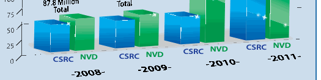
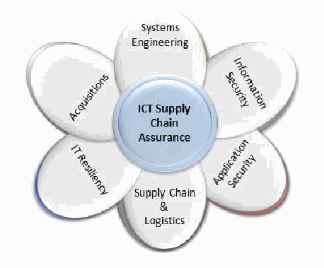
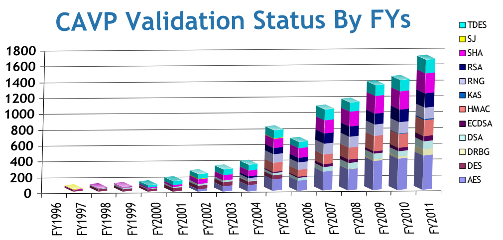

NIST IR 7816 日本語訳
英語タイトル : Computer Security Division 2011 Annual Report日本語タイトル : コンピュータセキュリティ部門 2011 年次報告書
公開日 : 2012-05-08
原文URL : https://csrc.nist.gov/pubs/ir/7816/final
翻訳編集 : 自動生成（有志による非公式の日本語訳）, 原文取得日 : 2026-10-31, 訳文 : 1185 / 1194 ブロック
[要約] NIST IR 7816 は、NIST の情報技術研究所のコンピュータセキュリティ部門（CSD）の 2011 年次報告書です。CSD は、国家安全保障に関係しない連邦情報と情報システムの保護のための、標準、ガイドライン、テスト、指標の策定を担っており、2011 会計年度には、クラウドコンピューティングやモバイルインフラストラクチャ、サイバーフィジカルシステムなどにも研究を広げたと述べています。部門の組織を紹介したうえで、セキュリティマネジメント・保証グループによる連邦情報セキュリティマネジメント法（FISMA）実施プロジェクトやコンピュータセキュリティリソースセンター（CSRC）、暗号技術グループによる暗号メカニズムの取り組みなど、各グループの活動を説明します。医療情報技術のセキュリティ、全米サイバーセキュリティ教育イニシアチブ（NICE）、スマートグリッドなどの取り組みも取り上げています。
Computer Security Division 2011 Annual Report
コンピュータセキュリティ部門 2011 年次報告書
［人物の写真。人物が写っているため、この非公式サイトには掲載していません。原本 PDF を参照してください。］
Table of Contents
目次
Strategic Goal & Overview:
戦略目標と概要:
Federal Information Security Management Act (FISMA Project)
連邦情報セキュリティマネジメント法（FISMA プロジェクト）
Federal Information Security Management Act (FISMA) Implementation Project – Phase I — 4
連邦情報セキュリティマネジメント法（FISMA）実施プロジェクト – フェーズ I — 4
Federal Information Security Management Act (FISMA) Implementation Project – Phase II — 5
連邦情報セキュリティマネジメント法（FISMA）実施プロジェクト – フェーズ II — 5
Outreach and Awareness — 6
アウトリーチと意識向上 — 6
Computer Security Resource Center (CSRC) — 6
コンピュータセキュリティリソースセンター（CSRC） — 6
Federal Computer Security Program Managers’ Forum — 7
連邦コンピュータセキュリティプログラム管理者フォーラム — 7
Federal Information Systems Security Educators’ Association (FISSEA) — 8
連邦情報システムセキュリティ教育者協会（FISSEA） — 8
Information Security and Privacy Advisory Board (ISPAB) — 9
情報セキュリティ・プライバシー諮問委員会（ISPAB） — 9
Small and Medium-Sized Business (SMB) Outreach — 11
中小企業（SMB）へのアウトリーチ — 11
Health Information Technology Security — 11
医療情報技術のセキュリティ — 11
National Initiative for Cybersecurity Education (NICE) — 12
全米サイバーセキュリティ教育イニシアチブ（NICE） — 12
Smart Grid Cyber Security — 13
スマートグリッドのサイバーセキュリティ — 13
ICT Supply Chain Risk Management — 14
ICT サプライチェーンリスクマネジメント — 14
CAVP & CMVP Program — 14
CAVP および CMVP プログラム — 14
Cryptographic Validation Programs and Laboratory Accreditation — 15
暗号検証プログラムと試験所認定 — 15
Automated Security Testing and Test Suite Development — 18
自動化されたセキュリティ試験とテストスイートの開発 — 18
ISO Standardization of Security Requirements for Cryptographic Modules — 19
暗号モジュールのセキュリティ要件の ISO 標準化 — 19
Cryptographic Technology Group — 20
暗号技術グループ — 20
Strategic Goal & Overview — 20
戦略目標と概要 — 20
Cryptographic Standards Toolkit — 20
暗号標準ツールキット — 20
Hash Algorithms and the Secure Hash Standard (SHA)-3 Competition — 20
ハッシュアルゴリズムとセキュアハッシュ標準（SHA）-3 コンペティション — 20
Block Cipher Modes of Operation — 21
ブロック暗号の動作モード — 21
Key Management — 22
鍵管理 — 22
Security Guidelines Using Approved Hash Algorithms — 23
承認されたハッシュアルゴリズムを使用するセキュリティガイドライン — 23
Draft Federal Information Processing Standard (FIPS) 180-4, Secure Hash Standard (SHS) — 23
連邦情報処理標準（FIPS）180-4 ドラフト、セキュアハッシュ標準（SHS） — 23
Random Number Generator (RNG) — 23
乱数生成器（RNG） — 23
Quantum Computing — 24
量子コンピューティング — 24
Authentication — 25
認証 — 25
Security Aspects of Electronic Voting — 26
電子投票のセキュリティの側面 — 26
Development of Federal Information Processing Standard (FIPS) 140-3 Security Requirements for Cryptographic Modules — 26
連邦情報処理標準（FIPS）140-3 暗号モジュールのセキュリティ要件の策定 — 26
NIST Beacon – A Prototype Implementation of a Randomness Beacon — 27
NIST ビーコン – ランダムネスビーコンのプロトタイプ実装 — 27
Cryptography for Emerging Technologies and Applications (CETA) Workshop — 28
新興技術とアプリケーションのための暗号（CETA）ワークショップ — 28
Pairing-Based Cryptography — 28
ペアリングベース暗号 — 28
Personal Identity Verification (PIV) Test Cards — 29
個人識別検証（PIV）テストカード — 29
BIOS Security — 30
BIOS セキュリティ — 30
Privacy Enhancing Cryptography Project — 30
プライバシー強化暗号プロジェクト — 30
Systems and Emerging Technologies Security Research Group — 31
システム・新興技術セキュリティ研究グループ — 31
Strategic Goal & Overview — 31
戦略目標と概要 — 31
Identity Management — 31
アイデンティティ管理 — 31
Personal Identity Verification (PIV) and FIPS 201 Revision Efforts — 31
個人識別検証（PIV）と FIPS 201 の改訂の取り組み — 31
NIST Personal Identity Verification Program (PIV) — 32
NIST 個人識別検証プログラム（PIV） — 32
Conformity Assessment Program and Qualified Product List (QPL) for Identity and Credential Products for DHS/TSA — 33
DHS/TSA 向けの、アイデンティティおよびクレデンシャル製品の適合性評価プログラムと適格製品リスト（QPL） — 33
Biometric Standards and Conformity Assessment Activities — 33
生体標準と適合性評価の活動 — 33
Research in Emerging Technologies — 34
新興技術の研究 — 34
Automated Combinatorial Testing for Software — 34
ソフトウェアの自動化された組合せテスト — 34
Cloud Computing and Virtualization — 35
クラウドコンピューティングと仮想化 — 35
Security Ontologies for Risk Assessment — 36
リスク評価のためのセキュリティオントロジー — 36
Mobile Device Security — 36
モバイルデバイスのセキュリティ — 36
Access Control and Privilege Management — 37
アクセス制御と権限管理 — 37
Access Control and Privilege Management Research — 37
アクセス制御と権限管理の研究 — 37
Conformance Verification for Access Control Policies — 38
アクセス制御ポリシーの適合性検証 — 38
Metrics for Evaluation of Access Control Systems — 38
アクセス制御システムの評価のための指標 — 38
Policy Machine — 39
ポリシーマシン — 39
Automated Vulnerability Management — 40
自動化された脆弱性管理 — 40
Security Automation — 40
セキュリティの自動化 — 40
Security Content Automation Protocol (SCAP) — 40
セキュリティコンテンツ自動化プロトコル（SCAP） — 40
National Vulnerability Database (NVD) — 41
国家脆弱性データベース（NVD） — 41
National Checklist Program — 42
国家チェックリストプログラム — 42
Security Content Automation Protocol (SCAP) Validation Program — 43
セキュリティコンテンツ自動化プロトコル（SCAP）検証プログラム — 43
Technical Security Metrics — 44
技術的なセキュリティ指標 — 44
Vulnerability Measurement and Scoring — 44
脆弱性の測定とスコアリング — 44
Security Risk Analysis of Enterprise Networks Using Attack Graphs — 44
攻撃グラフを使ったエンタープライズネットワークのセキュリティリスク分析 — 44
Infrastructure Services, Protocols, and Applications — 45
インフラストラクチャサービス、プロトコル、アプリケーション — 45
Internet Protocol Version 6 (IPv6) and Internet Protocol Security (IPsec) — 45
インターネットプロトコルバージョン 6（IPv6）とインターネットプロトコルセキュリティ（IPsec） — 45
Securing the Domain Name System (DNS) — 45
ドメインネームシステム（DNS）のセキュリティ確保 — 45
CSD’s Part in National and ISO (Organization for Standardization) Security Standards Processes — 46
国内および ISO（国際標準化機構）のセキュリティ標準策定プロセスにおける CSD の役割 — 46
Honors and Awards — 50
表彰と受賞 — 50
Computer Security Division Standards & Guidelines (Publications) Released in FY2011 — 52
2011 会計年度に公表されたコンピュータセキュリティ部門の標準とガイドライン（刊行物） — 52
Draft Publications — 52-53
ドラフト刊行物 — 52-53
Federal Information Processing Standards (FIPS) — 53
連邦情報処理標準（FIPS） — 53
Special Publications (SPs) — 53
特別刊行物（SP） — 53
NIST Interagency Reports (NISTIRS) — 53-54
NIST 省庁間報告書（NISTIRS） — 53-54
ITL Security Bulletins — 54
ITL セキュリティ速報 — 54
Computer Security Division Publications Released in FY2011 — 55-69
2011 会計年度に公表されたコンピュータセキュリティ部門の刊行物 — 55-69
Ways to Engage Our Division and NIST — 70-71
部門と NIST に関わる方法 — 70-71
Acknowledgements — 72
謝辞 — 72
Welcome
ごあいさつ
The United States (U.S.) economy and U.S. citizens are reliant on information technology (IT). Federal agencies and the private sector cannot function without IT. Protecting IT, including its information and the information infrastructure, is critical for the Nation. The Computer Security Division (CSD), a component of the Information Technology Laboratory at the National Institute of Standards and Technology (NIST) is responsible for developing standards, guidelines, tests and metrics for the protection of non-national security federal information and information systems. The CSD standards, guidelines, tests and metrics have also become leading resources for information security in the private sector.
米国（U.S.）の経済と米国民は、情報技術（IT）に依存しています。連邦機関も民間部門も、IT なしでは機能できません。IT と、その情報および情報インフラストラクチャを保護することは、国にとって極めて重要です。米国国立標準技術研究所（NIST）の情報技術研究所の一部門であるコンピュータセキュリティ部門（CSD）は、国家安全保障に関係しない連邦情報と情報システムの保護のための、標準、ガイドライン、テスト、指標の策定を担っています。CSD の標準、ガイドライン、テスト、指標は、民間部門における情報セキュリティの主要なリソースにもなっています。
During fiscal year 2011 (FY2011), CSD extended its research and development agenda for high-quality, cost-effective security and privacy mechanisms to foster improved information security across the federal government and the greater information security community. This included addressing challenges for the protection of information and information systems for enterprise environments as well as in cloud computing and mobile infrastructures. In addition, we explored processes and mechanisms to protect personally identifiable information through the application of privacy controls and privacy-enhancing technologies. Our research also extended to non-traditional forms of IT including cyber-physical systems and security for sensor devices.
2011 会計年度（FY2011）に、CSD は、連邦政府全体とより広い情報セキュリティコミュニティにわたる情報セキュリティの改善を促進するため、高品質で費用対効果の高いセキュリティおよびプライバシーのメカニズムに関する研究開発の計画を拡大しました。これには、エンタープライズ環境のほか、クラウドコンピューティングやモバイルインフラストラクチャにおける、情報と情報システムの保護の課題への取り組みが含まれます。さらに、プライバシー管理策とプライバシー強化技術を適用して、個人を特定できる情報を保護するためのプロセスとメカニズムも探究しました。私たちの研究は、サイバーフィジカルシステムやセンサーデバイスのセキュリティを含む、非従来型の形態の IT にも広がりました。
Our ability to interact with the broad federal community continues to be critical to our success. This interaction helps to ensure that our research is consistent with national objectives related to or impacted by information security. This interaction is most prominent in our strengthened collaborations with the Department of Defense, the Intelligence Community, and the Committee on National Security Systems to establish a common foundation for information security across the federal government. The FY2011 release of Special Publication 800-39, Managing Information Security Risk: Organization, Mission, and Information System View, developed by the Joint Task Force Transformation Initiative Interagency Working Group, is not only leading to more uniform and consistent ways to manage risks, but it is also providing a strong basis for greater information sharing among stakeholders.
幅広い連邦コミュニティと交流する私たちの能力は、引き続き私たちの成功にとって重要です。この交流は、私たちの研究が、情報セキュリティに関連する、または情報セキュリティの影響を受ける国家目標と整合していることを確保するのに役立ちます。この交流が最も顕著なのは、連邦政府全体の情報セキュリティの共通の基盤を確立するための、国防総省、インテリジェンスコミュニティ、国家安全保障システム委員会との強化された協力においてです。Joint Task Force Transformation Initiative 省庁間ワーキンググループが策定した、2011 会計年度の特別刊行物 800-39、Managing Information Security Risk: Organization, Mission, and Information System View, の公表は、リスクを管理するためのより統一された一貫した方法につながっているだけでなく、利害関係者間の情報共有を拡大するための強力な基盤も提供しています。
The success of many of our technical programs is dependent on our partnership with industry. In FY2011, we continued to drive greater adoption of security automation protocols by major information technology manufacturers, as well as new and innovative applications of security automation to more diverse use cases including continuous monitoring and health information technology. Lower in the stack, CSD worked with the computer hardware industry on mechanisms to improve security at the hardware layer. Recently issued guidelines on protecting the BIOS in laptop and desktop computers have already had a major impact with several hardware vendors offering products intended to meet the guidelines, laying the foundation for more secure systems.
私たちの技術プログラムの多くの成功は、産業界とのパートナーシップに依存しています。2011 会計年度には、主要な情報技術製造者によるセキュリティ自動化プロトコルの採用拡大を引き続き推進するとともに、継続的監視や医療情報技術など、より多様なユースケースへの、セキュリティ自動化の新しく革新的な応用も推進しました。スタックのより下位の層では、CSD はコンピュータハードウェア業界と協力して、ハードウェア層でセキュリティを向上させるメカニズムに取り組みました。最近公表された、ノートパソコンとデスクトップコンピューターの BIOS を保護するためのガイドラインは、すでに大きな影響を与えており、複数のハードウェアベンダーが、このガイドラインを満たすことを意図した製品を提供して、より安全なシステムの基盤を築いています。
Other significant highlights of our work in FY2011 include NIST’s leadership role in supporting the establishment of the Federal Risk and Authorization Management Program (FedRAMP), which facilitates a standard approach for provisional security automation of cloud computing products and services; and in hosting the third round of the SHA-3 competition to determine a successor to the current government-approved cryptographic hash algorithm.
2011 会計年度の私たちの取り組みのその他の重要なハイライトには、クラウドコンピューティングの製品とサービス向けにセキュリティ自動化を暫定的に提供するための標準的なアプローチを促進する、連邦リスク・認可管理プログラム（FedRAMP）の設立を支援する NIST のリーダーシップの役割、および、現行の政府承認の暗号ハッシュアルゴリズムの後継を決定する SHA-3 コンペティションの第 3 ラウンドの主催があります。
For many years, the Computer Security Division (CSD) has made great contributions to help secure the nation’s sensitive information and information systems. Looking forward to FY2012, CSD will continue to lead in areas as diverse as risk management and continuous monitoring, awareness and outreach, privacy-enhancing cryptography, security for virtual environments, and mobile computing technology security. CSD will also focus on aligning our resources to not only develop and apply innovative security technologies, but also to enhance our ability to address current and future computer and information security challenges faced by critical national and international priorities.
長年にわたり、コンピュータセキュリティ部門（CSD）は、国の機微な情報と情報システムの保護に大きく貢献してきました。2012 会計年度を見据え、CSD は、リスクマネジメントと継続的監視、意識向上とアウトリーチ、プライバシー強化暗号、仮想環境のセキュリティ、モバイルコンピューティング技術のセキュリティなど、多様な分野で引き続きリードしていきます。CSD は、革新的なセキュリティ技術を開発して適用するだけでなく、国家的および国際的な重要優先事項が直面する現在および将来のコンピュータと情報セキュリティの課題に対処する能力を高めるよう、リソースを整えることにも重点を置きます。
Donna Dodson
Chief, Computer Security Division
& Deputy Chief Cybersecurity Advisor
Donna Dodson
コンピュータセキュリティ部門長
兼サイバーセキュリティ副主席顧問
Division Organization
部門の組織
Donna Dodson
Chief, Computer Security Division and
Deputy Chief Cybersecurity Advisor
Donna Dodson
コンピュータセキュリティ部門長、兼
サイバーセキュリティ副主席顧問
Matthew Scholl
Deputy Division Chief
Matthew Scholl
部門副部長
GROUP MANAGERS
グループマネージャー
David Ferraiolo
Systems and Emerging Technologies
Security Research Group
David Ferraiolo
システム・新興技術
セキュリティ研究グループ
Matthew Scholl
Security Management and
Assurance Group
Matthew Scholl
セキュリティマネジメント・
保証グループ
Tim Polk
Cryptographic Technology
Group
Tim Polk
暗号技術
グループ
The Computer Security Division Implements the Federal Information Security Management Act of 2002
コンピュータセキュリティ部門による 2002 年連邦情報セキュリティマネジメント法の実施
The E-Government Act, Public Law 107-347, passed by the 107th Congress and signed into law by the President in December 2002, recognized the importance of information security to the economic and national security interests of the United States. Title III of the E-Government Act, entitled the Federal Information Security Management Act (FISMA) of 2002, included duties and responsibilities for the National Institute of Standards and Technology, Information Technology Laboratory (ITL), Computer Security Division (CSD). In 2011, CSD addressed its assignments through the following projects and activities:
2002 年 12 月に第 107 議会で可決され大統領が署名して成立した電子政府法（公法 107-347）は、米国の経済と国家安全保障上の利益にとっての情報セキュリティの重要性を認めました。電子政府法の第 III 編、2002 年連邦情報セキュリティマネジメント法（FISMA）には、米国国立標準技術研究所（NIST）情報技術研究所（ITL）コンピュータセキュリティ部門（CSD）の職務と責任が含まれていました。2011 年に、CSD は、次のプロジェクトと活動を通じて、割り当てられた任務に取り組みました。
•Issued 17 final NIST Special Publications (SPs) that provided management, operational, and technical security guidance in areas such as: Basic Input/Output System (BIOS) protection, cloud computing, configuration management, cryptography, industrial control system security, information security continuous monitoring, key management, security automation, and virtualization. In addition, 19 draft SPs on a variety of topics, including: cloud computing, cryptographic key management, electronic authentication, personal identity verification, and risk assessments, were issued for public comment;
•基本入出力システム（BIOS）の保護、クラウドコンピューティング、構成管理、暗号、産業用制御システムのセキュリティ、情報セキュリティの継続的監視、鍵管理、セキュリティ自動化、仮想化などの分野で、管理面、運用面、技術面のセキュリティガイダンスを提供する、17 件の最終版 NIST 特別刊行物（SP）を公表しました。さらに、クラウドコンピューティング、暗号鍵管理、電子認証、個人識別検証、リスク評価など、さまざまなテーマに関する 19 件のドラフト SP を、パブリックコメント用に公表しました。
•Continued the successful collaboration with the Office of the Director of National Intelligence, Committee on National Security Systems, and the Department of Defense to establish a common foundation for information security across the federal government, including a consistent process for selecting and specifying safeguards and countermeasures (i.e., security controls) for federal information systems;
•国家情報長官室、国家安全保障システム委員会、国防総省との成功を収めている協力関係を継続し、連邦情報システムの保護措置と対策（すなわちセキュリティ管理策）を選択して規定するための一貫したプロセスなど、連邦政府全体の情報セキュリティの共通の基盤を確立しました。
•Provided assistance to agencies and the private sector: conducted ongoing, substantial reimbursable and non-reimbursable assistance support, including many outreach efforts such as the Federal Information Systems Security Educators’ Association (FISSEA), the Federal Computer Security Program Managers’ Forum (FCSM Forum), and the Small Business Corner;
•機関と民間部門への支援を提供しました。連邦情報システムセキュリティ教育者協会（FISSEA）、連邦コンピュータセキュリティプログラム管理者フォーラム（FCSM フォーラム）、スモールビジネスコーナーなどの多くのアウトリーチ活動を含め、継続的で大規模な、費用が償還される支援と償還されない支援を実施しました。
•Reviewed security policies and technologies from the private sector and national security systems for potential federal agency use: hosted a growing repository of federal agency security practices, public/private security practices, and security configuration checklists for Information Technology (IT) products. Continued to lead, in conjunction with the Government of Canada’s Communications Security Establishment, the Cryptographic Module Validation Program (CMVP). The Common Criteria Evaluation and Validation Scheme (CCEVS) and CMVP facilitate security testing of IT products usable by the federal government;
•連邦機関が利用する可能性のある、民間部門および国家安全保障システムのセキュリティ方針と技術を調査しました。連邦機関のセキュリティ実践、官民のセキュリティ実践、情報技術（IT）製品のセキュリティ構成チェックリストの、拡大するリポジトリを提供しました。カナダ政府の通信保安局とともに、暗号モジュール検証プログラム（CMVP）を引き続き主導しました。共通基準評価・検証スキーム（CCEVS）と CMVP は、連邦政府が利用できる IT 製品のセキュリティ試験を促進します。
•Solicited recommendations of the Information Security and Privacy Advisory Board on draft standards and guidelines and on information security and privacy issues regularly at quarterly meetings;
•四半期ごとの会議で、標準とガイドラインのドラフト、および情報セキュリティとプライバシーの問題について、情報セキュリティ・プライバシー諮問委員会の推奨事項を定期的に求めました。
•Provided outreach, workshops, and briefings: conducted ongoing awareness briefings and outreach to CSD’s customer community and beyond to ensure comprehension of guidance and awareness of planned and future activities. CSD also held workshops to identify areas that the customer community wishes to be addressed, and to scope guidelines in a collaborative and open format; and
•アウトリーチ、ワークショップ、ブリーフィングを提供しました。ガイダンスの理解と、計画中および将来の活動への認識を確保するため、CSD の顧客コミュニティやそれ以外に向けて、意識向上ブリーフィングとアウトリーチを継続的に実施しました。CSD はまた、顧客コミュニティが取り組むことを望む領域を特定し、協調的でオープンな形式でガイドラインの範囲を定めるために、ワークショップも開催しました。
•Produced an annual report as a NIST Interagency Report (NISTIR). The 2003-2010 Annual Reports are available via our Computer Security Resource Center (CSRC) website.
•NIST 省庁間報告書（NISTIR）として年次報告書を作成しました。2003 年から 2010 年の年次報告書は、コンピュータセキュリティリソースセンター（CSRC）のウェブサイトから入手できます。
Security Management and Assurance Group
セキュリティマネジメント・保証グループ
Strategic Goal
戦略目標
The Security Management and Assurance (SMA) Group provides leadership, expertise, outreach, validation, standards, and guidelines to assist the federal IT community in protecting information and information systems, and in using these critical assets to accomplish federal agency missions.
セキュリティマネジメント・保証（SMA）グループは、連邦の IT コミュニティが、情報と情報システムを保護し、それらの重要な資産を使って連邦機関の任務を達成するのを支援するため、リーダーシップ、専門知識、アウトリーチ、検証、標準、ガイドラインを提供します。
Overview
概要
Information security is an integral element of good management. Information and information systems are critical assets that support the mission of an organization. Protecting these information assets can be as important as protecting other organizational resources, such as intellectual property, physical assets, or employees. Organizations need to have assurance that the security practices and technologies that they implement provide adequate security necessary to protect their mission, systems, and information.
情報セキュリティは、優れたマネジメントの不可欠な要素です。情報と情報システムは、組織の任務を支える重要な資産です。これらの情報資産の保護は、知的財産、物理的資産、従業員などの他の組織の資源の保護と同じくらい重要となりえます。組織は、実施するセキュリティの実践と技術が、任務、システム、情報を保護するために必要な十分なセキュリティを提供しているという保証を得る必要があります。
Ultimate responsibility for the success of an organization lies with its senior management. These officials establish the organization’s information security program and its overall program goals, objectives, and priorities in order to support the mission of the organization. They are also responsible for ensuring that required resources are applied to the program.
組織の成功に対する最終的な責任は、その上級管理者にあります。これらの職員は、組織の任務を支えるために、組織の情報セキュリティプログラムと、その全体的なプログラムの目標、目的、優先順位を確立します。また、必要な資源がプログラムに充てられることを確保する責任も負います。
Collaboration with other organizations is critical for success. Within the federal government, NIST collaborates with the Office of Management and Budget (OMB), the Government Accountability Office (GAO), and all Executive Branch agencies. We also work closely with a number of information technology organizations and standards bodies, as well as with public and private organizations. Internationally we work jointly with the governments of our allies, including Canada, Japan, Australia, and several European and Asian countries, to standardize and validate the correct implementation of cryptography.
他の組織との連携は、成功にとって極めて重要です。連邦政府内では、NIST は、行政管理予算局（OMB）、政府説明責任局（GAO）、およびすべての行政府の機関と連携しています。また、多数の情報技術組織や標準化団体、さらに官民の組織とも緊密に連携しています。国際的には、暗号の正しい実装を標準化し検証するために、カナダ、日本、オーストラリア、および欧州とアジアのいくつかの国を含む、同盟国の政府と共同で取り組んでいます。
Major initiatives in this area include:
この分野の主要な取り組みには、次のものがあります。
•The Federal Information Security Management Act (FISMA) implementation project;
•連邦情報セキュリティマネジメント法（FISMA）実施プロジェクト
•The Cryptographic Module Validation Program (CMVP);
•暗号モジュール検証プログラム（CMVP）
•The Cryptographic Algorithm Validation Program (CAVP);
•暗号アルゴリズム検証プログラム（CAVP）
•Security for Health Information Technology;
•医療情報技術のセキュリティ
•Security standards and conformance for the nation’s Smart Grid;
•国のスマートグリッドのセキュリティ標準と適合性
•The National Initiative for Cybersecurity Education (NICE);
•全米サイバーセキュリティ教育イニシアチブ（NICE）
•Extended outreach initiatives to federal and nonfederal agencies, state and local governments, international organizations, and small businesses;
•連邦機関および非連邦機関、州・地方政府、国際機関、中小企業への拡大されたアウトリーチの取り組み
•Standards development; and
•標準の策定
•Producing and updating NIST Special Publications (SPs) on security management topics.
•セキュリティマネジメントのテーマに関する NIST 特別刊行物（SP）の作成と更新
Key to the success in this area is our ability to interact with a broad constituency – federal and nonfederal – in order to ensure that our program is consistent with national objectives related to or impacted by information security.
この分野での成功の鍵は、私たちのプログラムが、情報セキュリティに関連する、または情報セキュリティの影響を受ける国家目標と整合していることを確保するために、連邦と非連邦の幅広い関係者と交流する能力です。
Federal Information Security Management Act
連邦情報セキュリティマネジメント法
FISMA Implementation Project – Phase I
FISMA 実施プロジェクト – フェーズ I
Phase I of the FISMA Implementation Project focuses on developing a comprehensive series of standards and guidelines to help federal agencies build strong cybersecurity programs, defend against increasingly sophisticated cyber attacks, and demonstrate compliance to security requirements set forth in legislation, Executive Orders, Homeland Security Directives, and OMB polices. During 2010-2011, CSD strengthened its collaboration with the Department of Defense, the Intelligence Community, and the Committee on National Security Systems, in partnership with the Joint Task Force Transformation Initiative, which continues to develop key cybersecurity guidelines for protecting federal information and information systems for the Unified Information Security Framework. Previously, the Joint Task Force developed common security guidance in the critical areas of security controls for information systems and organizations, security assessment procedures to demonstrate security control effectiveness, security authorizations for risk acceptance decisions, and continuous monitoring activities to ensure that decision makers receive the most up-to-date information on the security state of their information systems.
FISMA 実施プロジェクトのフェーズ I は、連邦機関が強固なサイバーセキュリティプログラムを構築し、ますます巧妙化するサイバー攻撃から防御し、法律、大統領令、国土安全保障指令、OMB の方針に定められたセキュリティ要件への準拠を示すのを支援する、包括的な一連の標準とガイドラインの策定に重点を置いています。2010 年から 2011 年にかけて、CSD は、統一情報セキュリティフレームワークのために連邦情報および情報システムを保護する主要なサイバーセキュリティガイドラインを策定し続けている Joint Task Force Transformation Initiative と連携し、国防総省、インテリジェンスコミュニティ、国家安全保障システム委員会との協力を強化しました。これに先立ち、Joint Task Force は、情報システムと組織のセキュリティ管理策、セキュリティ管理策の有効性を示すためのセキュリティ評価手順、リスク受容の判断に用いるセキュリティ認可、意思決定者が情報システムのセキュリティ状態に関する最新情報を確実に受け取れるようにする継続的監視活動という、重要な分野で共通のセキュリティガイダンスを策定しました。
In FY2011, CSD worked on the following initiatives:
2011 会計年度に、CSD は次の取り組みを行いました。
(i) Risk Management and Risk Assessment Guidance: Developed a three-tiered risk management approach for enterprise-wide use focusing on an organization level, mission/business process level, and information system level. Developed a four-step risk management process that is applied across all three risk management tiers and that includes risk framing, risk assessment, risk response, and risk monitoring. Provided comprehensive risk assessment guidance examining the relationships among key risk factors including threats, vulnerabilities, impact, and likelihood.
(i) リスクマネジメントとリスク評価のガイダンス: 組織レベル、任務/業務プロセスレベル、情報システムレベルに重点を置いた、エンタープライズ全体で使用する 3 階層のリスクマネジメントアプローチを策定しました。3 つのリスクマネジメント階層のすべてに適用され、リスクのフレーミング、リスク評価、リスク対応、リスクの監視を含む、4 ステップのリスクマネジメントプロセスを策定しました。脅威、脆弱性、影響、可能性などの主要なリスク要因の間の関係を検討する、包括的なリスク評価ガイダンスを提供しました。
(ii) Continuous Monitoring and Configuration Management Guidelines: Developed information security continuous monitoring guidelines to help organizations determine the effectiveness of deployed security controls, changes to organizational information systems and environments of operation, and compliance with federal legislation, policies, directives, standards, and guidance. Developed security configuration management guidelines to ensure that organizations employ effective techniques to manage information technology components and implement required configuration settings within information technology products, thereby reducing or eliminating classes of threats to organizational information systems and organizations.
(ii) 継続的監視と構成管理のガイドライン: 展開されたセキュリティ管理策の有効性、組織の情報システムと運用環境の変更、および連邦の法律、方針、指令、標準、ガイダンスへの準拠を、組織が判断するのを支援する、情報セキュリティの継続的監視のガイドラインを策定しました。組織が、情報技術コンポーネントを管理するための有効な手法を採用し、情報技術製品内で必要な構成設定を実装して、組織の情報システムと組織に対する脅威の種類を減らす、または排除することを確保するための、セキュリティ構成管理のガイドラインを策定しました。
(iii) FISMA Outreach Activity to Public and Private Sector Organizations: Conducted cybersecurity outreach briefings and provided support to state and local governments as well as private sector organizations. Briefings included key cybersecurity topics of interest, such as effective implementation of the NIST Risk Management Framework. In addition, conducted outreach activities with academic institutions, providing information on NIST’s security standards and guidelines and exploring new areas of cybersecurity research and development.
(iii) 官民の組織への FISMA アウトリーチ活動: 州・地方政府や民間部門の組織に対して、サイバーセキュリティのアウトリーチブリーフィングを実施し、支援を提供しました。ブリーフィングには、NIST リスクマネジメントフレームワークの効果的な実装など、関心の高い主要なサイバーセキュリティのトピックが含まれていました。さらに、学術機関とのアウトリーチ活動を行い、NIST のセキュリティ標準とガイドラインに関する情報を提供し、サイバーセキュリティの研究開発の新しい領域を探究しました。
In FY2011, CSD completed the following activities in cooperation and collaboration with its Joint Task Force partners:
2011 会計年度に、CSD は、Joint Task Force のパートナーとの協力と連携のもとで、次の活動を完了しました。
•Developed NIST Special Publication (SP) 800-39, Managing Information Security Risk: Organization, Mission, and Information System View; and
•NIST 特別刊行物（SP）800-39、Managing Information Security Risk: Organization, Mission, and Information System View; を策定しました。
•Developed an initial public draft of SP 800-30, Revision 1, Guide for Conducting Risk Assessments.
•SP 800-30 改訂 1、Guide for Conducting Risk Assessments. の初期のパブリックドラフトを策定しました。
In FY2012, CSD intends to:
2012 会計年度に、CSD は次のことを意図しています。
•Update SP 800-53, Revision 3, Recommended Security Controls for Federal Information Systems and Organizations, to Revision 4;
•SP 800-53 改訂 3、Recommended Security Controls for Federal Information Systems and Organizations, を改訂 4 に更新します。
•Finalize SP 800-30, Revision 1, Guide for Conducting Risk Assessments;
•SP 800-30 改訂 1、Guide for Conducting Risk Assessments; を最終版にします。
•Develop an information system security and engineering guideline; and
•情報システムのセキュリティとエンジニアリングに関するガイドラインを策定する
•Expand cybersecurity outreach program to include additional state, local, and tribal governments as well as private sector organizations and academic institutions.
•サイバーセキュリティのアウトリーチプログラムを拡大し、追加の州、地方、部族の政府、および民間部門の組織や学術機関を含めます。
http://csrc.nist.gov/sec-cert
Contact:
Dr. Ron Ross
(301) 975-5390
ron.ross@nist.gov
http://csrc.nist.gov/sec-cert
連絡先:
Dr. Ron Ross
(301) 975-5390
ron.ross@nist.gov
FISMA Implementation Project – Phase II
FISMA 実施プロジェクト – フェーズ II
Phase II of the FISMA Implementation Project focuses on building common understanding and reference guides for organizations applying the NIST suite of publications that support the Risk Management Framework (RMF), and for public and private sector organizations that provide security assessments of information systems for federal agencies. Security assessments determine the extent to which the security controls are implemented correctly, operating as intended, and producing the desired outcome with respect to meeting the security requirements for the system. Management, operational, and technical security controls, as well as information technology products and services used in security control implementation, are included in security assessments.
FISMA 実施プロジェクトのフェーズ II は、リスクマネジメントフレームワーク（RMF）を支える NIST の刊行物群を適用する組織と、連邦機関のために情報システムのセキュリティ評価を提供する官民の組織に向けて、共通の理解と参照ガイドを構築することに重点を置いています。セキュリティ評価は、セキュリティ管理策が正しく実装され、意図したとおりに運用され、システムのセキュリティ要件を満たす上で望ましい結果を生んでいる程度を判断します。管理面、運用面、技術面のセキュリティ管理策、およびセキュリティ管理策の実装に使用される情報技術製品とサービスが、セキュリティ評価に含まれます。
In FY2011, CSD worked on the following initiatives:
2011 会計年度に、CSD は次の取り組みを行いました。
(i) Training: Developed classroom-based and web-based training courses, published Quick Start Guides (QSGs), and developed Frequently Asked Questions (FAQs) for establishing common understanding of the NIST standards and guidelines supporting the RMF.
(i) トレーニング: RMF を支える NIST の標準とガイドラインについて共通の理解を確立するため、教室型とウェブ型のトレーニングコースを開発し、クイックスタートガイド（QSG）を公表し、よくある質問（FAQ）を作成しました。
(ii) Organizational Security Assessment Capability: Defined minimum capability and proficiency criteria for public and private sector organizations providing security assessment services for federal agencies.
(ii) 組織のセキュリティ評価能力: 連邦機関のためにセキュリティ評価サービスを提供する官民の組織について、最低限の能力と習熟度の基準を定義しました。
•Developed final drafts of web-based and classroom-based training courses on the RMF, Applying the RMF to Federal Information Systems;
•RMF に関する、ウェブ型と教室型のトレーニングコース Applying the RMF to Federal Information Systems; の最終ドラフトを作成しました。
•Developed draft of web-based training course for the Monitor step of the six-step RMF;
•6 ステップの RMF の監視ステップのための、ウェブ型トレーニングコースのドラフトを作成しました。
•Completed second draft QSGs and FAQs supporting the Select step of the six-step RMF (adding to the currently available QSGs and FAQs for the Categorize and Monitor steps); and
•6 ステップの RMF の選択ステップを支える、QSG と FAQ の第 2 ドラフトを完成させました（現在利用可能な、分類ステップと監視ステップの QSG と FAQ に加わります）。
•Developed technical capability requirements and proficiency test scenarios for organizations to demonstrate their capability in providing security assessments of cloud-based information systems consistent with FISMA and NIST standards and guidelines. The technical capability requirements were derived from Draft NIST Interagency Report (NISTIR) 7328, Assessment Provider Requirements and Customer Responsibilities: Building a Security Assessment Credentialing Program for Federal Information Systems, and the core set of NIST standards and guidelines from Phase I of the FISMA Implementation Project that support the RMF. CSD is collaborating with the ITL Systems and Software Division (SSD) and the NIST Standards Coordination Office using the International Standard ISO/IEC 17020:2008 General criteria for the operation of various types of bodies performing inspections, in supporting the General Services Administration (GSA) for qualifying security assessment organizations (SAOs) to conduct security assessments of Cloud Service Providers (CSPs) cloud-based information systems.
•FISMA と NIST の標準およびガイドラインに沿って、クラウドベースの情報システムのセキュリティ評価を提供する能力を組織が実証するための、技術的能力要件と習熟度テストのシナリオを策定しました。技術的能力要件は、NIST 省庁間報告書（NISTIR）7328 のドラフト Assessment Provider Requirements and Customer Responsibilities: Building a Security Assessment Credentialing Program for Federal Information Systems, と、RMF を支える FISMA 実施プロジェクトのフェーズ I における NIST 標準およびガイドラインの中核的な集合から導出されました。CSD は、一般調達局（GSA）がセキュリティ評価組織（SAO）を認定し、クラウドサービスプロバイダー（CSP）のクラウドベース情報システムのセキュリティ評価を実施できるよう支援するため、国際標準 ISO/IEC 17020:2008 General criteria for the operation of various types of bodies performing inspections, を用いて、ITL システム・ソフトウェア部門（SSD）および NIST 標準調整室と連携しています。
In FY2012, CSD intends to:
2012 会計年度に、CSD は次のことを意図しています。
•Develop final draft QSGs and FAQs for the Implement, Assess, and Authorize steps of the six-step RMF; and
•6 ステップの RMF の実装、評価、認可の各ステップのための QSG と FAQ の最終ドラフトを作成する
•Prototype the proficiency test capability demonstration in supporting GSA for qualifying SAOs to conduct security assessments of cloud-based information systems.
•GSA がクラウドベースの情報システムのセキュリティ評価を実施する SAO に資格を与えるのを支援するため、習熟度テストの能力実証のプロトタイプを作成します。
http://csrc.nist.gov/sec-cert
Contacts:
Mr. Arnold Johnson Ms. Pat Toth
(301) 975-3247 (301) 975-5140 arnold.johnson@nist.gov patricia.toth@nist.gov
http://csrc.nist.gov/sec-cert
連絡先:
Mr. Arnold Johnson Ms. Pat Toth
(301) 975-3247 (301) 975-5140 arnold.johnson@nist.gov patricia.toth@nist.gov
http://csrc.nist.gov/sec-cert
Contacts:
http://csrc.nist.gov/sec-cert
連絡先:
| Mr. Arnold Johnson (301) 975-3247 arnold.johnson@nist.gov | Ms. Pat Toth (301) 975-5140 patricia.toth@nist.gov |
| Mr. Arnold Johnson (301) 975-3247 arnold.johnson@nist.gov | Ms. Pat Toth (301) 975-5140 patricia.toth@nist.gov |
In FY2011, CSD completed the following activities:
2011 会計年度に、CSD は次の活動を完了しました。
Computer Security Resource Center (CSRC)
コンピュータセキュリティリソースセンター（CSRC）
The Computer Security Resource Center (CSRC) is CSD’s website and is one of the most visited websites at NIST. CSRC encourages broad sharing of information security tools and practices, provides a resource for information security standards and guidelines, and identifies and links key security web resources to support industry and government users. CSRC is an integral component of all of the work that we conduct and produce. It is our repository for anyone, public or private sector, wanting to access our documents and other valuable information security-related information. During FY2011, our division’s two websites, CSRC and the National Vulnerability Database (NVD), had more than 102.6 million requests combined1. CSRC received a little over 54.0 million total requests. The NVD website within CSRC received over 48.6 million total requests.
コンピュータセキュリティリソースセンター（CSRC）は CSD のウェブサイトであり、NIST で最も多く閲覧されるウェブサイトの一つです。CSRC は、情報セキュリティのツールと実践の幅広い共有を促し、情報セキュリティの標準とガイドラインのリソースを提供し、産業界と政府のユーザーを支援するために、主要なセキュリティ関連ウェブリソースを特定してリンクしています。CSRC は、私たちが行い、作成するすべての取り組みの不可欠な構成要素です。公共部門か民間部門かを問わず、私たちの文書やその他の貴重な情報セキュリティ関連情報にアクセスしたい人のための、リポジトリです。2011 会計年度中に、私たちの部門の二つのウェブサイト、CSRC と国家脆弱性データベース（NVD）は、合計で 1 億 260 万件を超えるリクエストを受けました1。CSRC が受けたリクエストの総数は、5,400 万件をわずかに超えました。CSRC 内の NVD ウェブサイトが受けたリクエストの総数は、4,860 万件を超えました。
TOTAL NUMBER OF WEBSITE REQUESTS: CSRC & NVD
ウェブサイトのリクエスト総数: CSRC と NVD

CSRC と NVD のウェブサイトへの総リクエスト数を会計年度別に示す棒グラフ（縦軸は 0〜2億5,000万）。2008、2009、2010、2011 の各年に CSRC（青）と NVD（緑）の棒が並び、合計はそれぞれ 87.8 百万、91.4 百万、214.8 百万、102.5 百万です。
CSRC is the primary gateway for gaining access to NIST computer security publications, standards, and guidelines, and serves as a vital link to our internal and external customers. The following documents can be found on CSRC: Drafts for public comment, Federal Information Processing Standards (FIPS), Special Publications (SPs), NIST Interagency Reports (NISTIRs), and ITL Security Bulletins.
CSRC は、NIST のコンピュータセキュリティ刊行物、標準、ガイドラインにアクセスするための主要な窓口であり、内部および外部の顧客との重要なつながりとなっています。CSRC では、パブリックコメント用のドラフト、連邦情報処理標準（FIPS）、特別刊行物（SP）、NIST 省庁間報告書（NISTIR）、ITL セキュリティ速報などの文書を入手できます。
The URL for the Publications homepage is: http://csrc.nist.gov/publications. Publications are organized by Topic, Family categories, and Legal Requirements to help users locate relevant information quickly.
刊行物のホームページの URL は http://csrc.nist.gov/publications です。刊行物は、トピック、ファミリーのカテゴリー、法的要件ごとに整理されており、ユーザーが関連情報をすばやく見つけられるようになっています。
During FY2011, the top ten downloaded publications were:
2011 会計年度に最もダウンロードされた刊行物の上位 10 件は、次のとおりです。
1.SP 800-53 Revision 3, Recommended Security Controls for Federal Information Systems and Organizations;
1.SP 800-53 Revision 3, Recommended Security Controls for Federal Information Systems and Organizations;
2.SP 800-30, Risk Management Guide for Information Technology Systems;
2.SP 800-30, Risk Management Guide for Information Technology Systems;
3.SP 800-77, Guide to IPsec VPNs;
3.SP 800-77, Guide to IPsec VPNs;
4.SP 800-100, Information Security Handbook: A Guide for Managers;
4.SP 800-100, Information Security Handbook: A Guide for Managers;
5.SP 800-94, Guide to Intrusion Detection and Prevention Systems (IDPS);
5.SP 800-94, Guide to Intrusion Detection and Prevention Systems (IDPS);
6.SP 800-61 Revision 1, Computer Security Incident Handling Guide;
6.SP 800-61 Revision 1, Computer Security Incident Handling Guide;
7.FIPS 140-2, Security Requirements for Cryptographic Modules;
7.FIPS 140-2, Security Requirements for Cryptographic Modules;
8.SP 800-53A, Guide for Assessing the Security Controls in Federal Information Systems;
8.SP 800-53A, Guide for Assessing the Security Controls in Federal Information Systems;
9.SP 800-12, An Introduction to Computer Security: The NIST Handbook;
9.SP 800-12, An Introduction to Computer Security: The NIST Handbook;
10.SP 800-92, Guide to Computer Security Log Management.
10.SP 800-92, Guide to Computer Security Log Management.
The CSRC is continuously updated with new information on various project pages. Some of the major highlights of CSRC during FY2011 were:
CSRC は、さまざまなプロジェクトのページで新しい情報により継続的に更新されています。2011 会計年度の CSRC の主なハイライトには、次のものがありました。
•Continuous updates to the National Initiative for Cybersecurity Education (NICE) website, which includes: 2011 NICE Workshop, the NICE Strategic Plan (Draft), and the NICE Framework. URL: http://www.nist.gov/nice;
•2011 年 NICE ワークショップ、NICE 戦略計画（ドラフト）、NICE フレームワークを含む、全米サイバーセキュリティ教育イニシアチブ（NICE）のウェブサイトの継続的な更新。URL: http://www.nist.gov/nice
•Creation and updates of new validated products and certificate web pages for the Cryptographic Module Validation Program (CMVP) and Cryptographic Algorithm Validation Program (CAVP);
•暗号モジュール検証プログラム（CMVP）と暗号アルゴリズム検証プログラム（CAVP）のための、新しい検証済み製品と証明書のウェブページの作成と更新
•Webcasts provided for the ISPAB quarterly meetings; and
•ISPAB の四半期ごとの会議に向けたウェブキャストの提供
•Updates made for the Access Control Policy Tool (ACPT) web pages, to name a few of the CSRC updates performed during FY2011.
•アクセス制御ポリシーツール（ACPT）のウェブページの更新。これは、2011 会計年度に行われた CSRC の更新の一部にすぎません。
In addition to CSRC, CSD maintains a publication announcement mailing list. This is a free email list that notifies subscribers about publications that have been posted to the CSRC website. This email list is a valuable tool for more than 12,000 subscribers including federal government employees, the private sector, educational institutions, and individuals with a personal interest in information technology (IT) security. Subscribers are notified when CSD releases a publication, posts an announcement on CSRC, or when the CSD is hosting a security event. Individuals who are interested in learning more about this list or subscribing to it should visit this web page on CSRC for more information: http://csrc.nist.gov/publications/subscribe.html.
CSRC に加えて、CSD は刊行物のお知らせのメーリングリストを運営しています。これは、CSRC のウェブサイトに掲載された刊行物について登録者に通知する、無料のメールリストです。このメールリストは、連邦政府職員、民間部門、教育機関、および情報技術（IT）セキュリティに個人的な関心を持つ個人を含む、12,000 人を超える登録者にとって貴重なツールです。CSD が刊行物を公表したとき、CSRC にお知らせを掲載したとき、または CSD がセキュリティ関連のイベントを主催するときに、登録者に通知されます。このリストについてさらに知りたい方や登録したい方は、CSRC の次のウェブページで詳細をご覧ください。http://csrc.nist.gov/publications/subscribe.html。
Questions on the website should be sent to the CSRC Webmaster at: webmaster-csrc@nist.gov.
ウェブサイトに関する質問は、CSRC ウェブマスターに送ってください: webmaster-csrc@nist.gov。
Contact:
Mr. Patrick O’Reilly
(301) 975-4751
patrick.oreilly@nist.gov
連絡先:
Mr. Patrick O’Reilly
(301) 975-4751
patrick.oreilly@nist.gov
Federal Computer Security Program Managers’ Forum
連邦コンピュータセキュリティプログラム管理者フォーラム
The Federal Computer Security Program Managers’ Forum is a group that is sponsored by NIST to promote the sharing of security-related information among federal agencies. The Forum, which serves more than 1,042 members, strives to provide an ongoing opportunity for managers of federal information security programs to exchange information security materials in a timely manner, build upon the experiences of other programs, and reduce possible duplication of effort. It provides a mechanism for NIST to share information directly with federal agency information security program managers in fulfillment of NIST’s leadership mandate under FISMA. It also assists NIST in establishing and maintaining relationships with other individuals or organizations that are actively addressing information security issues within the federal government. NIST serves as the Secretariat of the Forum, providing necessary administrative and logistical support. Kevin Stine serves as the Chairperson for the Forum. Participation in Forum meetings is open to federal government employees who participate in the management of their organization’s information security program. There are no membership dues.
連邦コンピュータセキュリティプログラム管理者フォーラムは、連邦機関間でセキュリティ関連の情報の共有を促進するために、NIST が後援するグループです。このフォーラムは、1,042 人を超えるメンバーにサービスを提供しており、連邦の情報セキュリティプログラムの管理者が、情報セキュリティの資料をタイムリーに交換し、他のプログラムの経験を土台とし、作業の重複の可能性を減らすための継続的な機会を提供するよう努めています。また、FISMA に基づく NIST のリーダーシップの責務を果たすため、NIST が連邦機関の情報セキュリティプログラム管理者と直接情報を共有する仕組みを提供しています。さらに、連邦政府内で情報セキュリティの問題に積極的に取り組んでいる他の個人や組織との関係を、NIST が確立し維持するのも支援します。NIST は、このフォーラムの事務局を務め、必要な管理面と運営面の支援を提供しています。Kevin Stine がフォーラムの議長を務めています。フォーラムの会議への参加は、自分の組織の情報セキュリティプログラムの管理に携わる連邦政府職員に開かれています。会費はありません。
The Forum hosts the Federal Agency Security Practices (FASP) website, maintains an extensive email list, and holds bimonthly meetings and an annual two-day conference to discuss current issues and developments of interest to those responsible for protecting sensitive (unclassified) federal systems. The Forum plays a valuable role in helping NIST and other federal agencies develop and maintain a strong, proactive stance in the identification and resolution of new strategic and tactical IT security issues as they emerge.
フォーラムは、連邦機関セキュリティ実践（FASP）のウェブサイトを運営し、広範なメールリストを維持し、隔月の会議と年 1 回の 2 日間の会議を開催して、機微な（非機密の）連邦システムの保護を担う人々が関心を持つ最新の問題や動向について議論しています。フォーラムは、新たな戦略的および戦術的な IT セキュリティ問題が生じるにつれて、それらの特定と解決において、NIST や他の連邦機関が強固で先を見越した姿勢を築き維持するのを支援する重要な役割を果たしています。
Topics of discussion at Forum meetings in FY2011 included briefings from various federal agencies on: Federal Virtual Training Environment (FedVTE) and Federal Cybersecurity Training Exercise (FedCTE), and Supply Chain Risk Management; FISMA Annual Reporting Process Report and Continuous Monitoring; Security Automation Roadmap and Managed Trusted Internet Protocol Service (MTIPS) Experience and Lessons Learned; and the NIST Mobile Application Security and Department of Justice (DOJ) Mobility Program. The April meeting, held at the National Oceanic and Atmospheric Administration (NOAA) Satellite Operations Facility, focused on Application Security – A Programmer’s Perspective; Integrating Security into the Application Development Life Cycle; and Panel Discussion: Application Security Realities.
2011 会計年度のフォーラムの会議での議論のトピックには、さまざまな連邦機関からの次のブリーフィングが含まれていました。連邦仮想トレーニング環境（FedVTE）と連邦サイバーセキュリティトレーニング演習（FedCTE）、およびサプライチェーンリスクマネジメント、FISMA 年次報告プロセスの報告書と継続的監視、セキュリティ自動化ロードマップとマネージド・トラステッド・インターネット・プロトコル・サービス（MTIPS）の経験と教訓、NIST のモバイルアプリケーションセキュリティと司法省（DOJ）のモビリティプログラム。国立海洋大気庁（NOAA）の衛星運用施設で開催された 4 月の会議は、アプリケーションセキュリティ – プログラマーの視点、アプリケーション開発ライフサイクルへのセキュリティの組み込み、パネルディスカッション: アプリケーションセキュリティの現実に焦点を当てました。
This year’s annual two-day offsite meeting featured updates on the computer security activities of the Government Accountability Office (GAO), United States Computer Emergency Readiness Team (US-CERT), the Department of Homeland Security, and NIST. Technical sessions included briefings on Application Security, Basic Input/Output System (BIOS) Protection Guidelines, Federal Cybersecurity Workforce Initiatives, Information Security Continuous Monitoring, Cybersecurity Research and Development, Enterprise-wide Risk Management, Security Awareness and Training, and the U.S. Government Configuration Baseline (USGCB).
今年の 2 日間の年次オフサイト会議では、政府説明責任局（GAO）、米国コンピュータ緊急対応チーム（US-CERT）、国土安全保障省、NIST のコンピュータセキュリティ活動の最新情報が紹介されました。技術セッションには、アプリケーションセキュリティ、基本入出力システム（BIOS）保護ガイドライン、連邦サイバーセキュリティ人材イニシアチブ、情報セキュリティの継続的監視、サイバーセキュリティの研究開発、エンタープライズ全体のリスクマネジメント、セキュリティ意識向上とトレーニング、米国政府構成ベースライン（USGCB）に関するブリーフィングが含まれていました。
The number of members on the email list has grown steadily and provides a valuable resource for federal security program managers. To join, email your name, affiliation, address, phone number, title, and confirmation that you are a federal employee to sec-forum@nist.gov.
メールリストのメンバー数は着実に増加しており、連邦のセキュリティプログラム管理者にとって貴重なリソースとなっています。参加するには、氏名、所属、住所、電話番号、役職、および連邦職員であることの確認を、sec-forum@nist.gov にメールで送ってください。
http://csrc.nist.gov/groups/SMA/forum/
Contacts:
http://csrc.nist.gov/groups/SMA/forum/
連絡先:
| Mr. Kevin Stine, Chair (301) 975-4483 kevin.stine@nist.gov | Ms. Peggy Himes, Administration (301) 975-2489 peggy.himes@nist.gov |
| Mr. Kevin Stine, 議長 (301) 975-4483 kevin.stine@nist.gov | Ms. Peggy Himes, 事務 (301) 975-2489 peggy.himes@nist.gov |
Federal Information Systems Security Educators’ Association (FISSEA)
連邦情報システムセキュリティ教育者協会（FISSEA）
The Federal Information Systems Security Educators’ Association (FISSEA), founded in 1987, is an organization run by and for information systems security professionals to assist federal agencies in meeting their information systems security awareness, training, and education responsibilities. During the 2011 conference business meeting, it was announced that the NIST Computer Security Division will make a deeper commitment to FISSEA. The NIST plan includes a graceful transition to a NIST program supported by the current Executive Board. There will be direct and formal connections with the National Initiative for Cybersecurity Education (NICE). FISSEA strives to elevate the general level of information systems security knowledge for the federal government and the federal workforce. FISSEA serves as a professional forum for the exchange of information and improvement of information systems security awareness, training, and education programs. It also seeks to assist the professional development of its members.
連邦情報システムセキュリティ教育者協会（FISSEA）は、1987 年に設立された、情報システムセキュリティの専門家によって運営され、専門家のために活動する組織であり、連邦機関が情報システムセキュリティの意識向上、トレーニング、教育に関する責任を果たすのを支援します。2011 年の会議の運営会合で、NIST コンピュータセキュリティ部門が FISSEA への関与をさらに深めることが発表されました。NIST の計画には、現執行委員会の支援を受ける NIST プログラムへの円滑な移行が含まれます。全米サイバーセキュリティ教育イニシアチブ（NICE）との直接的かつ正式な連携が設けられます。FISSEA は、連邦政府と連邦職員の情報システムセキュリティに関する一般的な知識水準を高めるよう努めています。FISSEA は、情報の交換と情報システムセキュリティの意識向上、トレーニング、教育プログラムの改善のための専門的なフォーラムとして機能します。また、会員の専門能力開発を支援することも目指しています。
FISSEA membership is open to information systems security professionals, professional trainers and educators, and managers responsible for information systems security training programs in federal agencies, as well as contractors of these agencies and faculty members of accredited educational institutions who are involved in information security training and education. There are no membership fees to join FISSEA; all that is required is a willingness to share products, information, and experiences. Business is administered by a working group that meets monthly.
FISSEA の会員資格は、情報システムセキュリティの専門家、専門のトレーナーや教育者、連邦機関で情報システムセキュリティのトレーニングプログラムを担当する管理者、およびそれらの機関の請負業者、情報セキュリティのトレーニングと教育に関わる認定教育機関の教員に開かれています。FISSEA への参加に会費はなく、成果物、情報、経験を共有する意欲があれば十分です。業務は、毎月会合するワーキンググループによって運営されています。
Each year an award is presented to a candidate selected as FISSEA Educator of the Year; this award honors distinguished accomplishments in information systems security training programs. Jim Wiggins of the Federal IT Security Institute was awarded the Educator of the Year for 2010 at the 2011 FISSEA Conference. Mark Wilson received the second FISSEA Life Member Award, for his leadership, outreach, and dedication to the FISSEA mission and many years of service as the NIST Liaison.
毎年、FISSEA の年間最優秀教育者に選ばれた候補者に賞が贈られます。この賞は、情報システムセキュリティのトレーニングプログラムにおける顕著な功績を称えるものです。Federal IT Security Institute の Jim Wiggins が、2011 年の FISSEA 会議で 2010 年の年間最優秀教育者を受賞しました。Mark Wilson は、リーダーシップ、アウトリーチ、FISSEA の使命への献身、および NIST の連絡担当としての長年の貢献により、2 人目の FISSEA 終身会員賞を受賞しました。
The annual FISSEA Security Awareness, Training and Education Contest consists of five categories from one of FISSEA’s three key areas of Awareness, Training, and Education. The categories are: (1) awareness poster, (2) motivational item (aka: trinkets - pens, stress relief items, t-shirts, etc.), (3) awareness website, (4) awareness newsletter, and (5) role-based training and education. Winning entries for the security awareness contest are posted to the FISSEA website. The winners for the FY2011 contest were:
毎年開催される FISSEA のセキュリティ意識向上、トレーニング、教育コンテストは、FISSEA の三つの主要領域である意識向上、トレーニング、教育のうち一つに属する五つの部門で構成されています。部門は、(1) 意識向上ポスター、(2) 動機づけのアイテム（別名: 小物 - ペン、ストレス解消グッズ、T シャツなど）、(3) 意識向上ウェブサイト、(4) 意識向上ニュースレター、(5) 役割別のトレーニングと教育です。セキュリティ意識向上コンテストの入賞作品は、FISSEA のウェブサイトに掲載されます。2011 会計年度のコンテストの受賞者は、次のとおりです。
•Terri Cinnamon, Department of Veterans Affairs, had the winning motivational item;
•退役軍人省の Terri Cinnamon が、動機づけのアイテムで受賞
•Maureen Moore, Food and Drug Administration, was selected for FDA’s security newsletter as well as for their security website;
•食品医薬品局の Maureen Moore が、FDA のセキュリティニュースレターとセキュリティウェブサイトで選出
•David Kurtz of the Bureau of the Public Debt won the poster contest; and
•公債局の David Kurtz が、ポスターコンテストで受賞
•Defense Information Systems Agency (DISA), Science Applications International Corporation (SAIC), and Carney, Inc., were selected as the role-based training exercise winner.
•国防情報システム局（DISA）、Science Applications International Corporation（SAIC）、Carney, Inc. が、役割別トレーニング演習の受賞者に選出
FISSEA maintains a website, a list serve, and participates in a social networking site as a means of improving communication for its members. NIST assists FISSEA with its operations by providing staff support for several of its activities and by being FISSEA’s host agency.
FISSEA は、メンバー間のコミュニケーションを改善する手段として、ウェブサイトとメーリングリストを運営し、ソーシャルネットワーキングサイトにも参加しています。NIST は、FISSEA の複数の活動にスタッフの支援を提供し、FISSEA のホスト機関となることで、FISSEA の運営を支援しています。
FISSEA membership in 2011 spanned federal agencies, industry, military, contractors, state governments, academia, the press, and foreign organizations to reach over 1,295 members in a total of ten countries. The 700 federal agency members represent 89 agencies from the executive and legislative branches of government.
2011 年の FISSEA の会員は、連邦機関、産業界、軍、請負業者、州政府、学術界、報道機関、外国の組織に及び、合計 10 か国で 1,295 人を超えました。700 人の連邦機関の会員は、行政府と立法府の 89 の機関を代表しています。
On November 5, 2010, FISSEA hosted a workshop, Connecting the DOTS – Harmonizing Current Cybersecurity Competency Efforts, at NIH. Chris Kelsall, Director of the Cyber/IT Workforce, Department of the Navy, moderated a panel including Ernest McDuffie, lead for the National Initiative for Cybersecurity Education; Jacque Caldwell, lead Cybersecurity Competencies Efforts, U.S. Office of Personnel Management (OPM); Alan Carswell, Chair of the University of Maryland University College (UMUC) Cybersecurity Master’s Program; and Dagne Fulcher, InfoSec Workforce Development Matrix Project. Attendees were able to obtain an overview of several cybersecurity workforce development efforts in order to enhance integration among past, current, and future endeavors. The workshop provided an open forum for discussion about how the efforts support, conflict, and/or overlap; attendees also shared viewpoints on concrete actions to support appropriate standardizing bodies.
2010 年 11 月 5 日に、FISSEA は NIH で、ワークショップ Connecting the DOTS – Harmonizing Current Cybersecurity Competency Efforts, を主催しました。海軍省サイバー/IT 人材部長の Chris Kelsall が、全米サイバーセキュリティ教育イニシアチブのリードである Ernest McDuffie、米国人事管理局（OPM）のサイバーセキュリティコンピテンシー取り組みのリードである Jacque Caldwell、メリーランド大学ユニバーシティカレッジ（UMUC）のサイバーセキュリティ修士課程の主任である Alan Carswell、InfoSec Workforce Development Matrix Project の Dagne Fulcher からなるパネルの司会を務めました。参加者は、過去、現在、将来の取り組みの統合を強化するために、複数のサイバーセキュリティ人材育成の取り組みの概要を得ることができました。ワークショップは、それらの取り組みがどのように互いを支え、衝突し、または重複しているかについて議論するオープンなフォーラムを提供しました。参加者はまた、適切な標準化団体を支援するための具体的な行動についても意見を共有しました。
The 2011 FISSEA conference returned to NIST on March 15-17, 2011, and the theme was “Bridging to the Future – Emerging Trends in Cybersecurity.” The theme was chosen to reflect current projects, trends, and initiatives that will provide pathways to future solutions. Approximately 165 information systems security professionals and trainers attended, primarily from federal agencies, but also from academia and industry. Attendees received an update on the NICE activities, gained new techniques for developing and conducting training, as well as awareness and training ideas, resources, and contacts. Presenters represented NIST, the Department of Homeland Security (DHS), the Defense Intelligence Agency (DIA), the U.S. Department of State (DOS), the Department of Energy (DOE), the Department of Defense (DoD), the Department of Veterans Affairs (VA), the Internal Revenue Service (IRS), the National Aeronautics and Space Administration (NASA), the National Security Agency (NSA), the U.S. Office of Personnel Management (OPM), the Bureau of the Public Debt (BPD), and the Library of Congress. Presenters also represented private industry and academia. Attendees had an opportunity to visit 22 vendors on the second day. Another bonus of attending the FISSEA conference is social networking. The conference continues to be a valuable forum in which individuals from government, industry, and academia who are involved with information systems/cybersecurity workforce development – awareness, training, education, certification, and professionalization – may learn of ongoing and planned training and education programs and initiatives.
2011 年の FISSEA 会議は、2011 年 3 月 15 日から 17 日に NIST に戻って開催され、テーマは 「Bridging to the Future – Emerging Trends in Cybersecurity」 でした。このテーマは、将来の解決策への道筋となる現在のプロジェクト、傾向、取り組みを反映するために選ばれました。約 165 人の情報システムセキュリティの専門家とトレーナーが出席し、その多くは連邦機関からでしたが、学術界と産業界からの参加者もいました。出席者は、NICE の活動の最新情報を受け取り、トレーニングを開発し実施するための新しい手法のほか、意識向上とトレーニングのアイデア、リソース、連絡先を得ました。発表者は、NIST、国土安全保障省（DHS）、国防情報局（DIA）、米国国務省（DOS）、エネルギー省（DOE）、国防総省（DoD）、退役軍人省（VA）、内国歳入庁（IRS）、米国航空宇宙局（NASA）、国家安全保障局（NSA）、米国人事管理局（OPM）、公債局（BPD）、議会図書館を代表していました。発表者は民間産業界と学術界も代表していました。出席者は 2 日目に 22 のベンダーを訪問する機会がありました。FISSEA 会議に出席するもう一つの利点は、ソーシャルネットワーキングです。この会議は、情報システム／サイバーセキュリティ人材の育成（意識向上、トレーニング、教育、認証、専門職化）に関わる政府、産業界、学術界の人々が、進行中および計画中のトレーニングと教育のプログラムや取り組みについて知ることができる貴重なフォーラムであり続けています。
FISSEA has coordinated a Working Group to facilitate the development of an updated draft of SP 800-16, Information Technology Security Training Requirements: A Role- and Performance-Based Model. This effort reflects a significant commitment from FISSEA to advance Information Technology Awareness, Training, and Education.
FISSEA は、SP 800-16、Information Technology Security Training Requirements: A Role- and Performance-Based Model. の更新ドラフトの策定を促進するために、ワーキンググループを調整しました。この取り組みは、情報技術の意識向上、トレーニング、教育を推進するという FISSEA の強い関与を反映しています。
The 2012 FISSEA conference is being planned for March 27-29, 2012 at NIST.
2012 年の FISSEA 会議は、2012 年 3 月 27 日から 29 日に NIST で開催される予定です。
http://csrc.nist.gov/fissea
fisseamembership@nist.gov
Contacts:
http://csrc.nist.gov/fissea
fisseamembership@nist.gov
連絡先:
| Ms. Patricia Toth (301) 975-5140 patricia.toth@nist.gov | Ms. Peggy Himes (301) 975-2489 peggy.himes@nist.gov |
| Ms. Patricia Toth (301) 975-5140 patricia.toth@nist.gov | Ms. Peggy Himes (301) 975-2489 peggy.himes@nist.gov |
Information Security and Privacy Advisory Board (ISPAB)
情報セキュリティ・プライバシー諮問委員会（ISPAB）
The Information Security and Privacy Advisory Board (ISPAB) is a federal advisory committee. It brings together senior professionals from industry, government, and academia to advise NIST, the Office of Management and Budget (OMB), the Secretary of Commerce, and appropriate committees of the U.S. Congress about information security and privacy issues pertaining to unclassified federal government information systems.
情報セキュリティ・プライバシー諮問委員会（ISPAB）は、連邦の諮問委員会です。産業界、政府、学術界の上級の専門家が集まり、非機密の連邦政府情報システムに関する情報セキュリティとプライバシーの問題について、NIST、行政管理予算局（OMB）、商務長官、米国議会の適切な委員会に助言します。
The ISPAB was originally created by the Computer Security Act of 1987 (P.L. 100-35) as the Computer System Security and Privacy Advisory Board, and amended by Public Law 107-347, Title III of the E-Government Act of 2002, the Federal Information Security Management Act (FISMA) of 2002. The Board’s name was changed as a result of FISMA, and its mandate was amended. The scope and objectives of the Board are to—
ISPAB は、もともと 1987 年コンピュータセキュリティ法（P.L. 100-35）によりコンピュータシステムセキュリティ・プライバシー諮問委員会として設立され、さらに公法 107-347 である 2002 年電子政府法の第 III 編、すなわち 2002 年連邦情報セキュリティマネジメント法（FISMA）によって改正されました。FISMA の結果、委員会の名称が変更され、その任務も改正されました。委員会の所掌範囲と目的は、次のとおりです。
•Identify emerging managerial, technical, administrative, and physical safeguard issues relative to information security and privacy;
•情報セキュリティとプライバシーに関する、新たに生じる管理面、技術面、運用管理面、物理面の保護措置の問題を特定します。
•Advise NIST, the Secretary of Commerce, and the Director of OMB on information security and privacy issues pertaining to federal government information systems, including thorough review of proposed standards and guidelines developed by NIST; and
•NIST が策定する標準とガイドラインの案を徹底的に審査することを含め、連邦政府情報システムに関する情報セキュリティとプライバシーの問題について、NIST、商務長官、OMB 長官に助言します。また
•Annually report the Board’s findings to the Secretary of Commerce, the Director of OMB, the Director of the National Security Agency, and the appropriate committees of the Congress.
•委員会の所見を、商務長官、OMB 長官、国家安全保障局長官、議会の適切な委員会に毎年報告します。
The charter (http://csrc.nist.gov/groups/SMA/ispab/documents/ispab_charter-2012-2014.pdf) defines that the Board’s membership should consist of 12 members and a Chairperson. The term of office for each board member is four years. The Director of NIST approves membership appointments and appoints the Chairperson. During FY2011, the ISPAB Board members were:
憲章（http://csrc.nist.gov/groups/SMA/ispab/documents/ispab_charter-2012-2014.pdf）は、委員会の構成が 12 人の委員と議長 1 人であるべきだと定めています。各委員の任期は 4 年です。NIST 所長が委員の任命を承認し、議長を任命します。2011 会計年度中の ISPAB の委員は、次のとおりでした。
•Daniel Chenok (Chair), IBM Center for The Business of Government;
•Daniel Chenok (Chair), IBM Center for The Business of Government;
•Julie Boughn, Center for Medicare and Medicaid Innovation, Department of Human Health and Services, Centers for Medicare & Medicaid Services (DHHS/CMS);
•Julie Boughn, Center for Medicare and Medicaid Innovation, Department of Human Health and Services, Centers for Medicare & Medicaid Services (DHHS/CMS);
•Brian Gouker, National Security Agency (NSA) - U.S. Army War College;
•Brian Gouker, National Security Agency (NSA) - U.S. Army War College;
•Joseph Guirreri, P E Systems, Inc.;
•Joseph Guirreri, P E Systems, Inc.;
•Edward Roback, U.S. Department of Treasury;
•Edward Roback, U.S. Department of Treasury;
•Phyllis Schneck, McAfee, Inc.;
•Phyllis Schneck, McAfee, Inc.;
•Gale Stone, Social Security Administration;
•Gale Stone, Social Security Administration;
•Matthew Thomlinson, Microsoft; and
•Matthew Thomlinson, Microsoft; and
•Peter Weinberger, Google, Inc.
•Peter Weinberger、Google, Inc.
The following Board members were nominated to the ISPAB Board after September 30, 2011:
2011 年 9 月 30 日の後に、次の委員が ISPAB の委員に指名されました。
•Kevin Fu, University of Massachusetts Amherst;
•Kevin Fu, University of Massachusetts Amherst;
•Greg Garcia, Bank of America; and
•Greg Garcia, Bank of America; および
•Toby Levin, Retired
•Toby Levin, Retired
This advisory board of experienced, dynamic, and knowledgeable professionals provides NIST and the federal government with a rich, varied pool of people conversant with an extraordinary range of topics.
経験豊富で活力のある、知識の深い専門家からなるこの諮問委員会は、NIST と連邦政府に、並外れて幅広いトピックに通じた、豊かで多様な人材の層を提供しています。
Front row (L-R): Megan St. Clair, Matt Scholl, Phyllis Schneck, Dan Chenok, Annie Sokol, Kevin Fu, Brian Gouker, Gale Stone
Back row (L-R): Peter Weinberger, Matt Thomlinson, Joe Guirreri, Toby Levin, Greg Garcia, Ed Roback
前列（左から右）: Megan St. Clair、Matt Scholl、Phyllis Schneck、Dan Chenok、Annie Sokol、Kevin Fu、Brian Gouker、Gale Stone
後列（左から右）: Peter Weinberger、Matt Thomlinson、Joe Guirreri、Toby Levin、Greg Garcia、Ed Roback
The Board’s membership draws from experience at all levels of information security and privacy work. The members’ careers cover government, industry, and academia. Members have worked in the executive and legislative branches of the federal government, civil service, senior executive service, the military, some of the largest corporations worldwide, small and medium-size businesses, and some of the top universities in the nation. The members’ experience, likewise, covers a broad spectrum of activities including many different engineering disciplines, computer programming, systems analysis, mathematics, management, information technology auditing, privacy, and law. Members also have an extensive history of professional publications, and professional journalism. Members have worked (and in many cases, continue to work) on the development and evolution of some of the most important pieces of information security and privacy legislation in the federal government, including the Privacy Act of 1974, the Computer Security Act of 1987, the E-Government Act (including FISMA), and other e-government services and initiatives.
委員会の構成は、情報セキュリティとプライバシーの業務のあらゆるレベルでの経験から集められています。委員の経歴は、政府、産業界、学術界に及びます。委員は、連邦政府の行政府と立法府、公務員、上級管理職、軍、世界最大級の企業のいくつか、中小企業、国内有数の大学のいくつかで勤務してきました。同様に、委員の経験は、多くの異なる工学分野、コンピュータプログラミング、システム分析、数学、マネジメント、情報技術の監査、プライバシー、法律など、幅広い活動に及びます。委員はまた、専門的な出版物や専門的なジャーナリズムの豊富な実績も持っています。委員は、1974 年プライバシー法、1987 年コンピュータセキュリティ法、電子政府法（FISMA を含む）、その他の電子政府のサービスと取り組みなど、連邦政府の情報セキュリティとプライバシーに関する最も重要な法制のいくつかの策定と発展に（多くの場合、現在も）携わってきました。
In FY2011, the board lost three longtime members: Lynn McNulty, Alexander L. Popowycz, and Fred Schneider. In the same period, the Board is pleased to welcome two new members, Julie Boughn and Edward Roback. They all bring great depth to a field that has an exceptional rate of change.
2011 会計年度に、委員会は 3 人の長年の委員、Lynn McNulty、Alexander L. Popowycz、Fred Schneider を失いました。同じ期間に、委員会は 2 人の新しい委員、Julie Boughn と Edward Roback を喜んで迎えました。彼らは皆、変化の速度が並外れて速いこの分野に、大きな深みをもたらしています。
The Board usually meets three times per year and meetings are open to the public. NIST provides the Board with its Secretariat. The Board has received numerous briefings from federal and private sector representatives on a wide range of privacy and security topics in the past year. Areas of interest that the Board followed in FY2011 were:
委員会は通常、年に 3 回会合し、会議は一般に公開されます。NIST は、委員会の事務局を務めています。委員会は昨年、幅広いプライバシーとセキュリティのトピックについて、連邦および民間部門の代表者から多数のブリーフィングを受けました。2011 会計年度に委員会が注目した関心領域は、次のとおりでした。
•Cloud Computing Security and Privacy;
•クラウドコンピューティングのセキュリティとプライバシー
•Cybersecurity Legislation;
•サイバーセキュリティ関連の法制
•Health IT, Medical Devices in relation to cybersecurity and privacy;
•医療 IT、サイバーセキュリティとプライバシーに関連する医療機器
•Access to Classified Information and Cybersecurity;
•機密情報へのアクセスとサイバーセキュリティ
•Cybersecurity Workforce for Industry and Government with focus on SCADA (supervisory control and data acquisition) Systems and Security and Reverse Engineering;
•SCADA（監視制御およびデータ取得）システムとセキュリティ、リバースエンジニアリングに重点を置いた、産業界と政府のサイバーセキュリティ人材
•Usability and Security;
•ユーザビリティとセキュリティ
•Domain Name System Security (DNSSec);
•ドメインネームシステムのセキュリティ（DNSSec）
•Legislature and Security;
•立法とセキュリティ
•Direct Hiring and Cybersecurity education;
•直接雇用とサイバーセキュリティ教育
•International Standards and Cybersecurity;
•国際標準とサイバーセキュリティ
•National Information Assurance Partnership (NIAP) Testing and Assurance; and
•国家情報保証パートナーシップ（NIAP）の試験と保証
•Continued Critical Infrastructure Protection (CIP) Report and Industrial Control Systems Security;
•重要インフラストラクチャ防護（CIP）報告書の継続と、産業用制御システムのセキュリティ
•Federal Initiatives such as:
•次のような連邦の取り組み
•National Initiative for Cybersecurity Education (NICE);
•全米サイバーセキュリティ教育イニシアチブ（NICE）
•National Strategy for Trusted Identities in Cyberspace (NSTIC);
•サイバー空間における信頼されるアイデンティティのための国家戦略（NSTIC）
•Security Content Automation Protocol (SCAP) – Security Automation and Vulnerability Management;
•セキュリティコンテンツ自動化プロトコル（SCAP）– セキュリティ自動化と脆弱性管理
•National Vulnerability Database (NVD);
•国家脆弱性データベース（NVD）
•Federal Risk and Authorization Management Pilot program (FedRAMP);
•連邦リスク・認可管理パイロットプログラム（FedRAMP）
•United States Computer Emergency Readiness Team (US-CERT);
•米国コンピュータ緊急対応チーム（US-CERT）
•Homeland Security Presidential Directive (HSPD) 12;
•国土安全保障大統領指令（HSPD）12
•National Cybersecurity and Communications Integration Center (NCCIC) and Cyber Storm;
•国家サイバーセキュリティ・通信統合センター（NCCIC）とサイバーストーム
•Continuous Monitoring;
•継続的監視
•FISMA; and
•FISMA
•NIST’s outreach, research, and strategies.
•NIST のアウトリーチ、研究、戦略
http://csrc.nist.gov/ispab/
Contact:
Ms. Annie Sokol
(301) 975-2006
annie.sokol@nist.gov
http://csrc.nist.gov/ispab/
連絡先:
Ms. Annie Sokol
(301) 975-2006
annie.sokol@nist.gov
Small and Medium-Sized Business (SMB) Outreach
中小企業（SMB）へのアウトリーチ
What do business invoices have in common with email? If both are done on the same computer, the business owner may want to think more about computer security information – payroll records, proprietary information, client or employee data – as essential to a business’s success. A computer failure or system breach could cost a business anything from its reputation to damages and recovery costs. The small business owner who recognizes the threat of computer crime and takes steps to deter inappropriate activities is less likely to become a victim.
企業の請求書と電子メールには、何か共通点があるでしょうか。両方が同じコンピューターで処理されている場合、企業経営者は、給与記録、専有情報、顧客または従業員のデータといったコンピューターセキュリティ情報を、事業の成功に不可欠なものとして、より深く考えたほうがよいかもしれません。コンピューターの障害やシステム侵害は、評判の失墜から損害や復旧費用まで、企業にさまざまな損失をもたらす可能性があります。コンピューター犯罪の脅威を認識し、不適切な活動を抑止する措置を講じる小規模企業の経営者は、被害者になる可能性が低くなります。
The vulnerability of any one small business may not seem significant to many people, other than the owner and employees of that business. However, over 20 million U.S. businesses, comprising more than 95 percent of all U.S. businesses, are small and medium-size businesses (SMBs) of 500 employees or less (http://www.sba.gov/sites/default/files/files/us10.pdf ). Therefore, a vulnerability common to a large percentage of SMBs could pose a threat to the nation’s information infrastructure and economic base. SMBs frequently cannot justify the employment of an extensive security program or a full-time expert. Nonetheless, they confront serious security challenges.
ある一つの小規模企業の脆弱性は、その企業の所有者と従業員以外の多くの人にとって、重要には見えないかもしれません。しかし、米国の企業の 2,000 万社を超える、つまり全企業の 95 パーセントを超えるのが、従業員 500 人以下の中小企業（SMB）です（http://www.sba.gov/sites/default/files/files/us10.pdf）。したがって、SMB の大きな割合に共通する脆弱性は、国の情報インフラストラクチャと経済基盤への脅威となりうるのです。SMB は多くの場合、大規模なセキュリティプログラムや専任の専門家の雇用を正当化できません。それでも、深刻なセキュリティ上の課題に直面しています。
The difficulty for these businesses is to identify security mechanisms and training that are practical and cost-effective. Such businesses also need to become more educated in terms of security so that limited resources are well applied to meet the most relevant and serious threats. To address this need, NIST, the Small Business Administration (SBA), and the Federal Bureau of Investigation (FBI) are cosponsoring a series of training workshops on computer security for small businesses. The purpose of the meetings is to provide an overview of information security threats, vulnerabilities, and corresponding protective tools and techniques, with a special emphasis on providing useful information that small business personnel can apply directly.
これらの企業にとっての難題は、実用的で費用対効果の高いセキュリティメカニズムとトレーニングを特定することです。こうした企業はまた、限られた資源を、最も関連性が高く深刻な脅威に適切に振り向けられるよう、セキュリティに関する知識を高める必要があります。このニーズに応えるため、NIST、中小企業庁（SBA）、連邦捜査局（FBI）は、小規模企業向けのコンピューターセキュリティに関する一連のトレーニングワークショップを共催しています。会合の目的は、情報セキュリティの脅威、脆弱性、対応する防御ツールと手法の概要を提供することであり、小規模企業の担当者が直接適用できる有用な情報の提供に特に重点を置いています。
In FY2011, six SMB outreach workshops were provided in five cities: Knoxville, Tennessee; Fort Lauderdale, Florida; Ruidoso, New Mexico; Orlando, Florida; and Gaithersburg, Maryland. In September, the last SMB outreach workshop was presented at the NICE (National Initiative for Cybersecurity Education) Annual Workshop in Gaithersburg, Maryland.
2011 会計年度には、5 つの都市（テネシー州ノックスビル、フロリダ州フォートローダーデール、ニューメキシコ州ルイドソ、フロリダ州オーランド、メリーランド州ゲイサーズバーグ）で、6 回の SMB アウトリーチワークショップが提供されました。9 月には、メリーランド州ゲイサーズバーグで開催された NICE（全米サイバーセキュリティ教育イニシアチブ）年次ワークショップで、最後の SMB アウトリーチワークショップが行われました。
In collaboration with the SBA and the FBI, planning is under way to identify locations for small business information security workshops in FY2012.
SBA と FBI との協力のもとで、2012 会計年度の小規模企業向け情報セキュリティワークショップの開催場所を特定するための計画が進行中です。
http://sbc.nist.gov
Contact:
Mr. Richard Kissel
(301) 975-5017
richard.kissel@nist.gov
http://sbc.nist.gov
連絡先:
Mr. Richard Kissel
(301) 975-5017
richard.kissel@nist.gov
Health Information Technology Security
医療情報技術のセキュリティ
Health information technology (HIT) makes it possible for healthcare providers to better manage patient care through secure use and sharing of health information, leading to improvements in healthcare quality, reduced medical errors, increased efficiencies in care delivery and administration, and improved population health. Central to reaching these goals is the assurance of the confidentiality, integrity, and availability of health information. The CSD works actively with government, industry, academia, and others to provide security tools, technologies, and methodologies that provide for the security and privacy of health information.
医療情報技術（HIT）により、医療提供者は、医療情報の安全な使用と共有を通じて患者のケアをより適切に管理でき、医療の質の向上、医療過誤の減少、ケアの提供と管理の効率の向上、住民の健康の改善につながります。これらの目標を達成するための中心は、医療情報の機密性、完全性、可用性の保証です。CSD は、政府、産業界、学術界などと積極的に協力し、医療情報のセキュリティとプライバシーを確保するセキュリティツール、技術、方法論を提供しています。
In FY2011, NIST initiated development of a HIT security self-assessment toolkit which is intended to help organizations better understand the requirements of the Health Insurance Portability and Accountability Act (HIPAA) Security Rule, implement those requirements, and assess those implementations in their operational environment. This project also enables NIST to leverage security automation specifications within the context of the healthcare use case. NIST also began development of baseline security configurations for common operating systems used in electronic health record (EHR) implementations to enable greater automation of HIT and HIPAA Security Rule technical safeguards.
2011 会計年度に、NIST は、組織が、医療保険の携行性と責任に関する法律（HIPAA）セキュリティ規則の要件をよりよく理解し、それらの要件を実装し、運用環境でその実装を評価するのを支援することを意図した、HIT セキュリティ自己評価ツールキットの開発に着手しました。このプロジェクトにより、NIST は、医療のユースケースの文脈でセキュリティ自動化仕様を活用することもできます。NIST はまた、HIT と HIPAA セキュリティ規則の技術的保護措置のいっそうの自動化を可能にするため、電子カルテ（EHR）の実装で使われる一般的なオペレーティングシステムのベースラインセキュリティ構成の開発にも着手しました。
NIST also continued its HIT security outreach efforts in FY2011. NIST and the Department of Health and Human Services’ (DHHS) Office for Civil Rights (OCR) cohosted the fourth annual HIPAA Security Rule conference, “Safeguarding Health Information: Building Assurance through HIPAA Security,” in May 2011 at the Ronald Reagan Building and International Trade Center in Washington, D.C. Nearly 400 in-person and webcast attendees from federal, state, and local governments, academia, HIPAA-covered entities and business associates, industry groups, and vendors heard from and interacted with healthcare, security, and privacy experts on technologies and methodologies for safeguarding health information and for implementing the requirements of the HIPAA Security Rule. Presentations covered a variety of topics including updates on OCR’s health information privacy and security regulations and enforcement activities; applicability of the National Strategy for Trusted Identities in Cyberspace (NSTIC) to the healthcare sector; insider threat trends and safeguards; medical device security market trends and practical security strategies; mobile computing trends in healthcare; security automation applications; risk analysis in a multisite practice setting; and securing health information in the Cloud.
NIST は、2011 会計年度にも、HIT セキュリティのアウトリーチの取り組みを継続しました。NIST と保健福祉省（DHHS）の公民権局（OCR）は、2011 年 5 月に、ワシントン D.C. のロナルド・レーガン・ビルディング・アンド・インターナショナル・トレード・センターで、第 4 回年次 HIPAA セキュリティ規則会議「Safeguarding Health Information: Building Assurance through HIPAA Security,」を共催しました。連邦、州、地方の政府、学術界、HIPAA の対象事業者と業務提携事業者、業界団体、ベンダーから、会場とウェブキャストで参加した約 400 人の出席者が、医療、セキュリティ、プライバシーの専門家から、医療情報を保護し HIPAA セキュリティ規則の要件を実装するための技術と方法論について話を聞き、交流しました。プレゼンテーションでは、OCR の医療情報のプライバシーとセキュリティに関する規則と執行活動の最新情報、サイバー空間における信頼されるアイデンティティのための国家戦略（NSTIC）の医療分野への適用可能性、内部脅威の傾向と保護措置、医療機器のセキュリティ市場の動向と実用的なセキュリティ戦略、医療におけるモバイルコンピューティングの動向、セキュリティ自動化の応用、複数拠点の診療環境でのリスク分析、クラウド上の医療情報の保護など、さまざまなトピックが取り上げられました。
In FY2012, NIST plans to release a HIPAA Security self-assessment toolkit and baseline security configuration automation content. NIST also plans to issue a draft revision to Special Publication (SP) 800-66, An Introductory Resource Guide for Implementing the HIPAA Security Rule. As part of its continued outreach efforts, NIST also plans to host the fifth annual “Safeguarding Health Information” conference.
2012 会計年度に、NIST は HIPAA セキュリティ自己評価ツールキットとベースラインセキュリティ構成の自動化コンテンツの公表を計画しています。NIST はまた、特別刊行物（SP）800-66、An Introductory Resource Guide for Implementing the HIPAA Security Rule. の改訂案の公表も計画しています。継続的なアウトリーチの取り組みの一環として、NIST は第 5 回年次「Safeguarding Health Information」会議の開催も計画しています。
http://www.nist.gov/healthcare/security/index.cfm
Contacts:
http://www.nist.gov/healthcare/security/index.cfm
連絡先:
| Mr. Kevin Stine (301) 975-4483 kevin.stine@nist.gov | Mr. Matthew Scholl (301) 975-2941 matthew.scholl@nist.gov |
| Mr. Kevin Stine (301) 975-4483 kevin.stine@nist.gov | Mr. Matthew Scholl (301) 975-2941 matthew.scholl@nist.gov |
National Initiative for Cybersecurity Education (NICE)
全米サイバーセキュリティ教育イニシアチブ（NICE）
NIST was designated as the lead for the National Initiative for Cybersecurity Education (NICE) in a March 2010 recommendation of the Information and Communications Infrastructure – Interagency Policy Committee (ICI-IPC). This recommendation was based on chapter two of the May 2009 Cyberspace Policy Review titled “Building Capacity for a Digital Nation” and is responsive to President Obama’s declaration that the “cyber threat is one of the most serious economic and national security challenges we face as a nation” and that “America’s economic prosperity in the 21st century will depend on cybersecurity.”
NIST は、2010 年 3 月の情報通信インフラストラクチャ省庁間政策委員会（ICI-IPC）の勧告で、全米サイバーセキュリティ教育イニシアチブ（NICE）のリードに指定されました。この勧告は、2009 年 5 月のサイバー空間政策レビューの第 2 章「Building Capacity for a Digital Nation」に基づくもので、「サイバー脅威は、国家として私たちが直面する最も深刻な経済上および国家安全保障上の課題の一つである」「21 世紀の米国の経済的繁栄はサイバーセキュリティにかかっている」というオバマ大統領の宣言に応えるものです。
The goal of NICE is to enhance the overall cybersecurity posture of the United States by accelerating the availability of educational and training resources designed to improve the cyber behavior, skills, and knowledge of every segment of the population, enabling a safer cyberspace for all. NICE will address this challenging goal by:
NICE の目標は、あらゆる層の人々のサイバー行動、スキル、知識を改善することを目的とした、教育とトレーニングのリソースを入手しやすくするのを加速することで、米国全体のサイバーセキュリティ態勢を強化し、すべての人にとって安全なサイバー空間を実現することです。NICE は、この困難な目標に、次の方法で取り組みます。
•Raising awareness among the American public about the risks of online activities;
•オンライン活動のリスクについて、米国民の意識を高めます。
•Broadening the pool of skilled workers capable of supporting a cyber-secure nation; and
•サイバーセキュアな国家を支えることのできる熟練労働者の層を広げます。
•Developing and maintaining an unrivaled, globally competitive cybersecurity workforce.
•他の追随を許さない、世界で競争力のあるサイバーセキュリティ人材を育成し、維持します。
This initiative comprises four component areas: National Cybersecurity Awareness; Formal Cybersecurity Education; Cybersecurity Workforce Structure; and Cybersecurity Workforce Training and Professional Development. As the designated initiative lead, NIST promotes the coordination of existing and future activities in cybersecurity education, training, and awareness to enhance and multiply their effectiveness.
このイニシアチブは、全米サイバーセキュリティ意識向上、正規のサイバーセキュリティ教育、サイバーセキュリティ人材の構造、サイバーセキュリティ人材のトレーニングと専門能力開発の 4 つの構成領域からなります。指定されたイニシアチブのリードとして、NIST はサイバーセキュリティ教育、トレーニング、意識向上における既存および将来の活動を調整し、その有効性を高め、さらに増幅することを促進します。
In FY2011, NIST issued the draft NICE Strategic Plan, “Building a Digital Nation.” This plan was developed from separate drafts that expressed the views of the four component areas into a comprehensive document that will be submitted for Cyber IPC approval.
2011 会計年度に、NIST は、NICE 戦略計画のドラフト「Building a Digital Nation」を公表しました。この計画は、4 つの構成領域の見解をそれぞれ表現した個別のドラフトから、サイバー IPC の承認に提出される包括的な文書へとまとめられました。
NIST organized and hosted the second annual NICE Workshop, “Shaping the Future of Cybersecurity Education,” held on September 20-22, 2011. The workshop served as a forum for the community to openly discuss progress, solutions, challenges, and proposals relating to the goals of the NICE program. Over 500 attendees from academia, government, and industry joined in the workshop, either in person or virtually through webinars/ webcasts. The participation of universities, community colleges, high schools, and other training associations, including international groups from Canada, Japan, Brazil and Italy, exceeded expectations. As part of its outreach role, the NIST NICE Leadership Team (NNLT) members also attended more than 100 events, symposia, forums, competitions, educational outreach meetings, and workshops to promote the initiative.
NIST は、2011 年 9 月 20 日から 22 日に開催された、第 2 回年次 NICE ワークショップ「Shaping the Future of Cybersecurity Education」 を企画し、主催しました。このワークショップは、NICE プログラムの目標に関する進捗、解決策、課題、提案について、コミュニティが公開で議論するためのフォーラムとして機能しました。学術界、政府、産業界から 500 人を超える出席者が、会場で、またはウェビナー/ウェブキャストを通じてオンラインでワークショップに参加しました。カナダ、日本、ブラジル、イタリアの国際的なグループを含む、大学、コミュニティカレッジ、高校、その他のトレーニング団体の参加は、期待を上回りました。アウトリーチの役割の一環として、NIST NICE リーダーシップチーム（NNLT）のメンバーは、このイニシアチブを推進するため、100 を超えるイベント、シンポジウム、フォーラム、コンテスト、教育アウトリーチの会合、ワークショップにも出席しました。
In FY2012, NIST plans to finalize the NICE Strategic Plan, communications plan, and component-specific implementation plans and baseline studies. NIST will also continue to improve the NICE website and host the third annual NICE workshop.
2012 会計年度に、NIST は、NICE 戦略計画、コミュニケーション計画、構成領域ごとの実施計画とベースライン調査の最終化を計画しています。NIST はまた、NICE のウェブサイトの改善を続け、第 3 回年次 NICE ワークショップを主催します。
http://www.nist.gov/nice/
Contacts:
http://www.nist.gov/nice/
連絡先:
| Dr. Ernest McDuffie, NICE Project Lead (301) 975-8897 ernest.mcduffie@nist.gov | Mr. Bill Newhouse (301) 975-2869 william |
| Ms. Magdalena Benitez (301) 975-6182 mbenitez@nist.gov | Ms. Pat Toth (301) 975-5140 ptoth@nist.gov |
| Ms. Richard Kissel (301) 975-5017 richard.kissel@nist.gov | Ms. Celia Paulsen (301) 975-5981 celia.paulsen@nist.gov |
| Dr. Ernest McDuffie, NICE プロジェクトリード (301) 975-8897 ernest.mcduffie@nist.gov | Mr. Bill Newhouse (301) 975-2869 william |
| Ms. Magdalena Benitez (301) 975-6182 mbenitez@nist.gov | Ms. Pat Toth (301) 975-5140 ptoth@nist.gov |
| Ms. Richard Kissel (301) 975-5017 richard.kissel@nist.gov | Ms. Celia Paulsen (301) 975-5981 celia.paulsen@nist.gov |
Smart Grid Cyber Security
スマートグリッドのサイバーセキュリティ
The major elements of the Smart Grid are the information technology, the industrial control systems, and the communications infrastructure used to send command information across the electric grid, from generation to distribution systems, and to exchange usage and billing information between utilities and their customers. Key to the successful deployment of the Smart Grid infrastructure is the development of the cybersecurity strategy for the Smart Grid. In fact, cybersecurity needs to be designed into the deploying systems that support Smart Grid, and added into existing systems. The electric grid is critical to the economic and physical well-being of the nation, and emerging cyber threats targeting power systems highlight the need to integrate advanced security to protect critical assets.
スマートグリッドの主要な要素は、発電から配電システムまでの電力網全体にわたって指令情報を送り、電力会社とその顧客との間で使用量や請求の情報を交換するために使用される、情報技術、産業用制御システム、通信インフラストラクチャです。スマートグリッドのインフラストラクチャを首尾よく展開する鍵は、スマートグリッドのサイバーセキュリティ戦略の策定です。実際、サイバーセキュリティは、スマートグリッドを支える展開中のシステムに設計段階で組み込み、既存のシステムにも追加する必要があります。電力網は、国の経済と物理的な安寧にとって極めて重要であり、電力システムを標的とする新たなサイバー脅威は、重要な資産を保護するための高度なセキュリティを統合する必要性を浮き彫りにしています。
NIST established the Smart Grid Interoperability Panel (SGIP) Cyber Security Working Group (CSWG) in support of the Energy Independence and Security Act of 2007 to address the cross-cutting issue of cybersecurity. The CSWG has more than 650 participants worldwide from the private sector (including utilities, vendors, and service providers), academia, regulatory organizations, state and local government, and U.S. federal agencies. Membership in the CSWG is free and is open to all. Many members participate from around the world by monitoring the minutes and email conversations of the subgroups.
NIST は、分野横断的なサイバーセキュリティの問題に取り組むため、2007 年エネルギー自立・安全保障法を支援するスマートグリッド相互運用性パネル（SGIP）サイバーセキュリティワーキンググループ（CSWG）を設立しました。CSWG には、民間部門（電力会社、ベンダー、サービスプロバイダーを含む）、学術界、規制機関、州・地方政府、米国の連邦機関から、世界中で 650 人を超える参加者がいます。CSWG への参加は無料で、誰でも参加できます。多くのメンバーが、サブグループの議事録やメールでのやり取りを確認することで、世界各地から参加しています。
The CSWG membership collaborated to deliver the NIST Interagency Report (NISTIR) 7628, Guidelines for Smart Grid Cyber Security, in August 2010. Since then the group has focused on specific topics, such as risk management processes, key management in the Smart Grid, the Smart Grid security architecture, security testing and certification, Advanced Metering Infrastructure (AMI) security, and privacy in the Smart Grid. In addition, the group is conducting security reviews of many Smart Grid-related standards.
CSWG のメンバーは協力して、2010 年 8 月に NIST 省庁間報告書（NISTIR）7628、Guidelines for Smart Grid Cyber Security, を作成しました。それ以降、このグループは、リスクマネジメントプロセス、スマートグリッドにおける鍵管理、スマートグリッドのセキュリティアーキテクチャ、セキュリティ試験と認証、高度計量インフラストラクチャ（AMI）のセキュリティ、スマートグリッドにおけるプライバシーなど、特定のトピックに重点を置いてきました。さらに、このグループは、スマートグリッドに関連する多くの標準のセキュリティレビューを行っています。
To complete the work, there are seven subgroups that focus on specific topics. During the development of NISTIR 7628, the subgroups performed detailed technical analysis on an array of security-related topics, and then documented the research, issues, and guidance in specific sections. The approach taken by all subgroups is an open and collaborative process in which any CSWG member is welcome to participate and contribute.
この作業を完了するために、特定のトピックに重点を置く 7 つのサブグループがあります。NISTIR 7628 の策定中、サブグループは、セキュリティ関連のさまざまなトピックについて詳細な技術分析を行い、その後、研究、課題、ガイダンスを特定の節に文書化しました。すべてのサブグループが採った方法は、CSWG のどのメンバーも参加し貢献できる、オープンで協調的なプロセスです。
The CSWG creates and disbands subgroups as needed to meet present needs. Since the NISTIR 7628 v1.0 publication, some of the CSWG subgroups merged, while others are regrouping as they determine their next set of tasks. The CSWG currently consists of the following subgroups:
CSWG は、現在のニーズに対応するため、必要に応じてサブグループを作ったり解散したりします。NISTIR 7628 v1.0 の公表以降、CSWG の一部のサブグループは統合され、他のサブグループは、次のタスクの集合を決定する中で再編成を進めています。CSWG は現在、次のサブグループで構成されています。
•The Advanced Metering Infrastructure (AMI) Security subgroup plans to create a set of AMI security requirements.
•高度計量インフラストラクチャ（AMI）セキュリティサブグループは、AMI セキュリティ要件の集合の作成を計画しています。
•The Architecture subgroup focuses on the enhancement of the logical security architecture for the Smart Grid. This group’s work is used as input to the SGIP Architecture Committee.
•アーキテクチャサブグループは、スマートグリッドの論理セキュリティアーキテクチャの強化に重点を置いています。このグループの成果は、SGIP アーキテクチャ委員会への入力として使用されます。
•The Design Principles subgroup continues the work of identifying bottom-up problems and design considerations developed by the former Bottom-up, Vulnerability, and Cryptography and Key Management subgroups.
•設計原則サブグループは、以前のボトムアップ、脆弱性、暗号・鍵管理の各サブグループが策定した、ボトムアップの問題と設計上の考慮事項を特定する作業を継続しています。
•The High-Level Requirements subgroup addresses the procedural and technical security requirements of the Smart Grid to be addressed by stakeholders in Smart Grid security. To create the initial set of security requirements in NISTIR 7628 v1.0, this subgroup adapted industry-accepted security source documents for the Smart Grid.
•上位レベル要件サブグループは、スマートグリッドのセキュリティの利害関係者が対処すべき、スマートグリッドの手続き面と技術面のセキュリティ要件に取り組んでいます。NISTIR 7628 v1.0 の最初のセキュリティ要件の集合を作成するため、このサブグループは、スマートグリッド向けに業界で受け入れられているセキュリティの原典文書を適応させました。
•The Privacy subgroup continues to investigate privacy concerns between utilities, consumers, and non-utility third parties.
•プライバシーサブグループは、電力会社、消費者、電力会社以外の第三者の間のプライバシー上の懸念の調査を継続しています。
•The Standards subgroup assesses standards and other documents with respect to the cybersecurity and privacy requirements from NISTIR 7628. These assessments are performed on the standards contained in the SP 1108, Framework and Roadmap for Smart Grid Interoperability Standards, or in support of the Priority Action Plans (PAPs).
•標準サブグループは、NISTIR 7628 のサイバーセキュリティとプライバシーの要件に照らして、標準やその他の文書を評価します。これらの評価は、SP 1108、Framework and Roadmap for Smart Grid Interoperability Standards, に含まれる標準、または優先行動計画（PAP）を支援するために実施されます。
•The Testing and Certification subgroup establishes guidance and methodologies for cybersecurity testing of Smart Grid systems, subsystems, and components.
•試験・認証サブグループは、スマートグリッドのシステム、サブシステム、コンポーネントのサイバーセキュリティ試験のためのガイダンスと方法論を確立します。
Future work includes working with the SGIP — the Committees, the Domain Expert Working Groups, and the Priority Action Plans — to integrate cybersecurity into their work efforts. Collaboration will continue with the Department of Energy and the North American Electric Reliability Corporation to produce a cybersecurity risk management process document for the electricity sector. Reviewing and updating NISTIR 7628, if needed, will occur in early 2012. Developing a virtual test environment for the National Electrical Manufacturers Association’s AMI upgradeability standard and creating an assessment guide for assessing the high-level cybersecurity requirements contained in NISTIR 7628 are also slated for the next year.
今後の作業には、SGIP（委員会、ドメイン専門家ワーキンググループ、優先行動計画）と協力して、サイバーセキュリティを彼らの作業に統合することが含まれます。エネルギー省および北米電力信頼度協議会との協力を継続し、電力部門向けのサイバーセキュリティリスクマネジメントプロセスの文書を作成します。NISTIR 7628 の見直しと、必要に応じた更新は、2012 年初頭に行われます。全米電機工業会（NEMA）の AMI アップグレード可能性標準のための仮想試験環境の開発と、NISTIR 7628 に含まれる上位レベルのサイバーセキュリティ要件を評価するための評価ガイドの作成も、来年に予定されています。
http://collaborate.nist.gov/twiki-sggrid/bin/view/SmartGrid/
Contacts:
http://collaborate.nist.gov/twiki-sggrid/bin/view/SmartGrid/
連絡先:
| Ms. Marianne Swanson (301) 975-3293 marianne | Ms. Tanya Brewer (301) 975-4534 tbrewer@nist.gov |
| Ms. Marianne Swanson (301) 975-3293 marianne | Ms. Tanya Brewer (301) 975-4534 tbrewer@nist.gov |
ICT Supply Chain Risk Management
ICT サプライチェーンリスクマネジメント
Federal agency information systems and networks are increasingly at risk of both intentional and unintentional supply chain compromise due to the growing sophistication of information and communications technologies (ICT) and the growing speed and scale of a complex, distributed global supply chain. Federal agencies currently have neither a consistent nor comprehensive way of understanding the often opaque processes and practices used to create and deliver hardware and software products and services that are contracted out, especially beyond the prime contractor. This lack of understanding, visibility, and control increases the risk of exploitation through a variety of means including counterfeit materials, malicious software, or untrustworthy products, and makes it increasingly difficult for federal agencies to understand their exposure and manage the associated supply chain risks.
連邦機関の情報システムとネットワークは、情報通信技術（ICT）の高度化の進行と、複雑で分散したグローバルなサプライチェーンの速度と規模の拡大により、意図的および非意図的なサプライチェーンの危殆化のリスクにますますさらされています。連邦機関には現在、特に元請業者を超えた先で、外部委託されたハードウェアおよびソフトウェアの製品とサービスの作成と提供に使われる、しばしば不透明なプロセスと実践を理解するための、一貫した、かつ包括的な方法がありません。この理解、可視性、管理の欠如は、偽造品、悪意のあるソフトウェア、信頼できない製品など、さまざまな手段による悪用のリスクを高め、連邦機関が自らのエクスポージャーを理解し、関連するサプライチェーンのリスクを管理することを、ますます困難にしています。

中央の円「ICT Supply Chain Assurance」の周りに 6 枚の花びらが重なる図です。花びらには Systems Engineering、Information Security、Application Security、Supply Chain & Logistics、IT Resiliency、Acquisitions と書かれています。
Figure Above: Components and Contributing Disciplines of ICT SCRM
上の図: ICT SCRM の構成要素と寄与する分野
In 2011, NIST continued to develop NISTIR 7622, Notional Supply Chain Risk Management Practices for Federal Information Systems. This document discusses the following topics:
2011 年に、NIST は、NISTIR 7622、Notional Supply Chain Risk Management Practices for Federal Information Systems. の策定を継続しました。この文書では、次のトピックを論じています。
•Determining which procurements should consider supply chain risk;
•どの調達でサプライチェーンリスクを考慮すべきかの判断
•Describing the key roles and responsibilities within the organization as they relate to supply chain risk management;
•サプライチェーンリスクマネジメントに関連して、組織内の主要な役割と責任を記述すること
•Working with the procurement office, legal counsel, information system security personnel, and other appropriate agency stakeholders to help mitigate supply chain risk through the careful selection of security and supply chain contractual requirements; and
•調達部門、法務顧問、情報システムセキュリティ担当者、その他の適切な機関の利害関係者と協力して、セキュリティとサプライチェーンの契約要件を慎重に選択することで、サプライチェーンリスクの低減を支援すること
•Mitigating supply chain risk by augmenting the baseline of security controls defined for the information system through additional practices contained in the document.
•この文書に含まれる追加の実践によって、情報システムに定義されたセキュリティ管理策のベースラインを補強することで、サプライチェーンリスクを低減すること
NIST also issued a grant to the University of Maryland, Robert H. Smith School of Business, Supply Chain Management Center, to research and inventory existing supply chain risk management (SCRM) initiatives in industry and government and develop an integrative architecture that can understand the contribution and reach of each initiative in the context of an end-to-end SCRM process model. Current ICT SCRM practices are functionally fragmented and vertically stove-piped. This research is expected to assist NIST’s development of SCRM best practices by helping close existing knowledge and data gaps.
NIST はまた、メリーランド大学 Robert H. Smith 経営大学院サプライチェーンマネジメントセンターに助成金を交付し、産業界と政府の既存のサプライチェーンリスクマネジメント（SCRM）の取り組みを調査して一覧にし、エンドツーエンドの SCRM プロセスモデルの文脈で、各取り組みの寄与と範囲を理解できる統合的なアーキテクチャを開発してもらっています。現在の ICT SCRM の実践は、機能面で断片化し、縦割りになっています。この研究は、既存の知識とデータのギャップを埋める助けとなることで、NIST による SCRM のベストプラクティスの策定を支援すると期待されています。
In 2012, NIST will continue to work with government, industry, academia, and others to identify and evaluate technologies, tools, techniques, best practices, and standards useful in securing the ICT supply chain. NIST will use that information to develop SCRM tools and a Special Publication on ICT SCRM Best Practices for federal information systems.
2012 年に、NIST は、ICT サプライチェーンの保護に有用な技術、ツール、手法、ベストプラクティス、標準を特定して評価するために、政府、産業界、学術界などとの協力を続けます。NIST は、その情報を使って、SCRM ツールと、連邦情報システム向けの ICT SCRM ベストプラクティスに関する特別刊行物を策定します。
http://scrm.nist.gov/
Contact:
Mr. Jon Boyens
(301) 975-5549
jon.boyens@nist.gov
http://scrm.nist.gov/
連絡先:
Mr. Jon Boyens
(301) 975-5549
jon.boyens@nist.gov
Cryptographic Validation Program
暗号検証プログラム
Cryptographic Validation Programs and Laboratory Accreditation
暗号検証プログラムと試験所認定
The Cryptographic Algorithm Validation Program (CAVP) and the Cryptographic Module Validation Program (CMVP) were developed by NIST to support the needs of the user community for strong, independently tested, and commercially available cryptographic algorithms and modules. Through these programs, NIST works with private and governmental sectors and the cryptographic community to achieve security, interoperability, and assurance of correct implementation. The goal of these programs is to promote the use of validated algorithms, modules, and products and to provide federal agencies with a security metric to use in procuring cryptographic modules. The testing carried out by accredited laboratories and the validations performed by these two programs provide this metric. Federal agencies, industry, and the public can choose cryptographic modules and/or products containing cryptographic modules from the CMVP Validated Modules List and have confidence in the claimed level of security and assurance of correct implementation.
暗号アルゴリズム検証プログラム（CAVP）と暗号モジュール検証プログラム（CMVP）は、強力で、独立して試験され、市販されている暗号アルゴリズムとモジュールを求める、ユーザーコミュニティのニーズを支えるために、NIST が開発しました。これらのプログラムを通じて、NIST は、セキュリティ、相互運用性、正しい実装の保証を実現するために、民間部門、政府部門、暗号コミュニティと協力しています。これらのプログラムの目標は、検証済みのアルゴリズム、モジュール、製品の使用を促進し、連邦機関に、暗号モジュールの調達で使用するセキュリティの指標を提供することです。認定試験所が実施する試験と、これら二つのプログラムが行う検証が、この指標を提供します。連邦機関、産業界、一般の人々は、CMVP の検証済みモジュールリストから、暗号モジュール、または暗号モジュールを含む製品を選ぶことができ、主張されるセキュリティのレベルと正しい実装の保証に信頼を置くことができます。
Cryptographic algorithm and cryptographic module testing and validation are based on underlying published standards and guidance that are developed within the Computer Security Division (CSD) in collaboration with many other organizations. As federal agencies are required to use validated cryptographic modules for the protection of sensitive nonclassified information, the validated modules and the validated algorithms that the modules contain represent the culmination and delivery of the division’s cryptography-based work to the end user.
暗号アルゴリズムと暗号モジュールの試験および検証は、コンピュータセキュリティ部門（CSD）が多くの他の組織と協力して策定した、基礎となる公表された標準とガイダンスに基づいています。連邦機関は、機微な非機密情報の保護のために検証済みの暗号モジュールを使用することが求められているため、検証済みのモジュールと、モジュールに含まれる検証済みのアルゴリズムは、部門の暗号に基づく取り組みの集大成であり、エンドユーザーへの提供を表しています。
The CAVP and the CMVP are separate, collaborative programs based on a partnership between NIST’s CSD and the Communication Security Establishment Canada (CSEC). The programs provide federal agencies — in the United States and Canada — confidence that a validated cryptographic algorithm has been implemented correctly and that a validated cryptographic module meets a claimed level of security assurance. The CAVP and the CMVP validate algorithms and modules used in a wide variety of products, including secure Internet browsers, secure radios, smart cards, space-based communications, munitions, security tokens, storage devices, and products supporting Public Key Infrastructure (PKI) and electronic commerce. A module may be a stand-alone product, such as a virtual private network (VPN), smart card or toolkit, or one module may be used in several products; as a result, a small number of modules may be incorporated within hundreds of products. Likewise, the CAVP validates cryptographic algorithms that may be integrated in one or more cryptographic modules.
CAVP と CMVP は、NIST の CSD とカナダ通信保安局（CSEC）のパートナーシップに基づく、別個の協調的なプログラムです。これらのプログラムは、米国とカナダの連邦機関に、検証済みの暗号アルゴリズムが正しく実装されていること、および検証済みの暗号モジュールが主張されるセキュリティ保証のレベルを満たしていることへの信頼を提供します。CAVP と CMVP は、安全なインターネットブラウザー、安全な無線機、スマートカード、宇宙ベースの通信、軍需品、セキュリティトークン、ストレージデバイス、公開鍵基盤（PKI）と電子商取引を支援する製品など、幅広い製品で使用されるアルゴリズムとモジュールを検証します。モジュールは、仮想プライベートネットワーク（VPN）、スマートカード、ツールキットなどの単独の製品である場合もあれば、一つのモジュールが複数の製品で使われる場合もあり、その結果、少数のモジュールが数百の製品に組み込まれることがあります。同様に、CAVP は、一つ以上の暗号モジュールに統合される暗号アルゴリズムを検証します。
「General Flow of FIPS 140-2 Testing and Validation」（FIPS 140-2 の試験と検証の一般的な流れ）と題する流れ図です。(1)「Cryptographic Module Vendor」（暗号モジュールのベンダー）から「NVLAP Accredited FIPS 140-2 CST Lab」（NVLAP 認定の FIPS 140-2 CST 試験所）への矢印に「Vendor selects a lab; Submits module for testing; Module IUT」（ベンダーが試験所を選び、モジュールを試験に提出する。試験対象のモジュール）とあります。(1a) 試験所から重なった書類「Module's Test Report」（モジュールの試験報告書）への下向きの矢印に「Test for conformance To FIPS 140-2; Completes test report」（FIPS 140-2 への適合を試験し、試験報告書を仕上げる）とあります。(2) 試験報告書から「NIST/CSEC」への矢印に「CST Test Report to NIST/CSEC for validation; Module Review Pending」（CST 試験報告書を検証のため NIST/CSEC へ。モジュールの審査待ち）とあります。(3) NIST/CSEC の横に「Reviewer Assigned Module Under Review」（審査担当者を割り当て、モジュールを審査中）とあります。(4)「Module Coordination」（モジュールの調整）では、試験所と NIST/CSEC の間に両方向の矢印があり、「Lab submits questions for guidance and clarification」（試験所が指針と明確化を求めて質問を提出する）と「NIST/CSEC issue testing and Implementation Guidance」（NIST/CSEC が試験と実装の指針を発行する）と書かれています。(5) NIST/CSEC からチェックマークの付いた重なった書類「List of Validated FIPS 140-2 Modules」（検証済み FIPS 140-2 モジュールの一覧）への矢印に「Finalization; NIST adds module to validated modules list at www.nist.gov/cmvp」（完了。NIST が www.nist.gov/cmvp の検証済みモジュール一覧にモジュールを追加する）とあります。(5a) NIST/CSEC とベンダーの間に検証証明書の小さな絵があり、ベンダーへの上向きの矢印に「Issue validation certificate (via lab to the vendor)」（検証証明書を（試験所を通じてベンダーへ）発行する）、NIST/CSEC への下向きの矢印に「Cost Recovery Fee Received Prior to Validation」（検証の前に費用回収の手数料を受領）とあります。 ［政府の標章が写っている図。公的な標章のため、この非公式サイトには掲載していません。原本 PDF を参照してください。］
The two validation programs (the CAVP and CMVP) provide documented methodologies for conformance testing through defined sets of security requirements. Security requirements for the CAVP are found in the individual validation system documents containing the validation test suites that are required to assure that the algorithm has been implemented correctly. The validation system documents are designed for each FIPS-approved and NIST-recommended cryptographic algorithm. Security requirements for the CMVP are found in FIPS 140-2, Security Requirements for Cryptographic Modules, and the associated test metrics and methods in Derived Test Requirements for FIPS 140-2. Annexes to FIPS 140-2 reference the underlying cryptographic algorithm standards or methods. Federal agencies are required to use modules that were validated as conforming to the provisions of FIPS 140-2. The CMVP developed Derived Test Requirements associated with FIPS 140-2 to define the security requirements and the test metrics and methods to ensure repeatability of tests and equivalency in results across the testing laboratories.
二つの検証プログラム（CAVP と CMVP）は、定義されたセキュリティ要件の集合を通じて、適合性試験のための文書化された方法論を提供します。CAVP のセキュリティ要件は、アルゴリズムが正しく実装されていることを保証するために必要な検証テストスイートを含む、個別の検証システム文書にあります。検証システム文書は、FIPS で承認された、および NIST が推奨する暗号アルゴリズムごとに設計されています。CMVP のセキュリティ要件は、FIPS 140-2、Security Requirements for Cryptographic Modules, と、Derived Test Requirements for FIPS 140-2 の関連する試験指標と方法にあります。FIPS 140-2 の附属書は、基礎となる暗号アルゴリズムの標準または方法を参照しています。連邦機関は、FIPS 140-2 の規定に適合していると検証されたモジュールを使用することが求められます。CMVP は、試験の再現性と、試験所間での結果の同等性を確保するために、セキュリティ要件と試験指標および方法を定義する、FIPS 140-2 に関連する Derived Test Requirements を策定しました。
The CMVP reviews the cryptographic modules validation requests and, as a byproduct of the review, is attentive to emerging and/or changing technologies and the evolution of operating environments and complex systems during the module validation review activities. Likewise, the CAVP reviews the cryptographic algorithm validation requests submitted by the accredited laboratories. With these insights, the CAVP and CMVP can perform research and development of new test metrics and methods as they evolve. Based on this research, the CAVP and CMVP publish implementation guidance to assist vendors, testing laboratories, and the user community in the latest programmatic and technical guidance. This guidance provides clarity, consistency of interpretation, and insight for successful conformance testing, validation, and revalidation.
CMVP は、暗号モジュールの検証要求を審査し、その審査の副産物として、モジュールの検証審査活動の間に、新たに現れる技術や変化する技術、運用環境と複雑なシステムの進化に注意を払っています。同様に、CAVP は、認定試験所から提出された暗号アルゴリズムの検証要求を審査します。こうした知見により、CAVP と CMVP は、新しい試験指標と方法が進化するのに合わせて、その研究開発を行うことができます。この研究に基づき、CAVP と CMVP は、ベンダー、試験所、ユーザーコミュニティが最新のプログラム面と技術面のガイダンスを得るのを支援するために、実装ガイダンスを公表しています。このガイダンスは、適合性試験、検証、再検証を成功させるための明確さ、解釈の一貫性、洞察を提供します。
The unique position of the validation programs gives them the opportunity to acquire insight during the validation review activities and results in practical, timely, and up-to-date guidance that is needed by the testing laboratories and vendors to move their modules and products out to the user community in a timely and cost-effective manner and with the assurance of third-party conformance testing. This knowledge and insight provide a foundation for future standards development.
検証プログラムの独自の立場により、検証審査活動の間に知見を得る機会が得られ、その結果、試験所とベンダーが、自社のモジュールと製品を、第三者による適合性試験の保証付きで、タイムリーかつ費用対効果の高い方法でユーザーコミュニティに届けるために必要な、実用的で、タイムリーで、最新のガイダンスが生まれます。この知識と洞察は、将来の標準策定の基盤となります。
The CAVP and the CMVP have stimulated improved quality and security assurance of cryptographic modules. The latest set of statistics, which are collected quarterly from each of the testing laboratories, show that 8 percent of the cryptographic algorithms and 61 percent of the cryptographic modules brought in for voluntary testing had security flaws that were corrected during testing. Without this program, the federal government would have had less than a 50 percent chance of buying correctly implemented cryptography. To date, over 1,615 cryptographic module validation certificates have been issued, representing over 3,500 modules that were validated by the CMVP. These modules have been developed by more than 335 domestic and international vendors.
CAVP と CMVP は、暗号モジュールの品質とセキュリティ保証の向上を促してきました。各試験所から四半期ごとに収集される最新の統計によると、任意の試験のために持ち込まれた暗号アルゴリズムの 8 パーセントと暗号モジュールの 61 パーセントには、試験中に修正されたセキュリティ上の欠陥がありました。このプログラムがなければ、連邦政府が正しく実装された暗号を購入できる可能性は 50 パーセントに満たなかったでしょう。現在までに、1,615 を超える暗号モジュール検証証明書が発行されており、これは CMVP によって検証された 3,500 を超えるモジュールを表しています。これらのモジュールは、335 社を超える国内外のベンダーが開発したものです。
2つの立体的な積み上げ棒グラフで、どちらにも「(September 30, 2011)」（2011年9月30日現在）と書かれ、「FIPS VALIDATED 140-2」のマークがあります。左は「FIPS 140-1 and FIPS 140-2 Validated Modules by Year and Level」（年・レベル別の FIPS 140-1・FIPS 140-2 検証済みモジュール）で、縦軸は 0〜600、1995 年から 2011 年までの各年の棒を Level 1、Level 2、Level 3、Level 4 と（2011 年は）Projected（見込み）で積み上げています。棒は 1995 年のほぼ 0 から 2010 年の約 580 まで伸び、2011 年は見込みを含めて約 570 です。右は「FIPS 140-1 and FIPS 140-2 Validation Certificates by Fiscal Year and Level」（会計年度・レベル別の FIPS 140-1・FIPS 140-2 検証証明書）で、縦軸は 0〜250、1996 年から 2011 年までの各年の棒を Level 1〜Level 4 で積み上げています。最も高いのは 2010 年の約 235 で、2011 年は約 215 です。 ［政府の標章が写っている図。公的な標章のため、この非公式サイトには掲載していません。原本 PDF を参照してください。］

「CAVP Validation Status By FYs」（会計年度別の CAVP 検証の状況）と題する立体的な積み上げ棒グラフです。縦軸は 0〜1800 で、FY1996 から FY2011 までの各会計年度の棒をアルゴリズム別に積み上げています。凡例は TDES、SJ、SHA、RSA、RNG、KAS、HMAC、ECDSA、DSA、DRBG、DES、AES です。棒は FY2000 まではほぼ 0 で、FY2005 に約 800 まで伸び、FY2006 にいったん下がった後、毎年伸びて FY2011 には約 1,700 になります。正確な数はグラフの下の表にあります。
CAVP Validated Implementation Actual Numbers
CAVP 検証済み実装の実数
Updated As Thursday, October 06, 2011
2011 年 10 月 6 日木曜日時点で更新
| FiscalYear | AES | DES | DSA | DRBG | ECDSA | HMAC | KAS | RNG | RSA | SHA | SJ | TDES | Total |
|---|---|---|---|---|---|---|---|---|---|---|---|---|---|
| FY1996 | 0 | 2 | 0 | 0 | 0 | 0 | 0 | 0 | 0 | 0 | 0 | 0 | 2 |
| FY1997 | 0 | 11 | 6 | 0 | 0 | 0 | 0 | 0 | 0 | 7 | 2 | 0 | 26 |
| FY1998 | 0 | 27 | 9 | 0 | 0 | 0 | 0 | 0 | 0 | 6 | 0 | 0 | 42 |
| FY1999 | 0 | 30 | 14 | 0 | 0 | 0 | 0 | 0 | 0 | 12 | 1 | 0 | 57 |
| FY2000 | 0 | 29 | 7 | 0 | 0 | 0 | 0 | 0 | 0 | 12 | 1 | 28 | 77 |
| FY2001 | 0 | 41 | 15 | 0 | 0 | 0 | 0 | 0 | 0 | 28 | 0 | 51 | 135 |
| FY2002 | 30 | 44 | 21 | 0 | 0 | 0 | 0 | 0 | 0 | 59 | 6 | 58 | 218 |
| FY2003 | 66 | 49 | 24 | 0 | 0 | 0 | 0 | 0 | 0 | 63 | 3 | 73 | 278 |
| FY2004 | 82 | 41 | 17 | 0 | 0 | 0 | 0 | 28 | 22 | 77 | 0 | 70 | 337 |
| FY2005 | 145 | 54 | 31 | 0 | 14 | 115 | 0 | 108 | 80 | 122 | 2 | 102 | 773 |
| FY2006 | 131 | 3 | 33 | 0 | 19 | 87 | 0 | 91 | 63 | 120 | 1 | 83 | 631 |
| FY2007 | 238 | 0 | 63 | 0 | 35 | 127 | 0 | 137 | 130 | 171 | 1 | 136 | 1038 |
| FY2008 | 271 | 0 | 77 | 4 | 41 | 158 | 0 | 137 | 129 | 191 | 0 | 122 | 1130 |
| FY2009 | 373 | 0 | 71 | 23 | 33 | 193 | 3 | 142 | 143 | 224 | 1 | 138 | 1344 |
| FY2010 | 399 | 0 | 70 | 31 | 39 | 179 | 6 | 150 | 155 | 239 | 0 | 142 | 1410 |
| FY2011 | 440 | 0 | 102 | 79 | 68 | 201 | 17 | 148 | 183 | 255 | 0 | 176 | 1669 |
| Total | 2175 | 331 | 560 | 137 | 249 | 1060 | 26 | 941 | 905 | 1586 | 18 | 1179 | 9167 |
| 会計年度 | AES | DES | DSA | DRBG | ECDSA | HMAC | KAS | RNG | RSA | SHA | SJ | TDES | 合計 |
|---|---|---|---|---|---|---|---|---|---|---|---|---|---|
| FY1996 | 0 | 2 | 0 | 0 | 0 | 0 | 0 | 0 | 0 | 0 | 0 | 0 | 2 |
| FY1997 | 0 | 11 | 6 | 0 | 0 | 0 | 0 | 0 | 0 | 7 | 2 | 0 | 26 |
| FY1998 | 0 | 27 | 9 | 0 | 0 | 0 | 0 | 0 | 0 | 6 | 0 | 0 | 42 |
| FY1999 | 0 | 30 | 14 | 0 | 0 | 0 | 0 | 0 | 0 | 12 | 1 | 0 | 57 |
| FY2000 | 0 | 29 | 7 | 0 | 0 | 0 | 0 | 0 | 0 | 12 | 1 | 28 | 77 |
| FY2001 | 0 | 41 | 15 | 0 | 0 | 0 | 0 | 0 | 0 | 28 | 0 | 51 | 135 |
| FY2002 | 30 | 44 | 21 | 0 | 0 | 0 | 0 | 0 | 0 | 59 | 6 | 58 | 218 |
| FY2003 | 66 | 49 | 24 | 0 | 0 | 0 | 0 | 0 | 0 | 63 | 3 | 73 | 278 |
| FY2004 | 82 | 41 | 17 | 0 | 0 | 0 | 0 | 28 | 22 | 77 | 0 | 70 | 337 |
| FY2005 | 145 | 54 | 31 | 0 | 14 | 115 | 0 | 108 | 80 | 122 | 2 | 102 | 773 |
| FY2006 | 131 | 3 | 33 | 0 | 19 | 87 | 0 | 91 | 63 | 120 | 1 | 83 | 631 |
| FY2007 | 238 | 0 | 63 | 0 | 35 | 127 | 0 | 137 | 130 | 171 | 1 | 136 | 1038 |
| FY2008 | 271 | 0 | 77 | 4 | 41 | 158 | 0 | 137 | 129 | 191 | 0 | 122 | 1130 |
| FY2009 | 373 | 0 | 71 | 23 | 33 | 193 | 3 | 142 | 143 | 224 | 1 | 138 | 1344 |
| FY2010 | 399 | 0 | 70 | 31 | 39 | 179 | 6 | 150 | 155 | 239 | 0 | 142 | 1410 |
| FY2011 | 440 | 0 | 102 | 79 | 68 | 201 | 17 | 148 | 183 | 255 | 0 | 176 | 1669 |
| 合計 | 2175 | 331 | 560 | 137 | 249 | 1060 | 26 | 941 | 905 | 1586 | 18 | 1179 | 9167 |
The CAVP issued 1,669 algorithm validations and the CMVP issued 202 module validation certificates in FY2011. The number of algorithms and modules submitted for validation continues to grow, representing significant growth in the number of validated products expected to be available in the future.
2011 会計年度に、CAVP は 1,669 件のアルゴリズム検証を、CMVP は 202 件のモジュール検証証明書を発行しました。検証のために提出されるアルゴリズムとモジュールの数は増え続けており、将来利用可能になると見込まれる検証済み製品の数が大きく増えることを表しています。
http://csrc.nist.gov/groups/STM
Contacts:
http://csrc.nist.gov/groups/STM
連絡先:
| CMVP Contact: Mr. Randall J. Easter (301) 975-4641 randall.easter@nist.gov | CAVP Contact: Ms. Sharon Keller (301) 975-2910 sharon.keller@nist.gov |
| CMVP の連絡先: Mr. Randall J. Easter (301) 975-4641 randall.easter@nist.gov | CAVP の連絡先: Ms. Sharon Keller (301) 975-2910 sharon.keller@nist.gov |
Automated Security Testing and Test Suite Development
自動化されたセキュリティ試験とテストスイートの開発
Federal Information Processing Standards (FIPS) and Special Publications (SPs) define the FIPS-recommended and NIST-approved cryptographic algorithms recognized by the federal government. The detailed specifications of the cryptographic algorithms and how they are to be implemented are contained within these documents. Automated security testing of these cryptographic algorithms provides a uniform way to assure that the cryptographic algorithm implementation adheres to the detailed specifications. Validation test suites are designed and developed by the CAVP. These tests exercise the mathematical formulas detailed in the algorithm to assure that the detailed specifications are implemented correctly and completely. If the implementer deviates from these instructions or excludes any part of the instructions, the validation test will fail, indicating that the algorithm implementation does not function properly or is incomplete.
連邦情報処理標準（FIPS）と特別刊行物（SP）は、連邦政府が認めている、FIPS で推奨され NIST が承認した暗号アルゴリズムを定義しています。暗号アルゴリズムの詳細な仕様と、その実装方法は、これらの文書に含まれています。これらの暗号アルゴリズムの自動化されたセキュリティ試験は、暗号アルゴリズムの実装が詳細な仕様に従っていることを保証する、統一的な方法を提供します。検証テストスイートは、CAVP が設計し開発します。これらのテストは、アルゴリズムに詳述された数式を実行し、詳細な仕様が正しく完全に実装されていることを保証します。実装者がこれらの指示から逸脱したり、指示のいずれかの部分を除外したりした場合、検証テストは失敗し、アルゴリズムの実装が適切に機能していないか、不完全であることを示します。
There are several types of validation tests, all designed to satisfy the testing requirements of the cryptographic algorithms and their specifications. These include, but are not limited to, Known Answer Tests, Monte Carlo Tests, and Multi-Block Message Tests. The Known Answer Tests are designed to test the conformance of the implementation under test (IUT) to the various specifications in the reference. This involves testing the components of the algorithm to assure that they are implemented correctly. The Monte Carlo Test is designed to exercise the entire IUT. This test is designed to detect the presence of implementation flaws that are not detected with the controlled input of the Known Answer Tests. The types of implementation flaws detected by this validation test include pointer problems, insufficient allocation of space, improper error handling, and incorrect behavior of the IUT. The Multi-Block Message Test (MMT) is designed to test the ability of the implementation to process multi-block messages, which require the chaining of information from one block to the next.
検証テストにはいくつかの種類があり、いずれも暗号アルゴリズムとその仕様の試験要件を満たすよう設計されています。これらには、既知解テスト、モンテカルロテスト、マルチブロックメッセージテストが含まれますが、これらに限定されません。既知解テストは、被試験実装（IUT）が参照文書のさまざまな仕様に適合しているかを試験するよう設計されています。これには、アルゴリズムの構成要素が正しく実装されていることを保証する試験が含まれます。モンテカルロテストは、IUT 全体を動作させるよう設計されています。このテストは、既知解テストの制御された入力では検出されない実装上の欠陥の存在を検出するよう設計されています。この検証テストで検出される実装上の欠陥の種類には、ポインターの問題、領域の割り当て不足、不適切なエラー処理、IUT の誤った動作などがあります。マルチブロックメッセージテスト（MMT）は、あるブロックから次のブロックへ情報を連鎖させる必要があるマルチブロックメッセージを、実装が処理できるかを試験するよう設計されています。
Automated security testing and test suite development are integral components of the CAVP. The CAVP encompasses validation testing for FIPS-approved and NIST-recommended cryptographic algorithms. Cryptographic algorithm validation is a prerequisite to the CMVP. The testing of cryptographic algorithm implementations is performed by independent third-party laboratories that are accredited as Cryptographic and Security Testing (CST) laboratories by the NIST National Voluntary Laboratory Accreditation Program (NVLAP). The CAVP develops and maintains a Cryptographic Algorithm Validation System (CAVS) tool that automates the cryptographic algorithm validation testing.
自動化されたセキュリティ試験とテストスイートの開発は、CAVP の不可欠な構成要素です。CAVP は、FIPS で承認され NIST が推奨する暗号アルゴリズムの検証試験を含みます。暗号アルゴリズムの検証は、CMVP の前提条件です。暗号アルゴリズムの実装の試験は、NIST 全米任意試験所認定プログラム（NVLAP）によって暗号・セキュリティ試験（CST）試験所として認定された、独立した第三者の試験所が実施します。CAVP は、暗号アルゴリズムの検証試験を自動化する暗号アルゴリズム検証システム（CAVS）ツールを開発し、維持しています。
The CAVS currently has algorithm validation testing for the following cryptographic algorithms:
CAVS は現在、次の暗号アルゴリズムのアルゴリズム検証試験を備えています。
| Cryptographic Algorithm/Component | Special Publication or FIPS |
|---|---|
| Triple Data Encryption Standard (TDES) | SP 800-67, Recommendation for the Triple Data Encryption Algorithm (TDEA) Block Cipher, and SP 800-38A, Recommendation for Block Cipher Modes of Operation – Methods and Techniques |
| Advanced Encryption Standard (AES) | FIPS 197, Advanced Encryption Standard, and SP 800-38A |
| Digital Signature Standard (DSS) | FIPS 186-2, Digital Signature Standard (DSS,) with change notice 1, dated October 5, 2001 |
| FIPS 186-3, Digital Signature Standard (DSS), dated June 2009 | |
| Elliptic Curve Digital Signature Algorithm (ECDSA) | FIPS 186-2, Digital Signature Standard (DSS,) with change notice 1, dated October 5, 2001 and ANSI X9.62 |
| FIPS 186-3, Digital Signature Standard (DSS), dated June 2009 and ANSI X9.62 | |
| RSA algorithm | ANSI X9.31 and Public Key Cryptography Standards (PKCS) #1 v2.1: RSA Cryptography Standard-2002 |
| FIPS 186-3, Digital Signature Standard (DSS), dated June 2009 and ANSI X9.31 and Public Key Cryptography Standards (PKCS) #1 v2.1: RSA Cryptography Standard-2002 | |
| Hashing algorithms SHA-1, SHA-224, SHA-256, SHA-384, and SHA-512 | FIPS 180-3, Secure Hash Standard (SHS), dated October 2008 |
| Random number generator (RNG) algorithms | FIPS 186-2 Appendix 3.1 and 3.2; ANSI X9.62 Appendix A.4 |
| Deterministic Random Bit Generators (DRBG) | SP 800-90, Recommendation for Random Number Generation Using Deterministic Random Bit Generators |
| Keyed-Hash Message Authentication Code (HMAC) | FIPS 198, The Keyed-Hash Message Authentication Code (HMAC) |
| Counter with Cipher Block Chaining-Message Authentication Code (CCM) mode | SP 800-38C, Recommendation for Block Cipher Modes of Operation: the CCM Mode for Authentication and Confidentiality |
| Cipher-based Message Authentication Code (CMAC) Mode for Authentication | SP 800-38B, Recommendation for Block Cipher Modes of Operation: The CMAC Mode for Authentication |
| Galois/Counter Mode (GCM) GMAC Mode of Operation | SP 800-38D, Recommendation for Block Cipher Modes of Operation: Galois/Counter Mode (GCM) and GMAC, dated November 2007 |
| XTS Mode of Operation | SP800-38E, Recommendation for Block Cipher Modes of Operation: The XTS-AES Mode for Confidentiality on Block-Oriented Storage Devices, dated January 2010 |
| Key Agreement Schemes and Key Confirmation | SP 800-56A, Recommendation for Pair-Wise Key Establishment Schemes Using Discrete Logarithm Cryptography, dated March 2007 |
| All of SP 800-56A except KDF | SP 800-56A All sections except Section 5.8 Key Derivation Functions for Key Agreement Schemes |
| SP 800-56A Section 5.7.1.2 ECC CDH function | SP 800-56A Section 5.7.1.2 Elliptic Curve Cryptography Cofactor Diffie-Hellman (ECC CDH) Primitive Testing |
| 暗号アルゴリズム/コンポーネント | 特別刊行物または FIPS |
|---|---|
| トリプルデータ暗号化標準（TDES） | SP 800-67, Recommendation for the Triple Data Encryption Algorithm (TDEA) Block Cipher, および SP 800-38A, Recommendation for Block Cipher Modes of Operation – Methods and Techniques |
| 高度暗号化標準（AES） | FIPS 197, Advanced Encryption Standard, および SP 800-38A |
| デジタル署名標準（DSS） | FIPS 186-2, Digital Signature Standard (DSS,) 変更通知 1 付き、2001 年 10 月 5 日付 |
| FIPS 186-3, Digital Signature Standard (DSS), 2009 年 6 月付 | |
| 楕円曲線デジタル署名アルゴリズム（ECDSA） | FIPS 186-2, Digital Signature Standard (DSS,) 変更通知 1 付き、2001 年 10 月 5 日付、および ANSI X9.62 |
| FIPS 186-3, Digital Signature Standard (DSS), 2009 年 6 月付、および ANSI X9.62 | |
| RSA アルゴリズム | ANSI X9.31 および Public Key Cryptography Standards (PKCS) #1 v2.1: RSA Cryptography Standard-2002 |
| FIPS 186-3, Digital Signature Standard (DSS), 2009 年 6 月付、および ANSI X9.31 および Public Key Cryptography Standards (PKCS) #1 v2.1: RSA Cryptography Standard-2002 | |
| ハッシュアルゴリズム SHA-1、SHA-224、SHA-256、SHA-384、SHA-512 | FIPS 180-3, Secure Hash Standard (SHS), 2008 年 10 月付 |
| 乱数生成器（RNG）アルゴリズム | FIPS 186-2 Appendix 3.1 および 3.2、ANSI X9.62 Appendix A.4 |
| 決定論的ランダムビット生成器（DRBG） | SP 800-90, Recommendation for Random Number Generation Using Deterministic Random Bit Generators |
| 鍵付きハッシュメッセージ認証コード（HMAC） | FIPS 198, The Keyed-Hash Message Authentication Code (HMAC) |
| Counter with Cipher Block Chaining-Message Authentication Code（CCM）モード | SP 800-38C, Recommendation for Block Cipher Modes of Operation: the CCM Mode for Authentication and Confidentiality |
| 認証のための Cipher-based Message Authentication Code（CMAC）モード | SP 800-38B, Recommendation for Block Cipher Modes of Operation: The CMAC Mode for Authentication |
| Galois/Counter Mode（GCM）GMAC 動作モード | SP 800-38D, Recommendation for Block Cipher Modes of Operation: Galois/Counter Mode (GCM) and GMAC, 2007 年 11 月付 |
| XTS 動作モード | SP800-38E, Recommendation for Block Cipher Modes of Operation: The XTS-AES Mode for Confidentiality on Block-Oriented Storage Devices, 2010 年 1 月付 |
| 鍵合意方式と鍵確認 | SP 800-56A, Recommendation for Pair-Wise Key Establishment Schemes Using Discrete Logarithm Cryptography, 2007 年 3 月付 |
| KDF を除く SP 800-56A のすべて | SP 800-56A の、Section 5.8 Key Derivation Functions for Key Agreement Schemes を除くすべての節 |
| SP 800-56A Section 5.7.1.2 ECC CDH 関数 | SP 800-56A Section 5.7.1.2 Elliptic Curve Cryptography Cofactor Diffie-Hellman (ECC CDH) Primitive Testing |
In FY2012, the CAVP expects to augment the CAVS tool to provide algorithm validation testing for:
2012 会計年度に、CAVP は、次のアルゴリズム検証試験を提供するために、CAVS ツールを拡張することを見込んでいます。
•SP 800-108, Recommendation for Key Derivation Using Pseudorandom Functions, dated November 2008;
•SP 800-108, Recommendation for Key Derivation Using Pseudorandom Functions, 2008 年 11 月付
•SP 800-135, Recommendation for Existing Application-Specific Key Derivation Functions, dated December 2010; and
•SP 800-135, Recommendation for Existing Application-Specific Key Derivation Functions, 2010 年 12 月付
•SP 800-56B, Recommendation for Pair-Wise Key Establishment Schemes Using Integer Factorization Cryptography, dated August 2009.
•SP 800-56B, Recommendation for Pair-Wise Key Establishment Schemes Using Integer Factorization Cryptography, 2009 年 8 月付
http://csrc.nist.gov/groups/STM/cavp
Contact:
Ms. Sharon Keller
(301) 975-2910
sharon.keller@nist.gov
http://csrc.nist.gov/groups/STM/cavp
連絡先:
Ms. Sharon Keller
(301) 975-2910
sharon.keller@nist.gov
ISO Standardization of Security Requirements for Cryptographic Modules
暗号モジュールのセキュリティ要件の ISO 標準化
CSD has contributed to the activities of the International Organization for Standardization/International Electrotechnical Commission (ISO/IEC), which issued ISO/IEC 19790, Security Requirements for Cryptographic Modules, on March 1, 2006, and ISO/IEC 24759, Test Requirements for Cryptographic Modules, on July 1, 2008. These efforts bring consistent testing of cryptographic modules to the global community.
CSD は、国際標準化機構/国際電気標準会議（ISO/IEC）の活動に貢献してきました。ISO/IEC は、2006 年 3 月 1 日に ISO/IEC 19790、Security Requirements for Cryptographic Modules, を、2008 年 7 月 1 日に ISO/IEC 24759、Test Requirements for Cryptographic Modules, を発行しました。これらの取り組みは、暗号モジュールの一貫した試験を世界のコミュニティにもたらします。
ISO/IEC JTC 1/SC 27 WG 3 has progressed on the revision of ISO/IEC 19790 and the revision of ISO/IEC 24759 for which Randall J. Easter of CSD is the editor. In June 2011, revision 19790 moved to Committee Draft (CD) status and circulated for national body comment. It is expected that the revision of 19790 will be published in FY2012. The first working draft of 24759 was completed in June 2011 and circulated for national body comment.
ISO/IEC JTC 1/SC 27 WG 3 は、ISO/IEC 19790 の改訂と、ISO/IEC 24759 の改訂（CSD の Randall J. Easter が編集者）を進めてきました。2011 年 6 月に、19790 の改訂版は委員会原案（CD）の段階に進み、各国の機関のコメントのために回付されました。19790 の改訂版は 2012 会計年度に発行される見込みです。24759 の最初の作業原案は 2011 年 6 月に完成し、各国の機関のコメントのために回付されました。
Work is progressing on a new Technical Report document, ISO/IEC 30104 “Physical Security Attacks, Mitigation Techniques and Security Requirements,” for which Randall J. Easter of CSD is the editor. The second working draft of 30104 was completed in June 2011 and circulated for national body comment.
新しい技術報告書 ISO/IEC 30104「Physical Security Attacks, Mitigation Techniques and Security Requirements」の作業が進んでおり、CSD の Randall J. Easter が編集者を務めています。30104 の第 2 作業原案は 2011 年 6 月に完成し、各国機関のコメントを求めて回付されました。
National body comments for the above three documents will be addressed at the 43rd SC 27 WG 3 meeting to be held in Nairobi, Kenya, in October 2011.
上記の 3 つの文書に対する各国の機関のコメントは、2011 年 10 月にケニアのナイロビで開催される第 43回 SC 27 WG 3 会議で取り扱われます。
A new work item was proposed at the 42rd SC 27 WG 3 meeting, which was held in April 2011, to address Testing Methods for the Mitigation of Non-invasive Attack Classes Against Cryptographic Modules. It was proposed that this new document will be referenced by ISO/ IEC rev19790 to define the test metrics to support the testing of cryptographic modules that have implemented non-invasive mitigation techniques. It is expected to be approved as a new work item at the 43rd SC 27 WG 3 with Randall J. Easter of CSD appointed as editor.
2011 年 4 月に開催された第 42回 SC 27 WG 3 会議で、Testing Methods for the Mitigation of Non-invasive Attack Classes Against Cryptographic Modules. に取り組むための新しい作業項目が提案されました。この新しい文書は、非侵襲的な攻撃の軽減手法を実装した暗号モジュールの試験を支援する試験指標を定義するために、ISO/IEC 19790 改訂版から参照されることが提案されました。第 43回 SC 27 WG 3 で、CSD の Randall J. Easter が編集者に任命され、新しい作業項目として承認される見込みです。
http://csrc.nist.gov/groups/STM/cmvp/
Contact:
Mr. Randall J. Easter
(301) 975-4641
randall.easter@nist.gov
http://csrc.nist.gov/groups/STM/cmvp/
連絡先:
Mr. Randall J. Easter
(301) 975-4641
randall.easter@nist.gov
Cryptographic Technology Group
暗号技術グループ
Strategic Goal
戦略目標
Develop and improve mechanisms to protect the integrity, confidentiality, and authenticity of federal agency information by developing security mechanisms, standards, testing methods, and supporting infrastructure requirements and procedures.
セキュリティメカニズム、標準、試験方法、およびそれを支えるインフラストラクチャの要件と手順を策定することで、連邦機関の情報の完全性、機密性、真正性を保護するメカニズムを開発し、改善します。
Overview
概要
The Cryptographic Technology Group’s work in cryptographic mechanisms addresses topics such as hash algorithms, symmetric and asymmetric cryptographic techniques, key management and authentication. The Group’s work in hardware roots of trust is designed to extend the value of these mechanisms to support reliable device authentication and establish new bases for system measurement. In cryptographic protocols, focus areas include Internet security services, security applications, identity management, and smart tokens. The Group continued to make an impact in the field of cryptography both within and outside the federal government by collaborating with national and international agencies, academic and research organizations, and standards bodies to develop interoperable security standards and guidelines.
暗号技術グループの暗号メカニズムに関する取り組みは、ハッシュアルゴリズム、共通鍵暗号技術および公開鍵暗号技術、鍵管理、認証などのトピックを扱います。ハードウェアのルートオブトラストに関するグループの取り組みは、これらのメカニズムの価値を、信頼できるデバイス認証を支援し、システム計測の新たな基盤を確立する方向へ拡張するよう設計されています。暗号プロトコルでは、重点分野には、インターネットセキュリティサービス、セキュリティアプリケーション、アイデンティティ管理、スマートトークンが含まれます。グループは、国内外の機関、学術・研究組織、標準化団体と協力して、相互運用可能なセキュリティ標準とガイドラインを策定することで、連邦政府の内外で、暗号の分野に影響を与え続けました。
Federal agency collaborators include the National Security Agency (NSA), the National Telecommunications and Information Administration (NTIA), the General Services Administration (GSA), the Election Assistance Commission (EAC) and the Federal Voting Assistance Program (FVAP). International agencies include the Communications Security Establishment of Canada, and Australia’s Defense Signals Agency and Centrelink. National and international standards bodies include the American Standards Committee (ASC) X9 (financial industry standards), the International Organization for Standardization (ISO), the Institute of Electrical and Electronics Engineers (IEEE), the Internet Engineering Task Force (IETF), and the Trusted Computing Group (TCG). Industry collaborators include Intel, Dell, Hewlett Packard, VeriSign, Certicom, Entrust Technologies, Microsoft, Orion Security, RSA Security, Voltage Security, Verifone, Juniper, and Cisco. Academic collaborators include Katholieke Universiteit Leuven, George Mason University, Danmarks Tekniske Universitet, George Washington University, SDU Odense, UC Davis, Malaga University, and Yale University. Academic and research organizations include the International Association for Cryptologic Research (IACR), the European Network of Excellence in Cryptology (ECRYPT) II and the Japanese Cryptography Research and Evaluation Committees (CRYPTREC).
連邦機関の協力者には、国家安全保障局（NSA）、国家電気通信情報局（NTIA）、一般調達局（GSA）、選挙支援委員会（EAC）、連邦投票支援プログラム（FVAP）が含まれます。国際機関には、カナダ通信保安局、およびオーストラリアの Defense Signals Agency と Centrelink が含まれます。国内および国際の標準化団体には、米国標準委員会（ASC）X9（金融業界の標準）、国際標準化機構（ISO）、米国電気電子学会（IEEE）、インターネット技術タスクフォース（IETF）、Trusted Computing Group（TCG）が含まれます。業界の協力者には、Intel、Dell、Hewlett Packard、VeriSign、Certicom、Entrust Technologies、Microsoft、Orion Security、RSA Security、Voltage Security、Verifone、Juniper、Cisco が含まれます。学術界の協力者には、ルーヴェン・カトリック大学、ジョージ・メイソン大学、デンマーク工科大学、ジョージ・ワシントン大学、南デンマーク大学オーデンセ校、カリフォルニア大学デイビス校、マラガ大学、イェール大学が含まれます。学術・研究組織には、国際暗号学会（IACR）、欧州暗号研究ネットワーク（ECRYPT）II、日本の暗号技術研究評価委員会（CRYPTREC）が含まれます。
Strong cryptography, developed in part by the Group, can be used to improve the security of information systems and the information they process. Users can then take advantage of the availability of secure applications in the marketplace that is made possible by the appropriate use of standardized high quality cryptography. This work also supports the NIST’s Personal Identity Verification (PIV) project in response to the Homeland Security Presidential Directive 12 (HSPD-12); for further details see Personal Identity Verification (PIV) section under the Systems and Emerging Technologies Security Research Group.
グループが一部を開発した強力な暗号は、情報システムと、それが処理する情報のセキュリティを向上させるために使えます。そうすれば、ユーザーは、標準化された高品質の暗号を適切に使用することで可能になる、市場で入手可能な安全なアプリケーションを活用できます。この取り組みは、国土安全保障大統領指令 12（HSPD-12）に応える NIST の個人識別検証（PIV）プロジェクトも支援しています。詳細は、システム・新興技術セキュリティ研究グループの Personal Identity Verification（PIV）の項を参照してください。
Cryptographic Standards Toolkit
暗号標準ツールキット
Hash Algorithms and the Secure Hash Standard (SHA)-3 Competition
ハッシュアルゴリズムとセキュアハッシュ標準（SHA）-3 コンペティション
The Cryptographic Technology Group is responsible for the maintenance and development of the Secure Hash Standard specified in Federal Information Processing Standard (FIPS) 180-3. A hash algorithm processes a message, which can be very large, and produces a condensed representation, called the message digest. A cryptographic hash algorithm is a fundamental component of many cryptographic functions, such as digital signature algorithms, key derivation functions, keyed-hash message authentication codes, or random number generators. Cryptographic hash algorithms are frequently used in Internet protocols or in other security applications.
暗号技術グループは、連邦情報処理標準（FIPS）180-3 に規定された Secure Hash Standard の維持と策定を担当しています。ハッシュアルゴリズムは、非常に大きくなりうるメッセージを処理し、メッセージダイジェストと呼ばれる凝縮された表現を生成します。暗号ハッシュアルゴリズムは、デジタル署名アルゴリズム、鍵導出関数、鍵付きハッシュメッセージ認証コード、乱数生成器など、多くの暗号機能の基本的な構成要素です。暗号ハッシュアルゴリズムは、インターネットプロトコルやその他のセキュリティアプリケーションで頻繁に使用されています。
In 2005, researchers developed an attack that threatens the security of the NIST-approved government hash algorithm standard, SHA-1. Since then, researchers at NIST and elsewhere have also discovered several generic limitations in the basic Merkle-Damgard construct that is used in SHA-1 and most other existing hash algorithms. To address these vulnerabilities, NIST opened a public competition in November 2007 to develop a new cryptographic hash algorithm, which will be called “SHA-3” and will augment the hash algorithms currently specified in FIPS 180-3.
2005 年に、研究者が、NIST が承認した政府のハッシュアルゴリズム標準である SHA-1 のセキュリティを脅かす攻撃を開発しました。それ以降、NIST などの研究者は、SHA-1 や既存のほとんどの他のハッシュアルゴリズムで使われている基本的な Merkle-Damgard 構成に内在する、いくつかの一般的な限界も発見しました。これらの脆弱性に対処するため、NIST は 2007 年 11 月に、新しい暗号ハッシュアルゴリズムを開発する公開コンペティションを開始しました。これは「SHA-3」と呼ばれ、現在 FIPS 180-3 に規定されているハッシュアルゴリズムを補強することになります。
CSD selected 51 first-round candidates from the 64 entries received by the submission deadline of October 31, 2008. Submitters of the first-round candidates were invited to present their algorithms at the First SHA-3 Candidate Conference in Leuven, Belgium, in February 2009. Based on the reviews from the international cryptographic community, CSD selected 14 second-round candidates on July 24, 2009, and allowed submitters of the second-round candidates to make minor adjustments to their algorithms by September 15, 2009. The second round of the competition started in October 2009.
CSD は、2008 年 10 月 31 日の提出期限までに受け取った 64 件の応募から、51 件の第 1 ラウンド候補を選びました。第 1 ラウンド候補の提出者は、2009 年 2 月にベルギーのルーヴェンで開催された第 1 回 SHA-3 候補会議で、自分たちのアルゴリズムを発表するよう招待されました。国際的な暗号コミュニティからのレビューに基づき、CSD は 2009 年 7 月 24 日に 14 件の第 2 ラウンド候補を選び、第 2 ラウンド候補の提出者が 2009 年 9 月 15 日までにアルゴリズムに軽微な調整を加えることを認めました。コンペティションの第 2 ラウンドは、2009 年 10 月に始まりました。
CSD held the Second SHA-3 Candidate Conference at the University of California, Santa Barbara, in August 2010 to discuss the security and performance analyses of the second-round candidates. CSD received significant feedback from the cryptographic community both before and after the conference. Some of the research was funded by the American Recovery and Reinvestment Act. Based on the public feedback and internal review, CSD selected five SHA-3 finalists on December 9, 2010, ending the second round of the competition. A status report of the second round was published on February 16, 2011.
CSD は、第 2 ラウンド候補のセキュリティと性能の分析を議論するために、2010 年 8 月にカリフォルニア大学サンタバーバラ校で第 2 回 SHA-3 候補会議を開催しました。CSD は、会議の前後に暗号コミュニティから大きなフィードバックを受け取りました。研究の一部は、米国復興・再投資法によって資金提供されました。公開フィードバックと内部レビューに基づき、CSD は 2010 年 12 月 9 日に 5 件の SHA-3 最終候補を選び、コンペティションの第 2 ラウンドを終了しました。第 2 ラウンドの状況報告書は、2011 年 2 月 16 日に公表されました。
Submitters of the SHA-3 finalists were allowed to make minor adjustments to their algorithms by January 16, 2011, and the third (and final) round of the competition began on January 31, 2011. A one-year public review period was allocated for the finalists. CSD plans to host the Third SHA-3 Candidate Conference on March 22-23, 2012, in Washington, D.C., where the results of community review and analysis of the finalists will be presented. Based on this public feedback and internal review, CSD intends to select the SHA-3 winner in summer 2012 and complete the competition. The then-current Secure Hash Standard will be revised to incorporate the winning SHA-3 algorithm.
SHA-3 最終候補の提出者は、2011 年 1 月 16 日までにアルゴリズムに軽微な調整を加えることを認められ、コンペティションの第 3 ラウンド（最終ラウンド）は 2011 年 1 月 31 日に始まりました。最終候補には、1 年間の公開レビュー期間が割り当てられました。CSD は、最終候補に対するコミュニティのレビューと分析の結果を発表する第 3 回 SHA-3 候補会議を、2012 年 3 月 22 日から 23 日にワシントン D.C. で主催する計画です。この公開フィードバックと内部レビューに基づき、CSD は 2012 年夏に SHA-3 の勝者を選び、コンペティションを完了する予定です。その時点のセキュアハッシュ標準は、勝者の SHA-3 アルゴリズムを取り入れるよう改訂されます。
http://www.nist.gov/hash-competition
Contact:
Ms. Shu-jen Chang
(301) 975-2940
shu-jen.chang@nist.gov
http://www.nist.gov/hash-competition
連絡先:
Ms. Shu-jen Chang
(301) 975-2940
shu-jen.chang@nist.gov
Block Cipher Modes of Operation
ブロック暗号の動作モード
The engine for many of the techniques in NIST’s cryptographic toolkit is a block cipher algorithm, such as the Advanced Encryption Standard (AES) algorithm or the Triple Data Encryption Algorithm (TDEA). A block cipher transforms data of a fixed length, called the block size, into seemingly random data of the same length. There are different methods that feature block ciphers to achieve an information service such as confidentiality or authentication. Such a method is called a block cipher mode of operation, or, simply, a mode.
NIST の暗号ツールキットの多くの技術の中核となるのは、高度暗号化標準（AES）アルゴリズムやトリプルデータ暗号化アルゴリズム（TDEA）などの、ブロック暗号アルゴリズムです。ブロック暗号は、ブロックサイズと呼ばれる固定長のデータを、同じ長さの、見かけ上ランダムなデータに変換します。機密性や認証などの情報サービスを実現するために、ブロック暗号を用いる方法はさまざまにあります。そうした方法は、ブロック暗号の動作モード、または単にモードと呼ばれます。
In 2010-2011, a previously approved mode was augmented, and three publications for new modes were in development.
2010 年から 2011 年にかけて、以前に承認されたモードが一つ拡張され、新しいモードに関する 3 つの刊行物が策定中でした。
In October 2010, an addendum to SP 800-38A, Recommendation for Block Cipher Modes of Operation: Methods and Techniques, was published. The addendum contained three variants of the Cipher Block Chaining (CBC) mode that employ the “ciphertext stealing” padding method. Plain CBC mode requires input messages whose length is a multiple of the block size; the variants extend this domain to messages of any length that is not strictly smaller than the block size. With conventional padding methods, the length of the ciphertext expands by the number of padding bits; the ciphertext stealing variants are designed to avoid such expansion.
2010 年 10 月に、SP 800-38A、Recommendation for Block Cipher Modes of Operation: Methods and Techniques, の補遺が公表されました。補遺には、「暗号文盗用」パディング方式を用いる、暗号ブロック連鎖（CBC）モードの 3 つの変種が含まれていました。通常の CBC モードは、長さがブロックサイズの倍数である入力メッセージを必要としますが、これらの変種は、この対象を、ブロックサイズより厳密に小さくない任意の長さのメッセージにまで拡張します。従来のパディング方式では、暗号文の長さはパディングのビット数だけ増加しますが、暗号文盗用の変種は、そのような増加を避けるよう設計されています。
One set of modes in development was in the area of “key wrapping,” i.e., the protection of the confidentiality and integrity of cryptographic keys. In August 2011, NIST initiated a period of public comment on Draft SP 800-38F, Recommendation for Block Cipher Modes of Operation: Methods for Key Wrapping. In addition to describing existing approved methods, this draft publication specified three deterministic authenticated encryption modes: the AES Key Wrap (KW) mode, the AES Key Wrap With Padding (KWP) mode, and one TDEA mode, called TKW. Final publication is expected in the coming year.
策定中のモードの一組は、「鍵ラッピング」、すなわち暗号鍵の機密性と完全性の保護の分野のものでした。2011 年 8 月に、NIST は、SP 800-38F ドラフト Recommendation for Block Cipher Modes of Operation: Methods for Key Wrapping. のパブリックコメント期間を開始しました。このドラフト刊行物は、既存の承認された方法を説明することに加えて、3 つの決定論的認証付き暗号モード、すなわち AES Key Wrap（KW）モード、AES Key Wrap With Padding（KWP）モード、TKW と呼ばれる 1 つの TDEA モードを規定しました。最終版の公表は、来年に見込まれています。
A second set of modes in development is in the area of “format preserving encryption” (FPE). A format might be a credit card number or a social security number. FPE is expected to be very useful for retrofitting encryption to applications in a way that targets the sensitive data while minimizing the disruption to the data pathways in the application. Without FPE, the costs of providing confidentiality to sensitive data within an installed base can be prohibitive.
策定中の 2 つ目のモードの一組は、「フォーマット保存暗号」（FPE）の分野のものです。フォーマットとは、クレジットカード番号や社会保障番号などです。FPE は、アプリケーション内のデータ経路への影響を最小限に抑えながら、機微なデータを対象とする形で、アプリケーションに暗号を後付けするのに、非常に有用になると見込まれています。FPE がなければ、導入済みの基盤内の機微なデータに機密性を提供する費用は、法外なものになりえます。
In the past couple of years, specifications for three FPE modes were submitted to NIST. After receiving acceptable Letters of Assurance from the submitters with respect to the licensing of potentially relevant patents, NIST initiated a period of public comment in June 2011 on a proposal to approve two schemes of the FFX (Format-preserving, Feistel-based) mode. Public comments supported the proposal, including many comments from the payments industry. A draft Special Publication for FPE methods is expected to be ready for public comment early next year.
ここ数年の間に、3 つの FPE モードの仕様が NIST に提出されました。潜在的に関連する特許のライセンスについて、提出者から許容できる保証書を受領した後、NIST は 2011 年 6 月に、FFX（Format-preserving, Feistel-based）モードの 2 つの方式を承認する提案について、パブリックコメント期間を開始しました。決済業界からの多数のコメントを含め、パブリックコメントは提案を支持しました。FPE の方法に関する特別刊行物のドラフトは、来年の初めにパブリックコメントの準備が整う見込みです。
A third mode in development is the EAX’ mode for authenticated encryption with associated data. EAX’ is specified in ANSI C12.22-2008, American National Standard Protocol Specification for Interfacing to Data Communication Networks. That standard was developed by the American National Standards Institute (ANSI) C12 SC17 Committee, for which the National Electrical Manufacturers Association (NEMA) is the secretariat.
策定中の 3 つ目のモードは、関連データ付き認証付き暗号のための EAX’ モードです。EAX’ は、ANSI C12.22-2008、American National Standard Protocol Specification for Interfacing to Data Communication Networks. に規定されています。この標準は、米国規格協会（ANSI）C12 SC17 委員会が策定したもので、全米電機工業会（NEMA）がその事務局を務めています。
EAX’ was developed for Smart Grid. In particular, EAX’ was intended to satisfy the requirements of supervisory control and data acquisition (SCADA) messaging associated with Automated Meter Reading that operate in the context of an Advanced Metering Infrastructure. These requirements may be applicable to other small embedded devices communicating in SCADA environments. More information on the Smart Grid Cyber Security project is available on page 13.
EAX’ は、スマートグリッド向けに開発されました。特に、EAX’ は、高度計量インフラストラクチャの文脈で動作する自動検針に関連する、監視制御およびデータ取得（SCADA）メッセージングの要件を満たすことを意図していました。これらの要件は、SCADA 環境で通信する他の小型の組込みデバイスにも適用できる可能性があります。スマートグリッドのサイバーセキュリティプロジェクトに関する詳細は、13 ページにあります。
In June 2011, NIST initiated a period of public comment on a proposal to approve EAX’ and almost every comment supported the proposal. A draft SP for EAX’ is expected to be ready for public comment next year.
2011 年 6 月に、NIST は、EAX’ を承認する提案についてパブリックコメント期間を開始し、ほぼすべてのコメントが提案を支持しました。EAX’ の SP ドラフトは、来年パブリックコメントの準備が整う見込みです。
Contact:
Dr. Morris Dworkin
(301) 975-2354
morris.dworkin@nist.gov
連絡先:
Dr. Morris Dworkin
(301) 975-2354
morris.dworkin@nist.gov
Key Management
鍵管理
NIST continues to address cryptographic key management for the federal government, and to coordinate this guidance with other national and international organizations, industry and academia. This guidance has been published as Special Publications (SPs), which are available at http://csrc.nist.gov/publications/PubsSPs.html.
NIST は、連邦政府向けの暗号鍵管理への取り組みを続け、このガイダンスを、他の国内外の組織、産業界、学術界と調整しています。このガイダンスは、特別刊行物（SP）として公表されており、http://csrc.nist.gov/publications/PubsSPs.html で入手できます。
To assist agencies and to recognize the speed at which the use of cryptography is changing, NIST published SP 800-131A, Recommendation for the Transitioning of Cryptographic Algorithms and Key Sizes. This publication provides additional details about the transition plan that was originally discussed in the key management guidance provided in SP 800-57, Recommendation for Key Management, Part 1, discussing the circumstances under which a particular algorithm and key length can be used or should be discontinued. The CSD has presented this plan at various forums and conferences. To help the vendors and testers of the cryptographic modules containing these algorithms deal with the upcoming transitions, CSD prepared a validation transition document that covers, from the vendor’s and the testing laboratory’s point of view, the affected algorithms.
機関を支援し、暗号の使用が変化する速さを認識して、NIST は SP 800-131A、Recommendation for the Transitioning of Cryptographic Algorithms and Key Sizes. を公表しました。この刊行物は、SP 800-57、Recommendation for Key Management, Part 1, に示された鍵管理ガイダンスで最初に論じられた移行計画について、特定のアルゴリズムと鍵長をどのような状況で使用でき、あるいは使用をやめるべきかを論じる、追加の詳細を提供します。CSD は、この計画をさまざまなフォーラムや会議で発表してきました。これらのアルゴリズムを含む暗号モジュールのベンダーと試験者が、今後の移行に対応するのを支援するため、CSD は、ベンダーと試験所の観点から、影響を受けるアルゴリズムを網羅する検証移行文書を作成しました。
SP 800-56A specifies approved methods for key establishment, using Diffie-Hellman and Menezes-Qu-Vanstone (MQV) schemes. This document, which was first published in 2006, is being revised to provide further clarification and an additional method for key derivation. This new method is specified in SP 800-56C, which was provided for public comment in FY2011, and will be completed in early FY2012. Another related publication, SP 800-135, Recommendation for Existing Application-Specific Key Derivation Functions, was completed in December 2010; this document approves existing application-specific key derivation functions used in protocols.
SP 800-56A は、Diffie-Hellman 方式と Menezes-Qu-Vanstone（MQV）方式を使った、鍵確立の承認された方法を規定しています。この文書は、2006 年に最初に公表されたもので、さらなる明確化と、鍵導出のための追加の方法を提供するために改訂されています。この新しい方法は、2011 会計年度にパブリックコメントのために提供され、2012 会計年度の初めに完成する SP 800-56C に規定されています。もう一つの関連刊行物、SP 800-135、Recommendation for Existing Application-Specific Key Derivation Functions, は 2010 年 12 月に完成しました。この文書は、プロトコルで使用されている、既存のアプリケーション固有の鍵導出関数を承認しています。
SP 800-57, Part 1, which provides general key management guidance, was first published in 2005, and later revised in 2007. This document is being updated to include information on and references to recent work performed by CSD; the document was posted for public comment in May 2011. SP 800-57, Part 3, which was published in 2009 and provides application-specific key management guidance, is being revised to reflect recent work on the applications and protocols discussed in the document and to include additional sections on the SSH protocol and the use of Trusted Platform Modules (TPMs).
一般的な鍵管理ガイダンスを提供する SP 800-57 Part 1 は、2005 年に最初に公表され、2007 年に改訂されました。この文書は、CSD が行った最近の取り組みに関する情報と参照を含めるために更新されており、2011 年 5 月にパブリックコメントのために掲載されました。2009 年に公表され、アプリケーション固有の鍵管理ガイダンスを提供する SP 800-57 Part 3 は、文書で論じられるアプリケーションとプロトコルに関する最近の取り組みを反映し、SSH プロトコルと Trusted Platform Module（TPM）の使用に関する節を追加するために改訂されています。
SP 800-130, A Framework for Designing Cryptographic Key Management Systems, is being developed to provide guidance on the framework of a Cryptographic Key Management System (CKMS). The first draft of this document was posted for public comment in 2010 and was discussed in a subsequent workshop at NIST in late FY2010. During FY2011, the document was revised to address those comments, and work on a basic profile of the framework for the federal government was begun. The profile is intended to provide refinements of the framework requirements that are appropriate for use in a CKMS used by the federal government. See CSD’s FY2010 report (http://csrc.nist.gov/publications/nistir/ir7751/nistir-7751_2010-csd-annual-report.pdf) and http://csrc.nist.gov/groups/ST/key_mgmt/ for background information on this project.
SP 800-130、A Framework for Designing Cryptographic Key Management Systems, は、暗号鍵管理システム（CKMS）のフレームワークに関するガイダンスを提供するために策定中です。この文書の最初のドラフトは、2010 年にパブリックコメントのために掲載され、2010 会計年度の終わり近くに NIST で開催された後続のワークショップで議論されました。2011 会計年度中に、文書はそれらのコメントに対応するよう改訂され、連邦政府向けのフレームワークの基本プロファイルの作成が始まりました。このプロファイルは、連邦政府が使用する CKMS での使用に適した、フレームワーク要件の精緻化を提供することを意図しています。このプロジェクトの背景情報については、CSD の 2010 会計年度報告書（http://csrc.nist.gov/publications/nistir/ir7751/nistir-7751_2010-csd-annual-report.pdf）と http://csrc.nist.gov/groups/ST/key_mgmt/ を参照してください。
SP 800-132, Recommendation for Password-Based Key Derivation Part 1: Storage Applications, specifies approved techniques for the derivation of keys from passwords in order to protect electronic data in storage environments (e.g., laptop computers). The document was completed in December 2010.
SP 800-132、Recommendation for Password-Based Key Derivation Part 1: Storage Applications, は、ストレージ環境（たとえばノートパソコン）の電子データを保護するために、パスワードから鍵を導出するための承認された手法を規定しています。この文書は 2010 年 12 月に完成しました。
SP 800-133, Recommendation for Cryptographic Key Generation, which discusses the generation of the keys to be managed and used by NIST’s approved cryptographic algorithms, was issued for public comment in August 2011. It addresses the generation of a key using the output of a random bit generator, the derivation of a key from another key, the derivation of a key from a password, and keys generated during the use of a key-agreement scheme. Many of these methods are specified in detail in other documents; SP 800-133 is intended for use as an overall “umbrella” document for key generation.
NIST が承認した暗号アルゴリズムで管理され使用される鍵の生成を論じる SP 800-133、Recommendation for Cryptographic Key Generation, は、2011 年 8 月にパブリックコメントのために公表されました。この刊行物は、ランダムビット生成器の出力を使った鍵の生成、別の鍵からの鍵の導出、パスワードからの鍵の導出、鍵合意方式の使用中に生成される鍵を扱います。これらの方法の多くは、他の文書で詳細に規定されており、SP 800-133 は、鍵生成の全体的な「傘」となる文書として使用されることを意図しています。
Below are the proposed plans for FY2012 for this project:
このプロジェクトの 2012 会計年度の計画案は、次のとおりです。
•SP 800-56A revision: Continue to revise and provide for public comment;
•SP 800-56A の改訂: 改訂を続け、パブリックコメントのために提供する
•SP 800-56B: Begin modifications similar to those for SP 800-56A;
•SP 800-56B: SP 800-56A と同様の変更に着手する
•SP 800-56C: Post as a finished document;
•SP 800-56C: 完成した文書として掲載する
•SP 800-57, Part 1 revision: Post as a finished document;
•SP 800-57 Part 1 の改訂: 完成した文書として掲載する
•SP 800-57, Part 3: Provide for public comment and post as a finished document;
•SP 800-57 Part 3: パブリックコメントのために提供し、完成した文書として掲載する
•SP 800-130 and the federal profile: Provide for public comment and host a workshop to discuss the documents;
•SP 800-130 と連邦プロファイル: パブリックコメントのために提供し、これらの文書を議論するワークショップを主催する
•SP 800-131A: Some of the remaining validation details associated with the transitions will be published in FY2012; and,
•SP 800-131A: 移行に関連する残りの検証の詳細の一部を 2012 会計年度に公表する
•SP 800-133: Address public comments and post as a completed document.
•SP 800-133: パブリックコメントに対応し、完成した文書として掲載する
SPs: http://csrc.nist.gov/publications/PubsSPs.html
Key mgmt.: http://csrc.nist.gov/groups/ST/key_mgmt/
Contacts:
SP: http://csrc.nist.gov/publications/PubsSPs.html
鍵管理: http://csrc.nist.gov/groups/ST/key_mgmt/
連絡先:
| Ms. Elaine Barker (301) 975-2911 ebarker@nist.gov | Mr. Quynh Dang (301) 975-3610 qdang@nist.gov |
| Dr. Lily Chen (301) 975-6974 llchen@nist.gov | Dr. Meltem Sönmez Turan (301) 975-4391 meltem.turan@nist.gov |
| Dr. Allen Roginsky (301) 975-3603 roginsky@nist.gov |
| Ms. Elaine Barker (301) 975-2911 ebarker@nist.gov | Mr. Quynh Dang (301) 975-3610 qdang@nist.gov |
| Dr. Lily Chen (301) 975-6974 llchen@nist.gov | Dr. Meltem Sönmez Turan (301) 975-4391 meltem.turan@nist.gov |
| Dr. Allen Roginsky (301) 975-3603 roginsky@nist.gov |
Security Guidelines Using Approved Hash Algorithms
承認されたハッシュアルゴリズムを使用するセキュリティガイドライン
Draft Federal Information Processing Standard (FIPS) 180-4, Secure Hash Standard (SHS)
連邦情報処理標準（FIPS）180-4 ドラフト、セキュアハッシュ標準（SHS）
FIPS 180-3, Secure Hash Standard (SHS), specifies secure hash algorithms (SHAs) called SHA-1, SHA-224, SHA-256, SHA-384 and SHA-512. These algorithms produce 160, 224, 256, 384, and 512-bit outputs, respectively, which are called message digests. Draft FIPS 180-4 provides a general procedure for creating an initialization hash value, adds two additional secure hash algorithms, SHA-512/224 and SHA-512/256, to the standard, and removes a restriction that padding must be done before hash computation begins, which was required in FIPS 180-3. SHA-512/224 and SHA-512/256 may be more efficient alternatives to SHA-224 and SHA-256 on platforms that are optimized for 64-bit operations. Removing the restriction on padding operation in the secure hash algorithms will potentially allow more flexibility and efficiency in implementing the secure hash algorithms in many computer network applications.
FIPS 180-3、Secure Hash Standard (SHS), は、SHA-1、SHA-224、SHA-256、SHA-384、SHA-512 と呼ばれるセキュアハッシュアルゴリズム（SHA）を規定しています。これらのアルゴリズムは、それぞれ 160、224、256、384、512 ビットの出力を生成し、これらはメッセージダイジェストと呼ばれます。FIPS 180-4 ドラフトは、初期化ハッシュ値を作成するための一般的な手順を提供し、SHA-512/224 と SHA-512/256 の 2 つのセキュアハッシュアルゴリズムを標準に追加し、FIPS 180-3 で必須とされていた、ハッシュ計算の開始前にパディングを行わなければならないという制約を取り除いています。SHA-512/224 と SHA-512/256 は、64 ビット演算に最適化されたプラットフォームでは、SHA-224 と SHA-256 よりも効率的な代替になりうる場合があります。セキュアハッシュアルゴリズムにおけるパディング操作の制約を取り除くことで、多くのコンピュータネットワークアプリケーションでセキュアハッシュアルゴリズムを実装する際の柔軟性と効率が、より高まる可能性があります。
On February 11, 2011, NIST published a notice in the Federal Register (76 FR 7817) announcing the availability of draft FIPS 180–4 and soliciting comments on the draft standard. Comments were received and are being addressed. FIPS 180-4 is expected to be approved in the near future.
2011 年 2 月 11 日に、NIST は官報（76 FR 7817）に、FIPS 180–4 ドラフトの公開と、ドラフト標準へのコメント募集を告知する通知を公表しました。コメントが寄せられ、対応が進められています。FIPS 180-4 は、近い将来に承認される見込みです。
NIST will submit the FIPS to the Secretary of Commerce for approval in the first half of FY2012.
NIST は、2012 会計年度の上半期に、この FIPS を承認のために商務長官に提出します。
NIST Draft (revised) SP 800-107, Recommendation for Applications Using Approved Hash Algorithms
NIST SP 800-107 ドラフト（改訂版）、Recommendation for Applications Using Approved Hash Algorithms
SP 800-107 provides security guidelines for achieving the desired security strengths for cryptographic applications that employ the approved cryptographic hash functions specified in FIPS 180. The current version of this document was published in February 2009.
SP 800-107 は、FIPS 180 に規定された承認された暗号ハッシュ関数を使用する暗号アプリケーションで、望ましいセキュリティ強度を達成するためのセキュリティガイドラインを提供します。この文書の現行版は、2009 年 2 月に公表されました。
Draft FIPS 180-4 added two new hash algorithms: SHA-512/224 and SHA-512/256. SP 800-107 was revised to address the security properties of these new hash algorithms. Additional security information about hash message authentication code (HMAC) was added to provide stronger security guidance, and the hash-based key derivation function section was rewritten to provide updated information about approved hash-based key derivation functions specified in many other NIST SPs. The revised draft SP 800-107 was published in September 2011.
FIPS 180-4 ドラフトでは、SHA-512/224 と SHA-512/256 という 2 つの新しいハッシュアルゴリズムが追加されました。SP 800-107 は、これらの新しいハッシュアルゴリズムのセキュリティ特性に対処するよう改訂されました。より強力なセキュリティガイダンスを提供するため、ハッシュメッセージ認証コード（HMAC）に関する追加のセキュリティ情報が加えられ、ハッシュに基づく鍵導出関数の節は、他の多くの NIST SP に規定された、承認されたハッシュに基づく鍵導出関数についての最新の情報を提供するよう書き直されました。SP 800-107 の改訂ドラフトは、2011 年 9 月に公表されました。
NIST will resolve comments and publish an updated version of the document in FY2012.
NIST は、コメントに対応し、2012 会計年度にこの文書の更新版を公表します。
Contacts:
連絡先:
| Ms. Elaine Barker (301) 975-2911 ebarker@nist.gov | Mr. Quynh Dang (301) 975-3610 qdang@nist.gov |
| Ms. Elaine Barker (301) 975-2911 ebarker@nist.gov | Mr. Quynh Dang (301) 975-3610 qdang@nist.gov |
Random Number Generator (RNG)
乱数生成器（RNG）
Random numbers are needed to provide the required security for most cryptographic algorithms. For example, random numbers are used to generate the keys needed for encryption and digital signature applications.
乱数は、ほとんどの暗号アルゴリズムに必要なセキュリティを提供するために必要です。たとえば、乱数は、暗号化やデジタル署名のアプリケーションに必要な鍵を生成するために使用されます。
In the late 1990s, a project to develop more rigorous requirements and specifications for random number generation was begun in coordination with the American National Standards Institute’s (ANSI) Accredited Standards Committee (ASC) X9. The resulting standard (X9.82) is being developed in four parts: Part 1 provides general information; Part 2 will provide requirements for entropy sources; Part 3 provides specifications for deterministic random bit generator (DRBG) mechanisms; and Part 4 will provide guidance on designing random bit generators (RBGs) from entropy sources and DRBG mechanisms. Parts 1 and 3 have been completed; Parts 2 and 4 are nearing completion.
1990 年代後半に、乱数生成のより厳格な要件と仕様を策定するプロジェクトが、米国規格協会（ANSI）の認定標準委員会（ASC）X9 と連携して始まりました。その結果として策定されている標準（X9.82）は、4 つのパートで構成されています。Part 1 は一般情報を提供し、Part 2 はエントロピー源の要件を提供する予定です。Part 3 は決定論的ランダムビット生成器（DRBG）メカニズムの仕様を提供し、Part 4 はエントロピー源と DRBG メカニズムからランダムビット生成器（RBG）を設計するためのガイダンスを提供する予定です。Part 1 と Part 3 は完成しており、Part 2 と Part 4 は完成間近です。
In March 2007, NIST published SP 800-90, Recommendation for Random Number Generation Using Deterministic Random Bit Generators, which contained the DRBG mechanisms in Part 3 of X9.82, plus one additional DRBG mechanism.
2007 年 3 月に、NIST は、X9.82 の Part 3 の DRBG メカニズムに、さらに 1 つの DRBG メカニズムを加えたものを含む、SP 800-90、Recommendation for Random Number Generation Using Deterministic Random Bit Generators, を公表しました。
During the development of Part 4 of X9.82, several changes for SP 800-90 were identified. In May 2011, a revision of SP 800-90 was provided for public comment as SP 800-90A that included these changes. Both SP 800-90 and SP 800-90A are available at http://csrc.nist.gov/publications/PubsSPs.html. The document number for SP 800-90 was modified so that two additional documents (i.e., SP 800-90B and SP 800-90C) could be included in a series on random number generation.
X9.82 の Part 4 の策定中に、SP 800-90 に対するいくつかの変更が特定されました。2011 年 5 月に、これらの変更を含む SP 800-90 の改訂版が、SP 800-90A としてパブリックコメントのために提供されました。SP 800-90 と SP 800-90A はどちらも、http://csrc.nist.gov/publications/PubsSPs.html で入手できます。SP 800-90 の文書番号は、乱数生成に関するシリーズに 2 つの追加の文書（すなわち SP 800-90B と SP 800-90C）を含められるよう変更されました。
SP 800-90B will address entropy sources, pointing to Part 2 of X9.82 for design requirements, but also including descriptions of the validation tests that will be used by NIST’s Cryptographic Algorithm Validation Program to validate entropy sources.
SP 800-90B は、設計要件については X9.82 の Part 2 を参照しつつ、NIST の暗号アルゴリズム検証プログラムがエントロピー源の検証に用いる検証テストの記述も含めて、エントロピー源を扱います。
SP 800-90C will provide basic guidance on the construction of RBGs from entropy sources and DRBG mechanisms, pointing to Part 4 of X9.82 for additional constructions and examples.
SP 800-90C は、追加の構成と例については X9.82 の Part 4 を参照しつつ、エントロピー源と DRBG メカニズムからの RBG の構成に関する基本的なガイダンスを提供します。
NIST’s standards activities in 2012 will include continued participation in ANSI X9 and progression of the different parts of SP 800-90. In ANSI, the goal will be completion of X9.82, Parts 2 and 4 in preparation for ANSI balloting. NIST expects to publish SP 800-90A after incorporating the public comments. NIST also plans to publish drafts of SP 800-90B and SP 800-90C for public comment in 2012.
2012 年の NIST の標準化活動には、ANSI X9 への継続的な参加と、SP 800-90 の各パートの進展が含まれます。ANSI では、ANSI の投票に備えて、X9.82 の Part 2 と Part 4 を完成させることが目標となります。NIST は、パブリックコメントを取り入れた後に SP 800-90A を公表する見込みです。NIST はまた、2012 年に SP 800-90B と SP 800-90C のドラフトをパブリックコメントのために公表することも計画しています。
SP 800-90 and SP 800-90A:
http://csrc.nist.gov/publications/PubsSPs.html
Contacts:
SP 800-90 と SP 800-90A:
http://csrc.nist.gov/publications/PubsSPs.html
連絡先:
| Ms. Elaine Barker (301) 975-2911 ebarker@nist.gov | John Kelsey (301) 975-5101 john.kelsey@nist.gov |
| Ms. Elaine Barker (301) 975-2911 ebarker@nist.gov | John Kelsey (301) 975-5101 john.kelsey@nist.gov |
Quantum Computing
量子コンピューティング
Quantum computing, which uses quantum mechanical phenomena to perform operations on data, has the potential to become a major disruptive technology affecting cryptography and cryptanalysis given the potential increase in computing speed and power over conventional transistor-based computing. While a scalable quantum computing architecture has not been built, the physics and mathematics governing what can be done by a quantum computer are fairly well understood, and several algorithms have already been written for a quantum computing platform. Two of these algorithms are specifically applicable to cryptanalysis. Grover’s quantum algorithm for database search potentially gives a quadratic speedup to brute-force cryptanalysis of block ciphers and hash functions. Grover’s algorithm may, therefore, have a long-term effect on the necessary key lengths and digest sizes required for the secure operation of cryptographic protocols.
データに対する演算に量子力学的現象を用いる量子コンピューティングは、従来のトランジスタベースのコンピューティングと比べて計算速度と処理能力が大幅に向上する可能性があることから、暗号と暗号解読に影響を与える重大な破壊的技術となる可能性があります。スケーラブルな量子コンピューティングのアーキテクチャはまだ構築されていませんが、量子コンピューターで何ができるかを支配する物理学と数学はかなりよく理解されており、量子コンピューティングのプラットフォーム向けに、すでにいくつかのアルゴリズムが書かれています。これらのアルゴリズムのうち 2 つは、特に暗号解読に適用できます。データベース検索のための Grover の量子アルゴリズムは、ブロック暗号とハッシュ関数に対する総当たり暗号解読を二次高速化する可能性があります。したがって、Grover のアルゴリズムは、暗号プロトコルの安全な運用に必要な鍵長とダイジェストサイズに長期的な影響を与える可能性があります。
An even larger threat is presented by Shor’s quantum algorithms for discrete logarithms and factorization. Given a quantum computer large enough to perform simple cryptographic operations, Shor’s algorithm provides a practical computational mechanism for solving the two ostensibly hard problems that underlie all widely used public key cryptographic primitives. In particular, all the digital signature algorithms and public key-based key establishment schemes that are currently approved by NIST would be rendered insecure by the presence of even a fairly primitive quantum computer.
離散対数と因数分解のための Shor の量子アルゴリズムは、さらに大きな脅威をもたらします。単純な暗号操作を実行できるほど大きな量子コンピューターがあれば、Shor のアルゴリズムは、広く使われているすべての公開鍵暗号プリミティブの基礎となる、見かけ上困難な 2 つの問題を解くための、実用的な計算メカニズムを提供します。特に、現在 NIST が承認しているすべてのデジタル署名アルゴリズムと公開鍵に基づく鍵確立方式は、かなり原始的な量子コンピューターが存在するだけでも、安全でなくなります。
While practical quantum computers are not expected to be built in the next decade or so, it seems inevitable that they will eventually be built. NIST is responding to this eventuality by researching cryptographic algorithms for public key-based key agreement and digital signatures that are not susceptible to cryptanalysis by quantum algorithms. In the event that such algorithms cannot be found, NIST intends to draft standards for computer security architectures that do not rely on public key cryptographic primitives. In addition, NIST will examine new approaches, such as quantum key distribution.
実用的な量子コンピューターは今後 10 年ほどで構築されるとは予想されていませんが、最終的には構築されることは避けられないようです。NIST は、この将来の事態に対応するため、量子アルゴリズムによる暗号解読の影響を受けない、公開鍵に基づく鍵合意とデジタル署名のための暗号アルゴリズムを研究しています。そうしたアルゴリズムが見つからない場合、NIST は公開鍵暗号プリミティブに依存しないコンピューターセキュリティアーキテクチャの標準を起草する意向です。さらに、NIST は量子鍵配送などの新しいアプローチを検討します。
On October 27-29, 2010, NIST, along with the University of Maryland’s Joint Quantum Institute, held a workshop: “From Quantum Information and Complexity to Post Quantum Information Security.” The NIST Computer Security Division (CSD) invited speakers on a number of apparently quantum-resistant technologies, including lattice-based, coding-based, and multivariate cryptography. In August 2011, the results of CSD-funded research on the coding-based McEliece cryptosystem were presented at the 31st International Cryptology Conference (Crypto 2011). This research studied the asymptotic performance/security trade-off of McEliece and improved upon the best known attack using a technique called “ball collision decoding.” Towards the end of FY2011, NIST also expanded its research program to examine the potential of multivariate cryptosystems and to study quantum algorithms. During this period, NIST researcher Daniel Smith-Tone published the paper, “On the Differential Security of Multivariate Public Key Cryptosystems,” to be presented at PQCrypto2011, which takes place in Taipei from November 29, 2011 to December 2, 2011.
2010 年 10 月 27 日から 29 日に、NIST は、メリーランド大学の Joint Quantum Institute とともに、ワークショップ「From Quantum Information and Complexity to Post Quantum Information Security.」を開催しました。NIST コンピュータセキュリティ部門（CSD）は、格子ベース、符号ベース、多変数暗号を含む、量子耐性があると思われる多数の技術について、講演者を招きました。2011 年 8 月に、符号ベースの McEliece 暗号システムに関する、CSD が資金提供した研究の成果が、第 31 回国際暗号学会議（Crypto 2011）で発表されました。この研究は、McEliece の漸近的な性能とセキュリティのトレードオフを調べ、「ball collision decoding」と呼ばれる手法を使って、最良の既知の攻撃を改善しました。2011 会計年度の終わりに向けて、NIST は多変数暗号システムの可能性を調べ、量子アルゴリズムを研究するため、研究プログラムも拡大しました。この期間中、NIST の研究者 Daniel Smith-Tone は、「On the Differential Security of Multivariate Public Key Cryptosystems」と題する論文を公表しました。この論文は、2011 年 11 月 29 日から 12 月 2 日に台北で開催される PQCrypto2011 で発表される予定です。
NIST will continue to study security technologies that may be resistant to attack by quantum computers, especially those that have generated some degree of commercial impact. If any of these technologies emerge as both commercially viable and widely trusted within the cryptographic community, NIST hopes to move towards standardization.
NIST は、量子コンピューターによる攻撃に耐性を持つ可能性のあるセキュリティ技術、特にある程度の商業的影響を生み出している技術について、研究を続けます。これらの技術のいずれかが商業的に実現可能で、暗号コミュニティ内で広く信頼されるようになった場合、NIST は標準化を進めたいと考えています。
Contact:
Mr. Ray Perlner
(301) 975-3357
ray.perlner@nist.gov
連絡先:
Mr. Ray Perlner
(301) 975-3357
ray.perlner@nist.gov
Authentication
認証
To support the Office of Management and Budget (OMB) Memorandum M-04-04, E-Authentication Guidance for Federal Agencies, NIST developed SP 800-63, Electronic Authentication Guideline. The OMB policy memorandum defines four levels of authentication in terms of assurance about the validity of an asserted identity. SP 800-63 gives technical requirements and examples of authentication technologies that work by making individuals demonstrate possession and control of a secret for each of the four levels.
行政管理予算局（OMB）の覚書 M-04-04、E-Authentication Guidance for Federal Agencies、を支援するために、NIST は SP 800-63、Electronic Authentication Guideline. を策定しました。OMB の政策覚書は、主張された身元の有効性に関する保証の観点から、認証の 4 つのレベルを定義しています。SP 800-63 は、4 つのレベルのそれぞれについて、個人にシークレットの所持と管理を実証させることで機能する認証技術の、技術要件と例を示しています。
NIST is in the process of updating and revising SP 800-63 and has issued three drafts. Extensive comments have been received that reflect the extent to which SP 800-63 has been adopted by both the U.S. government and nonfederal users, including foreign governments and international standards bodies. The comments indicate a number of applications that were not anticipated in the original version or in the draft. The most difficult issues involve proposed new methods for reaching the highest authentication level, with current technologies. Comments on drafts, along with discussions in workshops and meetings, raised concerns with the password entropy and identity-proofing requirements as well as the relationship between SP 800-63 and other NIST identity-related activities such as FIPS 201-1, Personal Identity Verification (PIV) of Federal Employees and Contractors, in support of Homeland Security Presidential Directive 12 (HSPD-12) and the National Strategy for Trusted Identities in Cyberspace (NSTIC). These concerns are being addressed in the final publication, expected no later than the first quarter of FY2012.
NIST は SP 800-63 の更新と改訂を進めており、3 つのドラフトを公表しました。SP 800-63 が、外国政府や国際標準化団体を含め、米国政府と非連邦のユーザーの両方に採用されている程度を反映した、多数のコメントが寄せられました。コメントは、原版やドラフトでは想定されていなかった多数のアプリケーションを示しています。最も難しい問題は、現在の技術で最高の認証レベルに到達するための、提案された新しい方法に関するものです。ドラフトへのコメントと、ワークショップや会合での議論により、パスワードのエントロピーと身元確認の要件に加え、SP 800-63 と、国土安全保障大統領指令 12（HSPD-12）およびサイバー空間における信頼されるアイデンティティのための国家戦略（NSTIC）を支援する FIPS 201-1、Personal Identity Verification (PIV) of Federal Employees and Contractors, など、NIST のアイデンティティ関連の他の取り組みとの関係についても懸念が示されました。これらの懸念は、2012 会計年度の第 1 四半期までに公表される見込みの最終刊行物で対処されます。
Through NIST’s identity-related projects and hosting the IDTrust Symposium, several areas have emerged as key gaps in progressing secure authentication online: revocation in complex federated environments and biometric authentication in unattended scenarios. In federated environments, credential revocation has traditionally been managed by the credential issuer. In an effort to improve credential revocation mechanisms across federations and effectively mitigate credential misuse, NIST researchers are exploring the broader scope of credential revocation, where all parties contribute to and participate in credential revocation. In this model, service providers give feedback on a credential reliability score based on detected credential misuse. The credential holder and Identity Provider, on the other hand, receive feedback notification and are able to immediately suspend or revoke the credential should the score reach an unacceptable level. Lastly, other federated services can consult score and status to determine the suitability of a presented credential with an associated reliability score.
NIST のアイデンティティ関連のプロジェクトと、IDTrust シンポジウムの主催を通じて、オンラインでの安全な認証を進める上での主要なギャップとして、いくつかの領域が浮かび上がっています。それは、複雑なフェデレーテッド環境での失効と、無人の場面での生体認証です。フェデレーテッド環境では、クレデンシャルの失効は従来、クレデンシャル発行者が管理していました。フェデレーション全体でクレデンシャルの失効メカニズムを改善し、クレデンシャルの不正使用を効果的に低減するため、NIST の研究者は、すべての当事者がクレデンシャルの失効に寄与し参加する、より広い範囲のクレデンシャル失効を探究しています。このモデルでは、サービスプロバイダーが、検出されたクレデンシャルの不正使用に基づいて、クレデンシャルの信頼性スコアについてフィードバックを提供します。一方、クレデンシャル保持者と ID プロバイダーは、フィードバックの通知を受け取り、スコアが許容できないレベルに達した場合には、クレデンシャルをただちに一時停止または失効させることができます。最後に、他のフェデレーテッドサービスは、スコアとステータスを参照して、関連する信頼性スコアを持つ提示されたクレデンシャルが適しているかどうかを判断できます。
To address the use of biometrics in authentication for transactions online, NIST is considering high-level requirements for the use of biometrics in a multi-factor authentication framework, such as liveness detection (anti-spoofing methods), biometric template protection (for revoking and renewing biometric credentials), and web services standards for securely and uniformly handling biometric data online. Second, NIST is leading the development of an international web services standard, as well as the first standard on liveness detection. This latter will set the foundation for a common understanding of techniques, performance evaluation, and common data formats.
オンライントランザクションの認証での生体認証の使用に対処するため、NIST は、ライブネス検出（なりすまし対策手法）、生体テンプレートの保護（生体クレデンシャルの失効と更新のため）、生体データをオンラインで安全かつ一様に扱うためのウェブサービス標準など、多要素認証フレームワークにおける生体認証の使用の上位レベルの要件を検討しています。第二に、NIST は、国際的なウェブサービス標準と、ライブネス検出に関する最初の標準の策定を主導しています。後者は、手法、性能評価、共通のデータフォーマットについての共通の理解の基盤となります。
Contacts:
連絡先:
| Dr. Elaine Newton (301) 975-2532 elaine.newton@nist.gov | Mr. Ray Perlner (301) 975-3357 ray.perlner@nist.gov |
| Ms. Hildegard Ferraiolo (301) 975-6972 hildegard |
| Dr. Elaine Newton (301) 975-2532 elaine.newton@nist.gov | Mr. Ray Perlner (301) 975-3357 ray.perlner@nist.gov |
| Ms. Hildegard Ferraiolo (301) 975-6972 hildegard |
Security Aspects of Electronic Voting
電子投票のセキュリティ面
In 2002, Congress passed the Help America Vote Act (HAVA) to encourage the upgrade of voting equipment across the United States. HAVA established the Election Assistance Commission (EAC) and the Technical Guidelines Development Committee (TGDC), chaired by the Director of NIST. HAVA calls on NIST to provide technical support to the EAC and TGDC in efforts related to human factors, security, and laboratory accreditation. As part of NIST’s efforts, CSD supports the activities of the EAC and the TGDC related to voting equipment security.
2002 年に、議会は、米国全体で投票機器のアップグレードを促すために、アメリカ投票支援法（HAVA）を可決しました。HAVA は、選挙支援委員会（EAC）と、NIST 所長が議長を務める技術ガイドライン策定委員会（TGDC）を設立しました。HAVA は、NIST に、ヒューマンファクター、セキュリティ、試験所認定に関する取り組みにおいて、EAC と TGDC に技術的支援を提供するよう求めています。NIST の取り組みの一環として、CSD は、投票機器のセキュリティに関する EAC と TGDC の活動を支援しています。
In the past year, we supported the efforts of the EAC and Federal Voting Assistance Program (FVAP) of DoD to improve the voting process for citizens under the Uniformed and Overseas Citizens Voting Act (UOCAVA) by leveraging electronic technologies. This work included the development of the following documents: NISTIR 7682, IT Security Best Practices for UOCAVA Supporting Voting Systems; NISTIR 7711, Security Best Practices for the Electronic Distribution of Election Materials; and NISTIR 7770, Security Considerations for Remote Electronic UOCAVA Voting. We worked with the TDCG’s UOCAVA Working Group to develop aspirational high-level goals for UOCAVA voting systems, and identified possible pilot voting systems for the 2012 and 2014 elections. In addition, we supported the EAC in updating the Voluntary Voting System Guidelines (VVSG), VVSG 1.1, by assisting the EAC with resolutions to comments and developing a new draft of the guidelines for public comment. Our work on voting technologies has also spun off interesting research topics, including the Rabin Beacon project that is discussed separately in this annual report.
昨年、私たちは、電子技術を活用して、軍人・海外居住市民投票法（UOCAVA）に基づく市民の投票プロセスを改善する、EAC と国防総省の連邦投票支援プログラム（FVAP）の取り組みを支援しました。この取り組みには、次の文書の策定が含まれていました。NISTIR 7682、IT Security Best Practices for UOCAVA Supporting Voting Systems; NISTIR 7711、Security Best Practices for the Electronic Distribution of Election Materials; および NISTIR 7770、Security Considerations for Remote Electronic UOCAVA Voting. 私たちは、TDCG の UOCAVA ワーキンググループと協力して、UOCAVA 投票システムの目指すべき上位レベルの目標を策定し、2012 年と 2014 年の選挙のパイロット投票システムとして考えられるものを特定しました。さらに、私たちは、EAC がコメントへの対応を行い、パブリックコメント用のガイドラインの新しいドラフトを策定するのを支援することで、EAC による任意投票システムガイドライン（VVSG）VVSG 1.1 の更新を支援しました。投票技術に関する私たちの取り組みは、この年次報告書で別に論じられている Rabin ビーコンプロジェクトなど、興味深い研究トピックも生み出しました。
In FY2012, we expect to finalize the VVSG 1.1 and its associated security test suites. We will continue to support the efforts for the EAC and FVAP to improve the voting process for UOCAVA voters. We will continue to conduct research on threats to voting systems, innovative voting system architectures, and the Rabin Beacon project. In addition, we will support the NIST National Voluntary Laboratory Accreditation Program (NVLAP) efforts to accredit voting system test laboratories by developing proficiency tests and testing artifacts. We plan to engage voting system manufacturers, voting system test laboratories, state election officials, and the academic community in exploring ways to increase voting system security and transparency.
2012 会計年度に、私たちは、VVSG 1.1 と、関連するセキュリティテストスイートを最終化することを見込んでいます。UOCAVA の有権者の投票プロセスを改善する EAC と FVAP の取り組みへの支援を続けます。投票システムへの脅威、革新的な投票システムのアーキテクチャ、Rabin ビーコンプロジェクトに関する研究を続けます。さらに、習熟度試験と試験用成果物を開発することで、投票システム試験所を認定する NIST 全米任意試験所認定プログラム（NVLAP）の取り組みを支援します。私たちは、投票システムの製造者、投票システム試験所、州の選挙担当官、学術界と協力して、投票システムのセキュリティと透明性を高める方法を探究する計画です。
http://vote.nist.gov/
Contacts:
http://vote.nist.gov/
連絡先:
| Dr. Nelson Hastings (301) 975-5237 nelson.hastings@nist.gov | Mr. Andrew Regenscheid (301) 975-5155 andrew |
| Dr. Nelson Hastings (301) 975-5237 nelson.hastings@nist.gov | Mr. Andrew Regenscheid (301) 975-5155 andrew |
Development of Federal Information Processing Standard (FIPS) 140-3, Security Requirements for Cryptographic Modules
連邦情報処理標準（FIPS）140-3、暗号モジュールのセキュリティ要件の策定
The FIPS 140 standard is applicable to all federal agencies that use cryptography-based security systems to protect sensitive information in computer and telecommunication systems (including voice systems) as defined in Section 5131 of the Information Technology Management Reform Act of 1996, Public Law 104-106 and the Federal Information Security Management Act of 2002, Public Law 107-347. The standard must be used in designing and implementing cryptographic modules that federal departments and agencies operate or are operated for them under contract.
FIPS 140 標準は、1996 年情報技術管理改革法（公法 104-106）の第 5131 条と 2002 年連邦情報セキュリティマネジメント法（公法 107-347）で定義された、コンピュータおよび通信システム（音声システムを含む）の機微な情報を保護するために、暗号に基づくセキュリティシステムを使用するすべての連邦機関に適用されます。この標準は、連邦省庁と機関が運用する、または契約に基づいてそのために運用される暗号モジュールの設計と実装に使用しなければなりません。
Draft FIPS 140-3, Security Requirements for Cryptographic Modules, provides four increasing qualitative levels of security that are intended to cover a wide range of potential applications and environments. The security requirements cover areas related to the secure design and implementation of a cryptographic module. These areas include cryptographic module specification; cryptographic module physical ports and logical interfaces; roles, authentication, and services; software security; operational environment; physical security; physical security – non-invasive attacks; sensitive security parameter management; self-tests; life-cycle assurance; and mitigation of other attacks. The standard provides users with a specification of security features that are required at each of four security levels, flexibility in choosing security requirements, a guide to ensuring that the cryptographic modules incorporate necessary security features, and the assurance that the modules are compliant with cryptography-based standards.
FIPS 140-3 ドラフト、Security Requirements for Cryptographic Modules, は、幅広い潜在的な用途と環境をカバーすることを意図した、段階的に高くなる 4 つの定性的なセキュリティレベルを提供します。セキュリティ要件は、暗号モジュールの安全な設計と実装に関連する領域をカバーします。これらの領域には、暗号モジュールの仕様、暗号モジュールの物理ポートと論理インターフェイス、ロール、認証、サービス、ソフトウェアのセキュリティ、運用環境、物理セキュリティ、物理セキュリティ – 非侵襲的攻撃、機微なセキュリティパラメーターの管理、自己テスト、ライフサイクル保証、その他の攻撃の軽減が含まれます。この標準は、ユーザーに、4 つのセキュリティレベルのそれぞれで必要なセキュリティ機能の仕様、セキュリティ要件を選択する際の柔軟性、暗号モジュールが必要なセキュリティ機能を確実に備えるためのガイド、およびモジュールが暗号に基づく標準に準拠しているという保証を提供します。
The FIPS 140-3 draft is a result of the reexamination and reaffirmation of the current standard, FIPS 140-2. The draft standard adds new security requirements imposed on cryptographic modules to reflect the latest advances in technology and security, and to mirror other new or updated standards published by NIST in the area of cryptography and key management. Additionally, software and firmware requirements are addressed in a new area dedicated to software and firmware security, while another new area specifying requirements to protect against non-invasive attacks is also provided.
FIPS 140-3 ドラフトは、現行標準である FIPS 140-2 の再検討と再確認の結果です。このドラフト標準は、技術とセキュリティの最新の進歩を反映し、暗号と鍵管理の分野で NIST が公表した他の新しい、または更新された標準に対応するために、暗号モジュールに課す新しいセキュリティ要件を追加しています。さらに、ソフトウェアとファームウェアの要件は、ソフトウェアとファームウェアのセキュリティに特化した新しい領域で扱われ、非侵襲的攻撃に対する防御の要件を規定する別の新しい領域も設けられています。
The development of FIPS 140-3 started in 2005 and relies on the preliminary inputs provided by users, testing laboratories, and vendors during the September 2004 NIST-CSE Cryptographic Module Validation Symposium and the September 2005 NIST-CSE Physical Security Workshop. CSE is the Canadian government’s Communications Security Establishment. In 2007, the first draft of the standard was released for public comment, and NIST received over 1,200 comments, which were thoroughly reviewed and discussed, and the working group’s resolutions were implemented in the second draft of the standard. In December 2009, the second draft of the standard was released for public comment, and NIST received over 900 comments, which were analyzed, discussed and addressed by the NIST Technical Working Group (TWG) in the latest draft (the third) of the standard.
FIPS 140-3 の策定は 2005 年に始まり、2004 年 9 月の NIST-CSE 暗号モジュール検証シンポジウムと 2005 年 9 月の NIST-CSE 物理セキュリティワークショップで、ユーザー、試験所、ベンダーが提供した予備的な入力に依拠しています。CSE はカナダ政府の通信保安局です。2007 年に、この標準の最初のドラフトがパブリックコメントのために公表され、NIST は 1,200 件を超えるコメントを受け取り、それらは徹底的に審査され議論され、ワーキンググループの解決策は、標準の第 2 ドラフトに実装されました。2009 年 12 月に、標準の第 2 ドラフトがパブリックコメントのために公表され、NIST は 900 件を超えるコメントを受け取り、それらは NIST 技術ワーキンググループ（TWG）によって分析され、議論され、標準の最新のドラフト（第 3 ドラフト）で対処されました。
During FY2011, the Federal Register Notice announcing the changes made in the third draft of the FIPS 140-3 standard in response to the public comments received on the second draft was prepared and submitted for approval. The TWG finalized implementing the resolutions to the public comments received on the second draft and prepared the standard for a NIST and CSE Canada final technical internal review. All comments received from the internal reviewers were addressed, and the document was then prepared for the management’s review. A Federal Register Notice that announces the changes made in the third draft is being prepared. The changes include: description of the assumed thread models for each security level; insertion of missing definitions for terms and acronyms; Trusted Channel requirements; removal of the Trusted Role; allowing identity-based authentication mechanism at Security level (SL) 2; insertion of the self-initiated cryptographic output capability and of the remote control capability; additional integrity techniques requirements for software components of a cryptographic; and restructuring of the annexes while enhancing the requirements for the allowed operator authentication mechanisms, the list of the non-invasive attacks methods for the security functions, and the requirements for the allowed modifiable operating environments.
2011 会計年度中に、第 2 ドラフトに寄せられたパブリックコメントに応えて FIPS 140-3 標準の第 3 ドラフトで行われた変更を告知する官報通知が作成され、承認のために提出されました。TWG は、第 2 ドラフトに寄せられたパブリックコメントへの対応策の実装を完了し、NIST とカナダ CSE による最終的な技術的内部レビューのために標準を準備しました。内部レビュー担当者から寄せられたすべてのコメントに対処し、その後、文書は管理者によるレビューのために準備されました。第 3 ドラフトで行われた変更を告知する官報通知が準備されています。変更には、各セキュリティレベルについて想定される脅威モデルの記述、用語と頭字語に関する不足していた定義の追加、トラステッドチャネルの要件、トラステッドロールの削除、セキュリティレベル（SL）2 での ID ベースの認証メカニズムの許可、自己開始型の暗号出力機能とリモート制御機能の追加、暗号モジュールのソフトウェアコンポーネントに対する追加の完全性手法要件、および、許可されたオペレーター認証メカニズムの要件、セキュリティ機能に対する非侵襲的攻撃手法のリスト、許可された変更可能な運用環境の要件を強化しながらの附属書の再構成が含まれます。
The Federal Register Notice that announces the changes made in the third draft of the FIPS 140-3 standard will be finalized and submitted for approval. Following the public comments period, the TWG will address all comments received and prepare the document for publication.
FIPS 140-3 標準の第 3 ドラフトで行われた変更を告知する官報通知は、最終化され、承認のために提出されます。パブリックコメント期間の後、TWG は寄せられたすべてのコメントに対処し、文書を公表のために準備します。
http://csrc.nist.gov/groups/ST/FIPS140_3/
Contact:
Dr. Michaela Iorga
(301) 975-8431
michaela.iorga@nist.gov
http://csrc.nist.gov/groups/ST/FIPS140_3/
連絡先:
Dr. Michaela Iorga
(301) 975-8431
michaela.iorga@nist.gov
NIST Beacon – A Prototype Implementation of a Randomness Beacon
NIST ビーコン – ランダムネスビーコンのプロトタイプ実装
NIST is implementing a trusted public source of randomness, conformant to SP 800-90, Recommendation for Random Number Generation Using Deterministic Random Bit Generators. The source is designed to provide unpredictability, autonomy, and consistency. Unpredictability means that users cannot algorithmically predict bits before they are made available by the source. Autonomy means that the source is resistant to attempts by outside parties to alter the distribution of the random bits. Consistency means that a set of users can access the source in such a way that they are confident that they all receive the same random string.
NIST は、SP 800-90、Recommendation for Random Number Generation Using Deterministic Random Bit Generators. に適合する、信頼された公開のランダムネス源を実装しています。このソースは、予測不可能性、自律性、一貫性を提供するよう設計されています。予測不可能性とは、ユーザーが、ソースから提供される前のビットをアルゴリズム的に予測できないことを意味します。自律性とは、ソースが、外部の当事者による乱数ビットの分布を変えようとする試みに耐性があることを意味します。一貫性とは、ユーザーの集合が、全員が同じ乱数文字列を受け取るという確信を持てるような形で、ソースにアクセスできることを意味します。
The theoretical community has developed many creative cryptographic security protocols over the years for access, authentication, privacy, and authorization in networking and e-commerce applications. However, except for the simplest and most basic protocols, few have been widely deployed. A major reason concerns efficiency. Many of the more sophisticated security protocols, such as Zero Knowledge proof systems, are highly interactive and require too many communication rounds to be feasible in most situations. Other privacy-preserving protocols eliminate the need for many rounds of communication but assume the availability of a trusted source of randomness, an assumption that is not generally valid at present.
理論研究のコミュニティは、長年にわたり、ネットワークや電子商取引のアプリケーションにおけるアクセス、認証、プライバシー、認可のために、多くの創造的な暗号セキュリティプロトコルを開発してきました。しかし、最も単純で基本的なプロトコルを除いて、広く展開されたものはほとんどありません。主な理由は効率に関するものです。ゼロ知識証明システムなど、より高度なセキュリティプロトコルの多くは、対話性が高く、ほとんどの状況では実現できないほど多くの通信ラウンドを必要とします。その他のプライバシー保護プロトコルは、多数の通信ラウンドの必要性を取り除きますが、信頼されたランダムネス源が利用できることを前提としており、この前提は現在のところ一般に成り立ちません。
In response, NIST is developing a Secure Randomness Beacon that is broadcasting full-entropy bit-strings. We plan to post them in blocks of 512 bits every ∆T seconds, where ∆T is an adjustable parameter that can vary from one second to minutes. Each such value is sequence-numbered, time-stamped and signed, and includes the hash of the previous value to chain the sequence of values together and prevent even the source to retroactively change an output package without being detected. The beacon will keep all output packets and make them available online.
これに応えて、NIST は、完全エントロピーのビット列をブロードキャストする Secure Randomness Beacon を開発しています。それらを、∆T 秒ごとに 512 ビットのブロックとして掲載する計画です。∆T は調整可能なパラメーターで、1 秒から数分まで変えられます。このような各値には連番、タイムスタンプ、署名が付され、値の系列を連鎖させるために直前の値のハッシュが含まれます。これにより、発信源自身であっても、出力パッケージを遡及的に変更すればその変更が検知されるようにします。ビーコンはすべての出力パケットを保持し、オンラインで利用できるようにします。
![Diagram titled "DRBG Beacon". On the left, a machine labeled "DRBG Engine (SP 800-90)" receives arrows marked "SOURCE 1" and "SOURCE 2" (beside the words "entropy" and "ENTROPY") and an arrow from below marked "TIME". An arrow labeled "Message" and "ODBC" goes from the engine to a "Database". Inside a rounded frame, the Database and an "HTTP Server" (a server tower with a wireless symbol) exchange data by arrows in both directions. The HTTP Server exchanges data, by arrows in both directions through a burning wall labeled "Firewall", with a laptop labeled "Client (HTTP Client)".](assets/ir-7816/p0029-figure-01.png)
「DRBG Beacon」（DRBG ビーコン）と題する図です。左の機械「DRBG Engine (SP 800-90)」（DRBG エンジン）に、「entropy」「ENTROPY」（エントロピー）の文字の横の「SOURCE 1」「SOURCE 2」（入力源1・2）の矢印と、下からの「TIME」（時刻）の矢印が入ります。エンジンから「Message」（メッセージ）と「ODBC」と書かれた矢印が「Database」（データベース）へ向かいます。角丸の枠の中で、データベースと「HTTP Server」（HTTP サーバー、無線の記号の付いたサーバー）が両方向の矢印でやり取りします。HTTP サーバーは、炎の描かれた壁「Firewall」（ファイアウォール）を通る両方向の矢印で、ノートパソコン「Client (HTTP Client)」（クライアント）とやり取りします。
The beacon’s engine uses multiple input sources of entropy, and the NIST team leveraged recent work done on tests to validate an entropy source.
ビーコンのエンジンは複数のエントロピーの入力ソースを使用しており、NIST のチームは、エントロピー源を検証するための試験について最近行われた取り組みを活用しました。
During the next year, NIST will continue working on implementing and enhancing the NIST Secure Randomness Beacon and provide a publicly available proof-of-concept that users can trust. NIST’s Physics Laboratory will assist us in enhancing the input sources on entropy to the beacon’s engine by adding at least one quantum source.
来年、NIST は、NIST Secure Randomness Beacon の実装と強化に取り組み続け、ユーザーが信頼できる、一般に利用可能な概念実証を提供します。NIST の物理学研究所は、少なくとも一つの量子ソースを加えることで、ビーコンのエンジンへのエントロピーの入力ソースを強化するのを支援してくれます。
Contact:
Dr. Michaela Iorga
(301) 975-8431
michaela.iorga@nist.gov
連絡先:
Dr. Michaela Iorga
(301) 975-8431
michaela.iorga@nist.gov
Cryptography for Emerging Technologies and Applications (CETA) Workshop
新興技術とアプリケーションのための暗号（CETA）ワークショップ
The CETA Workshop will provide an opportunity for industry, research and academia communities, and government sectors to identify cryptographic challenges encountered in their development of emerging technologies and applications, and to learn about NIST’s current cryptographic research, activities, programs, and standards development. Technology areas to be addressed include sensor and building networks, mobile devices, smart objects/Internet of things, and cyber physical systems.
CETA ワークショップは、産業界、研究・学術コミュニティ、政府部門が、新興技術とアプリケーションの開発で直面する暗号の課題を特定し、NIST の現在の暗号研究、活動、プログラム、標準策定について学ぶ機会を提供します。取り上げる技術領域には、センサーとビルのネットワーク、モバイルデバイス、スマートオブジェクト/モノのインターネット、サイバーフィジカルシステムが含まれます。
NIST considered the following trends when organizing the CETA Workshop: the increasing demand for small footprint cryptography for power-constrained devices; the emerging desire, from both providers and consumers, for trustworthy processes supporting secure communications and transactions that maximize integrity and non-repudiation properties on single end-user devices that access many kinds of services and applications, and the need for individual users that access the same services and applications from multiple platforms; the need for much more agile key management on cyberspace; and the need for usable and reliable public, enterprise-specific, pseudonymous, and anonymous modes of operation from the same end-user device.
NIST は、CETA ワークショップを企画する際に、次の傾向を考慮しました。電力に制約のあるデバイス向けの、小さなフットプリントの暗号に対する需要の増加。多種多様なサービスやアプリケーションにアクセスする、単一のエンドユーザーデバイス上で、完全性と否認防止の特性を最大化する、安全な通信とトランザクションを支える信頼できるプロセスへの、提供者と消費者の双方からの新たな要望、および、複数のプラットフォームから同じサービスやアプリケーションにアクセスする個々のユーザーのニーズ。サイバー空間での、はるかに機敏な鍵管理の必要性。同じエンドユーザーデバイスからの、使いやすく信頼できる、公開型、エンタープライズ固有型、仮名型、匿名型の動作モードの必要性。
In preparation for the workshop, NIST called for the submission of abstracts. The abstracts must highlight cryptographic challenges identified during the research and development of emerging technologies and applications.
ワークショップの準備として、NIST は要旨の提出を呼びかけました。要旨では、新興技術とアプリケーションの研究開発中に特定された暗号上の課題を強調しなければなりません。
Examples of emerging or evolving technology areas include:
新興または進化中の技術領域の例には、次のものがあります。
•Sensor and building networks;
•センサーとビルのネットワーク。
•Mobile devices;
•モバイルデバイス。
•Smart Objects/Internet of Things; and
•スマートオブジェクト/モノのインターネット。
•Cyber physical systems.
•サイバーフィジカルシステム。
Examples of cryptographic requirements for emerging sectors might include: performance or resource issues; cryptographic services (such as anonymous or group signatures); or key management challenges.
新興分野の暗号要件の例には、性能やリソースの問題、暗号サービス（匿名署名やグループ署名など）、鍵管理の課題が含まれるかもしれません。
The workshop on Cryptography for Emerging Technologies and Applications (CETA) will be hosted on November 7-8, 2011 in Gaithersburg, Maryland. Prior to the workshop, all submitted abstracts will be posted on NIST’s website, and the authors of selected abstracts will be invited to present their work during the workshop.
新興技術とアプリケーションのための暗号（CETA）に関するワークショップは、2011 年 11 月 7 日から 8 日に、メリーランド州ゲイサーズバーグで開催されます。ワークショップの前に、提出されたすべての概要が NIST のウェブサイトに掲載され、選ばれた概要の著者は、ワークショップで研究を発表するよう招待されます。
http://www.nist.gov/itl/csd/ct/ceta-workshop.cfm
Contact:
Dr. Michaela Iorga
(301) 975-8431
michaela.iorga@nist.gov
http://www.nist.gov/itl/csd/ct/ceta-workshop.cfm
連絡先:
Dr. Michaela Iorga
(301) 975-8431
michaela.iorga@nist.gov
Pairing-Based Cryptography
ペアリングベース暗号
Recently, what are known as pairings on elliptic curves have been a very active area of research in cryptography. A pairing is a function which maps a pair of points on an elliptic curve into a finite field. Their unique properties have enabled many new cryptographic protocols that had not previously been feasible.
最近、楕円曲線上のペアリングとして知られるものは、暗号の非常に活発な研究分野となっています。ペアリングとは、楕円曲線上の点の対を有限体に写像する関数です。その独特の性質により、以前は実現できなかった多くの新しい暗号プロトコルが可能になりました。
In particular, identity-based encryption (IBE) is a pairing-based scheme which has received much attention. IBE is the concept of using some form of personal identification to generate a public key. This could be an email address, for instance. An IBE scheme allows a sender to encrypt a message without needing a receiver’s public key to have been certified and distributed for subsequent use. Such a scenario is quite useful if the pre-distribution of public keys is impractical. Besides IBE, there are a number of other applications of pairing-based cryptography. These include many other identity-based cryptosystems (including signature schemes), key establishment schemes, functional and attribute-based encryption, and privacy-enhancing techniques, such as the use of anonymous credentials.
特に、ID ベース暗号（IBE）は、大きな注目を集めているペアリングベースの方式です。IBE は、何らかの形の個人識別情報を使って公開鍵を生成するという概念です。たとえば、電子メールアドレスがそれになりえます。IBE 方式では、送信者は、受信者の公開鍵が認証済みであり、その後の使用のために配布されている必要なく、メッセージを暗号化できます。このような場面は、公開鍵の事前配布が現実的でない場合に非常に有用です。IBE のほかにも、ペアリングベース暗号の応用は数多くあります。これには、他の多くの ID ベース暗号システム（署名方式を含む）、鍵確立方式、関数暗号と属性ベース暗号、匿名クレデンシャルの使用などのプライバシー強化技術が含まれます。
In 2008, NIST held a workshop on pairing-based cryptography. While the workshop showed that there was interest in pairing-based schemes, a common understanding was that further study was needed before NIST approved any such schemes. Throughout 2011, members of the Cryptographic Technology Group conducted an extensive study on pairing-based cryptographic schemes. This included topics such as: the construction of pairing-friendly elliptic curves; a survey of pairing-based cryptographic schemes; the implementation efficiency with respect to the required security; standard activities involving pairing-based schemes; use cases; and practical implications. This work is being summarized in a technical report, which will be presented in early 2012.
2008 年に、NIST は、ペアリングベース暗号に関するワークショップを開催しました。ワークショップは、ペアリングベース方式に関心があることを示しましたが、NIST がそうした方式を承認する前に、さらなる研究が必要であるというのが共通の理解でした。2011 年を通じて、暗号技術グループのメンバーは、ペアリングベースの暗号方式に関する広範な研究を行いました。これには、ペアリングに適した楕円曲線の構成、ペアリングベースの暗号方式の調査、必要なセキュリティに対する実装の効率、ペアリングベース方式に関わる標準化活動、ユースケース、実用上の影響といったトピックが含まれていました。この取り組みは技術報告書にまとめているところであり、2012 年初めに発表される予定です。
Contacts:
連絡先:
| Dr. Dustin Moody (301) 975-8136 dustin.moody@nist.gov | Dr. Lily Chen (301) 975-6974 lily.chen@nist.gov |
| Dr. Dustin Moody (301) 975-8136 dustin.moody@nist.gov | Dr. Lily Chen (301) 975-6974 lily.chen@nist.gov |
Personal Identity Verification (PIV) Test Cards
個人識別検証（PIV）テストカード
Federal Information Processing Standard (FIPS) 201, Personal Identity Verification (PIV) of Federal Employees and Contractors, was published in February 2005 to satisfy policy directives specified in Homeland Security Presidential Directive 12 (HSPD-12). The majority of federal workers now have Personal Identity Verification (PIV) cards; however, the PIV card has not yet been embraced as a mechanism for logical access to IT resources. Unavailability of PIV test cards has been identified as an impediment to deployment.
連邦情報処理標準（FIPS）201、Personal Identity Verification (PIV) of Federal Employees and Contractors, は、国土安全保障大統領指令 12（HSPD-12）に規定された政策指令を満たすために、2005 年 2 月に公表されました。現在、連邦職員の大多数は個人識別検証（PIV）カードを持っていますが、PIV カードは、IT 資源への論理アクセス手段としては、まだ普及していません。PIV テストカードが入手できないことが、導入の障害として特定されています。
In order to facilitate the development of applications and middleware that support the PIV card, CSD is developing a reference set of smart cards. This set of test cards will include not only examples that are similar to cards that are currently issued today, but also examples of cards with features that are expected to appear in cards that will be issued in the future. For example, while the certificates and data objects on most, if not all, cards issued today are signed using RSA Public-Key Cryptography Standard (PKCS) #1 v1.5, the set of test cards will include examples of certificates and data objects that are signed using each of the algorithms and key sizes approved for use with PIV cards, including the RSA Probabilistic Signature Scheme (RSASSA-PSS) and the Elliptic Curve Digital Signature Algorithm (ECDSA). Similarly, the infrastructure supporting the test cards will provide examples of Certificate Revocation Lists (CRLs) and Online Certificate Status Protocol (OCSP) responses that are signed using each of these signature algorithms. The set of test cards also will include certificates with elliptic curve cryptography (ECC) subject public keys in addition to RSA subject public keys, as is permitted by Table 3-1 of SP 800-78-3, Interfaces for Personal Identity Verification. The set of test cards, collectively, will also include all of the mandatory and optional data objects listed in Section 3 of SP 800-73-3 Part 1, except for Cardholder Iris Images. Several of the cards will include a Key History object along with retired key management keys. The certificates that appear on the test cards, both the card holders’ certificates and the content signers’ certificates, will be issued from a simple two-level hierarchy.
PIV カードを支えるアプリケーションとミドルウェアの開発を促進するために、CSD は、スマートカードの参照セットを開発しています。このテストカードのセットには、現在発行されているカードに似た例だけでなく、将来発行されるカードに現れると見込まれる機能を備えたカードの例も含まれます。たとえば、現在発行されているほとんどの（すべてではないにせよ）カードの証明書とデータオブジェクトは、RSA Public-Key Cryptography Standard（PKCS）#1 v1.5 を使って署名されていますが、テストカードのセットには、RSA Probabilistic Signature Scheme（RSASSA-PSS）や楕円曲線デジタル署名アルゴリズム（ECDSA）を含め、PIV カードでの使用が承認されたアルゴリズムと鍵サイズのそれぞれを使って署名された証明書とデータオブジェクトの例が含まれます。同様に、テストカードを支えるインフラストラクチャは、これらの署名アルゴリズムのそれぞれを使って署名された、証明書失効リスト（CRL）とオンライン証明書状態プロトコル（OCSP）の応答の例を提供します。テストカードのセットには、SP 800-78-3、Interfaces for Personal Identity Verification, の表 3-1 で許可されているとおり、RSA サブジェクト公開鍵に加えて、楕円曲線暗号（ECC）のサブジェクト公開鍵を持つ証明書も含まれます。テストカードのセットには、全体として、カード保持者の虹彩画像を除く、SP 800-73-3 Part 1 の第 3 節に挙げられた必須および任意のすべてのデータオブジェクトも含まれます。いくつかのカードには、廃止済みの鍵管理用鍵とともに、鍵履歴オブジェクトが含まれます。テストカードに現れる証明書は、カード保持者の証明書もコンテンツ署名者の証明書も、単純な 2 階層の階層構造から発行されます。
During FY2011, CSD developed an initial specification for the set of test PIV cards. The initial specification calls for the set to include sixteen cards, nine valid cards and seven cards that contain invalid data. The valid cards differ in terms of the cryptographic algorithms used to sign the data objects, the types and sizes of the card holder’s key pairs, and in the presence or absence of optional data objects. The invalid cards include cards that are expired, cards that have certificates that have been revoked, and cards with data objects that have invalid signatures.
2011 会計年度中に、CSD は、テスト用 PIV カードのセットの初期仕様を策定しました。初期仕様は、16 枚のカード、すなわち 9 枚の有効なカードと、無効なデータを含む 7 枚のカードをセットに含めることを求めています。有効なカードは、データオブジェクトの署名に使用される暗号アルゴリズム、カード保持者の鍵ペアの種類とサイズ、および任意のデータオブジェクトの有無の点で異なります。無効なカードには、有効期限が切れたカード、失効した証明書を持つカード、署名が無効なデータオブジェクトを持つカードが含まれます。
CSD also extended the capabilities of the PIV Data Generator to be able to generate all of the data objects associated with the test cards and extended the capabilities of the PIV Data Loader to be able to load all of the certificates, key pairs, and other data objects associated with the test cards onto blank card stock. The keys and data for the test cards were generated along with the infrastructure needed to support these cards, and one set of test cards was generated for use in internal testing.
CSD はまた、テストカードに関連するすべてのデータオブジェクトを生成できるように PIV Data Generator の機能を拡張し、テストカードに関連するすべての証明書、鍵ペア、その他のデータオブジェクトを白紙のカード素材にロードできるように PIV Data Loader の機能を拡張しました。テストカード用の鍵とデータは、これらのカードを支えるのに必要なインフラストラクチャとともに生成され、内部試験で使用するために、テストカードの一組が生成されました。
Early in FY2012, a few sets of test cards will be generated based on the initial specification, and these sets of test cards will be distributed to organizations that have previously volunteered to serve as beta testers. Feedback from the beta testers will be used to determine whether any changes need to be made to the final specification for the sets of test cards. Sets of test cards based on the final specification will then be created and made available for purchase.
2012 会計年度の初めに、初期仕様に基づいて数セットのテストカードが生成され、これらのテストカードのセットは、以前にベータテスターを務めることを志願した組織に配布されます。ベータテスターからのフィードバックは、テストカードのセットの最終仕様に変更が必要かどうかを判断するために使われます。その後、最終仕様に基づくテストカードのセットが作成され、購入できるようになります。
［人物の写真。人物が写っているため、この非公式サイトには掲載していません。原本 PDF を参照してください。］
［米国の国章が写っている図。公的な標章のため、この非公式サイトには掲載していません。原本 PDF を参照してください。］
Contacts:
連絡先:
| Dr. David Cooper (301) 975-3194 david.cooper@nist.gov | Mr. William Polk (301) 975-3348 william.polk@nist.gov |
| Dr. David Cooper (301) 975-3194 david.cooper@nist.gov | Mr. William Polk (301) 975-3348 william.polk@nist.gov |
BIOS Security
BIOS セキュリティ
Modern computers rely on fundamental system firmware, commonly known as the Basic Input/Output System (BIOS), to facilitate the hardware initialization process and transition control to the operating system. The BIOS is a security-critical component because of its unique and privileged position within modern computers. A malicious BIOS modification could be part of a sophisticated, targeted attack on an organization—either a permanent denial of service (if the BIOS is corrupted) or a persistent malware presence (if the BIOS is implanted with malware). As security in operating systems and applications has improved, a race to “bare metal” has begun between those wishing to attack systems and those responsible for protecting them. Attacks on the BIOS are an evolving threat area that could become a future battlefront.
現代のコンピューターは、一般に基本入出力システム（BIOS）として知られる基本的なシステムファームウェアに依存して、ハードウェアの初期化プロセスを促進し、制御をオペレーティングシステムに移します。BIOS は、現代のコンピューターの中で占める独自の特権的な位置のために、セキュリティ上重要なコンポーネントです。悪意のある BIOS の改変は、組織に対する巧妙な標的型攻撃の一部となりえます。それは、（BIOS が破損される場合の）恒久的なサービス拒否であることも、（BIOS にマルウェアが埋め込まれる場合の）マルウェアの持続的な存在であることもあります。オペレーティングシステムとアプリケーションのセキュリティが向上するにつれ、システムを攻撃しようとする側と、それを保護する責任を負う側との間で、「ベアメタル」への競争が始まっています。BIOS への攻撃は、将来の戦場となりうる、進化する脅威の領域です。
To combat this threat, in FY2011, NIST began a new project to secure the BIOS. As the computer industry is currently transitioning to BIOS based on the Unified Extensible Firmware Interface (UEFI), a recent industry specification for system firmware, NIST had the opportunity to influence the next generation of systems. For the past year, NIST has been working with key members of the computer industry on mechanisms to improve the security of the BIOS.
この脅威に対抗するため、NIST は 2011 会計年度に、BIOS を保護する新しいプロジェクトを開始しました。コンピュータ業界は現在、システムファームウェアに関する最近の業界仕様である Unified Extensible Firmware Interface（UEFI）に基づく BIOS へ移行しつつあるため、NIST には、次世代のシステムに影響を与える機会がありました。過去 1 年間、NIST は、BIOS のセキュリティを向上させるメカニズムについて、コンピュータ業界の主要なメンバーと協力してきました。
In April 2011, NIST issued SP 800-147, BIOS Protection Guidelines, which provides guidance on protecting the BIOS in laptop and desktop computers. This document provides platform vendors with recommendations and guidelines for a secure BIOS update process. Additionally, it provides system administrators and information system security professionals with recommendations for managing the BIOS in an operational environment.
2011 年 4 月に、NIST は SP 800-147、BIOS Protection Guidelines, を公表しました。これは、ノートパソコンとデスクトップコンピューターの BIOS を保護するためのガイダンスを提供するものです。この文書は、プラットフォームベンダーに、安全な BIOS 更新プロセスのための推奨事項とガイドラインを提供します。さらに、システム管理者と情報システムセキュリティの専門家に、運用環境で BIOS を管理するための推奨事項を提供します。
SP 800-147 has already had a major impact due to an extraordinary response from hardware and software vendors in the computer industry. Within six months of publication of the BIOS Protection Guidelines, several major computer vendors were already offering products intended to meet the guidelines in that document.
SP 800-147 は、コンピュータ業界のハードウェアおよびソフトウェアのベンダーからの並外れた反応により、すでに大きな影響を与えています。BIOS Protection Guidelines の公表から 6 か月以内に、複数の大手コンピューターベンダーが、その文書のガイドラインを満たすことを意図した製品をすでに提供していました。
In FY2012, NIST will continue its efforts to secure the system BIOS and other critical firmware. We plan to develop guidelines for protecting the BIOS in servers and boot firmware in computer add-on cards. We also plan to develop security requirements for systems designed to detect unauthorized changes to the BIOS and its configuration settings. These efforts to improve the security of the BIOS are intended to lay the foundation for secure systems. Future efforts will explore methods to extend trust in the security of the BIOS to provide greater assurance of the security of the operating system and applications.
2012 会計年度に、NIST は、システム BIOS とその他の重要なファームウェアを保護する取り組みを続けます。サーバーの BIOS と、コンピューターの拡張カードのブートファームウェアを保護するためのガイドラインの策定を計画しています。また、BIOS とその構成設定への不正な変更を検出するよう設計されたシステムのセキュリティ要件の策定も計画しています。BIOS のセキュリティを向上させるこれらの取り組みは、安全なシステムの基盤を築くことを意図しています。今後の取り組みでは、オペレーティングシステムとアプリケーションのセキュリティについてのより大きな保証を提供するために、BIOS のセキュリティへの信頼を拡張する方法を探究します。
Contact:
Mr. Andrew Regenscheid
(301) 975-5155
andrew.regenscheid@nist.gov
連絡先:
Mr. Andrew Regenscheid
(301) 975-5155
andrew.regenscheid@nist.gov
Privacy Enhancing Cryptography Project
プライバシー強化暗号プロジェクト
Modern cryptography provides powerful tools for protecting private information, but current standards are often blunt instruments for privacy protection. There are many ways we can develop and standardize new methods to use cryptography that enhance privacy. For example, public-key certificates used for authentication often reveal more personally identifiable information about the certificate holder than is required for many applications. What is often at issue in accessing data or resources is not the identity of the customer, but whether the customer is a member of the eligible group. Methods that allow a user to selectively reveal and prove only a specific property (such as age over 21, place of residence, or citizenship, etc.), are approaching commercial practicality.
現代の暗号は、非公開情報を保護する強力なツールを提供しますが、現在の標準は、プライバシー保護に関しては融通の利かない手段であることが少なくありません。プライバシーを強化する暗号の新しい利用方法を開発し、標準化する方法は数多くあります。たとえば、認証に使われる公開鍵証明書は、多くのアプリケーションで必要とされるよりも多くの、証明書保持者に関する個人を特定できる情報を明らかにしてしまうことがよくあります。データやリソースへのアクセスで問題になるのは、顧客の身元ではなく、顧客が資格のあるグループの一員かどうかであることが多いのです。ユーザーが、特定の性質（21 歳を超える年齢、居住地、市民権など）だけを選択的に明らかにして証明できるようにする方法は、商業的な実用化に近づいています。
Other techniques, such as those that will eventually allow us to search encrypted databases, are still in the research stage. But they are sufficiently advanced that it behooves us to take stock of the state of the art at this point. Still other techniques, such as those that allow us to hold sealed-bid auctions without ever opening the bids, are known to be practical, yet have received little attention by those that might benefit from them. Such applications fall within the scope of what are known as secure multiparty computations.
暗号化されたデータベースを検索できるようになる手法など、他の手法は、まだ研究段階にあります。しかし、それらは十分に進んでいるため、この時点で最新の技術の状況を見極めておくのが賢明です。入札を一度も開封せずに封印入札のオークションを開催できるようにする手法など、さらに別の手法は、実用的であることが知られているものの、その恩恵を受けうる人々からはほとんど注目されていません。そうしたアプリケーションは、安全なマルチパーティ計算として知られるものの範囲に入ります。
In FY2011, NIST held meetings with hardware and software manufacturers, including Microsoft’s U-Prove team and Intel’s Enhanced Privacy ID (EPID) team, to discuss privacy-enhancing technologies. Future meetings with additional organizations are being scheduled. Additionally, NIST published Secure Sealed-Bid Online Auctions Using Discreet Cryptographic Proofs, which discussed privacy-preserving auctions and several other papers on technical components of secure multiparty computation.
2011 会計年度に、NIST は、プライバシー強化技術を議論するために、Microsoft の U-Prove チームや Intel の Enhanced Privacy ID（EPID）チームを含む、ハードウェアとソフトウェアの製造者と会合を開きました。追加の組織との今後の会合が調整されています。さらに、NIST は、プライバシーを保護するオークションを論じた Secure Sealed-Bid Online Auctions Using Discreet Cryptographic Proofs, と、安全なマルチパーティ計算の技術的な構成要素に関するいくつかの他の論文を公表しました。
In December 2011, NIST will hold a workshop on Privacy-Enhancing Cryptographic Techniques to explore processes, procedures, and potential applications that could benefit from the ability to operate on encrypted data without decrypting it.
2011 年 12 月に、NIST は、暗号化されたデータを復号せずに操作する能力が役立ちうる、プロセス、手順、潜在的なアプリケーションを探究する、プライバシー強化暗号技術に関するワークショップを開催します。
Contact:
Dr. Rene Peralta
(301) 975-8702
peralta@nist.gov
連絡先:
Dr. Rene Peralta
(301) 975-8702
peralta@nist.gov
Systems and Emerging Technologies Security Research Group
システム・新興技術セキュリティ研究グループ
Strategic Goal
戦略目標
Devise advanced security methods, tools, and guidelines through conducting near-term and midterm security research.
短期および中期のセキュリティ研究を行うことで、高度なセキュリティの方法、ツール、ガイドラインを考案します。
Overview
概要
In our security research, we focus on identifying emerging and high-priority technologies, and on developing security solutions that will have a high impact on the U.S. critical information infrastructure. We conduct research and development on behalf of government and industry from the earliest stages of technology development through proof-of-concept, reference and prototype implementations, and demonstrations. We work to transfer new technologies to industry, to produce new standards and guidance for federal agencies and industry, and to develop tests, test methodologies, and assurance methods.
私たちのセキュリティ研究では、新興の優先度の高い技術を特定すること、および、米国の重要情報インフラストラクチャに大きな影響を与えるセキュリティソリューションを開発することに重点を置いています。私たちは、政府と産業界のために、技術開発の最も初期の段階から、概念実証、参照実装とプロトタイプ実装、デモンストレーションまでを通じて、研究開発を行っています。新しい技術を産業界に移転し、連邦機関と産業界のための新しい標準とガイダンスを作成し、テスト、試験方法論、保証方法を開発するために取り組んでいます。
Some of the many topics we investigate include mobile device security, security automation, cloud computing, identity management, access control and authorization management, Internet protocol (IP) security, software assurance, and vulnerability analysis. Our research helps to meet federal information security requirements that may not be fully addressed by existing technology. We collaborate extensively with government, academia, and private sector entities. In the past year, collaborations have included the National Security Agency (NSA), the Department of Defense (DoD), the Defense Advanced Research Projects Agency (DARPA), the Department of Homeland Security (DHS), the National Aeronautics and Space Administration (NASA), the U.S. Air Force, the University of Maryland, George Mason University, Purdue University, North Carolina State University, Johns Hopkins University Applied Physics Laboratory, Carnegie Mellon University, Microsoft Corporation, Intel, Symantec, Lockheed Martin, and MITRE.
私たちが調査する多くのトピックの一部には、モバイルデバイスのセキュリティ、セキュリティの自動化、クラウドコンピューティング、アイデンティティ管理、アクセス制御と認可管理、インターネットプロトコル（IP）のセキュリティ、ソフトウェア保証、脆弱性分析があります。私たちの研究は、既存の技術では十分に対処されていない可能性のある、連邦の情報セキュリティ要件を満たす助けとなります。私たちは、政府、学術界、民間部門の主体と幅広く協力しています。過去 1 年間の協力先には、国家安全保障局（NSA）、国防総省（DoD）、国防高等研究計画局（DARPA）、国土安全保障省（DHS）、航空宇宙局（NASA）、米国空軍、メリーランド大学、ジョージ・メイソン大学、パデュー大学、ノースカロライナ州立大学、ジョンズ・ホプキンス大学応用物理研究所、カーネギーメロン大学、Microsoft Corporation、Intel、Symantec、Lockheed Martin、MITRE が含まれます。
Example successes from this work include tools for access control policy testing; new concepts in access control and policy enforcement; protocols, tools, and standards for security automation; IPv6 transition guidance; interoperability test suites for biometrics; methods for analyzing vulnerabilities in networks; operating system hardening plus test methods for mobile device (smart phone) security; and software assurance through combinatorial testing. For the federal government’s cloud computing initiatives, we produced use cases, publications, and definitions and guidance for cloud users and providers. To improve access to new technologies, we also chaired, edited, and participated in the development of a wide variety of national and international security standards.
この取り組みの成功例には、アクセス制御ポリシーの試験のためのツール、アクセス制御とポリシー実施の新しい概念、セキュリティ自動化のためのプロトコル、ツール、標準、IPv6 への移行ガイダンス、生体認証の相互運用性テストスイート、ネットワークの脆弱性を分析する方法、オペレーティングシステムの堅牢化とモバイルデバイス（スマートフォン）のセキュリティの試験方法、組合せテストによるソフトウェア保証があります。連邦政府のクラウドコンピューティングの取り組みのために、クラウドのユーザーとプロバイダー向けに、ユースケース、刊行物、定義とガイダンスを作成しました。新しい技術へのアクセスを改善するため、私たちはまた、国内外の幅広いセキュリティ標準の策定で、議長を務め、編集を担当し、参加しました。
Identity Management
アイデンティティ管理
Personal Identity Verification (PIV) and FIPS 201 Revision Efforts
個人識別検証（PIV）と FIPS 201 の改訂の取り組み
In response to Homeland Security Presidential Directive 12 (HSPD-12), Policy for a Common Identification Standard for Federal Employees and Contractors, Federal Information Processing Standard (FIPS) 201, Personal Identity Verification (PIV) of Federal Employees and Contractors, was developed and was approved by the Secretary of Commerce in February 2005. HSPD-12 calls for the creation of a new identity credential for federal employees and contractors. FIPS 201 is the technical specification of both the new identity credential and the PIV system that produces, manages, and uses the credential. According to the Office of Management and Budget (OMB), as of June 2011, approximately 5 million federal employee and contractors (87 percent of the federal workforce) have been issued their PIV cards. This work is done in collaboration with the Cryptographic Technologies Group.
国土安全保障大統領指令 12（HSPD-12）、Policy for a Common Identification Standard for Federal Employees and Contractors, に応えて、連邦情報処理標準（FIPS）201、Personal Identity Verification (PIV) of Federal Employees and Contractors, が策定され、2005 年 2 月に商務長官によって承認されました。HSPD-12 は、連邦職員と請負業者のための新しい身分証明用クレデンシャルの作成を求めています。FIPS 201 は、新しい身分証明用クレデンシャルと、そのクレデンシャルを作成、管理、使用する PIV システムの両方の技術仕様です。行政管理予算局（OMB）によると、2011 年 6 月時点で、約 500 万人の連邦職員と請負業者（連邦職員の 87 パーセント）に PIV カードが発行されています。この取り組みは、暗号技術グループと協力して行われています。
CSD activities in FY2011 directly supported the revision and maintenance of the FIPS 201 standard. CSD performed the following activities during FY2011 to revise the standard:
2011 会計年度の CSD の活動は、FIPS 201 標準の改訂と維持を直接支援しました。CSD は、標準を改訂するために、2011 会計年度中に次の活動を行いました。
•Drafted and published a revision of FIPS 201 on March 8, 2011. Changes in the revision (i.e., FIPS 201-2) include clarifications to existing text, removal of conflicting requirements, additional text in cases where there were ambiguities, adaptation to changes in the marketplace since the publication of FIPS 201-1, and specific requests received from agencies and implementers. NIST coordinated with OMB and U.S. government (USG) stakeholders before incorporating changes in the draft FIPS 201-2. NIST also addressed business requirements for FIPS 201-2 gathered from the meeting on government requirements held in July 2010.
•2011 年 3 月 8 日に、FIPS 201 の改訂版を起草し、公表しました。改訂版（すなわち FIPS 201-2）での変更には、既存の文章の明確化、矛盾する要件の削除、曖昧さがあった箇所への文章の追加、FIPS 201-1 の公表以降の市場の変化への適応、機関と実装者から寄せられた具体的な要望が含まれます。NIST は、FIPS 201-2 ドラフトに変更を取り入れる前に、OMB および米国政府（USG）の利害関係者と調整しました。NIST はまた、2010 年 7 月に開催された政府要件に関する会合で集められた、FIPS 201-2 の業務要件にも対処しました。
•Organized and facilitated a workshop to discuss the contents of revised FIPS 201. NIST held a two-day workshop on April 18-19, 2011, to discuss the contents of FIPS 201-2. The workshop was another mechanism to reach out to the PIV community, to interact with implementers and vendors, to clarify and explain new concepts in FIPS 201-2, and to encourage the PIV community to provide formal comments to NIST.
•改訂版 FIPS 201 の内容を議論するワークショップを企画し、進行しました。NIST は、FIPS 201-2 の内容を議論するために、2011 年 4 月 18 日から 19 日に 2 日間のワークショップを開催しました。このワークショップは、PIV コミュニティに働きかけ、実装者やベンダーと交流し、FIPS 201-2 の新しい概念を明確にして説明し、PIV コミュニティが NIST に正式なコメントを提供するよう促すための、もう一つの手段でした。
•Processed and analyzed comments received on FIPS 201-2. NIST started to review and process more than 1,000 comments received from over 40 organizations.
•FIPS 201-2 に寄せられたコメントを処理し、分析しました。NIST は、40 を超える組織から寄せられた 1,000 件を超えるコメントの審査と処理に着手しました。
•Participated in stakeholder meetings and provided technical contributions to the Federal Identity Credential Access Management (FICAM) Architecture Working Group (AWG).
•利害関係者の会合に参加し、連邦アイデンティティ・クレデンシャル・アクセス管理（FICAM）アーキテクチャワーキンググループ（AWG）に、技術面の貢献を提供しました。
•Provided technical security controls to facilitate PIN caching for PIV systems in very specific environments.
•ごく限られた環境の PIV システムでの PIN キャッシュを可能にするための、技術的なセキュリティ管理策を提供しました。
In FY2012, we will focus on completing the revision of FIPS 201-2. We will also continue to provide technical and strategic inputs to the PIV-related initiatives.
2012 会計年度には、FIPS 201-2 の改訂の完了に重点を置きます。また、PIV 関連の取り組みに対し、技術面および戦略面での意見や助言を引き続き提供します。
http://csrc.nist.gov/groups/SNS/piv
Contacts:
http://csrc.nist.gov/groups/SNS/piv
連絡先:
| Ms. Hildegard Ferraiolo (301) 975-6972 hildegard | Mr. William I. MacGregor |
| Ms. Hildegard Ferraiolo (301) 975-6972 hildegard | Mr. William I. MacGregor |
NIST Personal Identity Verification Program (PIV)
NIST 個人識別検証プログラム（PIV）
The objective of the NIST Personal Identity Verification Program (NPIVP) is to validate PIV components for conformance to specifications in FIPS 201 and its companion documents. The two PIV components that come under the scope of NPIVP are PIV Smart Card Application and PIV Middleware. All of the tests under NPIVP are handled by third-party laboratories that are accredited as Cryptographic and Security Testing (CST) Laboratories by the NIST National Voluntary Laboratory Accreditation Program (NVLAP) and are called accredited NPIVP test facilities. As of September 2011, there are ten such facilities.
NIST 個人識別検証プログラム（NPIVP）の目的は、PIV コンポーネントが FIPS 201 とその関連文書の仕様に適合していることを検証することです。NPIVP の範囲に入る PIV コンポーネントは、PIV スマートカードアプリケーションと PIV ミドルウェアの 2 つです。NPIVP のもとでのすべての試験は、NIST 全米任意試験所認定プログラム（NVLAP）によって暗号・セキュリティ試験（CST）試験所として認定された第三者の試験所が担当し、これらは認定 NPIVP 試験施設と呼ばれます。2011 年 9 月時点で、そうした施設は 10 あります。
In prior years, CSD published SP 800-85A, PIV Card Application and Middleware Interface Test Guidelines, to facilitate development of PIV Smart Card Application and PIV Middleware that conform to interface specifications in SP 800-73, Interfaces for Personal Identity Verification. We also developed an integrated toolkit called “PIV Interface Test Runner” for conducting tests on both PIV Card Application and PIV Middleware products, and provided the toolkit to accredited NPIVP test facilities.
前年までに、CSD は、SP 800-73、Interfaces for Personal Identity Verification, のインターフェイス仕様に適合する PIV スマートカードアプリケーションと PIV ミドルウェアの開発を促進するために、SP 800-85A、PIV Card Application and Middleware Interface Test Guidelines, を公表しました。また、PIV カードアプリケーションと PIV ミドルウェアの両方の製品で試験を実施するための、「PIV Interface Test Runner」という統合ツールキットを開発し、そのツールキットを認定 NPIVP 試験施設に提供しました。
In 2010, the third edition of SP 800-73 (numbered as SP 800-73-3), was published. The same year, we updated and published SP 800-85A-1, PIV Card Application and Middleware Interface Test Guidelines, to provide test guidelines that align with SP 800-73-3.
2010 年に、SP 800-73 の第 3 版（SP 800-73-3 と番号付けされています）が公表されました。同じ年に、SP 800-73-3 に整合する試験ガイドラインを提供するために、SP 800-85A-1、PIV Card Application and Middleware Interface Test Guidelines, を更新して公表しました。
In FY2011 and with the release of SP 800-73-3 in the prior year, NPIVP identified the necessary updates for the PIV Interface Test Runner to align with SP 800-73-3 and the revised PIV card interface test guidelines in SP 800-85A-2. The PIV Interface Test Runner was updated to perform additional tests needed for SP 800-73-3 compliance and was distributed to the ten accredited NPIVP test facilities in the first quarter of FY2011. With the introduction of the new Test Runner, the NPIVP test facilities now base their evaluations of PIV Card application and PIV Middleware products on the updated PIV Interface Test Runner.
2011 会計年度に、前年の SP 800-73-3 のリリースを受けて、NPIVP は、PIV Interface Test Runner を SP 800-73-3 と、SP 800-85A-2 の改訂された PIV カードインターフェイスの試験ガイドラインに整合させるために必要な更新を特定しました。PIV Interface Test Runner は、SP 800-73-3 への準拠に必要な追加の試験を実行できるよう更新され、2011 会計年度の第 1 四半期に、10 の認定 NPIVP 試験施設に配布されました。新しい Test Runner の導入により、NPIVP 試験施設は現在、PIV カードアプリケーションと PIV ミドルウェアの製品の評価を、更新された PIV Interface Test Runner に基づいて行っています。
In addition to the interface specification in SP 800-73-3, another NIST publication, SP 800-78, Cryptographic Algorithms and Key Sizes for Personal Identity Verification, specifies the PIV Card’s cryptographic capability. This publication establishes approved cryptographic mechanisms for the PIV card and infrastructure. It also proposes sunset dates for cryptographic algorithms that are deemed less secure after a specific date. By the beginning of January 2011, for example, the 2-Key Triple DES algorithms (2TDEA) for the PIV card’s optional Card Authentication Key (CAK) was discontinued to ensure adequate cryptographic strength for the PIV card. Instead of 2TDEA, higher-strength cryptographic algorithms are specified in SP 800-78-2, such as 3-Key Triple DES algorithms (3TDEA), AES 128, and others. In anticipation of the discontinuation of the 2TDEA for the affected PIV cards, NPIVP coordinated the upgrade to higher strength CAK and CMK, and provided revalidation guidelines for affected client products. Fortunately, no PIV Card Application products were affected by the discontinuation of 2 Key Triple DES, since validated PIV cards already had the capability to provide higher cryptographic strength for the CAK and CMK.
SP 800-73-3 のインターフェイス仕様に加えて、別の NIST 刊行物である SP 800-78、Cryptographic Algorithms and Key Sizes for Personal Identity Verification, が、PIV カードの暗号機能を規定しています。この刊行物は、PIV カードとインフラストラクチャのための、承認された暗号メカニズムを定めています。また、特定の日付以降に安全性が低いと見なされる暗号アルゴリズムの、使用終了日も提案しています。たとえば、2011 年 1 月初めまでに、PIV カードの任意のカード認証鍵（CAK）に対する 2 鍵トリプル DES アルゴリズム（2TDEA）は、PIV カードに十分な暗号強度を確保するために廃止されました。2TDEA の代わりに、3 鍵トリプル DES アルゴリズム（3TDEA）、AES 128 など、より強度の高い暗号アルゴリズムが SP 800-78-2 に規定されています。影響を受ける PIV カードの 2TDEA の廃止を見越して、NPIVP は、より強度の高い CAK と CMK への更新を調整し、影響を受けるクライアント製品に対する再検証のガイドラインを提供しました。幸いなことに、検証済みの PIV カードは、CAK と CMK についてより高い暗号強度を提供する能力をすでに備えていたため、2 鍵トリプル DES の廃止による影響を受けた PIV カードアプリケーション製品はありませんでした。
In FY2011, eight PIV card application products were validated for conformance to SP 800-73-2, three PIV card application products were validated for conformance to SP 800-73-3, and certificates were issued, bringing the total number of NPIVP-validated PIV Card application products to 28. The three PIV card application products validated for conformance to SP 800-73-3 were originally submitted for validation for conformance to SP 800-73-2 and later submitted for upgrade to SP 800-73-3 specifications. Three more PIV Middleware products were validated for conformance to SP 800-73-2 and were issued certificates, bringing the total number of NPIVP-validated PIV Middleware products that conform to SP 800-73-2 to 4 and the overall number of PIV Middleware products to 15.
2011 会計年度に、8 件の PIV カードアプリケーション製品が SP 800-73-2 への適合性について検証され、3 件の PIV カードアプリケーション製品が SP 800-73-3 への適合性について検証されて証明書が発行され、NPIVP が検証した PIV カードアプリケーション製品の総数は 28 件になりました。SP 800-73-3 への適合性について検証された 3 件の PIV カードアプリケーション製品は、当初 SP 800-73-2 への適合性の検証のために提出され、後に SP 800-73-3 の仕様へのアップグレードのために提出されたものです。さらに 3 件の PIV ミドルウェア製品が SP 800-73-2 への適合性について検証されて証明書が発行され、SP 800-73-2 に適合する NPIVP 検証済みの PIV ミドルウェア製品の総数は 4 件、PIV ミドルウェア製品全体の数は 15 件になりました。
http://csrc.nist.gov/groups/SNS/piv/npivp
Contacts:
http://csrc.nist.gov/groups/SNS/piv/npivp
連絡先:
| Dr. Ramaswamy Chandramouli (301) 975-5013 chandramouli@nist.gov | Ms. Hildegard Ferraiolo (301) 975-6972 hildegard |
| Dr. Ramaswamy Chandramouli (301) 975-5013 chandramouli@nist.gov | Ms. Hildegard Ferraiolo (301) 975-6972 hildegard |
Conformity Assessment Program and Qualified Product List (QPL) for Identity and Credential Products for DHS/TSA
DHS/TSA 向けの、アイデンティティおよびクレデンシャル製品の適合性評価プログラムと適格製品リスト（QPL）
The Transportation Security Administration (TSA), an agency of the Department of Homeland Security (DHS), has a requirement to establish a process to qualify products and to maintain a Qualified Products List (QPL) for use within the Transportation Worker Identification Credential (TWIC) program as well as other DHS and TSA programs such as the U.S. Coast Guard that adopts, for their operations, identity and credential products conformant to the same standards and specifications.
国土安全保障省（DHS）の機関である運輸保安局（TSA）には、運輸労働者識別資格（TWIC）プログラムのほか、同じ標準と仕様に適合するアイデンティティおよびクレデンシャル製品を自らの業務に採用する、米国沿岸警備隊など、DHS と TSA の他のプログラムで使用するために、製品を適格と認定するプロセスを確立し、適格製品リスト（QPL）を維持する要件があります。
The DHS has asked NIST to assist with the establishment of a conformity assessment framework in support of a Qualified Technologies List (QTL) for identity and privilege credential products, to be managed by DHS/TSA. Additionally, NIST is assisting with the establishment of a testing regime for the qualifying products for conformity to specified standards and TSA specifications.
DHS は NIST に、DHS/TSA が管理する、アイデンティティおよび権限クレデンシャル製品の適格技術リスト（QTL）を支援する、適合性評価フレームワークの確立への協力を求めました。さらに、NIST は、適格となる製品が規定された標準と TSA の仕様に適合しているかを試験する体制の確立も支援しています。
This Conformity Assessment Program will provide credentials with heightened assurance at reduced cost. Approved credentials can be easily identified and procured by government (state, local, tribal), private entities (e.g., airports) and TSA grant receivers.
この適合性評価プログラムは、強化された保証を備えたクレデンシャルを、低い費用で提供します。承認されたクレデンシャルは、政府（州、地方、部族）、民間主体（たとえば空港）、TSA の助成金の受領者が、容易に識別し、調達できます。
This work builds on ITL’s Core Competency in IT standards development and deployment. As new specifications emerge, metrics and test methods need to be developed to support adoption of these technologies.
この取り組みは、IT 標準の策定と展開における ITL のコアコンピテンシーに基づいています。新しい仕様が登場するにつれ、これらの技術の採用を支援するための指標と試験方法を開発する必要があります。
During FY2011, NIST’s team, in collaboration with our contractors, finalized the QTL’s Administrative Manual, the Approval Procedure, Derived Test Requirements, and Test Procedures documents, and developed a tool for testing smart card portable and fixed TWIC readers for conformance to the TWIC specification published in 2008.
2011 会計年度に、NIST のチームは、請負業者と協力して、QTL の管理マニュアル、承認手順、導出された試験要件、試験手順の各文書を最終化し、2008 年に公表された TWIC 仕様への適合性について、スマートカード式の携帯型および固定型の TWIC リーダーを試験するツールを開発しました。
NIST’s team completed the project during FY2011.
NIST のチームは、2011 会計年度中にプロジェクトを完了しました。
Contact:
Dr. Michaela Iorga
(301) 975-8431
michaela.iorga@nist.gov
連絡先:
Dr. Michaela Iorga
(301) 975-8431
michaela.iorga@nist.gov
Biometric Standards and Conformity Assessment Activities
生体標準と適合性評価の活動
The project responds to government, industry, and market requirements for open systems standards by: (a) accelerating development of formal biometric standards; (b) providing effective leadership and technical participation in the development of these standards; (c) developing Conformance Test Architectures and Test Suites designed to test implementations of biometric standards; (d) supporting harmonization of biometric, tokens and security standards; (e) promoting biometric standards adoption; and (f) promoting conformity assessment efforts.
このプロジェクトは、(a) 正式な生体標準の策定の加速、(b) これらの標準の策定における効果的なリーダーシップと技術的参加の提供、(c) 生体標準の実装を試験するよう設計された適合性試験アーキテクチャとテストスイートの開発、(d) 生体、トークン、セキュリティの標準の調和の支援、(e) 生体標準の採用の促進、(f) 適合性評価の取り組みの促進によって、オープンシステム標準に対する政府、産業界、市場の要件に応えるものです。
CSD’s staff continues to work in close partnership with government agencies, industry, and academic institutions to develop formal national and international biometric standards. CSD’s staff actively participates in a number of biometric standards development projects, contributes to the development of biometric standards, and leads national2 and international3 biometric standards bodies. This work is planned to continue in FY2012.
CSD のスタッフは、国内および国際の正式な生体標準を策定するため、政府機関、産業界、学術機関と緊密なパートナーシップで引き続き取り組んでいます。CSD のスタッフは、多数の生体標準策定プロジェクトに積極的に参加し、生体標準の策定に貢献し、国内2および国際3の生体標準化団体を主導しています。この取り組みは、2012 会計年度も継続する予定です。
We actively participate in the National Science and Technology Council Subcommittee on Biometrics and Identity Management and its Standards and Conformity Assessment Working Group as well as other U.S. government (USG) groups, such as DHS’s Biometrics Working Group and DoD’s Biometrics Identity Management Agency Biometric Standards Working Group.
私たちは、国家科学技術会議の生体認証・アイデンティティ管理小委員会とその標準・適合性評価ワーキンググループ、ならびに、DHS の生体認証ワーキンググループや、国防総省の生体認証アイデンティティ管理局の生体標準ワーキンググループなどの、その他の米国政府（USG）のグループに積極的に参加しています。
We develop conformance test architectures (CTAs) and conformance test suites (CTSs) to support end-users in USG and other organizations, testing laboratories, and system integrators as well as product developers interested in conforming to biometric standards by using the same testing tools available to users4. Related activities and conformance test tool releases in previous years were discussed in preceding annual reports5.
私たちは、ユーザーが利用できるのと同じ試験ツールを使用して生体標準への適合を目指す製品開発者に加え、USG やその他の組織のエンドユーザー、試験所、システムインテグレーターを支援するために、適合性試験アーキテクチャ（CTA）と適合性試験スイート（CTS）を開発しています4。関連する活動と、過去数年間の適合性試験ツールのリリースは、過去の年次報告書で論じられています5。
During FY2011, we released a number of conformance test suites (CTSs) designed to test implementations of biometric data interchange formats conforming to international standards, including two CTS versions of a tool designed to test implementations of the standardized iris image specification for the PIV Card and for off-card use of iris images as specified in draft SP 800-76-26. This year we initiated support for the ANSI/NIST-ITL standards7. Two versions of a CTA/CTS designed to test implementations of the ANSI/NIST-ITL 1-2007 standard8 were released. NIST Interagency Report (NISTIR) 77919 includes technical information on this test tool.
2011 会計年度に、私たちは、国際標準に適合する生体データ交換フォーマットの実装を試験するよう設計された、多数の適合性試験テストスイート（CTS）をリリースしました。これには、PIV カード向けと、SP 800-76-2 ドラフトで規定された虹彩画像のカード外での使用向けの、標準化された虹彩画像仕様の実装を試験するよう設計されたツールの、2 つの CTS バージョンが含まれます6。今年は、ANSI/NIST-ITL 標準7のサポートに着手しました。ANSI/NIST-ITL 1-2007 標準8の実装を試験するよう設計された CTA/CTS の 2 つのバージョンがリリースされました。NIST 省庁間報告書（NISTIR）77919 には、この試験ツールに関する技術情報が含まれています。
We are also supporting the development of the 2011 version of the ANSI/NIST-ITL standard (AN-2011) and an associated conformance testing methodology development. CSD’s staff developed tables of requirements and test assertions for selected Record Types specified in the standard. Over 1,200 assertions were documented. NISTIR 780610 documents the assertions developed and the terms, operands, and operators used in defining these assertions.
私たちはまた、ANSI/NIST-ITL 標準の 2011 年版（AN-2011）の策定と、関連する適合性試験方法論の策定も支援しています。CSD のスタッフは、標準に規定された特定のレコードタイプについて、要件とテストアサーションの表を作成しました。1,200 を超えるアサーションが文書化されました。NISTIR 780610 は、策定されたアサーションと、これらのアサーションの定義に使われる用語、オペランド、演算子を文書化しています。
Planned work for FY2012 and beyond includes development of CTSs to test implementations of international biometric data interchange formats under development in JTC 1/SC 37 (e.g., binary and XML data format encodings). Plans include development of advanced CTAs and CTSs to improve performance (e.g., multiple-thread implementations), usability, and reliability, and provide rich test results information. We are also planning to address support for rich web services capabilities. The project will evolve from web services research, development, and testing to implementation.
2012 会計年度以降に計画されている作業には、JTC 1/SC 37 で策定中の国際的な生体データ交換フォーマット（たとえば、バイナリと XML のデータフォーマットエンコーディング）の実装を試験する CTS の開発が含まれます。計画には、性能（たとえばマルチスレッドの実装）、ユーザビリティ、信頼性を向上させ、豊富な試験結果の情報を提供する、高度な CTA と CTS の開発が含まれます。また、豊富なウェブサービス機能のサポートへの対応も計画しています。このプロジェクトは、ウェブサービスの研究、開発、試験から、実装へと発展します。
We plan to continue supporting the Biometric Consortium which is co-chaired by a member of CSD’s staff and a member of the National Security Agency’s staff. The Biometric Consortium Conference, with participation of over 1,500 attendees, was held September 27-29, 2011.
私たちは、CSD のスタッフと国家安全保障局のスタッフが共同議長を務める、生体認証コンソーシアムへの支援を続ける計画です。1,500 人を超える出席者が参加した生体認証コンソーシアム会議は、2011 年 9 月 27 日から 29 日に開催されました。
ITL’s Biometric resource Center:
http://www.nist.gov/biometrics
ITL の生体認証リソースセンター:
http://www.nist.gov/biometrics
Conformance Test Tool Downloads:
http://www.nist.gov/itl/csd/biometrics/biocta_download.cfm#CTAdownloads
適合性試験ツールのダウンロード:
http://www.nist.gov/itl/csd/biometrics/biocta_download.cfm#CTAdownloads
Contact:
Mr. Fernando Podio
(301) 975-2947
fernando.podio@nist.gov
連絡先:
Mr. Fernando Podio
(301) 975-2947
fernando.podio@nist.gov
Research in Emerging Technologies
新興技術の研究
Automated Combinatorial Testing for Software
ソフトウェアの組合せテストの自動化
Software developers often encounter failures that result from an unexpected interaction between components. NIST research has shown that most failures are triggered by one or two parameters, and progressively fewer by three, four, or more parameters (see graph below), a relationship that we call the interaction rule. These results have important implications for testing. If all faults in a system can be triggered by a combination of n or fewer parameters, then testing all n-way combinations of parameters can provide very strong fault detection efficiency. These methods are being applied to software and hardware testing for reliability, safety, and security. Our focus is on empirical results and real-world problems.
ソフトウェア開発者は、コンポーネント間の予期しない相互作用に起因する障害にしばしば遭遇します。NIST の研究により、ほとんどの障害は 1 つまたは 2 つのパラメーターによって引き起こされ、3 つ、4 つ、またはそれ以上のパラメーターによって引き起こされるものは段階的に少なくなることが示されています（下のグラフを参照）。私たちはこの関係を相互作用ルールと呼んでいます。これらの結果は、試験に重要な意味を持ちます。システム内のすべての欠陥が、n 個以下のパラメーターの組合せによって引き起こされうるのであれば、パラメーターのすべてのn-wayの組合せを試験することで、非常に高い欠陥検出効率が得られます。これらの手法は、信頼性、安全性、セキュリティのために、ソフトウェアとハードウェアの試験に適用されています。私たちは、経験的な結果と実世界の問題に重点を置いています。

折れ線グラフです。縦軸は「Cumulative percent of software failures」（ソフトウェア障害の累積割合）で 0〜100、横軸は「Interactions」（相互作用の数）で 1〜6 です。Medical Devices（医療機器）、Browser（ブラウザー）、Server（サーバー）、NASA、Network Security（ネットワークセキュリティ）の 5 本の線があります。相互作用が 1 のとき約 20〜70% から始まり、急に上がって 3 で約 90% 以上に達し、4〜6 でほぼ 100% になります。右下に「(Kuhn, Wallace, Gallo, 2004)」とあります。
Technology development highlights for FY2011 included a case study demonstrating equivalent fault detection using less than five percent of the original number of tests for an interoperability standard; development of a new mathematical construct, sequence covering arrays, (jointly with U.S. Air Force [USAF]) for event sequence testing with demonstrations on USAF system testing; and development of a new tool for combinatorial coverage measurement.
2011 会計年度の技術開発のハイライトには、相互運用性標準について、元のテスト数の 5 パーセント未満で同等の欠陥検出を実証したケーススタディ、米国空軍（USAF）と共同で行った、USAF のシステム試験での実証を伴う、イベント系列の試験のための新しい数学的構成物である系列被覆配列の開発、組合せカバレッジの測定のための新しいツールの開発がありました。
Tech transfer activities included release of our comprehensive text, SP 800-142, Practical Combinatorial Testing, which has been downloaded by more than 11,000 users; publication of five technical papers; plus seminars and lectures at Carnegie Mellon University, NASA, Fraunhofer Institute, Institute for Defense Analysis, Department of Energy, The Technische Universität Berlin (T.U. Berlin), Indian Institute of Technology, and several conferences.
技術移転の活動には、11,000 人を超えるユーザーがダウンロードした、包括的なテキスト SP 800-142、Practical Combinatorial Testing, の公開、5 件の技術論文の発表、およびカーネギーメロン大学、NASA、フラウンホーファー研究所、国防分析研究所、エネルギー省、ベルリン工科大学（T.U. Berlin）、インド工科大学、いくつかの会議でのセミナーと講義が含まれます。
Plans for FY2012 include cooperative work with the NASA Independent Verification and Validation (IV&V) Facility investigating the effectiveness of combinatorial testing for IV&V of space systems; a significant expansion and new release of the text, Practical Combinatorial Testing; development of methods and tools for fault location; lectures at conferences and research labs; and release of a report with Cooperative Research and Development Agreement (CRADA) partner Lockheed Martin on use of these methods for aerospace software testing.
2012 会計年度の計画には、NASA 独立検証・妥当性確認（IV&V）施設との、宇宙システムの IV&V における組合せテストの有効性を調べる共同作業、テキスト Practical Combinatorial Testing の大幅な拡充と新版の公開、欠陥の位置特定のための方法とツールの開発、会議や研究所での講義、そして、共同研究開発契約（CRADA）のパートナーである Lockheed Martin との、これらの方法の航空宇宙ソフトウェア試験への利用に関する報告書の公開が含まれます。
http://csrc.nist.gov/groups/SNS/acts/
Contacts:
http://csrc.nist.gov/groups/SNS/acts/
連絡先:
| Mr. Rick Kuhn (301) 975-3337 kuhn@nist.gov | Dr. Raghu Kacker (301) 975-2109 raghu.kacker@nist.gov |
| Mr. Rick Kuhn (301) 975-3337 kuhn@nist.gov | Dr. Raghu Kacker (301) 975-2109 raghu.kacker@nist.gov |
Cloud Computing and Virtualization
クラウドコンピューティングと仮想化
Cloud computing offers the possibility of increasing efficiency with a decrease in cost. However, as with any new technology, there are many questions about security. NIST is providing technical guidance and promoting standards supporting the effective and secure use of cloud computing within government and industry. Our first effort was to define cloud computing and its models. This guidance assists organizations in making informed decisions about procuring cloud services.
クラウドコンピューティングは、費用を削減しながら効率を高める可能性を提供します。しかし、あらゆる新しい技術と同様に、セキュリティについては多くの疑問があります。NIST は、政府と産業界におけるクラウドコンピューティングの効果的で安全な使用を支える、技術ガイダンスを提供し、標準を促進しています。私たちの最初の取り組みは、クラウドコンピューティングとそのモデルを定義することでした。このガイダンスは、組織がクラウドサービスの調達について、情報に基づく判断を行うのを支援します。
According to the NIST cloud computing definition: “Cloud computing is a model for enabling convenient, on-demand network access to a shared pool of configurable computing resources (e.g., networks, servers, storage, applications, and services) that can be rapidly provisioned and released with minimal management effort or service provider interaction.” The full extended definition describes five essential characteristics, three service models, and four deployment models. This definition is available as SP 800-145, A NIST Definition of Cloud Computing.
NIST のクラウドコンピューティングの定義によれば、「クラウドコンピューティングは、設定可能なコンピューティングリソース（たとえば、ネットワーク、サーバー、ストレージ、アプリケーション、サービス）の共有プールへ、便利なオンデマンドのネットワークアクセスを可能にするモデルであり、最小限の管理労力またはサービスプロバイダーとのやり取りで、迅速にプロビジョニングし、解放できる」とされています。完全な拡張定義は、5 つの基本的な特性、3 つのサービスモデル、4 つのデプロイメントモデルを記述しています。この定義は、SP 800-145、A NIST Definition of Cloud Computing. として入手できます。
The NIST cloud computing team has formulated a strategy for facilitating the development of high-quality cloud computing standards. The strategy, Standards Acceleration to Jumpstart Adoption of Cloud Computing (SAJACC), describes a process for formulating cloud computing use cases and for judging the extent to which cloud system interfaces can satisfy them. An output of the SAJACC program is a set of test results about the sufficiency of selected cloud interfaces (or parts of their interfaces); these results will help standards development organizations formulate their standards to achieve the central goals of portability, interoperability, and support for security. The SAJACC project is distributing results using a network-accessible portal that also serves as a communication focal point between NIST and the larger technical community. The cloud computing project has developed an initial set of 24 cloud system use cases, and has posted those use cases as working documents on the portal (http://www.nist.gov/itl/cloud).
NIST のクラウドコンピューティングチームは、高品質なクラウドコンピューティング標準の策定を促進するための戦略を立案しました。この戦略である Standards Acceleration to Jumpstart Adoption of Cloud Computing（SAJACC）は、クラウドコンピューティングのユースケースを作成し、クラウドシステムのインターフェイスがそれらをどの程度満たせるかを判断するプロセスを記述しています。SAJACC プログラムの成果の一つは、選択されたクラウドインターフェイス（またはそのインターフェイスの一部）の十分性に関する、一連の試験結果です。これらの結果は、標準策定組織が、可搬性、相互運用性、セキュリティのサポートという中心的な目標を達成する標準を策定するのに役立ちます。SAJACC プロジェクトは、ネットワークからアクセスできるポータルを使って結果を配布しており、このポータルは、NIST とより広い技術コミュニティとの間のコミュニケーションの中心点としても機能します。クラウドコンピューティングプロジェクトは、24 件のクラウドシステムのユースケースの初期の集合を作成し、それらのユースケースを作業文書としてポータル（http://www.nist.gov/itl/cloud）に掲載しています。
In support of SAJACC, CSD built a heterogeneous virtualized environment to support some of the use cases by implementing a proof of concept for supporting the SP 800-53 security control requirements for low- and moderate-impact baseline to a cloud computing service model such as infrastructure as a service reference implementation; this includes typical virtual workloads running on commercial hypervisors. A typical use case involves migrating virtual workloads from a private cloud to a public or community cloud while demonstrating compliance with the security and audit requirements such as geographical location.
SAJACC を支援するため、CSD は、インフラストラクチャ・アズ・ア・サービスの参照実装などのクラウドコンピューティングのサービスモデルに対して、低影響度および中影響度のベースラインの SP 800-53 のセキュリティ管理策要件を支援する概念実証を実装することで、一部のユースケースを支援する異種混在の仮想化環境を構築しました。これには、市販のハイパーバイザー上で動作する典型的な仮想ワークロードが含まれます。典型的なユースケースは、地理的位置などのセキュリティ要件と監査要件への準拠を示しながら、プライベートクラウドからパブリッククラウドまたはコミュニティクラウドへ、仮想ワークロードを移行するものです。
During FY2011, the cloud computing team, in collaboration with other NIST divisions, supported a large expansion of the scope of the NIST Cloud Computing Program. This extended scope included the formation of a NIST working group for the SAJACC effort; the formation of a NIST working group for studying security in cloud computing; the formation of a working group for standards in cloud computing; the initiation of the Federal Cloud Computing Standards and Technology Working Group; and the development of the U.S. Government Cloud Computing Technology Roadmap, which was released in November 2011.
2011 会計年度に、クラウドコンピューティングチームは、NIST の他の部門と協力して、NIST クラウドコンピューティングプログラムの範囲の大幅な拡大を支援しました。この拡大された範囲には、SAJACC の取り組みのための NIST ワーキンググループの結成、クラウドコンピューティングのセキュリティを研究する NIST ワーキンググループの結成、クラウドコンピューティングの標準のためのワーキンググループの結成、連邦クラウドコンピューティング標準・技術ワーキンググループの発足、および 2011 年 11 月に公開された米国政府クラウドコンピューティング技術ロードマップの策定が含まれました。
During FY2011, the cloud computing team supported two Cloud Computing Forums held in Gaithersburg, Maryland, one in November 2010 and one in April 2011. As part of the SAJACC effort, the cloud computing team developed software implementations of six out of the 24 NIST technical cloud computing use cases; the implementations are available at: http://collaborate.nist.gov/twiki-cloud-computing/bin/view/CloudComputing/SAJACC. As part of the NIST standards working group effort, the cloud computing team contributed to Draft SP 500-291, NIST Cloud Computing Standards Roadmap. As part of the NIST security working group, the cloud computing team drafted the “Cloud Computing Security Impediments and Mitigations List”; this working document is available at: http://collaborate.nist.gov/twiki-cloud-computing/bin/view/CloudComputing/CloudSecurity. The cloud computing team furthermore developed two Draft SPs and one final SP. These publications are: Draft SP 800-144, Guidelines on Security and Privacy in Public Cloud Computing Draft SP 800-146, Cloud Computing Synopsis and Recommendations, and SP 800-145, The NIST Definition of Cloud Computing.
2011 会計年度に、クラウドコンピューティングチームは、2010 年 11 月と 2011 年 4 月にメリーランド州ゲイサーズバーグで開催された 2 回のクラウドコンピューティングフォーラムを支援しました。SAJACC の取り組みの一環として、クラウドコンピューティングチームは、24 件の NIST 技術クラウドコンピューティングのユースケースのうち 6 件について、ソフトウェア実装を開発しました。その実装は、http://collaborate.nist.gov/twiki-cloud-computing/bin/view/CloudComputing/SAJACC で入手できます。NIST 標準ワーキンググループの取り組みの一環として、クラウドコンピューティングチームは、SP 500-291 ドラフト NIST Cloud Computing Standards Roadmap. に貢献しました。NIST セキュリティワーキンググループの一環として、クラウドコンピューティングチームは、「クラウドコンピューティングのセキュリティ上の障害と軽減策のリスト」を起草しました。この作業文書は、http://collaborate.nist.gov/twiki-cloud-computing/bin/view/CloudComputing/CloudSecurity で入手できます。クラウドコンピューティングチームはさらに、2 件の SP ドラフトと 1 件の最終版 SP を作成しました。これらの刊行物は、SP 800-144 ドラフト Guidelines on Security and Privacy in Public Cloud Computing、SP 800-146 ドラフト Cloud Computing Synopsis and Recommendations, および SP 800-145、The NIST Definition of Cloud Computing. です。
In FY2011, the cloud computing team also presented the findings and status of the cloud computing program in a variety of conferences and workshops.
2011 会計年度に、クラウドコンピューティングチームは、さまざまな会議やワークショップで、クラウドコンピューティングプログラムの調査結果と状況も発表しました。
The NIST cloud computing project is also supporting the cloud computing groups under the Federal CIO Council. This includes providing technical advice to the Cloud Computing Executive Steering Committee, the Cloud Computing Advisory Council, and the Information Security and Identity Management Committee’s Web 2.0 working group.
NIST のクラウドコンピューティングプロジェクトは、連邦 CIO 評議会のもとにあるクラウドコンピューティングのグループも支援しています。これには、クラウドコンピューティング幹部運営委員会、クラウドコンピューティング諮問評議会、情報セキュリティ・アイデンティティ管理委員会の Web 2.0 ワーキンググループへの技術的助言の提供が含まれます。
http://www.nist.gov/itl/cloud
Contact:
Mr. Lee Badger
(301) 975-3176
lee.badger@nist.gov
http://www.nist.gov/itl/cloud
連絡先:
Mr. Lee Badger
(301) 975-3176
lee.badger@nist.gov
Security Ontologies for Risk Assessment
リスク評価のためのセキュリティオントロジー
In the course of time, computer security has become a diversified field of research. It has become increasingly difficult for experts of different domains to understand each other and to use a precisely defined terminology. Therefore, there is a need for a security ontology that can clearly define security related concepts and their relationships, which can then be used to do quantitative risk analysis for enterprise information systems. The main goal of our research in this project is to develop an ontology that “knows” which threats endanger which assets and which security controls can reduce the probability of attacks. In addition each asset and each countermeasure in the ontology can be annotated with various types of cost and benefits. By comparing various scenarios during a quantitative risk analysis, organizations can choose which security controls are more effective. The ontology will help to ensure a shared and accurate knowledge of threats and countermeasures, and will provide objective data for decision making about which countermeasures, if implemented, will be most effective.
時間の経過とともに、コンピュータセキュリティは多様化した研究分野になりました。異なる分野の専門家が互いを理解し、厳密に定義された用語を使うことが、ますます難しくなっています。そのため、セキュリティ関連の概念とその関係を明確に定義でき、それをエンタープライズ情報システムの定量的なリスク分析に使用できる、セキュリティオントロジーが必要です。このプロジェクトでの私たちの研究の主な目標は、どの脅威がどの資産を危険にさらし、どのセキュリティ管理策が攻撃の確率を下げられるかを「知っている」オントロジーを開発することです。さらに、オントロジー内の各資産と各対策には、さまざまな種類のコストと利益を注釈として付けることができます。定量的なリスク分析の間にさまざまなシナリオを比較することで、組織は、どのセキュリティ管理策がより効果的かを選択できます。このオントロジーは、脅威と対策に関する共有された正確な知識を確保するのに役立ち、どの対策を実装すれば最も効果的かについての意思決定のための客観的なデータを提供します。
In FY2011, we developed a security ontology that describes entities such as threats, vulnerabilities, countermeasures, assets and security objectives. We have implemented this ontology using Protégé and have a description of these entities in Resource Description Framework (RDF) and Web Ontology Language (OWL). In FY2012, we plan to develop graphical tools for a user to visualize ontologies and to generate reports about enterprise level security metrics.
2011 会計年度に、私たちは、脅威、脆弱性、対策、資産、セキュリティ目的などのエンティティを記述するセキュリティオントロジーを開発しました。このオントロジーを Protégé を使って実装し、これらのエンティティの記述を Resource Description Framework（RDF）と Web Ontology Language（OWL）で持っています。2012 会計年度には、ユーザーがオントロジーを可視化し、エンタープライズレベルのセキュリティ指標に関する報告書を生成するための、グラフィカルツールの開発を計画しています。
Contact:
Dr. Anoop Singhal
(301) 975-4432
anoop.singhal@nist.gov
連絡先:
Dr. Anoop Singhal
(301) 975-4432
anoop.singhal@nist.gov
Mobile Device Security
モバイルデバイスのセキュリティ
Smart phones have become both ubiquitous and indispensable for consumers and business people alike. Although these devices are relatively small and inexpensive, they can be used not only for voice calls and simple text messages, but also for many functions once limited to laptop and desktop computers. Smart phones and tablet devices have specialized built-in hardware, such as photographic cameras, video cameras, accelerometers, Global Positioning System (GPS) receivers, and removable-media readers. Furthermore, they employ a range of wireless interfaces, including infrared, Wireless Fidelity (Wi-Fi), Bluetooth, Near Field Communications (NFC), and one or more types of cellular interfaces that provide network connectivity across the globe. Although small in terms of form-factor, they can be used for sending and receiving email, browsing the web, online banking and commerce, social networking, storing and modifying documents, remotely accessing data, recording audio and video, and as navigation aids. Naturally, just as consumers and business people can realize productivity gains from these technologies, so can government agencies.
スマートフォンは、消費者にもビジネスパーソンにも、あまねく普及し、欠かせないものになっています。これらのデバイスは比較的小型で安価ですが、音声通話や簡単なテキストメッセージだけでなく、かつてはノートパソコンやデスクトップコンピューターに限られていた多くの機能にも使えます。スマートフォンやタブレットデバイスは、写真カメラ、ビデオカメラ、加速度計、全地球測位システム（GPS）受信機、リムーバブルメディアリーダーなどの専用の内蔵ハードウェアを備えています。さらに、赤外線、Wireless Fidelity（Wi-Fi）、Bluetooth、近距離無線通信（NFC）、および世界中でネットワーク接続を提供する 1 種類以上のセルラーインターフェイスなど、さまざまな無線インターフェイスを採用しています。フォームファクターは小型ですが、電子メールの送受信、ウェブの閲覧、オンラインバンキングと商取引、ソーシャルネットワーキング、文書の保存と編集、データへのリモートアクセス、音声と動画の録音と録画、ナビゲーション支援に使えます。当然ながら、消費者やビジネスパーソンがこれらの技術から生産性の向上を得られるのと同じように、政府機関も得ることができます。
Like any new technology, smart phones present new capabilities, but also a number of new security challenges. Moreover, as the pace of the technology life cycles continues to increase, our current Information Assurance standards and processes must be updated and new technologies developed to transition from the use of specialized Government Off-The-Shelf (GOTS) products to Commercial Off-The-Shelf (COTS) products to allow government users to use the latest and greatest technologies that consumers can use without sacrificing any privacy and security.
あらゆる新しい技術と同様に、スマートフォンは新しい能力をもたらしますが、同時にいくつかの新しいセキュリティ上の課題ももたらします。さらに、技術のライフサイクルのペースが速まり続けるにつれ、現在の情報保証の標準とプロセスを更新し、専用の政府調達の既製品（GOTS）製品から市販の既製品（COTS）製品へ移行するための新しい技術を開発して、政府のユーザーが、プライバシーとセキュリティを犠牲にすることなく、消費者が使える最新かつ最高の技術を使えるようにする必要があります。
NIST is working with Defense Advanced Research Projects Agency (DARPA) to develop open source FIPS-140-2 validated cryptographic algorithms, to develop new testing methodologies for smart phone software (apps), to provide updated security guidance for government users, and is working with industry to bridge the security gaps present on today’s smart phones.
NIST は、国防高等研究計画局（DARPA）と協力して、FIPS-140-2 で検証されたオープンソースの暗号アルゴリズムを開発し、スマートフォンソフトウェア（アプリ）の新しい試験方法論を開発し、政府のユーザー向けの最新のセキュリティガイダンスを提供しています。また、今日のスマートフォンに存在するセキュリティ上のギャップを埋めるために、産業界とも協力しています。
NIST analyzed Android apps using commercial and open source static analysis tools, designed an App Testing Portal (ATP), and implemented a proof-of-concept ATP. NIST worked closely with DARPA and the George Mason University to develop an encrypted file system using FIPS-140-2-validated open source cryptographic modules.
NIST は、市販およびオープンソースの静的解析ツールを使って Android アプリを分析し、App Testing Portal（ATP）を設計し、概念実証の ATP を実装しました。NIST は、DARPA およびジョージ・メイソン大学と緊密に協力して、FIPS-140-2 で検証されたオープンソースの暗号モジュールを使った暗号化ファイルシステムを開発しました。
NIST will have a prototype smart phone app testing portal and associated documentation available at the end of FY2012. NIST will also publish updated guidance documents on smart phone security.
NIST は、2012 会計年度の終わりに、プロトタイプのスマートフォンアプリ試験ポータルと関連文書を提供します。NIST はまた、スマートフォンのセキュリティに関する更新されたガイダンス文書も公表します。
Contacts:
連絡先:
| Dr. Steve Quirolgico (301) 975-8426 stephen | Dr. Jeffrey Voas (301) 975-6622 jeff.voas@nist.gov |
| Dr. Tom Karygiannis 301-975-4728 karygiannis@nist.gov |
| Dr. Steve Quirolgico (301) 975-8426 stephen | Dr. Jeffrey Voas (301) 975-6622 jeff.voas@nist.gov |
| Dr. Tom Karygiannis 301-975-4728 karygiannis@nist.gov |
Access Control and Privilege Management
アクセス制御と権限管理
Access Control and Privilege Management Research
アクセス制御と権限管理の研究
With the advance of current computing technologies and the multifaceted environments the technologies are applied to, security issues such as situation awareness, trust management, privacy control for access control, and privilege management systems are becoming more complex. However, the research available on these topics is generally targeted to a specific system, is incomplete, makes assumptions, or is ambiguous regarding critical elements. Thus, practical and conceptual general guidance for these topics is needed.
現在のコンピューティング技術の進歩と、その技術が適用される多面的な環境により、状況認識、信頼管理、アクセス制御のためのプライバシー制御、権限管理システムなどのセキュリティ上の問題は、ますます複雑になっています。しかし、これらのトピックについて利用できる研究は、一般に特定のシステムを対象とするか、不完全であるか、前提を置いているか、重要な要素について曖昧です。そのため、これらのトピックについて、実用的で概念的な一般的ガイダンスが必要です。
In FY2011, we investigated trust management frameworks and the situation awareness feature of access control mechanisms. We held two research seminars: Automatic Extraction and Validation of Security Policies from Natural Language Documents and Government Open Source Access Control—Next Generation (GOSAC-N). We developed an evaluation metric for access control systems. The evaluation metric will define and describe access control properties, which will then be used in the metric as factors for the evaluation or comparison of access control mechanisms/products. We worked on research of the unified enforcement technology for data services through Policy Machine (PM). During FY2011, we worked on a draft NIST Interagency Report (NISTIR) 7815, Access Control for Suspicious Activity Report (SAR) Systems, for the Policy Evaluation Testbed (PET) project, which enables the automatic privacy access control for Suspicious Activity Report systems. This draft NISTIR should be made publicly available sometime in the first half of FY2012.
2011 会計年度に、私たちは、信頼管理フレームワークと、アクセス制御メカニズムの状況認識機能を調査しました。2 回の研究セミナー、Automatic Extraction and Validation of Security Policies from Natural Language Documents と Government Open Source Access Control—Next Generation (GOSAC-N). を開催しました。アクセス制御システムの評価指標を策定しました。この評価指標は、アクセス制御の特性を定義して記述し、それが、アクセス制御メカニズム/製品を評価または比較するための要素として、この指標で使われます。ポリシーマシン（PM）を通じた、データサービスの統一的な実施技術の研究に取り組みました。2011 会計年度中に、不審活動報告（SAR）システムのプライバシーアクセス制御を自動的に行えるようにする、ポリシー評価テストベッド（PET）プロジェクトのために、NIST 省庁間報告書（NISTIR）7815 ドラフト Access Control for Suspicious Activity Report (SAR) Systems, に取り組みました。この NISTIR ドラフトは、2012 会計年度の上半期のいずれかの時期に、公開される見込みです。
In FY2012, we will complete the writing of a draft SP, Guidelines for Access Control System Evaluation Metrics; research unified enforcement mechanism of data services from Policy Machine (PM) for Enterprise Computing environment; enhance the capabilities of the Access Control Policy Tool (ACPT); and research algorithms for conflict resolution when combining and extending access control modes, rules, and policies.
2012 会計年度には、SP ドラフト Guidelines for Access Control System Evaluation Metrics; の執筆を完了し、エンタープライズコンピューティング環境向けの、ポリシーマシン（PM）によるデータサービスの統一的な実施メカニズムを研究し、アクセス制御ポリシーツール（ACPT）の機能を強化し、アクセス制御のモード、ルール、ポリシーを組み合わせ拡張する際の競合解決のアルゴリズムを研究します。
We expect that this project will:
このプロジェクトによって、次のことが期待されます。
•Promote (or accelerate) the adoption of community computing that utilizes the power of shared resources and common trust management schemes;
•共有リソースの力と共通の信頼管理方式を利用するコミュニティコンピューティングの採用を促進（または加速）します。
•Provide a standard evaluation metric in evaluating or comparing access control mechanisms for implementing access control applications;
•アクセス制御アプリケーションを実装するためのアクセス制御メカニズムの評価または比較で、標準的な評価指標を提供します。
•Increase security and safety of static (connected) distributed systems by applying the testing and verification tool for the access control polices; and
•アクセス制御ポリシーの試験・検証ツールを適用することで、静的な（接続された）分散システムのセキュリティと安全性を高めます。
•Assist system architects, security administrators, and security managers whose expertise is related to access control or privilege policy in managing their systems, and in learning the limitations and practical approaches for their applications.
•アクセス制御または権限ポリシーに関連する専門知識を持つシステムアーキテクト、セキュリティ管理者、セキュリティマネージャーが、自らのシステムを管理し、自らのアプリケーションの限界と実用的なアプローチを学ぶのを支援します。
Contacts:
連絡先:
| Dr. Vincent Hu (301) 975-4975 vhu@nist.gov | Mr. David Ferraiolo (301) 975-3046 david.ferraiolo@nist.gov |
| Mr. Rick Kuhn (301) 975-3337 kuhn@nist.gov |
| Dr. Vincent Hu (301) 975-4975 vhu@nist.gov | Mr. David Ferraiolo (301) 975-3046 david.ferraiolo@nist.gov |
| Mr. Rick Kuhn (301) 975-3337 kuhn@nist.gov |
Conformance Verification for Access Control Policies
アクセス制御ポリシーの適合性検証
Access control systems are among the most critical network security components. Faulty policies, misconfigurations, or flaws in software implementation can result in serious vulnerabilities. The specification of access control policies is often a challenging problem. Often a system’s privacy and security are compromised due to the misconfiguration of access control policies instead of the failure of cryptographic primitives or protocols. This problem becomes increasingly severe as software systems become more and more complex, and are deployed to manage a large amount of sensitive information and resources organized into sophisticated structures. Identifying discrepancies between policy specifications and their properties (intended function) is crucial because correct implementation and enforcement of policies by applications is based on the premise that the policy specifications are correct. As a result, policy specifications must undergo rigorous verification and validation through systematic testing to ensure that the policy specifications truly encapsulate the desires of the policy authors.
アクセス制御システムは、最も重要なネットワークセキュリティコンポーネントの一つです。欠陥のあるポリシー、構成ミス、ソフトウェア実装の欠陥は、深刻な脆弱性を生じさせることがあります。アクセス制御ポリシーの仕様は、しばしば困難な問題です。システムのプライバシーとセキュリティは、暗号プリミティブやプロトコルの失敗ではなく、アクセス制御ポリシーの構成ミスによって損なわれることが少なくありません。この問題は、ソフトウェアシステムがますます複雑になり、高度な構造に整理された大量の機微な情報とリソースを管理するために展開されるにつれ、ますます深刻になります。アプリケーションによるポリシーの正しい実装と実施は、ポリシーの仕様が正しいという前提に基づくため、ポリシーの仕様とその特性（意図された機能）との間の不一致を特定することは、極めて重要です。その結果、ポリシーの仕様は、ポリシーの作成者の意図を本当に捉えていることを確実にするため、体系的な試験による厳格な検証と妥当性確認を受けなければなりません。
To formally and precisely capture the security properties that access control should adhere to, access control models are usually written to bridge the rather wide gap in abstraction between policy and mechanism. Thus, an access control model provides unambiguous and precise expression as well as reference for design and implementation of security requirements. Techniques are required for verifying whether an access control model is correctly expressed in the access controls policies and whether the properties are satisfied in the model. In practice, the same access control policies may express multiple access control models or express a single model in addition to extra access control constraints outside of the model. Ensuring the conformance of access control models and policies is a nontrivial and critical task.
アクセス制御が従うべきセキュリティ特性を、形式的かつ正確に捉えるために、ポリシーとメカニズムの間にある抽象度のかなり大きなギャップを橋渡しするアクセス制御モデルが、通常記述されます。したがって、アクセス制御モデルは、セキュリティ要件の設計と実装のための、曖昧さのない正確な表現と、参照を提供します。アクセス制御モデルが、アクセス制御ポリシーで正しく表現されているかどうか、および、その特性がモデルで満たされているかどうかを検証するための技術が必要です。実際には、同じアクセス制御ポリシーが、複数のアクセス制御モデルを表現する場合も、単一のモデルに加えて、モデルの外側にある追加のアクセス制御の制約を表現する場合もあります。アクセス制御モデルとポリシーの適合性を確保することは、容易でなく、かつ重要なタスクです。
Started in 2009, we developed a prototype system, Access Control Property Tool (ACPT), which allows a user to compose, verify, test, and generate access control policies.
2009 年に始まった取り組みで、私たちは、ユーザーがアクセス制御ポリシーを作成、検証、試験、生成できる、プロトタイプのシステムであるアクセス制御プロパティツール（ACPT）を開発しました。
During FY2011, in addition to continuing research, we enhanced the capability of ACPT by adding flexible states and classes for Workflow and Multilevel access control models, as well as performing Alpha and Beta testing for the tool. We also made ACPT available from the CSD website for public download.
2011 会計年度中に、研究を続けることに加え、ワークフローとマルチレベルのアクセス制御モデル向けに、柔軟な状態とクラスを追加することで ACPT の機能を強化し、ツールのアルファ試験とベータ試験も実施しました。また、ACPT を CSD のウェブサイトから公開ダウンロードできるようにしました。
In FY2012, we will continue Beta testing, enhance the capability of ACPT by adding new policy combine algorithms, apply more stringent and practical user cases to test ACPT’s performance, and research an additional modeling method that is more flexible than the current one used. We will also produce a new user manual that contains examples and detail information of ACPT.
2012 会計年度には、ベータ試験を続け、新しいポリシー結合アルゴリズムを追加することで ACPT の機能を強化し、ACPT の性能を試験するために、より厳格で実用的なユーザーケースを適用し、現在使っているものより柔軟な追加のモデリング手法を研究します。また、ACPT の例と詳細な情報を含む、新しいユーザーマニュアルも作成します。
This project is expected to:
このプロジェクトによって、次のことが期待されます。
•Provide generic paradigm and framework of access control model/property conformance testing;
•アクセス制御モデル/特性の適合性試験の汎用的なパラダイムとフレームワークを提供します。
•Provide templates for specifying access control rules in popular access control models such as Attribute Based, Multilevel, and Workflow models;
•属性ベース、マルチレベル、ワークフローのモデルなど、一般的なアクセス制御モデルでアクセス制御ルールを規定するためのテンプレートを提供します。
•Provide tools or services for checking the security and safety of access control implementation, policy combination, and XACML policy generation;
•アクセス制御の実装、ポリシーの結合、XACML ポリシーの生成のセキュリティと安全性を確認するためのツールまたはサービスを提供します。
•Promote (or accelerate) the adoption of combinatorial testing for large-system (such as access control system) testing; and
•大規模システム（アクセス制御システムなど）の試験における組合せテストの採用を促進（または加速）します。
•Assist system architects, security administrators, and security managers whose expertise is related to access control in managing their systems, and to learn the limitations and practical approaches for their applications.
•アクセス制御に関連する専門知識を持つシステムアーキテクト、セキュリティ管理者、セキュリティマネージャーが、自らのシステムを管理し、自らのアプリケーションの限界と実践的なアプローチを学ぶのを支援します。
http://csrc.nist.gov/groups/SNS/acpt/
Contacts:
http://csrc.nist.gov/groups/SNS/acpt/
連絡先:
| Dr. Vincent Hu (301) 975-4975 vhu@nist.gov | Mr. Rick Kuhn (301) 975-3337 kuhn@nist.gov |
| Dr. Vincent Hu (301) 975-4975 vhu@nist.gov | Mr. Rick Kuhn (301) 975-3337 kuhn@nist.gov |
Metrics for Evaluation of Access Control Systems
アクセス制御システムの評価のための指標
Access control (AC) systems come with a wide variety of features and administrative capabilities, and the operational impact can be significant. In particular, this impact can pertain to administrative and user productivity, as well as to the organization’s ability to perform its mission. Therefore, it is reasonable to use a quality metric to verify the mechanical properties of AC systems. Features that influence the development of this metric are: 1) administration is the main consideration of cost; 2) enforcement capabilities are the requirements for AC applications; 3) the performance is the major factor for the AC usability; and 4) support functions allow an AC system to utilize and connect to relate technologies so as to enable more efficient integration with network and host service functions. This project provides a metric for the evaluation of AC systems based on the features of administration, enforcement, performance, and support of AC properties.
アクセス制御（AC）システムには、幅広い機能と管理能力があり、運用への影響は大きくなることがあります。特に、この影響は、管理者やユーザーの生産性、および組織が任務を遂行する能力に及ぶことがあります。したがって、AC システムの機械的特性を検証するために品質指標を使用するのは妥当です。この指標の策定に影響する特徴は、次のとおりです。1) 管理が費用の主な考慮事項であること。2) 実施能力が AC アプリケーションの要件であること。3) 性能が AC のユーザビリティの主要な要因であること。4) サポート機能によって、AC システムは関連技術を利用し、それらに接続して、ネットワークおよびホストのサービス機能とのより効率的な統合を可能にできること。このプロジェクトは、管理、実施、性能、サポートという AC の特性に基づいて、AC システムを評価する指標を提供します。
The ability of an organization to enforce its access policies determines the degree to which its data may be protected and shared among its user community. The focus on sharing and protecting information is becoming increasingly acute for many organizations. Unfortunately, when it comes to AC systems, one size does not fit all. The quality of administrative capabilities has an impact on administrative cost, user downtime between administrative events, and the abilities of users to perform their duties, as well as the overall security posture of the enterprise. Currently no well-accepted metrics exist for measuring the effectiveness or functional quality of an AC system.
組織がアクセスポリシーを実施する能力によって、データがどの程度保護され、ユーザーコミュニティ内で共有されるかが決まります。情報の共有と保護への注力は、多くの組織にとってますます切実になっています。残念ながら、AC システムに関しては、一つのやり方がすべてに適合するわけではありません。管理能力の質は、管理費用、管理イベント間のユーザーの停止時間、ユーザーが職務を遂行する能力、およびエンタープライズ全体のセキュリティ態勢に影響します。現在、AC システムの有効性や機能品質を測定する、広く受け入れられた指標は存在しません。
The purpose of this project is to provide federal agencies with background information on access control properties, and to help agencies improve the evaluation of their AC systems. This project provides information of the administration, enforcement, performance, and support properties of AC mechanisms that are embedded in each AC system. Properties discussed in this project extend to the information in NISTIR 7316, Assessment of Access Control Systems, which demonstrates the fundamental concept of policy, models, and mechanisms of AC systems.
このプロジェクトの目的は、連邦機関にアクセス制御の特性に関する背景情報を提供し、機関が AC システムの評価を改善するのを支援することです。このプロジェクトは、各 AC システムに組み込まれた AC メカニズムの、管理、実施、性能、サポートの特性に関する情報を提供します。このプロジェクトで論じる特性は、AC システムのポリシー、モデル、メカニズムの基本概念を示す NISTIR 7316、Assessment of Access Control Systems, の情報を拡張するものです。
In FY2011, we started working on a draft SP, Guidelines for Access Control System Evaluation Metrics (will be released during FY2012), which includes detailed items for AC system properties, as well as examples to demonstrate how to use the metric in evaluating and comparing capabilities for AC systems, which can be applied to application or research environments.
2011 会計年度に、私たちは、AC システムの特性の詳細な項目と、アプリケーション環境や研究環境に適用できる、AC システムの機能を評価し比較する際にこの指標をどのように使うかを示す例を含む、SP ドラフト Guidelines for Access Control System Evaluation Metrics（2012 会計年度中に公開予定）の作成に着手しました。
In FY2012, we will complete the writing of the SP, Guidelines for Access Control System Evaluation Metrics, and make it available for public comment. We will revise the document based on the research for more properties and items including those for the Privilege Management.
2012 会計年度には、SP Guidelines for Access Control System Evaluation Metrics, の執筆を完了し、パブリックコメントのために公開します。権限管理のためのものを含む、より多くの特性と項目に関する研究に基づいて、文書を改訂します。
We expect that this project will:
このプロジェクトによって、次のことが期待されます。
•Provide detailed information on the evaluation of AC systems, including policies, models, and mechanism for AC system researchers;
•AC システムの研究者向けに、ポリシー、モデル、メカニズムを含む、AC システムの評価に関する詳細な情報を提供します。
•Help security policy makers and system administrators in planning and improving their current and extended future AC systems;
•セキュリティポリシーの策定者とシステム管理者が、現在および将来拡張される AC システムを計画し改善するのを支援します。
•Provide information for AC system developers in the consideration of architecture, requirements, and performance of an AC system; and
•AC システムの開発者向けに、AC システムのアーキテクチャ、要件、性能の検討のための情報を提供します。
•Provide reference information for AC system-related standards.
•AC システム関連の標準の参照情報を提供します。
Contacts:
連絡先:
| Dr. Vincent Hu (301) 975-4975 vhu@nist.gov | Mr. David Ferraiolo (391) 975-3046 david.ferraiolo@nist.gov |
| Mr. Rick Kuhn (301) 975-3337 kuhn@nist.gov |
| Dr. Vincent Hu (301) 975-4975 vhu@nist.gov | Mr. David Ferraiolo (391) 975-3046 david.ferraiolo@nist.gov |
| Mr. Rick Kuhn (301) 975-3337 kuhn@nist.gov |
Policy Machine
ポリシーマシン
In the early days of shared computing, access control and the policies it supports pertained to who could read and write what files - all within the confines of a single and largely isolated system. Since that period, however, computing has become increasingly distributed, and applications have simultaneously become sophisticated and interdependent. Today, policies need to be enforced within and across a multitude of heterogeneous file management systems, and across such applications as email, workflow, and records management. Associated with these data services are specific operations and resource types over which policy needs to be enforced. As such, policy enforcement today needs to contend with a large variety of operation types to include read/ write, send, review, approve, insert, and copy/cut-paste. In addition, these operation types are applied to a large variety of data types such as files, messages, attachments, work items, records, fields, and clipboards. Further, these operations are performed under the control of a multitude of systems and applications often running simultaneously and with great interdependence.
共有コンピューティングの初期には、アクセス制御とそれが支えるポリシーは、誰がどのファイルを読み書きできるかに関するものであり、そのすべてが、単一のほぼ孤立したシステムの範囲内にありました。しかし、その時代以降、コンピューティングはますます分散し、アプリケーションは同時に高度化し、相互依存的になりました。今日では、ポリシーは、多数の異種ファイル管理システムの内部およびシステム間で、また電子メール、ワークフロー、記録管理などのアプリケーションで実施される必要があります。これらのデータサービスには、ポリシーを実施する必要がある特定の操作とリソースの種類が関連付けられています。そのため、今日のポリシー実施では、読み取り/書き込み、送信、レビュー、承認、挿入、コピー/切り取り・貼り付けなど、多種多様な操作の種類に対処する必要があります。さらに、これらの操作の種類は、ファイル、メッセージ、添付ファイル、作業項目、記録、フィールド、クリップボードなど、多種多様なデータ型に適用されます。また、これらの操作は、しばしば同時に実行され、相互依存性の非常に高い多数のシステムやアプリケーションの制御下で実行されます。
The existing approach to access control and computing has been traditionally a source of great frustration on the part of users and administrators alike and source of serious security operational vulnerabilities. Administrators must mange a multitude of user accounts for each user, independently manage privileges, and attempt to coordinate access policy across different data services through different interfaces. Users must authenticate to a multitude of different data services in order to exercise legitimate capabilities, potentially through different authentication schemes. And, access control and other security mechanisms must be implemented within applications leading to greater exposure to attack and bypass.
アクセス制御とコンピューティングへの従来のアプローチは、これまでユーザーと管理者の双方にとって大きな不満の原因であり、深刻な運用上のセキュリティ脆弱性の原因でもありました。管理者は、各ユーザーについて多数のユーザーアカウントを管理し、権限を個別に管理し、異なるインターフェイスを通じて異なるデータサービス間のアクセスポリシーを調整しようとしなければなりません。ユーザーは、正当な機能を行使するために、多数の異なるデータサービスに認証しなければならず、その際、異なる認証方式を使う場合もあります。また、アクセス制御とその他のセキュリティメカニズムはアプリケーション内に実装しなければならないため、攻撃や迂回にさらされる危険性が高まります。
The Policy Machine (PM) research effort is focused on solving these and other security issues. The PM is a redefinition of access control and data services in terms of what is believed to be their underlying elements, relations, and functions. The PM is a first step towards the notion of an “Enterprise Operating System.” Through its configuration alone, the PM both enables the capabilities of a wide variety of data services and comprehensively enforces enterprise specific access control policies over user executions of those capabilities.
ポリシーマシン（PM）の研究は、これらの問題とその他のセキュリティ問題の解決に重点を置いています。PM は、アクセス制御とデータサービスを、それらの基礎となる要素、関係、関数と考えられるものの観点から、再定義したものです。PM は、「エンタープライズオペレーティングシステム」という概念に向けた第一歩です。PM は、構成だけで、幅広いデータサービスの機能を有効にするとともに、それらの機能をユーザーが実行する際に、エンタープライズ固有のアクセス制御ポリシーを包括的に実施します。
Although applicable to a variety of situations, the PM is ideal for rapid formation of ad hoc collaborations that emphasize sharing of sensitive data.
PM はさまざまな状況に適用できますが、機微なデータの共有を重視するアドホックな連携を迅速に形成するのに最適です。
Although the PM is amenable to a verity of deployments, in FY2011 we began its implementation in a cloud/ virtualized computing environment, where data services, users, data objects, and access control policies can be easily provisioned and managed in meeting the mission needs of the subscriber. It fills an important void with cloud computing. That is, it provides subscribers with a great deal of control in specifying access control policies that are comprehensively enforced over data services.
PM はさまざまな展開形態に適しますが、2011 会計年度に、クラウド/仮想化コンピューティング環境での実装に着手しました。この環境では、データサービス、ユーザー、データオブジェクト、アクセス制御ポリシーを、加入者の任務上のニーズを満たすよう容易にプロビジョニングし、管理できます。これは、クラウドコンピューティングにおける重要な空白を埋めるものです。つまり、データサービス全体にわたって包括的に実施されるアクセス制御ポリシーを指定する際、加入者に大きな制御権を与えます。
Also in FY2011, NIST and other members of an Ad Hoc International Committee for Information Technology Standards (INCITS) working group continued development of a three-part PM standard under the title of “Next Generation Access Control” (NGAC). This work was conducted under three sub-projects:
また 2011 会計年度に、NIST と、InterNational Committee for Information Technology Standards（INCITS）のアドホックワーキンググループの他のメンバーは、「Next Generation Access Control」（NGAC）という題名の 3 部構成の PM 標準の策定を続けました。この取り組みは、3 つのサブプロジェクトの下で行われました。
•Project 2193-D: Next Generation Access Control – Implementation Requirements, Protocols and API Definitions;
•Project 2193-D: Next Generation Access Control – Implementation Requirements, Protocols and API Definitions;
•Project 2194-D: Next Generation Access Control – Functional Architecture; and
•Project 2194-D: Next Generation Access Control – Functional Architecture;
•Project 2195-D: Next Generation Access Control - Generic Operations & Abstract Data Structures.
•Project 2195-D: Next Generation Access Control - Generic Operations & Abstract Data Structures。
In the coming year, we anticipate conducting a demonstration of the Cloud PM implementation, and bringing parts of the NGAC proposed standard to ballot by INCITS.
来年は、クラウド PM の実装のデモンストレーションを実施し、NGAC 標準案の一部を INCITS の投票にかけることを見込んでいます。
We expect that this project will:
このプロジェクトによって、次のことが期待されます。
•Offer users capabilities of a variety of services achieved through configuration of PM data alone, such as file management, email, workflow, and forms and records management, rather than managing overlapping user accounts, and potentially different authentication schemes for each data service, through a single authenticated session;
•データサービスごとに重複するユーザーアカウントや異なる認証方式を管理する代わりに、単一の認証済みセッションを通じて、PM データの構成だけで実現される、ファイル管理、電子メール、ワークフロー、フォームおよび記録管理などのさまざまなサービスの機能をユーザーに提供します。
•Deliver to select users, through the policy machine, select capabilities (of different services) under combinations of arbitrary, but mission-tailored forms of discretionary, mandatory, and history-based access controls, rather than deploying and managing different access control schemes for different data services;
•データサービスごとに異なるアクセス制御方式を展開し管理する代わりに、ポリシーマシンを通じて、任意の、しかし任務に合わせた形の任意アクセス制御、強制アクセス制御、履歴ベースのアクセス制御の組合せのもとで、選ばれた（さまざまなサービスの）機能を、選ばれたユーザーに提供します。
•Provide an inherent property of the PM, the comprehensive nature in which data services interplay. For instance, a user can attach a record, created under a relational database management service, to an email message and send that record to any chosen individual. This property is not achieved through interoperability features, but rather through the underlying framework of the PM that inherently provides a foundational basis for interoperability; and
•データサービスが相互に作用する包括的な性質という、PM の固有の特性を提供します。たとえば、ユーザーは、リレーショナルデータベース管理サービスの下で作成したレコードを電子メールメッセージに添付し、そのレコードを選んだ任意の個人に送信できます。この特性は相互運用性機能によって実現されるのではなく、相互運用性の基礎を本来的に提供する PM の基盤フレームワークによって実現されます。
•Provide another inherent property of the PM, the comprehensive nature in which data is protected across data services. For example, regardless of the recipient of the message, any user who opens the attached record would only be able to read and/or write fields for which the user is authorized.
•データがデータサービス全体にわたって保護される包括的な性質という、PM のもう一つの固有の特性を提供します。たとえば、メッセージの受信者が誰であっても、添付されたレコードを開くユーザーは、そのユーザーが認可されているフィールドに限り、読み取りおよび/または書き込みができます。
Contacts:
連絡先:
| Mr. David Ferraiolo (301) 975-3046 david.ferraiolo@nist.gov | Mr. Serban Gavrila (301) 975-4343 serban.gavrila@nist.gov |
| Mr. David Ferraiolo (301) 975-3046 david.ferraiolo@nist.gov | Mr. Serban Gavrila (301) 975-4343 serban.gavrila@nist.gov |
Automated Vulnerability Management
自動化された脆弱性管理
Security Automation
セキュリティの自動化
Security automation harmonizes the vast amount of IT product data into coherent, comparable information streams to achieve situational awareness that informs timely and active management of diverse IT systems. Through the creation of flexible, open standards and international recognition, security automation will result in IT infrastructure interoperability, broad acceptance, and adoption, and will create opportunities for innovation.
セキュリティの自動化は、膨大な量の IT 製品データを、一貫した比較可能な情報の流れに調和させ、多様な IT システムのタイムリーで能動的な管理に役立つ状況認識を実現します。柔軟でオープンな標準の作成と国際的な認知を通じて、セキュリティの自動化は、IT インフラストラクチャの相互運用性、幅広い受容と採用をもたらし、イノベーションの機会を生み出します。
Security Content Automation Protocol (SCAP)
セキュリティコンテンツ自動化プロトコル（SCAP）
To support the overarching security automation vision, it is necessary to have both trusted information and a standardized means to store and share it. Through close work with its government and industry partners, NIST has developed the Security Content Automation Protocol (SCAP) to provide the standardized technical mechanisms to share information between systems. Through the National Vulnerability Database (NVD) and the National Checklist Program (NCP), NIST is providing relevant and important information in the areas of vulnerability and configuration management. Combined, SCAP and the programs that leverage it are moving the information assurance industry towards being able to standardize communications, collect and store relevant data in standardized formats, and provide automated means for the assessment and remediation of systems for both vulnerabilities and configuration compliance.
セキュリティ自動化という包括的なビジョンを支えるには、信頼できる情報と、それを保存し共有するための標準化された手段の両方が必要です。NIST は政府および産業界のパートナーと緊密に連携し、システム間で情報を共有するための標準化された技術的メカニズムを提供するセキュリティコンテンツ自動化プロトコル（SCAP）を開発しました。国家脆弱性データベース（NVD）と国家チェックリストプログラム（NCP）を通じて、NIST は脆弱性管理と構成管理の分野で関連性の高い重要な情報を提供しています。SCAP とそれを活用するプログラムは一体となって、通信を標準化し、関連データを標準化形式で収集・保存し、脆弱性と構成準拠の両方についてシステムの評価と是正を自動化する手段を提供できるよう、情報保証業界を前進させています。
SCAP is a suite of specifications that use eXtensible Markup Language (XML) to standardize the format and nomenclature by which security software products communicate information about software flaws and security configurations. SCAP includes software flaw and security configuration standard reference data, also known as SCAP content. This reference data is provided by the NVD (http://nvd.nist.gov/).
SCAP は、拡張可能マークアップ言語（XML）を使用して、セキュリティソフトウェア製品がソフトウェアの欠陥とセキュリティ構成に関する情報を伝達する際に用いる形式と命名法を標準化する仕様群です。SCAP には、SCAP コンテンツとも呼ばれる、ソフトウェアの欠陥とセキュリティ構成の標準参照データが含まれます。この参照データは NVD（http://nvd.nist.gov/）によって提供されます。
SCAP is a multipurpose protocol that supports automated vulnerability checking, technical control compliance activities, and security measurement. The U.S. government, in cooperation with academia and private industry, is adopting SCAP and encourages its use in support of security automation activities and initiatives.
SCAP は、自動化された脆弱性チェック、技術的管理策の準拠に関する活動、セキュリティ測定を支援する、多目的なプロトコルです。米国政府は、学術界と民間産業界と協力して SCAP を採用しており、セキュリティ自動化の活動と取り組みを支援するために、その使用を奨励しています。
At the end of September 2011, draft SP 800-126 Revision 2, The Technical Specification for the Security Content Automation Protocol (SCAP): SCAP Version 1.2;, was approved as final and is the SCAP technical specification (http://csrc.nist.gov/publications/nistpubs/800-126-rev2/SP800-126r2.pdf). This document describes the 11 component specifications comprising SCAP:
2011 年 9 月末に、SP 800-126 改訂 2 ドラフト、The Technical Specification for the Security Content Automation Protocol (SCAP): SCAP Version 1.2, が最終版として承認され、SCAP の技術仕様となっています（http://csrc.nist.gov/publications/nistpubs/800-126-rev2/SP800-126r2.pdf）。この文書は、SCAP を構成する 11 の構成仕様を記述しています。
•Languages:
•言語:
•Extensible Configuration Checklist Description Format (XCCDF), a language for authoring security checklists/benchmarks and for reporting results of evaluating them;
•Extensible Configuration Checklist Description Format（XCCDF）、セキュリティチェックリスト/ベンチマークを作成し、その評価結果を報告するための言語
•Open Vulnerability and Assessment Language (OVAL), a language for representing system configuration information, assessing machine state, and reporting assessment results; and
•Open Vulnerability and Assessment Language（OVAL）、システム構成情報の表現、マシン状態の評価、評価結果の報告のための言語
•Open Checklist Interactive Language (OCIL), a language for representing checks that collect information from people or from existing data stores made by other data collection efforts;
•Open Checklist Interactive Language（OCIL）、人から、または他のデータ収集の取り組みで作成された既存のデータストアから情報を収集するチェックを表現するための言語
•Reporting Formats:
•報告フォーマット:
•Asset Reporting Format (ARF), a format for expressing the transport format of information about assets and the relationships between assets and reports; and
•Asset Reporting Format（ARF）、資産に関する情報の伝送形式と、資産とレポートとの関係を表現するためのフォーマット、および
•Asset Identification (AI), a format for uniquely identifying assets based on known identifiers and/or known information about the assets;
•Asset Identification（AI）、既知の識別子や資産に関する既知の情報に基づいて、資産を一意に識別するためのフォーマット
•Enumerations:
•列挙:
•Common Platform Enumeration (CPE), a nomenclature and dictionary of hardware, operating systems, and applications;
•Common Platform Enumeration（CPE）、ハードウェア、オペレーティングシステム、アプリケーションの命名法と辞書
•Common Configuration Enumeration (CCE), a nomenclature and dictionary of software security configurations; and
•Common Configuration Enumeration（CCE）、ソフトウェアのセキュリティ構成の命名法と辞書
•Common Vulnerabilities and Exposures (CVE), a nomenclature and dictionary of security-related software flaws;
•Common Vulnerabilities and Exposures（CVE）、セキュリティ関連のソフトウェアの欠陥の命名法と辞書
•Mesurement and Scoring Systems:
•測定とスコアリングのシステム:
•Common Vulnerability Scoring System (CVSS), a specification for measuring the relative severity of software flaw vulnerabilities; and
•Common Vulnerability Scoring System（CVSS）、ソフトウェアの欠陥の脆弱性の相対的な深刻度を測定するための仕様
•Common Configuration Scoring System (CCSS), a specification for measuring the relative severity of system security configuration issues; and
•Common Configuration Scoring System（CCSS）、システムのセキュリティ構成の問題の相対的な深刻度を測定するための仕様
•Integrity:
•完全性:
•Trust Model for Security Automation Data (TMSAD), a specification for using digital signatures in a common trust model applied to security automation specifications.
•Trust Model for Security Automation Data（TMSAD）、セキュリティ自動化の仕様に適用される共通の信頼モデルで、デジタル署名を使用するための仕様
SCAP is being widely adopted by major software and hardware manufacturers and has become a significant component of information security management and governance programs. The protocol is expected to evolve and expand in support of the growing need to define and measure effective security controls; assess and monitor ongoing aspects of information security; remediate noncompliance; and successfully manage systems in accordance with the Risk Management Framework described in SP 800-53, Recommended Security Controls for Federal Information Systems and Organizations, available at http://csrc.nist.gov/publications/.
SCAP は、主要なソフトウェアおよびハードウェアの製造者に広く採用されており、情報セキュリティのマネジメントとガバナンスのプログラムの重要な構成要素になっています。このプロトコルは、有効なセキュリティ管理策を定義し測定すること、情報セキュリティの継続的な側面を評価し監視すること、非準拠を是正すること、そして、http://csrc.nist.gov/publications/ で入手できる SP 800-53、Recommended Security Controls for Federal Information Systems and Organizations, に記載されたリスクマネジメントフレームワークに従ってシステムを首尾よく管理することへの、高まるニーズを支えて、進化し拡張すると見込まれています。
Currently, CSD is leveraging SCAP in multiple areas, both to support our own mission and to enable other agencies and private sector entities to meet their goals. For CSD, SCAP is a critical component of the SCAP Validation Program, the NVD, and the National Checklist Program.
現在、CSD は、自らの任務を支援するため、および他の機関や民間部門の主体が目標を達成できるようにするために、複数の分野で SCAP を活用しています。CSD にとって、SCAP は、SCAP 検証プログラム、NVD、国家チェックリストプログラムの重要な構成要素です。
Contact:
Mr. Dave Waltermire
(301) 975-3390
david.waltermire@nist.gov
連絡先:
Mr. Dave Waltermire
(301) 975-3390
david.waltermire@nist.gov
National Vulnerability Database (NVD)
国家脆弱性データベース（NVD）
The National Vulnerability Database (NVD) is the U.S. government repository of standards-based vulnerability management reference data. The NVD provides information regarding security vulnerabilities and configuration settings, vulnerability impact metrics, technical assessment methods, and references to remediation assistance and IT product identification data. The NVD reference data supports security automation efforts based on the Security Content Automation Protocol (SCAP). As of September 2011, the NVD contained the following resources:
国家脆弱性データベース（NVD）は、標準に基づく脆弱性管理の参照データの、米国政府のリポジトリです。NVD は、セキュリティ上の脆弱性と構成設定、脆弱性の影響の指標、技術的な評価方法、是正支援と IT 製品識別データへの参照に関する情報を提供します。NVD の参照データは、セキュリティコンテンツ自動化プロトコル（SCAP）に基づくセキュリティ自動化の取り組みを支援します。2011 年 9 月時点で、NVD には次のリソースが含まれていました。
•Over 47,000 vulnerability advisories with an average of 8 new vulnerabilities added daily;
•毎日平均 8 件の新しい脆弱性が追加される、47,000 件を超える脆弱性アドバイザリー
•36 SCAP-expressed checklists containing thousands of low-level security configuration checks that can be used by SCAP-validated security products to perform automated evaluations of system state;
•SCAP 検証済みのセキュリティ製品がシステム状態の自動評価を行うために使用できる、数千の低レベルのセキュリティ構成チェックを含む、SCAP で表現された 36 件のチェックリスト
•159 non-SCAP security checklists (e.g., English prose guidance and configuration scripts);
•SCAP 以外の 159 件のセキュリティチェックリスト（たとえば、英語の散文のガイダンスと構成スクリプト）
•212 U.S. Computer Emergency Readiness Team (US-CERT) alerts, 2,529 US-CERT vulnerability summaries, and 6,854 SCAP machine-readable software flaw checks;
•212 件の米国コンピュータ緊急対応チーム（US-CERT）のアラート、2,529 件の US-CERT の脆弱性サマリー、6,854 件の SCAP 機械可読のソフトウェア欠陥チェック
•Product dictionary with 35,222 operating system, application, and hardware name entries; and
•35,222 件のオペレーティングシステム、アプリケーション、ハードウェアの名称のエントリを含む製品辞書
•32,084 vulnerability advisories translated into Spanish.
•スペイン語に翻訳された 32,084 件の脆弱性アドバイザリー
NVD is sponsored by the Department of Homeland Security’s National Cyber Security Division.
NVD は、国土安全保障省の国家サイバーセキュリティ部門が後援しています。
NVD’s effective reach has been extended by the use of NVD SCAP data by commercial security products deployed in thousands of organizations worldwide. Increased adoption of SCAP is evidenced by the increasing demand for NVD XML data feeds and SCAP-expressed content from the NVD website. Concerted outreach efforts over the last year have resulted in an increase in the number of vendors providing SCAP-expressed content.
NVD の実効的な到達範囲は、世界中の数千の組織に展開された市販のセキュリティ製品が、NVD の SCAP データを使用することで拡大されています。SCAP の採用の拡大は、NVD の XML データフィードと、NVD ウェブサイトからの SCAP で表現されたコンテンツへの需要の増加によって裏付けられています。過去 1 年間の協調的なアウトリーチの取り組みにより、SCAP で表現されたコンテンツを提供するベンダーの数が増加しました。
NVD continues to play a pivotal role in the payment card industry (PCI) efforts to mitigate vulnerabilities in credit card systems. PCI mandates the use of NVD vulnerability severity scores in measuring the risk to payment card servers worldwide and for prioritizing vulnerability patching. PCI’s use of NVD severity scores helps enhance credit card transaction security and protects consumers’ personal information.
NVD は、クレジットカードシステムの脆弱性を低減する、ペイメントカード業界（PCI）の取り組みで、引き続き中心的な役割を果たしています。PCI は、世界中のペイメントカードサーバーのリスクを測定し、脆弱性のパッチ適用の優先順位を付けるために、NVD の脆弱性深刻度スコアの使用を義務付けています。PCI による NVD の深刻度スコアの使用は、クレジットカード取引のセキュリティを高め、消費者の個人情報を保護するのに役立ちます。
Throughout FY2011, NVD continued to provide access to vulnerability reference data and security checklists. NVD deployed an enhanced checklist submission web interface and a web service checklist submission capability. Additionally, the NVD now hosts a SCAP Content Validation Tool that can be used by creators of SCAP content to ensure that their SCAP content packages conform to SP 800-126, The Technical Specification for the Security Content Automation Protocol (SCAP): SCAP Version 1.2, guidelines. Finally, NVD now supports automated SCAP content generation from the Common Vulnerabilities and Exposures (CVE) vulnerability data feed. NVD data is a fundamental component of our security automation infrastructure and is substantially increasing the security of networks worldwide. CSD plans to expand and improve the NVD in FY2012.
2011 会計年度を通じて、NVD は、脆弱性の参照データとセキュリティチェックリストへのアクセスを引き続き提供しました。NVD は、強化されたチェックリスト提出ウェブインターフェイスと、ウェブサービスによるチェックリスト提出機能を展開しました。さらに、NVD は現在、SCAP コンテンツの作成者が、自らの SCAP コンテンツパッケージが SP 800-126、The Technical Specification for the Security Content Automation Protocol (SCAP): SCAP Version 1.2, のガイドラインに適合していることを確認するために使用できる、SCAP コンテンツ検証ツールを提供しています。最後に、NVD は現在、Common Vulnerabilities and Exposures（CVE）の脆弱性データフィードからの、SCAP コンテンツの自動生成をサポートしています。NVD のデータは、私たちのセキュリティ自動化インフラストラクチャの基本的な構成要素であり、世界中のネットワークのセキュリティを大幅に高めています。CSD は、2012 会計年度に NVD を拡張し改善する計画です。
http://nvd.nist.gov
Contacts:
http://nvd.nist.gov
連絡先:
| Mr. John Banghart (301) 975-8514 john.banghart@nist.gov | Mr. Harold Booth (301) 975-8441 harold.booth@nist.gov |
| Mr. John Banghart (301) 975-8514 john.banghart@nist.gov | Mr. Harold Booth (301) 975-8441 harold.booth@nist.gov |
National Checklist Program
国家チェックリストプログラム
There are many threats to information technology (IT), ranging from remotely launched network service exploits to malicious code spread through infected emails, websites, and downloaded files. Vulnerabilities in IT products are discovered daily, and many ready-to-use exploitation techniques are widely available on the Internet. Because IT products are often intended for a wide variety of audiences, restrictive security configuration controls are usually not enabled by default. As a result, many out-of-the-box IT products are immediately vulnerable. In addition, identifying a reasonable set of security settings that achieve balanced risk management is a complicated, arduous, and time-consuming task, even for experienced system administrators.
情報技術（IT）には、リモートから仕掛けられるネットワークサービスへの攻撃から、感染した電子メール、ウェブサイト、ダウンロードしたファイルを通じて拡散する悪意のあるコードまで、多くの脅威があります。IT 製品の脆弱性は日々発見され、すぐに使える多くの悪用手法がインターネットで広く入手できます。IT 製品は、多種多様な利用者を想定していることが多いため、制限的なセキュリティ構成の管理策は、通常、既定では有効になっていません。その結果、初期設定のままの多くの IT 製品は、直ちに脆弱になります。さらに、バランスのとれたリスクマネジメントを達成する、合理的なセキュリティ設定の集合を特定することは、経験豊富なシステム管理者にとっても、複雑で、骨の折れる、時間のかかるタスクです。
To facilitate development of security configuration checklists for IT products and to make checklists more organized and usable, NIST established the National Checklist Program (NCP) in furtherance of its statutory responsibilities under the Federal Information Security Management Act (FISMA) of 2002, Public Law 107-347, and also under the Cyber Security Act, which tasks NIST to “develop, and revise as necessary, a checklist setting forth settings and option selections that minimize the security risks associated with each computer hardware or software system that is, or is likely to become widely used within the federal government.” In February 2008, revised Part 39 of the Federal Acquisition Regulation (FAR) was published. Paragraph (d) of section 39.101 states, “In acquiring information technology, agencies shall include the appropriate IT security policies and requirements, including use of common security configurations available from the NIST website at http://checklists.nist.gov. Agency contracting officers should consult with the requiring official to ensure the appropriate standards are incorporated.” In Memorandum M08-22, Office of Management and Budget (OMB) mandated the use of SCAP-validated products for continuous monitoring of Federal Desktop Core Configuration (FDCC) compliance. The NCP strives to encourage and make simple agencies’ compliance with these mandates.
IT 製品のセキュリティ構成チェックリストの開発を促進し、チェックリストをより整理されて使いやすいものにするため、NIST は、2002 年連邦情報セキュリティマネジメント法（FISMA）（公法 107-347）およびサイバーセキュリティ法に基づく法定の責務を果たすために、国家チェックリストプログラム（NCP）を設立しました。サイバーセキュリティ法は、NIST に、「連邦政府内で広く使われている、または広く使われる可能性が高い、各コンピューターのハードウェアまたはソフトウェアシステムに関連するセキュリティリスクを最小化する設定と選択肢を定めたチェックリストを、策定し、必要に応じて改訂する」ことを課しています。2008 年 2 月に、連邦調達規則（FAR）の改訂された Part 39 が公表されました。39.101 項の (d) は、「情報技術を調達する際、機関は、NIST のウェブサイト http://checklists.nist.gov から入手できる共通のセキュリティ構成の使用を含む、適切な IT セキュリティの方針と要件を含めなければなりません。機関の契約担当官は、適切な標準が組み込まれるよう、要求担当官に相談すべきです」と述べています。行政管理予算局（OMB）は、覚書 M08-22 で、連邦デスクトップ標準構成（FDCC）の準拠を継続的に監視するために、SCAP 検証済み製品を使用することを義務付けました。NCP は、これらの義務への機関の準拠を促進し、簡素化するよう努めています。
The goals of the NCP are to:
NCP の目標は、次のとおりです。
•Facilitate development and sharing of checklists by providing a formal framework for checklist developers to submit checklists to NIST;
•チェックリスト開発者が NIST にチェックリストを提出するための正式なフレームワークを提供することで、チェックリストの開発と共有を促進します。
•Provide guidance to developers to help them create standardized, high-quality checklists that conform to common operations environments;
•開発者が、共通の運用環境に適合する、標準化された高品質のチェックリストを作成するのを支援するガイダンスを提供します。
•Help developers and users by providing guidelines for making checklists better documented and more usable;
•チェックリストをよりよく文書化し、使いやすくするためのガイドラインを提供することで、開発者と利用者を支援します。
•Encourage software vendors and other parties to develop checklists;
•ソフトウェアベンダーやその他の関係者が、チェックリストを開発するよう促します。
•Provide a managed process for the review, update, and maintenance of checklists;
•チェックリストのレビュー、更新、維持のための、管理されたプロセスを提供します。
•Provide an easy-to-use repository of checklists; and,
•使いやすいチェックリストのリポジトリを提供します。
•Encourage the use of automation technologies for checklist application such as SCAP.
•SCAP など、チェックリストの適用のための自動化技術の使用を促します。
There are 195 checklists posted on the website; 36 of the checklists are SCAP-expressed (see section on SCAP above) and can be used with SCAP-validated products. It is anticipated that a minimum of several more SCAP-expressed checklists will be added in FY2012 as contributions come from other federal agencies and product vendors. Organizations can use checklists obtained from the NCP website (http://checklists.nist.gov) for automated security configuration patch assessment. NCP currently hosts SCAP checklists for Internet Explorer 7.0, Internet Explorer 8.0, Office 2007, Red Hat Enterprise Linux, Windows 7, Windows Vista, Windows XP, and other products.
ウェブサイトには 195 件のチェックリストが掲載されており、そのうち 36 件は SCAP で表現されたもの（上の SCAP の節を参照）で、SCAP 検証済み製品とともに使用できます。他の連邦機関や製品ベンダーから提供があれば、2012 会計年度には、少なくとも数件の SCAP で表現されたチェックリストが追加される見込みです。組織は、NCP のウェブサイト（http://checklists.nist.gov）から入手したチェックリストを、自動化されたセキュリティ構成パッチ評価に使用できます。NCP は現在、Internet Explorer 7.0、Internet Explorer 8.0、Office 2007、Red Hat Enterprise Linux、Windows 7、Windows Vista、Windows XP などの製品向けの SCAP チェックリストを提供しています。
To assist users in identifying automated checklist content, NCP groups checklists into tiers, from Tier I to Tier IV. NCP uses the tiers to rank checklists according to their automation capability. Tier III and IV checklists are considered production-ready and have been validated by the SCAP content validation tool as conforming to the requirements outlined in SP 800-126, The Technical Specification for the Security Content Automation Protocol (SCAP). Tier IV checklists are used in the SCAP Validation Program (see following section for details) when validating SCAP products. Tier III checklists are not presently used in the SCAP Validation Program; however, Tier III checklists should be compatible with SCAP-validated products. Tier II checklists document recommended security settings in a machine-readable, nonstandard format, such as a proprietary format or a product-specific configuration script. Tier I checklists are prose-based and contain no machine-readable content. Users can browse the checklists based on the checklist tier, IT product, IT product category, or authority, and also through a keyword search that searches the checklist name and summary for user-specified terms. The search results show the detailed checklist metadata and a link to any SCAP content for the checklist, as well as links to any supporting resources associated with the checklist.
利用者が自動化されたチェックリストのコンテンツを識別するのを支援するため、NCP は、チェックリストをティア I からティア IV までの階層に分類しています。NCP は、この階層を使って、チェックリストを自動化能力に応じて順位付けします。ティア III とティア IV のチェックリストは、運用に使用できる状態と見なされ、SCAP コンテンツ検証ツールによって、SP 800-126、The Technical Specification for the Security Content Automation Protocol (SCAP). に概説された要件に適合していることが検証されています。ティア IV のチェックリストは、SCAP 製品を検証する際に、SCAP 検証プログラム（詳細は次の節を参照）で使用されます。ティア III のチェックリストは、現在は SCAP 検証プログラムで使用されていませんが、SCAP 検証済み製品と互換性があるべきです。ティア II のチェックリストは、推奨されるセキュリティ設定を、独自フォーマットや製品固有の構成スクリプトなど、機械可読だが標準ではない形式で文書化しています。ティア I のチェックリストは散文に基づいており、機械可読のコンテンツを含みません。利用者は、チェックリストのティア、IT 製品、IT 製品のカテゴリー、機関に基づいて、またチェックリストの名前と要約から利用者が指定した用語を検索するキーワード検索を通じて、チェックリストを閲覧できます。検索結果には、詳細なチェックリストのメタデータと、チェックリストの SCAP コンテンツへのリンク、チェックリストに関連する補助リソースへのリンクが表示されます。
The NCP is defined in SP 800-70 Revision 2, National Checklist Program for IT Products—Guidelines for Checklist Users and Developers, which can be found at http://csrc.nist.gov/publications/.
NCP は、SP 800-70 改訂 2、National Checklist Program for IT Products—Guidelines for Checklist Users and Developers, で定義されており、http://csrc.nist.gov/publications/ で入手できます。
http://checklists.nist.gov
Contact:
Mr. Stephen Quinn
(301) 975-6967
stephen.quinn@nist.gov
http://checklists.nist.gov
連絡先:
Mr. Stephen Quinn
(301) 975-6967
stephen.quinn@nist.gov
Security Content Automation Protocol (SCAP) Validation Program
セキュリティコンテンツ自動化プロトコル（SCAP）検証プログラム
The SCAP Validation Program performs conformance testing to ensure that products correctly implement SCAP as defined in SP 800-126. Conformance testing is necessary because SCAP is a complex specification consisting of eleven individual specifications that work together to meet various use cases. A single error in product implementation could result in undetected vulnerabilities or policy noncompliance within agency and industry networks.
SCAP 検証プログラムは、製品が SP 800-126 で定義された SCAP を正しく実装していることを確認するために、適合性試験を実施します。適合性試験が必要なのは、SCAP がさまざまなユースケースを満たすために連携して動作する 11 の個別仕様からなる、複雑な仕様だからです。製品の実装にたった一つの誤りがあるだけで、機関や産業界のネットワーク内で、検出されない脆弱性や、ポリシー非準拠が生じる可能性があります。
The SCAP Validation Program was created by request of the OMB to support the Federal Desktop Core Configuration (FDCC) and United States Government Configuration Baseline (USGCB). The program coordinates its work with the NIST National Voluntary Laboratory Accreditation Program (NVLAP) to set up independent conformance testing laboratories that conduct the testing based on draft NISTIR 7511 Revision 3, Security Content Automation Protocol (SCAP) Version 1.2 Validation Program Test Requirements. When testing is completed, the laboratory submits a test report to CSD for review and approval. SCAP validation testing has been designed to be inexpensive, yet effective. The SCAP conformance tests are either easily human-verifiable or automated through NIST-provided reference tools. To date, the program has eight accredited independent laboratories and has validated 43 products from 32 different vendors.
SCAP 検証プログラムは、連邦デスクトップ標準構成（FDCC）と米国政府構成ベースライン（USGCB）を支援するために、OMB の要請によって作られました。このプログラムは、NIST 全米任意試験所認定プログラム（NVLAP）と作業を調整して、NISTIR 7511 改訂 3 ドラフト Security Content Automation Protocol (SCAP) Version 1.2 Validation Program Test Requirements. に基づいて試験を実施する、独立した適合性試験所を設置しています。試験が完了すると、試験所は、審査と承認のために、試験報告書を CSD に提出します。SCAP 検証試験は、安価でありながら有効になるよう設計されています。SCAP の適合性試験は、人間が容易に検証できるか、NIST が提供する参照ツールによって自動化されています。現在までに、このプログラムには 8 つの認定された独立試験所があり、32 の異なるベンダーの 43 の製品を検証しました。
The SCAP Validation Program will expand in FY2012 to include additional capabilities, provide enhanced testing support, and evolve to include new technologies as SCAP itself matures. Current expansion includes support for the U.S. Government Configuration Baseline initiative, which plans to release configuration baselines for Microsoft Windows 7/IE8 and Red Hat Enterprise Linux 5.
SCAP 検証プログラムは、2012 会計年度に、追加の能力を含むよう拡張され、強化された試験支援を提供し、SCAP 自体の成熟に合わせて、新しい技術を含むよう進化します。現在の拡張には、Microsoft Windows 7/IE8 と Red Hat Enterprise Linux 5 の構成ベースラインの公開を計画している、米国政府構成ベースラインイニシアチブの支援が含まれます。
http://scap.nist.gov/validation/
Contact:
Mr. John Banghart
(301) 975-8514
john.banghart@nist.gov
http://scap.nist.gov/validation/
連絡先:
Mr. John Banghart
(301) 975-8514
john.banghart@nist.gov
Technical Security Metrics
技術的なセキュリティ指標
Measurement is the key to making major advancements in any scientific field, and computer security is no exception. Measures give us a standardized way of expressing and quantifying security characteristics. Because of the ever-increasing complexity of threats, vulnerabilities, and mitigation strategies, there is a particularly strong need for additional research on attack, vulnerability, and security control measurements. Improved measurement capabilities in these areas would allow organizations to make scientifically sound decisions when planning, implementing, and configuring security controls. This would improve the effectiveness of security controls, while reducing costs by eliminating unnecessary and ineffective controls. In FY2011, CSD continued its long-term research efforts on technical security metrics. The first stage of this work involved developing specifications for measuring and scoring individual vulnerabilities and configurations, and researching how vulnerabilities from multiple hosts can be used in sequence to compromise particular targets. A summary of these efforts from the past year is presented below.
測定は、あらゆる科学分野で大きな進歩を遂げるための鍵であり、コンピュータセキュリティも例外ではありません。指標は、セキュリティの特性を表現し定量化する、標準化された方法を与えてくれます。脅威、脆弱性、軽減戦略の複雑さが増し続けているため、攻撃、脆弱性、セキュリティ管理策の測定に関する追加の研究が、特に強く求められています。これらの分野で測定能力が向上すれば、組織は、セキュリティ管理策を計画し、実装し、構成する際に、科学的に妥当な判断を下せるようになります。これにより、セキュリティ管理策の有効性が向上する一方で、不要で効果のない管理策を排除することで、費用も削減されます。2011 会計年度に、CSD は、技術的なセキュリティ指標に関する長期的な研究の取り組みを継続しました。この取り組みの最初の段階では、個々の脆弱性と構成を測定しスコアリングするための仕様の策定と、複数のホストの脆弱性を順に利用して特定の標的を侵害する方法の研究が行われました。過去 1 年間のこれらの取り組みの概要を、以下に示します。
Vulnerability Measurement and Scoring
脆弱性の測定とスコアリング
The Common Vulnerability Scoring System (CVSS) is an industry standard that enables the security community to calculate the relative severity of software flaw vulnerabilities within information technology systems through sets of security metrics and formulas. During the past year, NIST security staff continued to provide technical leadership in determining how CVSS could be adapted for use with other types of vulnerabilities besides software flaws. This work has involved evaluating and refining the following draft specifications:
Common Vulnerability Scoring System（CVSS）は、一連のセキュリティ指標と数式を通じて、セキュリティコミュニティが、情報技術システム内のソフトウェアの欠陥の脆弱性の相対的な深刻度を算出できるようにする、業界標準です。過去 1 年間、NIST のセキュリティ担当者は、CVSS を、ソフトウェアの欠陥以外の種類の脆弱性にも使用できるよう適応させる方法を決定する上で、技術的なリーダーシップを引き続き提供しました。この取り組みには、次のドラフト仕様の評価と洗練が含まれていました。
The Common Configuration Scoring System (CCSS), which was originally proposed in draft NISTIR 7502, The Common Configuration Scoring System (CCSS): Metrics for Software Security Configuration Vulnerabilities. CCSS is based on CVSS and the Common Misuse Scoring System (CMSS) but has been customized for use with software security configuration-related vulnerabilities.
Common Configuration Scoring System（CCSS）。これは、もともと NISTIR 7502 ドラフト The Common Configuration Scoring System (CCSS): Metrics for Software Security Configuration Vulnerabilities. で提案されました。CCSS は、CVSS と Common Misuse Scoring System（CMSS）に基づいていますが、ソフトウェアのセキュリティ構成に関連する脆弱性での使用向けにカスタマイズされています。
This completes the first stage of CSD’s technical security metrics research. The second stage of the work is expected to involve supporting the implementation of these specifications, such as creating standardized reference data for CCSS, and researching how these specifications can be used together to better conceptualize and quantify the security posture of systems.
これで、CSD の技術的なセキュリティ指標の研究の第 1 段階は完了です。取り組みの第 2 段階には、CCSS の標準化された参照データの作成など、これらの仕様の実装を支援することや、これらの仕様をあわせて使うことで、システムのセキュリティ態勢をより適切に概念化し定量化する方法の研究が含まれると見込まれています。
Contact:
Mr. John Banghart
(301) 975-8514
john.banghart@nist.gov
連絡先:
Mr. John Banghart
(301) 975-8514
john.banghart@nist.gov
Security Risk Analysis of Enterprise Networks Using Attack Graphs
攻撃グラフを使ったエンタープライズネットワークのセキュリティリスク分析
At present, computer networks constitute the core component of information technology infrastructures in areas such as power grids, financial data systems, and emergency communication systems. Protection of these networks from malicious intrusions is critical to the economy and security of our nation. Vulnerabilities are regularly discovered in software applications which are exploited to stage cyber attacks. Currently, management of security risk of an enterprise network is more an art than a science. System administrators operate by instinct and experience rather than relying on objective metrics to guide and justify decision making. The objective of this research is to develop a standard model for measuring security of computer networks. A standard model will enable us to answer questions such as “Are we more secure now than yesterday?” or “How does the security of one network configuration compare with another one?” Also, having a standard model to measure network security will allow users, vendors, and researchers to evaluate methodologies and products for network security in a coherent and consistent manner.
現在、コンピューターネットワークは、電力網、金融データシステム、緊急通信システムなどの分野で、情報技術インフラストラクチャの中核的な構成要素となっています。これらのネットワークを悪意のある侵入から保護することは、国の経済と安全保障にとって極めて重要です。ソフトウェアアプリケーションの脆弱性は定期的に発見され、サイバー攻撃を仕掛けるために悪用されます。現在、エンタープライズネットワークのセキュリティリスクの管理は、科学というよりは技芸に近いものです。システム管理者は、意思決定を導き正当化する客観的な指標に頼るのではなく、勘と経験に基づいて作業しています。この研究の目的は、コンピューターネットワークのセキュリティを測定する標準モデルを開発することです。標準モデルがあれば、「私たちは昨日より安全になったか」や「あるネットワーク構成のセキュリティは、別の構成と比べてどうか」といった問いに答えられるようになります。また、ネットワークセキュリティを測定する標準モデルがあれば、ユーザー、ベンダー、研究者が、ネットワークセキュリティのための方法論や製品を、一貫した整合的な方法で評価できるようになります。
CSD has approached the challenge of network security analysis by capturing vulnerability interdependencies and measuring security in the exact way that real attackers penetrate the network. Our methodology for security risk analysis is based on the model of attack graphs. We analyze all attack paths through a network, providing a probabilistic metric of the overall system risk. Through this metric, we analyze trade-offs between security costs and security benefits.
CSD は、脆弱性の相互依存関係を捉え、実際の攻撃者がネットワークに侵入するのとまったく同じ方法でセキュリティを測定することで、ネットワークセキュリティ分析の課題に取り組んできました。私たちのセキュリティリスク分析の方法論は、攻撃グラフのモデルに基づいています。ネットワークを通るすべての攻撃経路を分析し、システム全体のリスクの確率的な指標を提供します。この指標を通じて、セキュリティの費用とセキュリティの利益とのトレードオフを分析します。
In FY2011, we worked on validating our approach for realistic networks. We used a real network as a test bed to demonstrate the utility of this approach. The results of our experiments were published as a paper “An Empirical Study of Vulnerability Aggregation Method” in proceedings of the 2011 World Congress in Computer Science, Special Track on Security and Mission Assurance. In FY2012, we plan to integrate our techniques into existing attack graph-based security tools. We also plan to publish our results as a NIST report and as a paper in conferences and journals.
2011 会計年度に、私たちは現実的なネットワークを対象に、私たちのアプローチの検証に取り組みました。このアプローチの有用性を示すために、実際のネットワークをテストベッドとして使用しました。実験の結果は、2011 年コンピュータ科学世界会議のセキュリティ・任務保証特別トラックの議事録に、論文「An Empirical Study of Vulnerability Aggregation Method」として公表されました。2012 会計年度には、私たちの手法を、既存の攻撃グラフに基づくセキュリティツールに統合することを計画しています。また、結果を NIST の報告書として、また会議や学術誌における論文として公表することも計画しています。
http://csrc.nist.gov/groups/SNS/security-risk-analysis-enterprise-networks/
Contact:
Dr. Anoop Singhal
(301) 975-4432
anoop.singhal@nist.gov
http://csrc.nist.gov/groups/SNS/security-risk-analysis-enterprise-networks/
連絡先:
Dr. Anoop Singhal
(301) 975-4432
anoop.singhal@nist.gov
Infrastructure Services, Protocols, and Applications
インフラストラクチャサービス、プロトコル、アプリケーション
Internet Protocol Version 6 (IPv6) and Internet Protocol Security (IPsec)
インターネットプロトコルバージョン 6（IPv6）とインターネットプロトコルセキュリティ（IPsec）
Internet Protocol Version 6 (IPv6) is an updated version of the current Internet Protocol, IPv4. The primary motivations for the development of IPv6 were to increase the number of unique IP addresses and to handle the needs of new Internet applications and devices. In addition, IPv6 was designed with the following goals: increased ease of network management and configuration; expandable IP headers; improved mobility and security; and quality of service controls. IPv6 has been, and continues to be, developed and defined by the Internet Engineering Task Force (IETF).
インターネットプロトコルバージョン 6（IPv6）は、現在のインターネットプロトコルである IPv4 の更新版です。IPv6 開発の主な動機は、一意な IP アドレスの数を増やすことと、新しいインターネットアプリケーションやデバイスのニーズに対応することでした。さらに IPv6 は、ネットワーク管理と構成の容易さの向上、拡張可能な IP ヘッダー、モビリティとセキュリティの改善、サービス品質の制御という目標を掲げて設計されました。IPv6 はインターネット技術タスクフォース（IETF）によって開発・定義されてきており、現在もその作業が続いています。
This year was a significant year for the deployment of IPv6. In January 2011, the Internet Assigned Numbers Authority (IANA) distributed the last five blocks of globally unique IPv4 addresses to the five Regional Internet Registries (RIRs). Once these IPv4 addresses are assigned for use, any organizations needing additional global IP addresses will be required to use IPv6.
今年は、IPv6 の展開にとって重要な年でした。2011 年 1 月に、Internet Assigned Numbers Authority（IANA）は、世界で一意な IPv4 アドレスの最後の 5 ブロックを、5 つの地域インターネットレジストリ（RIR）に割り当てました。これらの IPv4 アドレスが使用のために割り当てられると、追加のグローバル IP アドレスを必要とする組織は、IPv6 を使用しなければならなくなります。
The NIST IPv6 Test Program, whose goal is to provide assurance on IPv6 conformance and interoperability of products, continued to operate. Additional tests were added: the Supplier’s Declaration of Conformity (SDOC), the vehicle used to enable vendors of IPv6 products to report the details of their products that have successfully executed the United States Government IPv6 (USGv6) tests, was improved, and a draft version of the USGv6 Buyers’ Guide was published.
IPv6 の適合性と製品の相互運用性について保証を提供することを目標とする NIST IPv6 テストプログラムは、運用を続けました。追加の試験が加えられました。IPv6 製品のベンダーが、米国政府 IPv6（USGv6）試験を成功裏に実施した自社製品の詳細を報告できるようにする手段である、供給者適合宣言（SDOC）が改善され、USGv6 バイヤーズガイドのドラフト版が公表されました。
SP 800-119, Guidelines for the Secure Deployment of IPv6, was published in FY2011. This document describes and analyzes the numerous protocols that comprise IPv6, including addressing, domain name system (DNS), routing, mobility, quality of service, multihoming, IPsec, etc. For each component, there is a detailed analysis of the differences between IPv4 and IPv6, the security ramifications, and any unknown aspects. It characterizes new security threats posed by the transition to IPv6 and provides guidelines on IPv6 deployment, including transition, integration, configuration, and testing. It also addresses more recent significant changes in the approach to IPv6 transition.
SP 800-119、Guidelines for the Secure Deployment of IPv6, は、2011 会計年度に公表されました。この文書は、アドレッシング、ドメインネームシステム（DNS）、ルーティング、モビリティ、サービス品質、マルチホーミング、IPsec など、IPv6 を構成する多数のプロトコルを記述し、分析しています。各構成要素について、IPv4 と IPv6 の違い、セキュリティ上の影響、未知の側面を詳細に分析しています。この文書は、IPv6 への移行によってもたらされる新しいセキュリティ上の脅威を特徴づけ、移行、統合、構成、試験を含む、IPv6 の展開に関するガイドラインを提供します。また、IPv6 移行へのアプローチにおける、より最近の重要な変化にも対応しています。
As a result of both the IPv4 address depletion and the publication of SP 800-119, Guidelines for the Secure Deployment of IPv6, NIST personnel were in demand for interviews (press and radio) and also for presentations on IPv6 deployment and security (including the First IPv6 World Congress, the Fourth Annual IPv6 Technology Conference, the Information Systems Security Association, and numerous others).
IPv4 アドレスの枯渇と、SP 800-119、Guidelines for the Secure Deployment of IPv6, の公表の両方の結果として、NIST の担当者は、取材（報道とラジオ）や、IPv6 の展開とセキュリティに関するプレゼンテーション（第 1 回 IPv6 世界会議、第 4 回年次 IPv6 技術会議、情報システムセキュリティ協会、その他多数を含む）で、引っ張りだこになりました。
In FY2012, NIST will continue to manage and evolve the USGv6 Test Program; the NIST IPv6 Profile will also be updated.
2012 会計年度に、NIST は、USGv6 テストプログラムの管理と発展を続けます。NIST IPv6 プロファイルも更新されます。
http://www.antd.nist.gov/usgv6
Contacts:
http://www.antd.nist.gov/usgv6
連絡先:
| Ms. Sheila Frankel (301) 975-3297 sheila.frankel@nist.gov | Mr. Douglas Montgomery (301) 975-3630 dougm@nist.gov |
| Ms. Sheila Frankel (301) 975-3297 sheila.frankel@nist.gov | Mr. Douglas Montgomery (301) 975-3630 dougm@nist.gov |
Securing the Domain Name System (DNS)
ドメインネームシステム（DNS）のセキュリティ確保
The Domain Name System (DNS) is a global distributed system in which Internet addresses in mnemonic form, such as http://csrc.nist.gov; are converted into the equivalent numeric Internet Protocol (IP) addresses such as 129.6.13.39. Certain servers throughout the world maintain the databases needed, as well as perform the translations. A DNS server that is performing a translation may communicate with other Internet DNS servers if it does not have the data needed to translate the address itself.
ドメインネームシステム（DNS）は、http://csrc.nist.gov のような覚えやすい形式のインターネットアドレスを、129.6.13.39 のような同等の数値のインターネットプロトコル（IP）アドレスに変換する、世界的な分散システムです。世界中の特定のサーバーが、必要なデータベースを維持し、変換も行います。変換を行う DNS サーバーは、アドレスを自分で変換するために必要なデータを持っていない場合、他のインターネット DNS サーバーと通信することがあります。
As with other Internet-based systems, DNS is subject to several threats. To counter these threats, the Internet Engineering Task Force (IETF) developed a set of specifications for securing DNS called DNS Security Extensions (DNSSEC) to provide origin authentication and data integrity for all responses from the DNS. In partnership with the Department of Homeland (DHS) Security, NIST has been actively involved in promoting the deployment of DNSSEC since 2004.
他のインターネットベースのシステムと同様に、DNS はいくつかの脅威にさらされています。これらの脅威に対抗するため、インターネット技術タスクフォース（IETF）は、DNS からのすべての応答について出所認証とデータの完全性を提供する、DNS Security Extensions（DNSSEC）と呼ばれる DNS を保護するための一連の仕様を策定しました。国土安全保障省（DHS）と連携し、NIST は 2004 年から DNSSEC の展開促進に積極的に関わってきました。
The significant achievements in FY2011 are as follows:
2011 会計年度の重要な成果は、次のとおりです。
•Co-Chaired the DNSSEC and Email Authentication Tiger Team set up by DHS and the Federal CIO Council. The goal of the Tiger Team was to promote DNSSEC deployment and work on a process of continuous monitoring of DNS health within the .gov;
•DHS と連邦 CIO 評議会が設置した DNSSEC・電子メール認証タイガーチームの共同議長を務めました。タイガーチームの目標は、DNSSEC の展開を促進し、.gov 内の DNS の健全性を継続的に監視するプロセスに取り組むことでした。
•Worked with GSA on developing new policy for the .gov top-level domain (TLD);
•GSA と協力して、.gov トップレベルドメイン（TLD）の新しい方針を策定しました。
•Continued the Secure Naming Infrastructure Pilot (SNIP) operations in 2011. The SNIP is a distributed test bed to help U.S. Government DNS administrators deploy DNSSEC and test new DNSSEC implementations. The new SNIP monitor incorporates other DNSSEC scanner technologies (DNSViz) for error visualization for administrators; and
•2011 年に、Secure Naming Infrastructure Pilot（SNIP）の運用を継続しました。SNIP は、米国政府の DNS 管理者が DNSSEC を展開し、新しい DNSSEC 実装を試験するのを支援する、分散テストベッドです。新しい SNIP モニターには、管理者向けのエラーの可視化のため、他の DNSSEC スキャナー技術（DNSViz）が組み込まれています。
•Hosted a session in FOSE 2011 consisting of presentations and question and answer sessions for assisting agencies with DNSSEC deployments.
•FOSE 2011 でセッションを主催し、機関が DNSSEC を展開するのを支援するプレゼンテーションと質疑応答を行いました。
Contacts:
連絡先：
| Dr. Ramaswamy Chandramouli (301) 975-5013 mouli@nist.gov | Mr. Scott Rose (301) 975-8439 scott.rose@nist.gov |
| Dr. Ramaswamy Chandramouli (301) 975-5013 mouli@nist.gov | Mr. Scott Rose (301) 975-8439 scott.rose@nist.gov |
CSD’s Part in National and International ISO Security Standards Processes
国内および国際の ISO セキュリティ標準策定プロセスにおける CSD の役割
Figure 1 below shows the many national and international standards-developing organizations (SDOs) involved in cybersecurity standardization. NIST CSD staff participates in many cybersecurity standards activities in many of these organizations, either in leadership positions or as editors and contributors. Many of CSD’s publications have been the basis for both national and international standards projects. This section of the annual report primarily concerns CSD standards activities in conjunction with INCITS Technical Committee CS1, where Dan Benigni serves as Chair and U.S. Head of Delegation to SC 27.
下の図 1 は、サイバーセキュリティの標準化に関わる多数の国内および国際の標準策定組織（SDO）を示しています。NIST CSD のスタッフは、これらの組織の多くで、リーダーの立場、あるいは編集者や貢献者として、多くのサイバーセキュリティ標準の活動に参加しています。CSD の刊行物の多くは、国内および国際の標準プロジェクトの基礎となってきました。年次報告書のこの節は、主に、Dan Benigni が議長と SC 27 への米国代表団長を務める INCITS 技術委員会 CS1 と連携した、CSD の標準化活動に関するものです。
![Organization chart titled "CYBER SECURITY STANDARDS DEVELOPERS", in two sections. International: "ISO" is connected to "TC 68 Banking, Securities and Other Financial Services" and, together with "IEC", to "ISO/IEC JTC 1 Information Technology", under which are "SC 17 Cards & Personal Identification", "SC 27 IT Security Techniques", "SC 37 Biometrics", and a stack of blank boxes. Unconnected ovals and boxes show "IETF", "ITU-T", "ICAO", "OASIS", "Open Group", and a stack of blank ovals. National: under "ANSI" are "NIST/ITL", "X9 (US TAG ISO TC 68)", "INCITS", and "IEEE". Under X9 are "X9F Data & Information Security" and a stack of blank boxes; under INCITS are "B10 Identification Cards & Related Devices", "M1 Biometrics", "CS1 Cyber Security", and a stack of blank boxes. Unconnected boxes show "Department of State" and a stack labeled "NIST".](assets/ir-7816/p0048-figure-01.png)
「CYBER SECURITY STANDARDS DEVELOPERS」（サイバーセキュリティ標準の策定組織）と題する組織図で、2つの区分に分かれています。International（国際）では、「ISO」が「TC 68 Banking, Securities and Other Financial Services」（銀行・証券・その他の金融サービス）につながり、また「IEC」とともに「ISO/IEC JTC 1 Information Technology」（情報技術）につながっています。JTC 1 の下には「SC 17 Cards & Personal Identification」（カードと個人識別）、「SC 27 IT Security Techniques」（IT セキュリティ技術）、「SC 37 Biometrics」（バイオメトリクス）と、空欄の箱の重なりがあります。どこにもつながっていない楕円と箱で「IETF」「ITU-T」「ICAO」「OASIS」「Open Group」と、空欄の楕円の重なりが示されています。National（国内）では、「ANSI」の下に「NIST/ITL」「X9 (US TAG ISO TC 68)」「INCITS」「IEEE」があります。X9 の下には「X9F Data & Information Security」（データと情報のセキュリティ）と空欄の箱の重なり、INCITS の下には「B10 Identification Cards & Related Devices」（識別カードと関連機器）、「M1 Biometrics」（バイオメトリクス）、「CS1 Cyber Security」（サイバーセキュリティ）と空欄の箱の重なりがあります。どこにもつながっていない箱で「Department of State」（国務省）と、重なった「NIST」が示されています。
The International Organization for Standardization
国際標準化機構
The International Organization for Standardization (ISO) is a network of the national standards institutes of 148 countries, with the representation of one member per country. The scope of ISO covers standardization in all fields except electrical and electronic engineering standards, which are the responsibility of the International Electrotechnical Commission (IEC).
国際標準化機構（ISO）は、148 か国の国家標準化機関のネットワークで、1 か国につき 1 つの会員が代表します。ISO の対象範囲は、電気・電子工学の標準を除くすべての分野の標準化をカバーしており、電気・電子工学の標準は国際電気標準会議（IEC）が担当しています。
The IEC prepares and publishes international standards for all electrical, electronic, and related technologies, including electronics, magnetics and electromagnetics, electroacoustics, multimedia, telecommunication, and energy production and distribution, as well as associated general disciplines such as terminology and symbols, electromagnetic compatibility, measurement and performance, dependability, design and development, safety, and the environment.
IEC は、エレクトロニクス、磁気と電磁気、電気音響、マルチメディア、電気通信、エネルギーの生産と配分を含む、すべての電気、電子、関連技術の国際標準と、用語と記号、電磁両立性、測定と性能、ディペンダビリティ、設計と開発、安全、環境などの関連する一般分野の国際標準を作成し、公表しています。
Joint Technical Committee 1 (JTC1) was formed by ISO and IEC to be responsible for international standardization in the field of Information Technology. It develops, maintains, promotes, and facilitates IT standards required by global markets, meeting business and user requirements concerning—
合同技術委員会 1（JTC1）は、情報技術分野の国際標準化を担当するために、ISO と IEC が設置しました。JTC1 は、次に関する業務上およびユーザーの要件を満たしながら、世界市場が必要とする IT 標準を策定、維持、推進し、実現を支援しています。
•Design and development of IT systems and tools;
•IT システムとツールの設計と開発
•Performance and quality of IT products and systems;
•IT 製品とシステムの性能と品質
•Security of IT systems and information;
•IT システムと情報のセキュリティ
•Portability of application programs;
•アプリケーションプログラムの可搬性
•Interoperability of IT products and systems;
•IT 製品とシステムの相互運用性
•Unified tools and environments;
•統一されたツールと環境
•Harmonized IT vocabulary; and
•調和された IT 用語
•User-friendly and ergonomically designed user interfaces.
•使いやすく、人間工学的に設計されたユーザーインターフェイス
JTC1 consists of a number of subcommittees (SCs) and working groups that address specific technologies. SCs that produce standards relating to IT security include:
JTC1 は、特定の技術に取り組む多数の小委員会（SC）とワーキンググループで構成されています。IT セキュリティに関連する標準を作成している SC には、次のものがあります。
•SC 06 - Telecommunications and Information Exchange Between Systems;
•SC 06 - システム間の電気通信と情報交換
•SC 17 - Cards and Personal Identification;
•SC 17 - カードと個人識別
•SC 27 - IT Security Techniques; and
•SC 27 - IT セキュリティ技術
•SC 37 – Biometrics (Fernando Podio of NIST serves as Chair).
•SC 37 – 生体認証（NIST の Fernando Podio が議長）
JTC1 also has—
JTC1 にはまた、次のものがあります—
•Technical Committee 68 – Financial Services;
•技術委員会 68 – 金融サービス
•SC 2 - Operations and Procedures including Security;
•SC 2 - セキュリティを含む運用と手順
•SC 4 – Securities;
•SC 4 – 証券
•SC 6 - Financial Transaction Cards, Related Media and Operations; and
•SC 6 - 金融取引カード、関連媒体と運用
•SC 7 – Software and Systems Engineering.
•SC 7 – ソフトウェアおよびシステムエンジニアリング
The American National Standards Institute
米国規格協会
The American National Standards Institute (ANSI) is a private, nonprofit organization (501(c)(3)) that administers and coordinates the U.S. voluntary standardization and conformity assessment system.
米国規格協会（ANSI）は、米国の任意の標準化と適合性評価のシステムを運営し調整する、民間の非営利組織（501(c)(3)）です。
ANSI facilitates the development of American National Standards (ANSs) by accrediting the procedures of standards-developing organizations (SDOs). The InterNational Committee for Information Technology Standards (INCITS) is accredited by ANSI.
ANSI は、標準策定組織（SDO）の手続きを認定することで、米国国家規格（ANS）の策定を促進します。国際情報技術標準化委員会（INCITS）は、ANSI の認定を受けています。
ANSI promotes the use of U.S. standards internationally, advocates U.S. policy and technical positions in international and regional standards organizations, and encourages the adoption of international standards as national standards where they meet the needs of the user community.
ANSI は、米国の標準を国際的に使用することを推進し、国際および地域の標準化機関で米国の方針と技術的な立場を主張し、ユーザーコミュニティのニーズを満たす場合に、国際標準を国家標準として採用することを奨励します。
ANSI is the sole U.S. representative and dues-paying member of the two major non-treaty international standards organizations, ISO and, via the United States National Committee (USNC), the IEC.
ANSI は、条約に基づかない二つの主要な国際標準化機関である ISO と、米国国内委員会（USNC）を介した IEC の、唯一の米国代表であり、会費を支払う会員です。
INCITS serves as the ANSI Technical Advisory Group (TAG) for ISO/IEC Joint Technical Committee 1. INCITS is sponsored by the Information Technology Industry (ITI) Council, a trade association representing the leading U.S. providers of information technology products and services. INCITS currently has more than 800 published standards.
INCITS は、ISO/IEC 合同技術委員会 1 のための ANSI 技術諮問グループ（TAG）を務めています。INCITS は、米国の情報技術製品とサービスの大手プロバイダーを代表する業界団体である情報技術産業協議会（ITI）が後援しています。INCITS は現在、800 を超える公表済みの標準を持っています。
INCITS is organized into Technical Committees that focus on the creation of standards for different technology areas. Technical committees that focus on IT security and IT security-related technologies, or may require separate security standards include:
INCITS は、さまざまな技術分野の標準の作成に取り組む技術委員会で構成されています。IT セキュリティや IT セキュリティ関連技術に取り組む、または個別のセキュリティ標準を必要とする可能性のある技術委員会には、次のものがあります。
•B10 – Identification Cards and Related Devices (Sal Francomacaro chairs Task Group B10.12, Integrated Circuit Cards with Contacts);
•B10 – 識別カードと関連デバイス（Sal Francomacaro が、接触式集積回路カードのタスクグループ B10.12 の議長を務める）
•CS1 – Cyber Security (Dan Benigni, Chair and Richard Kissel, NIST Principal voting member);
•CS1 – サイバーセキュリティ（Dan Benigni が議長、Richard Kissel が NIST の主たる投票メンバー）
•E22 – Item Authentication;
•E22 – アイテム認証
•M1 – Biometrics (Fernando Podio, Chair);
•M1 – 生体認証（Fernando Podio が議長）
•T3 – Open Distributed Processing (ODP);
•T3 – オープン分散処理（ODP）
•T6 – Radio Frequency Identification (RFID) Technology;
•T6 – 無線自動識別（RFID）技術
•CGIT1 – Corporate Governance of IT (Richard Kissel, NIST Principal voting member and International Representative); and
•CGIT1 – IT のコーポレートガバナンス（Richard Kissel が NIST の主たる投票メンバー兼国際代表）
•DAPS38 – Distributed Application Platforms and Services.
•DAPS38 – 分散アプリケーションプラットフォームおよびサービス
As a technical committee of INCITS, CS1 develops United States, national, ANSI-accredited standards in the area of cybersecurity. Its scope encompasses—
INCITS の技術委員会として、CS1 はサイバーセキュリティ分野の米国国家標準（ANSI 認定）を策定します。その対象範囲は次のとおりです。
•Management of information security and systems;
•情報セキュリティとシステムのマネジメント
•Management of third-party information security service providers;
•第三者の情報セキュリティサービスプロバイダーのマネジメント
•Intrusion detection;
•侵入検知
•Network security;
•ネットワークセキュリティ
•Incident handling;
•インシデントハンドリング
•IT security evaluation and assurance;
•IT セキュリティの評価と保証
•Security assessment of operational systems;
•運用システムのセキュリティ評価
•Security requirements for cryptographic modules;
•暗号モジュールのセキュリティ要件
•Protection profiles;
•プロテクションプロファイル
•Role-based access control;
•ロールベースアクセス制御
•Security checklists;
•セキュリティチェックリスト
•Security metrics;
•セキュリティ指標
•Cryptographic and non-cryptographic techniques and mechanisms including:
•次を含む、暗号および非暗号の技術とメカニズム
•confidentiality,
•機密性
•entity authentication,
•エンティティ認証
•non-repudiation,
•否認防止
•key management,
•鍵管理
•data integrity,
•データの完全性
•message authentication,
•メッセージ認証
•hash functions, and
•ハッシュ関数
•digital signatures;
•デジタル署名
•Future service and applications standards supporting the implementation of control objectives and controls as defined in ISO 27001, in the areas of—
•次の分野における、ISO 27001 で定義された管理目的と管理策の実装を支援する、将来のサービスとアプリケーションの標準
•business continuity, and
•事業継続
•outsourcing;
•アウトソーシング
•Identity management, including:
•次を含む、アイデンティティ管理
•identity management framework,
•アイデンティティ管理フレームワーク
•role-based access control, and
•ロールベースアクセス制御
•single sign-on;
•シングルサインオン
•Privacy technologies, including:
•次を含む、プライバシー技術
•privacy framework,
•プライバシーフレームワーク
•privacy reference architecture,
•プライバシー参照アーキテクチャ
•privacy infrastructure,
•プライバシーインフラストラクチャ
•anonymity and credentials, and
•匿名性とクレデンシャル、および
•specific privacy-enhancing technologies.
•特定のプライバシー強化技術
The scope of CS1 explicitly excludes the areas of work on cybersecurity standardization presently under way in INCITS B10, M1, T3, T10 and T11, as well as other standard groups, such as the Alliance for Telecommunications Industry Solutions, the Institute of Electrical and Electronics Engineers, Inc., the Internet Engineering Task Force, the Travel Industry Association of America, and Accredited Standards Committee (ASC) X9. The CS1 scope of work includes standardization in most of the same cybersecurity areas as are covered in the NIST CSD.
CS1 の作業範囲では、INCITS B10、M1、T3、T10、T11で現在進行中のサイバーセキュリティ標準化作業の領域に加え、Alliance for Telecommunications Industry Solutions、Institute of Electrical and Electronics Engineers, Inc.、Internet Engineering Task Force、Travel Industry Association of America、Accredited Standards Committee (ASC) X9 など、その他の標準化団体の領域も明示的に除外しています。CS1 の作業範囲には、NIST CSD が対象とするものとほぼ同じサイバーセキュリティ領域の大半における標準化が含まれます。
As the U.S. TAG to ISO/IEC JTC 1/SC 27, CS1 contributes to the SC 27 program of work on IT Security Techniques in terms of comments and contributions on SC 27 standards projects; votes on SC 27 standards documents at various stages of development; and identifies U.S. experts to work on various SC 27 projects or to serve in various SC 27 leadership positions. Currently a number of CS1 members are serving as SC 27 document editors or co-editors on various standards projects, including Randy Easter, Erika McCallister, and Richard Kissel (all of NIST).
ISO/IEC JTC 1/SC 27 への米国 TAG として、CS1 は、SC 27 の標準プロジェクトへのコメントと貢献、さまざまな策定段階にある SC 27 の標準文書への投票、さまざまな SC 27 プロジェクトに取り組む、またはさまざまな SC 27 のリーダーの職に就く米国の専門家の特定を通じて、IT セキュリティ技術に関する SC 27 の作業プログラムに貢献しています。現在、CS1 の多くのメンバーが、さまざまな標準プロジェクトで SC 27 の文書の編集者または共同編集者を務めており、その中には Randy Easter、Erika McCallister、Richard Kissel（全員 NIST）が含まれます。
All input from CS1 is processed through INCITS to ANSI, then to SC 27. It is also a conduit for getting U.S.- based new work item proposals and U.S.-developed national standards into the international SC 27 standards development process. In its international efforts, CS1 has consistently, efficiently, and in a timely manner responded to all calls for contributions on all international security standards projects in ISO/IEC JTC1 SC 27.
CS1 からのすべての提出内容は、INCITS を通じて ANSI に、次いで SC 27 に送られます。また、米国を拠点とする新規作業項目の提案と米国で策定された国家標準を、国際的な SC 27 の標準策定プロセスに取り込むための経路でもあります。国際的な取り組みにおいて、CS1 は ISO/IEC JTC1 SC 27 のすべての国際セキュリティ標準プロジェクトに関する貢献の呼びかけすべてに、一貫して、効率的に、タイムリーに応えてきました。
Through its membership on CS1, where Dan Benigni serves as the nonvoting chair and Richard Kissel is the NIST Principal voting member, NIST contributes to many of CS1’s national and international IT security standards efforts. Internationally, there are over 90 published standards, and almost all have been adopted as U.S. national standards. There are more than 85 current international standards projects.
Dan Benigni が投票権を持たない議長を務め、Richard Kissel が NIST の主たる投票メンバーである CS1 のメンバーとして、NIST は、CS1 の国内および国際の IT セキュリティ標準の取り組みの多くに貢献しています。国際的には、90 を超える標準が公表されており、そのほぼすべてが米国の国家標準として採用されています。現在進行中の国際標準プロジェクトは 85 を超えます。
CSD’s Role in Cybersecurity Standardization
サイバーセキュリティ標準化における CSD の役割
CSD’s cybersecurity research also plays a direct role in the Cybersecurity Standardization efforts of CS1 at the national level. During FY2011:
CSD のサイバーセキュリティ研究は、国家レベルでの CS1 のサイバーセキュリティ標準化の取り組みにおいても、直接的な役割を果たしています。2011 会計年度中に次のことがありました。
1.The CS1 Task Group CS1.1 Role-Based Access Control (RBAC) published the national standard titled “Requirements for the Implementation and Interoperability of Role Based Access Control.” In addition, the task group started work on the revision of INCITS 359 – 2004, “Role Based Access Control (RBAC),” as well as INCITS Project: 2215-D, “Information technology -- Role Based Access Control – Policy Enhanced” and Project 2214-D, “Process for Defining Roles for Role Based Access Control.” NIST originally authored RBAC, and Rick Kuhn is the NIST Principal voting member.
1.CS1 タスクグループ CS1.1 ロールベースアクセス制御（RBAC）は、「Requirements for the Implementation and Interoperability of Role Based Access Control」という題名の国家標準を公表しました。さらに、タスクグループは、INCITS 359 – 2004「Role Based Access Control (RBAC)」の改訂、ならびに INCITS プロジェクト 2215-D「Information technology -- Role Based Access Control – Policy Enhanced」とプロジェクト 2214-D「Process for Defining Roles for Role Based Access Control」の作業に着手しました。NIST は当初 RBAC を考案し、Rick Kuhn が NIST の主たる投票メンバーです。
2.The NIST Policy Machine research and development has resulted in three ongoing national standards projects in CS1 in the early stages of development. They include:
2.NIST のポリシーマシンの研究開発は、CS1 で策定の初期段階にある、3 つの進行中の国家標準プロジェクトにつながっています。それらは次のとおりです。
•a. Next Generation Access Control - Implementation Requirements, Protocols and API Definitions (NGAC-IRPADS). Its assigned project number is 2193-D, and Roger Cummings of Symantec is the editor;
•a. Next Generation Access Control - Implementation Requirements, Protocols and API Definitions（NGAC-IRPADS）。割り当てられたプロジェクト番号は 2193-D で、Symantec の Roger Cummings が編集者です。
•b. Next Generation Access Control – Functional Architecture (NGAC-FA). Its assigned project number is 2194-D, and David Ferraiolo of NIST is the editor; and
•b. Next Generation Access Control – Functional Architecture（NGAC-FA）。割り当てられたプロジェクト番号は 2194-D で、NIST の David Ferraiolo が編集者です。および
•c. Next Generation Access Control - Generic Operations & Abstract Data Structures (NGAC-GOADS). Its assigned project number is 2195-D, and Serban Gavrila of NIST is the editor.
•c. Next Generation Access Control - Generic Operations & Abstract Data Structures（NGAC-GOADS）。割り当てられたプロジェクト番号は 2195-D で、NIST の Serban Gavrila が編集者です。
Within CS1, liaisons are maintained with nearly 20 organizations. They include the following:
CS1 内では、20 近くの組織との連絡関係が維持されています。それらには次のものが含まれます。
•Open Group;
•Open Group
•IEEE P1700 and P1619;
•IEEE P1700 と P1619
•Forum of Incident Response and Security Teams (FIRST);
•Forum of Incident Response and Security Teams（FIRST）
•American Bar Association (ABA), section on Science and Technology;
•米国法曹協会（ABA）科学技術部会
•ABA Federated Identity Management Legal (IdM Legal) Task Force;
•ABA フェデレーテッド・アイデンティティ管理法務（IdM Legal）タスクフォース
•INCITS T11, M1, CGIT1, DAPS38 and PL22;
•INCITS T11、M1、CGIT1、DAPS38、PL22
•Financial Services Technology Consortium (FSTC);
•Financial Services Technology Consortium（FSTC）
•Internet Security Alliance;
•Internet Security Alliance
•Trusted Computing Group;
•Trusted Computing Group
•Kantara Initiative Identity Assurance Working Group (IAWG);
•Kantara Initiative Identity Assurance Working Group（IAWG）
•Cloud Computing Alliance;
•Cloud Computing Alliance
•SC 7 TAG;
•SC 7 TAG
•Scientific Working Group on Digital Evidence (SWGDE);
•Scientific Working Group on Digital Evidence（SWGDE）
•ITU-T Q4/17 and Q10/17; and
•ITU-T Q4/17 と Q10/17、および
•The Storage Networking Industry Association (SNIA).
•Storage Networking Industry Association（SNIA）
In FY2012, Dan Benigni will be the standards coordinator in CSD’s division office.
2012 会計年度には、Dan Benigni が CSD の部門事務所の標準化コーディネーターを務めます。
Contact:
Mr. Daniel Benigni
(301) 975-3279
benigni@nist.gov
連絡先:
Mr. Daniel Benigni
(301) 975-3279
benigni@nist.gov
Honors & Awards
表彰と受賞
Department of Commerce Gold Medal
商務省ゴールドメダル
Marianne Swanson, CSD, and;
Nada Golmie (Advanced Network Technologies Division [ANTD], ITL)
Marianne Swanson（CSD）;
Nada Golmie（Advanced Network Technologies Division [ANTD], ITL）
Citation: For developing a globally recognized Smart Grid standards framework enabling transition to a clean energy economy and increased United States competitiveness.
顕彰理由: クリーンエネルギー経済への移行と米国の競争力の向上を可能にする、世界で認められたスマートグリッド標準のフレームワークを策定したことに対して。
Top Ten Government Infosec Leaders in 2011
2011 年の政府情報セキュリティリーダー トップ 10
Marianne Swanson
Marianne Swanson
GovInfoSecurity.com Top Ten Government Infosec Leaders in 2011. The award spotlights the most influential people in government cybersecurity for 2011. Those on the list contain a combination of position and know-how and demonstrated the ability to lead and collaborate. This year’s winners also consisted of a few behind-the-scenes individuals who aren’t as well known as others on the list, but have enormous sway in the government cybersecurity.
GovInfoSecurity.com の「2011 年の政府情報セキュリティリーダー トップ 10」です。この賞は、2011 年に政府におけるサイバーセキュリティ分野で最も影響力のある人々に光を当てるものです。リストに載った人々は、地位と知識を併せ持ち、指導し協力する能力を示しました。今年の受賞者には、リストの他の人々ほど知られていないものの、政府のサイバーセキュリティに大きな影響力を持つ、数名の裏方の人物も含まれていました。
Department of Commerce Gold Medal
商務省ゴールドメダル
William (Tim) Polk, CSD;
Scott Rose and Douglas Montgomery both from ANTD, ITL
William (Tim) Polk（CSD）、および
ITL ANTD の Scott Rose と Douglas Montgomery
Citation: For the successful deployment of DNSSEC at the authoritative root zone that mitigates fundamental vulnerabilities and secures the Internet DNS.
顕彰理由: 根本的な脆弱性を低減し、インターネット DNS を保護する、権威あるルートゾーンでの DNSSEC の展開を成功させたことに対して。
InterNational Committee for Information Technology Standards Award
国際情報技術標準化委員会賞
Fernando Podio
Fernando Podio
Fernando received the InterNational Committee for Information Technology Standards (INCITS) Award for Exceptional International Leadership for 2011 in recognition of numerous contributions to INCITS M1 and JTC 1/SC 37 and for having “proved to be an effective leader and diplomat in the domestic and international biometrics standardization activities.”
Fernando は、INCITS M1 と JTC 1/SC 37 への多数の貢献と、「国内および国際的な生体認証標準化活動において、効果的なリーダーであり外交官であることを証明した」ことが認められ、2011 年の国際情報技術標準化委員会（INCITS）卓越した国際的リーダーシップ賞を受賞しました。
［人物の写真。人物が写っているため、この非公式サイトには掲載していません。原本 PDF を参照してください。］
［人物の写真。人物が写っているため、この非公式サイトには掲載していません。原本 PDF を参照してください。］
Federal 100 Award Winner
Federal 100 賞受賞者
Donna Dodson
Donna Dodson
The Federal 100 Awards program recognized Donna Dodson, Chief of the Computer Security Division, for her leadership skills and her untiring efforts to improve the secure implementation, management and use of information technology (IT) by the federal government. The Federal 100 recognize government and industry leaders who have played pivotal roles in the federal government IT community and who have gone above and beyond their daily responsibilities to make a difference and to affect change. The winners are nominated by readers of Federal Computer Week and selected by an independent panel of judges.
Federal 100 賞プログラムは、コンピュータセキュリティ部門長の Donna Dodson を、そのリーダーシップ能力と、連邦政府による情報技術（IT）の安全な実装、管理、利用の改善に向けた絶え間ない取り組みを評価して表彰しました。Federal 100 は、連邦政府の IT コミュニティで極めて重要な役割を果たし、日々の責務を超えて成果を上げ、変化をもたらした政府および産業界のリーダーを表彰します。受賞者は Federal Computer Week の読者から推薦され、独立した審査員団によって選ばれます。
Donna’s creativity and her ability to work with members of the White House staff, intelligence agencies and industry on cybersecurity helped to bring these diverse communities together, and to use NIST’s security policies, best practices and tools more effectively. She was cited as one of the most trusted government advisers on cybersecurity.
Donna の創造性と、サイバーセキュリティについてホワイトハウスのスタッフ、情報機関、産業界のメンバーと協力する能力は、これらの多様なコミュニティを結集させ、NIST のセキュリティ方針、ベストプラクティス、ツールをより効果的に使用するのに役立ちました。彼女は、サイバーセキュリティに関する政府で最も信頼される助言者の一人として挙げられました。
INCITS Service Award for 2011
2011 年 INCITS サービス賞
Dan Benigni
Dan Benigni
INCITS would like to recognize Dan Benigni’s many contributions. As INCITS/CS1 Chairman, his management skills and willingness to accept responsibilities are one of the major contributing factors for the successful and timely development of standards nationally and internationally within ISO/IEC JTC 1/SC 27. Dan’s knowledge and dedication on important issues reflect his commitment to standardization efforts. Without question, Dan Benigni has earned this award, and INCITS would like to recognize his contributions to INCITS.
INCITS は、Dan Benigni の数多くの貢献を称えます。INCITS/CS1 の議長として、彼のマネジメント能力と責任を引き受ける意欲は、ISO/IEC JTC 1/SC 27 における国内外の標準の策定を成功裏に、かつ予定どおりに進めるうえで、主要な要因の一つでした。重要な課題に関する Dan の知識と献身は、標準化への取り組みに対する彼の姿勢を反映しています。Dan Benigni がこの賞に値することに疑いはなく、INCITS は彼の貢献を称えます。
Federal CIO 50 Award
Federal CIO 50 賞
Dr. Ron Ross
Dr. Ron Ross
The InformationWeek Federal CIO 50 Award recognizes a select number of individuals within federal, state, and local government based on their technology vision, influence among peers in other agencies, and an ability to show tangible, measurable results in the field of information technology.
InformationWeek の Federal CIO 50 賞は、連邦、州、地方政府の中から、技術的なビジョン、他の機関の同僚の間での影響力、情報技術の分野で具体的で測定可能な成果を示す能力に基づいて、選ばれた少数の個人を表彰するものです。
V. Lee Conyers Award
V. Lee Conyers 賞
Dr. Ron Ross
Dr. Ron Ross
The V. Lee Conyers Award was created by the ISACA®-National Capital Area Chapter (NCAC-ISACA) to honor and remember V. Lee Conyers, a distinguished member of the chapter. The award recognizes an outstanding chapter member in the field of IT Audit, Security, and Control.
V. Lee Conyers 賞は、ISACA®-National Capital Area Chapter（NCAC-ISACA）が、同支部の著名な会員であった V. Lee Conyers を称え、偲ぶために創設しました。この賞は、IT 監査、セキュリティ、統制の分野における、支部の優れた会員を表彰するものです。
［人物の写真。人物が写っているため、この非公式サイトには掲載していません。原本 PDF を参照してください。］
［人物の写真。人物が写っているため、この非公式サイトには掲載していません。原本 PDF を参照してください。］
［人物の写真。人物が写っているため、この非公式サイトには掲載していません。原本 PDF を参照してください。］
Computer Security Division Publications Released in FY2011 & Abstracts
2011 会計年度に公表されたコンピュータセキュリティ部門の刊行物と要旨
Key to Publications:
FIPS = Federal Information Processing Standards
SPs = Special Publications
NISTIRs = NIST Interagency Reports
ITL = Information Technology Laboratory
刊行物の凡例:
FIPS = 連邦情報処理標準
SPs = 特別刊行物
NISTIRs = NIST 省庁間報告書
ITL = 情報技術研究所
| DRAFT PUBLICATIONS | |||
|---|---|---|---|
| Type & Number | Publication Title | Draft Released Date | Finalized in FY2011? If Yes, date final was released |
| FIPS 201-2 | Personal Identity Verification of Federal Employees and Contractors | March 2011 | No |
| FIPS 180-4 | Secure Hash Standard (SHS) | February 2011 | No |
| SP 800-153 | Guidelines for Securing Wireless Local Area Networks (WLANs) | September 2011 | No |
| SP 800-147 | BIOS Protection Guidelines | February 2011 | Yes = April 2011 |
| SP 800-146 | Cloud Computing Synopsis and Recommendations | May 2011 | No |
| SP 800-145 | A NIST Definition of Cloud Computing | January 2011 | Yes = September 2011 |
| SP 800-144 | Guidelines on Security and Privacy in Public Cloud Computing | January 2011 | No |
| SP 800-133 | Recommendations for Cryptographic Key Generation | August 2011 | No |
| SP 800-131B | Transitions: Validation of Transitioning Cryptographic Algorithm and Key Lengths | February 2011 | No |
| SP 800-131C | Transitions: Validating the Transition from FIPS 186-2 to FIPS 186-3 | February 2011 | No |
| SP 800-126 Revision 2 | The Technical Specification for the Security Content Automation Protocol (SCAP): SCAP Version 1.2 | July 2011 | Yes = September 2011 |
| SP 800-121 Revision 1 | Guide to Bluetooth Security | September 2011 | No |
| SP 800-107 Revision 1 | Recommendation for Applications Using Approved Hash Algorithms | September 2011 | No |
| SP 800-90A | Recommendation for Random Number Generation Using Deterministic Random Bit Generators | May 2011 | No |
| SP 800-76-2 | Biometric Data Specification for Personal Identity Verification | April 2011 | No |
| SP 800-67 Revision 1 | Recommendation for the Triple Data Encryption Algorithm (TDEA) Block Cipher | July 2011 | No |
| SP 800-63 Revision 1 (Third Draft) | Electronic Authentication Guideline | June 2011 | No |
| SP 800-57 Part 1 | Recommendation for Key Management: Part 1: General | May 2011 | No |
| SP 800-56C (Second Draft) | Recommendation for Key Derivation through Extraction-then-Expansion | July 2011 | No |
| SP 800-53 Appendix J | Privacy Control Catalog | July 2011 | No |
| SP 800-38F | Recommendation for Block Cipher Modes of Operation: Methods for Key Wrapping | August 2011 | No |
| SP 800-30 Revision 1 | Guide for Conducting Risk Assessments | September 2011 | No |
| NISTIR 7802 | Trust Model for Security Automation Data (TMSAD) Version 1.0 | July 2011 | Yes = September 2011 |
| NISTIR 7756 | CAESARS Framework Extension: An Enterprise Continuous Monitoring Technical Reference Architecture | February 2011 | No |
| NISTIR 7698 | Common Platform Enumeration: Applicability Language Specification Version 2.3 | June 2011 | Yes = August 2011 |
| NISTIR 7697 | Common Platform Enumeration: Dictionary Specification Version 2.3 | June 2011 | Yes = August 2011 |
| NISTIR 7696 | Common Platform Enumeration: Name Matching Specification Version 2.3 | April 2011 | Yes = August 2011 |
| NISTIR 7695 | Common Platform Enumeration: Naming Specification Version 2.3 | April 2011 | Yes = August 2011 |
| NISTIR 7670 | Proposed Open Specifications for an Enterprise Remediation Automation Framework | February 2011 | No |
| NISTIR 7511 Revision 2 | Security Content Automation Protocol (SCAP) Version 1.0 Validation Program Test Requirements | February 2011 | No |
| NISTIR 7275 Revision 4 | Specification for the Extensible Configuration Checklist Description Format (XCCDF) Version 1.2 | July 2011 | Yes = September 2011 |
| ドラフト刊行物 | |||
|---|---|---|---|
| 種別と番号 | 刊行物の題名 | ドラフト公表日 | 2011 会計年度に最終化されましたか。最終化された場合、最終版の公表日 |
| FIPS 201-2 | Personal Identity Verification of Federal Employees and Contractors | 2011年3月 | いいえ |
| FIPS 180-4 | Secure Hash Standard (SHS) | 2011年2月 | いいえ |
| SP 800-153 | Guidelines for Securing Wireless Local Area Networks (WLANs) | 2011年9月 | いいえ |
| SP 800-147 | BIOS Protection Guidelines | 2011年2月 | はい = 2011年4月 |
| SP 800-146 | Cloud Computing Synopsis and Recommendations | 2011年5月 | いいえ |
| SP 800-145 | A NIST Definition of Cloud Computing | 2011年1月 | はい = 2011年9月 |
| SP 800-144 | Guidelines on Security and Privacy in Public Cloud Computing | 2011年1月 | いいえ |
| SP 800-133 | Recommendations for Cryptographic Key Generation | 2011年8月 | いいえ |
| SP 800-131B | Transitions: Validation of Transitioning Cryptographic Algorithm and Key Lengths | 2011年2月 | いいえ |
| SP 800-131C | Transitions: Validating the Transition from FIPS 186-2 to FIPS 186-3 | 2011年2月 | いいえ |
| SP 800-126 Revision 2 | The Technical Specification for the Security Content Automation Protocol (SCAP): SCAP Version 1.2 | 2011年7月 | はい = 2011年9月 |
| SP 800-121 Revision 1 | Guide to Bluetooth Security | 2011年9月 | いいえ |
| SP 800-107 Revision 1 | Recommendation for Applications Using Approved Hash Algorithms | 2011年9月 | いいえ |
| SP 800-90A | Recommendation for Random Number Generation Using Deterministic Random Bit Generators | 2011年5月 | いいえ |
| SP 800-76-2 | Biometric Data Specification for Personal Identity Verification | 2011年4月 | いいえ |
| SP 800-67 Revision 1 | Recommendation for the Triple Data Encryption Algorithm (TDEA) Block Cipher | 2011年7月 | いいえ |
| SP 800-63 Revision 1 (Third Draft) | Electronic Authentication Guideline | 2011年6月 | いいえ |
| SP 800-57 Part 1 | Recommendation for Key Management: Part 1: General | 2011年5月 | いいえ |
| SP 800-56C (Second Draft) | Recommendation for Key Derivation through Extraction-then-Expansion | 2011年7月 | いいえ |
| SP 800-53 Appendix J | Privacy Control Catalog | 2011年7月 | いいえ |
| SP 800-38F | Recommendation for Block Cipher Modes of Operation: Methods for Key Wrapping | 2011年8月 | いいえ |
| SP 800-30 Revision 1 | Guide for Conducting Risk Assessments | 2011年9月 | いいえ |
| NISTIR 7802 | Trust Model for Security Automation Data (TMSAD) Version 1.0 | 2011年7月 | はい = 2011年9月 |
| NISTIR 7756 | CAESARS Framework Extension: An Enterprise Continuous Monitoring Technical Reference Architecture | 2011年2月 | いいえ |
| NISTIR 7698 | Common Platform Enumeration: Applicability Language Specification Version 2.3 | 2011年6月 | はい = 2011年8月 |
| NISTIR 7697 | Common Platform Enumeration: Dictionary Specification Version 2.3 | 2011年6月 | はい = 2011年8月 |
| NISTIR 7696 | Common Platform Enumeration: Name Matching Specification Version 2.3 | 2011年4月 | はい = 2011年8月 |
| NISTIR 7695 | Common Platform Enumeration: Naming Specification Version 2.3 | 2011年4月 | はい = 2011年8月 |
| NISTIR 7670 | Proposed Open Specifications for an Enterprise Remediation Automation Framework | 2011年2月 | いいえ |
| NISTIR 7511 Revision 2 | Security Content Automation Protocol (SCAP) Version 1.0 Validation Program Test Requirements | 2011年2月 | いいえ |
| NISTIR 7275 Revision 4 | Specification for the Extensible Configuration Checklist Description Format (XCCDF) Version 1.2 | 2011年7月 | はい = 2011年9月 |
| FEDERAL INFORMATION PROCESSING STANDARDS (FIPS) |
|---|
| None: There were no final approved FIPS during FY2011. |
| 連邦情報処理標準（FIPS） |
|---|
| なし: 2011 会計年度中に承認された最終版の FIPS はありませんでした。 |
| SPECIAL PUBLICATIONS (SPs) | ||
|---|---|---|
| SP Number | Title | Approval Date |
| SP 800-147 | Basic Input/Output System (BIOS) Protection Guidelines | April 2011 |
| SP 800-145 | The NIST Definition of Cloud Computing | September 2011 |
| SP 800-142 | Practical Combinatorial Testing | October 2010 |
| SP 800-137 | Information Security Continuous Monitoring (ISCM) for Federal Information Systems and Organizations | September 2011 |
| SP 800-135 | Recommendation for Existing Application-Specific Key Derivation Functions | December 2010 |
| SP 800-132 | Recommendation for Password-Based Key Derivation Part 1: Storage Applications | December 2010 |
| SP 800-131 A | Transitions: Recommendation for Transitioning the Use of Cryptographic Algorithms and Key Lengths | January 2011 |
| SP 800-128 | Guide for Security-Focused Configuration Management of Information Systems | August 2011 |
| SP 800-126 Revision 2 | The Technical Specification for the Security Content Automation Protocol (SCAP): SCAP Version 1.2 | September 2011 |
| SP 800-126 Revision 1 | The Technical Specification for the Security Content Automation Protocol (SCAP): SCAP Version 1.1 | February 2011 |
| SP 800-125 | Guide to Security for Full Virtualization Technologies | January 2011 |
| SP 800-119 | Guidelines for the Secure Deployment of IPv6 | December 2010 |
| SP 800-82 | Guide to Industrial Control Systems (ICS) Security | June 2011 |
| SP 800-78-3 | Cryptographic Algorithms and Key Sizes for Personal Identity Verification | December 2010 |
| SP 800-70 Revision 2 | National Checklist Program for IT Products Guidelines for Checklist Users and Developers | February 2011 |
| SP 800-51 Revision 1 | Guide to Using Vulnerability Naming Schemes | February 2011 |
| SP 800-39 | Managing Information Security Risk: Organization, Mission, and Information System View | February 2011 |
| SP 800-38 A – Addendum | Recommendation for Block Cipher Modes of Operation: Three Variants of Ciphertext Stealing for CBC Mode | October 2010 |
| 特別刊行物（SP） | ||
|---|---|---|
| SP 番号 | 題名 | 承認日 |
| SP 800-147 | Basic Input/Output System (BIOS) Protection Guidelines | 2011年4月 |
| SP 800-145 | The NIST Definition of Cloud Computing | 2011年9月 |
| SP 800-142 | Practical Combinatorial Testing | 2010年10月 |
| SP 800-137 | Information Security Continuous Monitoring (ISCM) for Federal Information Systems and Organizations | 2011年9月 |
| SP 800-135 | Recommendation for Existing Application-Specific Key Derivation Functions | 2010年12月 |
| SP 800-132 | Recommendation for Password-Based Key Derivation Part 1: Storage Applications | 2010年12月 |
| SP 800-131 A | Transitions: Recommendation for Transitioning the Use of Cryptographic Algorithms and Key Lengths | 2011年1月 |
| SP 800-128 | Guide for Security-Focused Configuration Management of Information Systems | 2011年8月 |
| SP 800-126 Revision 2 | The Technical Specification for the Security Content Automation Protocol (SCAP): SCAP Version 1.2 | 2011年9月 |
| SP 800-126 Revision 1 | The Technical Specification for the Security Content Automation Protocol (SCAP): SCAP Version 1.1 | 2011年2月 |
| SP 800-125 | Guide to Security for Full Virtualization Technologies | 2011年1月 |
| SP 800-119 | Guidelines for the Secure Deployment of IPv6 | 2010年12月 |
| SP 800-82 | Guide to Industrial Control Systems (ICS) Security | 2011年6月 |
| SP 800-78-3 | Cryptographic Algorithms and Key Sizes for Personal Identity Verification | 2010年12月 |
| SP 800-70 Revision 2 | National Checklist Program for IT Products Guidelines for Checklist Users and Developers | 2011年2月 |
| SP 800-51 Revision 1 | Guide to Using Vulnerability Naming Schemes | 2011年2月 |
| SP 800-39 | Managing Information Security Risk: Organization, Mission, and Information System View | 2011年2月 |
| SP 800-38 A – Addendum | Recommendation for Block Cipher Modes of Operation: Three Variants of Ciphertext Stealing for CBC Mode | 2010年10月 |
| NIST INTERAGENCY REPORTS (NISTIRS) | ||
|---|---|---|
| NIST IR Number | Title | Approval Date |
| NISTIR 7806 | ANSI/NIST-ITL 1-2011 Requirements and Conformance Test Assertions | September 2011 |
| NISTIR 7802 | Trust Model for Security Automation Data (TMSAD) Version 1.0 | September 2011 |
| NISTIR 7791 | Conformance Test Architecture and Test Suite for ANSI/NIST-ITL 1-2007 | June 2011 |
| NISTIR 7773 | ANSI/NIST-ITL 1-2011 Requirements and Conformance Test Assertions | February 2011 |
| NISTIR 7771 | Conformance Test Architecture for Biometric Data Interchange Formats - Version Beta 2.0 | March 2011 |
| NISTIR 7770 | Security Considerations for Remote Electronic UOCAVA Voting | February 2011 |
| NISTIR 7764 | Status Report on the Second Round of the SHA-3 Cryptographic Hash Algorithm Competition | February 2011 |
| NISTIR 7751 | 2010 Annual Report, Computer Security Division | May 2011 |
| NISTIR 7711 | Security Best Practices for the Electronic Transmission of Election Materials for UOCAVA Voters | August 2011 |
| NISTIR 7698 | Common Platform Enumeration: Applicability Language Specification Version 2.3 | August 2011 |
| NISTIR 7697 | Common Platform Enumeration: Dictionary Specification Version 2.3 | August 2011 |
| NISTIR 7696 | Common Platform Enumeration: Name Matching Specification Version 2.3 | August 2011 |
| NISTIR 7695 | Common Platform Enumeration: Naming Specification Version 2.3 | August 2011 |
| NISTIR 7694 | Specification for the Asset Reporting Format 1.1 | June 2011 |
| NISTIR 7693 | Specification for Asset Identification 1.1 | May 2011 |
| NISTIR 7692 | Specification for the Open Checklist Interactive Language (OCIL) Version 2.0 | April 2011 |
| NISTIR 7682 | Information System Security Best Practices for UOCAVA-Supporting Systems | August 2011 |
| NISTIR 7298 Revision 1 | Glossary of Key Information Security Terms | February 2011 |
| NISTIR 7275 Revision 4 | Specification for the Extensible Configuration Checklist Description Format (XCCDF) Version 1.2 | September 2011 |
| NIST 省庁間報告書（NISTIR） | ||
|---|---|---|
| NIST IR 番号 | 題名 | 承認日 |
| NISTIR 7806 | ANSI/NIST-ITL 1-2011 Requirements and Conformance Test Assertions | 2011年9月 |
| NISTIR 7802 | Trust Model for Security Automation Data (TMSAD) Version 1.0 | 2011年9月 |
| NISTIR 7791 | Conformance Test Architecture and Test Suite for ANSI/NIST-ITL 1-2007 | 2011年6月 |
| NISTIR 7773 | ANSI/NIST-ITL 1-2011 Requirements and Conformance Test Assertions | 2011年2月 |
| NISTIR 7771 | Conformance Test Architecture for Biometric Data Interchange Formats - Version Beta 2.0 | 2011年3月 |
| NISTIR 7770 | Security Considerations for Remote Electronic UOCAVA Voting | 2011年2月 |
| NISTIR 7764 | Status Report on the Second Round of the SHA-3 Cryptographic Hash Algorithm Competition | 2011年2月 |
| NISTIR 7751 | 2010 Annual Report, Computer Security Division | 2011年5月 |
| NISTIR 7711 | Security Best Practices for the Electronic Transmission of Election Materials for UOCAVA Voters | 2011年8月 |
| NISTIR 7698 | Common Platform Enumeration: Applicability Language Specification Version 2.3 | 2011年8月 |
| NISTIR 7697 | Common Platform Enumeration: Dictionary Specification Version 2.3 | 2011年8月 |
| NISTIR 7696 | Common Platform Enumeration: Name Matching Specification Version 2.3 | 2011年8月 |
| NISTIR 7695 | Common Platform Enumeration: Naming Specification Version 2.3 | 2011年8月 |
| NISTIR 7694 | Specification for the Asset Reporting Format 1.1 | 2011年6月 |
| NISTIR 7693 | Specification for Asset Identification 1.1 | 2011年5月 |
| NISTIR 7692 | Specification for the Open Checklist Interactive Language (OCIL) Version 2.0 | 2011年4月 |
| NISTIR 7682 | Information System Security Best Practices for UOCAVA-Supporting Systems | 2011年8月 |
| NISTIR 7298 Revision 1 | Glossary of Key Information Security Terms | 2011年2月 |
| NISTIR 7275 Revision 4 | Specification for the Extensible Configuration Checklist Description Format (XCCDF) Version 1.2 | 2011年9月 |
| ITL SECURITY BULLETINS | |
|---|---|
| Release Date | Title |
| September 2011 | Managing the Configuration of Information Systems with a Focus on Security |
| August 2011 | Protecting Industrial Control Systems – Key Components of our Nation’s Critical Infrastructures |
| June 2011 | Guidelines for Protecting Basic Input/Output System (Bios) Firmware |
| May 2011 | Using Security Configuration Checklists and the National Checklist Program |
| April 2011 | Full Virtualization Technologies: Guidelines for Secure Implementation and Management |
| March 2011 | Managing Information Security Risk: Organization, Mission and Information System View |
| January 2011 | Internet Protocol Version 6 (Ipv6): NIST Guidelines Help Organizations Manage the Secure Deployment of the New Network Protocol |
| December 2010 | Securing WiMAX Wireless Communications |
| November 2010 | The Exchange of Health Information: Designing a Security Architecture to Provide Information Security and Privacy |
| October 2010 | Cyber Security Strategies for the Smart Grid: Protecting the Advanced Digital Infrastructure for Electric Power |
| ITL セキュリティ速報 | |
|---|---|
| 公表日 | 題名 |
| 2011年9月 | Managing the Configuration of Information Systems with a Focus on Security |
| 2011年8月 | Protecting Industrial Control Systems – Key Components of our Nation’s Critical Infrastructures |
| 2011年6月 | Guidelines for Protecting Basic Input/Output System (Bios) Firmware |
| 2011年5月 | Using Security Configuration Checklists and the National Checklist Program |
| 2011年4月 | Full Virtualization Technologies: Guidelines for Secure Implementation and Management |
| 2011年3月 | Managing Information Security Risk: Organization, Mission and Information System View |
| 2011年1月 | Internet Protocol Version 6 (Ipv6): NIST Guidelines Help Organizations Manage the Secure Deployment of the New Network Protocol |
| 2010年12月 | Securing WiMAX Wireless Communications |
| 2010年11月 | The Exchange of Health Information: Designing a Security Architecture to Provide Information Security and Privacy |
| 2010年10月 | Cyber Security Strategies for the Smart Grid: Protecting the Advanced Digital Infrastructure for Electric Power |
2011 Standards and Guidelines Abstracts
2011 年の標準とガイドラインの要旨
Federal Information Processing Standards (FIPS)
連邦情報処理標準（FIPS）
FIPS 201-2 (DRAFT): Personal Identity Verification of Federal Employees and Contractors
FIPS 201-2（ドラフト）: Personal Identity Verification of Federal Employees and Contractors
Group: Systems and Emerging Technologies Security Research
グループ: システム・新興技術セキュリティ研究
This standard specifies the architecture and technical requirements for a common identification standard for federal employees and contractors. The overall goal is to achieve appropriate security assurance for multiple applications by efficiently verifying the claimed identity of individuals seeking physical access to federally controlled government facilities and electronic access to government information systems.
この標準は、連邦職員と請負業者のための共通の身分証明標準のアーキテクチャと技術要件を規定しています。全体的な目標は、連邦政府が管理する政府施設への物理アクセスと、政府の情報システムへの電子的なアクセスを求める個人の主張された身元を効率的に検証することで、複数のアプリケーションに適切なセキュリティ保証を実現することです。
The standard contains the minimum requirements for a federal personal identity verification system that meets the control and security objectives of Homeland Security Presidential Directive 12, including identity proofing, registration, and issuance. The standard also provides detailed specifications that will support technical interoperability among PIV systems of federal departments and agencies. It describes the card elements, system interfaces, and security controls required to securely store, process, and retrieve identity credentials from the card.
この標準は、本人確認（身元確認）、登録、発行を含む、国土安全保障大統領指令 12 の管理とセキュリティの目的を満たす、連邦の個人識別検証システムの最低限の要件を含みます。この標準はまた、連邦省庁と機関の PIV システム間の技術的な相互運用性を支える、詳細な仕様も提供します。カードから識別クレデンシャルを安全に保存、処理、取得するために必要な、カードの要素、システムインターフェイス、セキュリティ管理策を記述しています。
Contacts:
連絡先:
| Ms. Hildegard Ferraiolo hildegard | Mr. William MacGregor |
| Ms. Hildegard Ferraiolo hildegard | Mr. William MacGregor |
FIPS 180-4 (DRAFT): Secure Hash Standard (SHS)
FIPS 180-4（ドラフト）: Secure Hash Standard (SHS)
Group: Cryptographic Technology
グループ: 暗号技術
This standard specifies hash algorithms that can be used to generate digests of messages. The digests are used to detect whether messages have been changed since the digests were generated.
この標準は、メッセージのダイジェストを生成するために使用できるハッシュアルゴリズムを規定します。ダイジェストは、ダイジェストの生成後にメッセージが変更されたかどうかを検出するために使用されます。
Contact:
Ms. Shu-jen Chang
shu-jen.chang@nist.gov
連絡先:
Ms. Shu-jen Chang
shu-jen.chang@nist.gov
Special Publications (SP)
特別刊行物（SP）
SP 800-153 (DRAFT): Guidelines for Securing Wireless Local Area Networks (WLANs)
SP 800-153（ドラフト）: Guidelines for Securing Wireless Local Area Networks (WLANs)
Group: Systems and Emerging Technologies Security Research
グループ: システム・新興技術セキュリティ研究
The purpose of this publication is to provide organizations with recommendations for improving the security configuration and monitoring of their IEEE 802.11 wireless local area networks (WLANs) and their devices connecting to those networks.
この刊行物の目的は、組織が、IEEE 802.11 無線ローカルエリアネットワーク（WLAN）と、それらのネットワークに接続するデバイスのセキュリティ構成と監視を改善するための推奨事項を提供することです。
This publication supplements other NIST publications by consolidating and strengthening their key recommendations, and it points readers to the appropriate NIST publications for additional information (see Appendix C for the full list of references and Appendix A for a list of major security controls relevant for WLAN security). The publication does not eliminate the need to follow recommendations in other NIST publications, such as [SP800-48] and [SP800-97]. If there is a conflict between recommendations in this publication and another NIST wireless publication, the recommendation in this publication takes precedence.
この刊行物は、他の NIST 刊行物の主要な推奨事項を統合し強化することでそれらを補完し、追加情報については、読者を適切な NIST 刊行物に案内します（参考文献の完全なリストは付録 C を、WLAN のセキュリティに関連する主要なセキュリティ管理策のリストは付録 A を参照してください）。この刊行物は、[SP800-48] や [SP800-97] など、他の NIST 刊行物の推奨事項に従う必要性をなくすものではありません。この刊行物の推奨事項と、他の NIST の無線に関する刊行物の推奨事項との間に矛盾がある場合は、この刊行物の推奨事項が優先されます。
Contact:
Mr. Murugiah Souppaya
murugiah.souppaya@nist.gov
連絡先:
Mr. Murugiah Souppaya
murugiah.souppaya@nist.gov
SP 800-147: Basic Input/Output System (BIOS) Protection Guidelines
SP 800-147: Basic Input/Output System (BIOS) Protection Guidelines
Group: Cryptographic Technology
グループ: 暗号技術
This document provides guidelines for preventing the unauthorized modification of BIOS firmware on PC client systems. Unauthorized modification of BIOS firmware by malicious software constitutes a significant threat because of the BIOS’s unique and privileged position within the PC architecture. A malicious BIOS modification can result in installation of an advanced persistent threat (APT)—either a permanent denial of service (if the BIOS is corrupted) or a persistent malware presence (if the BIOS is implanted with malware).
この文書は、PC クライアントシステム上の BIOS ファームウェアへの不正な変更を防ぐためのガイドラインを提供します。悪意のあるソフトウェアによる BIOS ファームウェアの不正な変更は、PC アーキテクチャの中で BIOS が占める独自の特権的な位置のために、重大な脅威となります。悪意のある BIOS の変更は、高度な持続的脅威（APT）を引き起こす可能性があります。これは、（BIOS が破損される場合の）恒久的なサービス拒否、または（BIOS にマルウェアが埋め込まれる場合の）マルウェアの持続的な存在のいずれかです。
Contacts:
連絡先:
| Mr. David Cooper david.cooper@nist.gov | Mr. William (Tim) Polk william.polk@nist.gov |
| Mr. Andrew Regenscheid andrew | Mr. Murugiah Souppaya murugiah |
| Mr. David Cooper david.cooper@nist.gov | Mr. William (Tim) Polk william.polk@nist.gov |
| Mr. Andrew Regenscheid andrew | Mr. Murugiah Souppaya murugiah |
SP 800-146 (DRAFT): Cloud Computing Synopsis and Recommendations
SP 800-146（ドラフト）: Cloud Computing Synopsis and Recommendations
Group: Systems and Emerging Technologies Security Research
グループ: システム・新興技術セキュリティ研究
The purpose of this document is to provide recommendations for information technology decision makers, and to explain the cloud computing technology area in plain terms.
この文書の目的は、情報技術の意思決定者向けの推奨事項を提供し、クラウドコンピューティングの技術分野を平易な言葉で説明することです。
Cloud computing is a developing area, and its ultimate strengths and weaknesses are not yet fully researched, documented, and tested. This document presents what is known, gives recommendations on how and when cloud computing is an appropriate tool, and indicates the limits of current knowledge and areas for future analysis.
クラウドコンピューティングは発展途上の分野であり、その最終的な強みと弱みは、まだ十分に研究、文書化、試験されていません。この文書は、既知のことを示し、クラウドコンピューティングがいつ、どのように適切なツールとなるかについての推奨事項を示し、現在の知識の限界と、今後の分析のための領域を示します。
Contacts:
連絡先:
| Mr. Lee Badger mark.badger@nist.gov | Mr. Tim Grance grance@nist.gov |
| Mr. Jeff Voas jeff.voas@nist.gov |
| Mr. Lee Badger mark.badger@nist.gov | Mr. Tim Grance grance@nist.gov |
| Mr. Jeff Voas jeff.voas@nist.gov |
SP 800-145: The NIST Definition of Cloud Computing
SP 800-145: The NIST Definition of Cloud Computing
Group: Systems and Emerging Technologies Security Research
グループ: システム・新興技術セキュリティ研究
Cloud computing is an evolving paradigm. The NIST definition characterizes important aspects of cloud computing and is intended to serve as a means for broad comparisons of cloud services and deployment strategies, and to provide a baseline for discussion from what is cloud computing to how to best use cloud computing. The service and deployment models defined form a simple taxonomy that is not intended to prescribe or constrain any particular method of deployment, service delivery, or business operation.
クラウドコンピューティングは進化するパラダイムです。NIST の定義は、クラウドコンピューティングの重要な側面を特徴づけ、クラウドサービスとデプロイメント戦略を幅広く比較する手段として、また、クラウドコンピューティングとは何かから、その最善の使い方に至るまでの議論の出発点を提供することを意図しています。定義されたサービスモデルとデプロイメントモデルは、特定のデプロイメント、サービス提供、事業運営の方法を規定または制約することを意図しない、単純な分類体系を形成します。
Contacts:
連絡先:
| Mr. Peter Mell peter.mell@nist.gov | Mr. Tim Grance grance@nist.gov |
| Mr. Peter Mell peter.mell@nist.gov | Mr. Tim Grance grance@nist.gov |
SP 800-144 (DRAFT): Guidelines on Security and Privacy in Public Cloud Computing
SP 800-144（ドラフト）: Guidelines on Security and Privacy in Public Cloud Computing
Group: Systems and Emerging Technologies Security Research
グループ: システム・新興技術セキュリティ研究
The purpose of this document is to provide an overview of public cloud computing and the security and privacy challenges involved. The document discusses the threats, technology risks, and safeguards for public cloud environments, and provides the insight needed to make informed information technology decisions on their treatment.
この文書の目的は、パブリッククラウドコンピューティングと、それに伴うセキュリティとプライバシーの課題の概要を提供することです。この文書は、パブリッククラウド環境の脅威、技術的リスク、保護措置を論じ、それらへの対処について、情報に基づく情報技術上の判断を行うために必要な洞察を提供します。
Contact:
Mr. Tim Grance
grance@nist.gov
連絡先:
Mr. Tim Grance
grance@nist.gov
SP 800-142: Practical Combinatorial Testing
SP 800-142: Practical Combinatorial Testing
Group: Systems and Emerging Technologies Security Research
グループ: システム・新興技術セキュリティ研究
This publication introduces combinatorial testing and explains how to use it effectively for system and software assurance.
この刊行物は、組合せテストを紹介し、システムおよびソフトウェアの保証にそれを効果的に使用する方法を説明します。
Contact:
Mr. Richard Kuhn
rkuhn@nist.gov
連絡先:
Mr. Richard Kuhn
rkuhn@nist.gov
SP 800-137: Information Security Continuous Monitoring (ISCM) for Federal Information Systems and Organizations
SP 800-137: Information Security Continuous Monitoring (ISCM) for Federal Information Systems and Organizations
Group: Security Management and Assurance
グループ: セキュリティマネジメント・保証
The purpose of this guideline is to assist organizations in the development of a continuous monitoring strategy and the implementation of a continuous monitoring program providing visibility into organizational assets, awareness of threats and vulnerabilities, and visibility into the effectiveness of deployed security controls. It provides ongoing assurance that planned and implemented security controls are aligned with organizational risk tolerance as well as the information needed to respond to risk in a timely manner should observations indicate that the security controls are inadequate.
このガイドラインの目的は、組織が、継続的監視の戦略を策定し、組織の資産の可視性、脅威と脆弱性の認識、展開されたセキュリティ管理策の有効性の可視性を提供する継続的監視プログラムを実装するのを支援することです。このガイドラインは、計画され実装されたセキュリティ管理策が、組織のリスク許容度に整合しているという継続的な保証と、観察結果からセキュリティ管理策が不十分であると示された場合に、リスクにタイムリーに対応するために必要な情報を提供します。
Contacts:
連絡先:
| Ms. Kelley Dempsey kelley.dempsey@nist.gov | Mr. Arnold Johnson arnold.johnson@nist.gov |
| Mr. Kevin Stine kevin.stine@nist.gov | Mr. Matthew Scholl matthew.scholl@nist.gov |
| Ms. Kelley Dempsey kelley.dempsey@nist.gov | Mr. Arnold Johnson arnold.johnson@nist.gov |
| Mr. Kevin Stine kevin.stine@nist.gov | Mr. Matthew Scholl matthew.scholl@nist.gov |
SP 800-135: Recommendation for Existing Application-Specific Key Derivation Functions
SP 800-135: Recommendation for Existing Application-Specific Key Derivation Functions
Group: Cryptographic Technology
グループ: 暗号技術
Cryptographic keys are vital to the security of Internet security applications and protocols. Many widely used Internet security protocols have their own application-specific Key Derivation Functions (KDFs) that are used to generate the cryptographic keys required for their cryptographic functions. This recommendation provides security requirements for those KDFs.
暗号鍵は、インターネットセキュリティのアプリケーションとプロトコルのセキュリティに不可欠です。広く使われている多くのインターネットセキュリティプロトコルは、暗号機能に必要な暗号鍵を生成するために使用される、独自のアプリケーション固有の鍵導出関数（KDF）を持っています。この推奨事項は、それらの KDF のセキュリティ要件を提供します。
Contact:
Mr. Quynh Dang
quynh.dang@nist.gov
連絡先:
Mr. Quynh Dang
quynh.dang@nist.gov
SP 800-133 (DRAFT): Recommendations for Cryptographic Key Generation
SP 800-133（ドラフト）: Recommendations for Cryptographic Key Generation
Group: Cryptographic Technology
グループ: 暗号技術
Cryptography is often used in an information technology security environment to protect data that is sensitive, has a high value, or is vulnerable to unauthorized disclosure or undetected modification during transmission or while in storage. Cryptography relies upon two basic components: an algorithm (or cryptographic methodology) and a cryptographic key. This recommendation discusses the generation of the keys to be managed and used by the approved cryptographic algorithms.
暗号は、機微なデータ、価値の高いデータ、または送信中や保存中に不正に開示されたり、変更が検出されないまま変更されたりするおそれのあるデータを保護するために、情報技術セキュリティ環境でしばしば使用されます。暗号は、アルゴリズム（または暗号の方法論）と暗号鍵という二つの基本的な構成要素に依存します。この推奨事項は、承認された暗号アルゴリズムによって管理および使用される鍵の生成について論じます。
Contacts:
連絡先:
| Ms. Elaine Barker elaine.barker@nist.gov | Mr. Allen Roginsky allen.roginsky@nist.gov |
| Ms. Elaine Barker elaine.barker@nist.gov | Mr. Allen Roginsky allen.roginsky@nist.gov |
SP 800-132: Recommendation for Password-Based Key Derivation Part 1: Storage Applications
SP 800-132: Recommendation for Password-Based Key Derivation Part 1: Storage Applications
Group: Cryptographic Technology
グループ: 暗号技術
This recommendation specifies techniques for the derivation of master keys from passwords or passphrases to protect stored electronic data or data protection keys.
この推奨事項は、保存された電子データまたはデータ保護鍵を保護するために、パスワードまたはパスフレーズからマスター鍵を導出するための手法を規定します。
Contacts:
連絡先:
| Ms. Elaine Barker elaine.barker@nist.gov | Ms. Lily Chen lily.chen@nist.gov |
| Ms. Elaine Barker elaine.barker@nist.gov | Ms. Lily Chen lily.chen@nist.gov |
SP 800-131A: Transitions: Recommendation for Transitioning the Use of Cryptographic Algorithms and Key Lengths
SP 800-131A: Transitions: Recommendation for Transitioning the Use of Cryptographic Algorithms and Key Lengths
Group: Cryptographic Technology
グループ: 暗号技術
At the start of the 21st century, the National Institute of Standards and Technology (NIST) began the task of providing cryptographic key management guidance, which includes defining and implementing appropriate key management procedures, using algorithms that adequately protect sensitive information, and planning ahead for possible changes in the use of cryptography because of algorithm breaks or the availability of more powerful computing techniques. NIST Special Publication (SP) 800-57, Part 1 was the first document produced in this effort, and includes a general approach for transitioning from one algorithm or key length to another. SP 800-131A provides more specific guidance for transitions to the use of stronger cryptographic keys and more robust algorithms.
21 世紀の初めに、米国国立標準技術研究所（NIST）は、暗号鍵管理ガイダンスの提供に着手しました。これには、適切な鍵管理手順の定義と実装、機微な情報を適切に保護するアルゴリズムの使用、アルゴリズムの解読やより強力な計算手法の登場による暗号の使用の変化の可能性に備えた計画が含まれます。NIST 特別刊行物（SP）800-57 Part 1 は、この取り組みで最初に作成された文書であり、あるアルゴリズムまたは鍵長から別のものへ移行するための一般的なアプローチを含んでいます。SP 800-131A は、より強力な暗号鍵とより堅牢なアルゴリズムの使用への移行について、より具体的なガイダンスを提供します。
Contacts:
連絡先:
| Ms. Elaine Barker elaine.barker@nist.gov | Mr. Allen Roginsky allen.roginsky@nist.gov |
| Ms. Elaine Barker elaine.barker@nist.gov | Mr. Allen Roginsky allen.roginsky@nist.gov |
SP 800-131B (DRAFT): Transitions: Validation of Transitioning Cryptographic Algorithm and Key Lengths
SP 800-131B（ドラフト）: Transitions: Validation of Transitioning Cryptographic Algorithm and Key Lengths
Group: Cryptographic Technology
グループ: 暗号技術
At the start of the 21st century, NIST began the task of providing cryptographic key management guidance, which includes defining and implementing appropriate key management procedures, using algorithms that adequately protect sensitive information, and planning ahead for possible changes in the use of cryptography because of algorithm breaks or the availability of more powerful computing techniques. SP 800-57, Part 1, was the first document produced in this effort and includes a general approach for transitioning from one algorithm or key length to another. SP 800-131A provided more specific guidance for transitions to the use of stronger cryptographic keys and more robust algorithms. This document (SP 800-131B) is intended to provide more detail about the validation of the cryptographic algorithms and cryptographic modules in transition, as specified in SP 800-131A.
21 世紀の初めに、NIST は、暗号鍵管理ガイダンスの提供に着手しました。これには、適切な鍵管理手順の定義と実装、機微な情報を適切に保護するアルゴリズムの使用、アルゴリズムの解読やより強力な計算手法の登場による暗号の使用の変化の可能性に備えた計画が含まれます。SP 800-57 Part 1 は、この取り組みで最初に作成された文書であり、あるアルゴリズムまたは鍵長から別のものへ移行するための一般的なアプローチを含んでいます。SP 800-131A は、より強力な暗号鍵とより堅牢なアルゴリズムの使用への移行について、より具体的なガイダンスを提供しました。この文書（SP 800-131B）は、SP 800-131A に規定された、移行中の暗号アルゴリズムと暗号モジュールの検証について、より詳細な情報を提供することを意図しています。
Contacts:
連絡先:
| Ms. Elaine Barker elaine.barker@nist.gov | Mr. Allen Roginsky allen.roginsky@nist.gov |
| Mr. Randy Easter randall.easter@nist.gov | Ms. Sharon Keller sharon.keller@nist.gov |
| Ms. Elaine Barker elaine.barker@nist.gov | Mr. Allen Roginsky allen.roginsky@nist.gov |
| Mr. Randy Easter randall.easter@nist.gov | Ms. Sharon Keller sharon.keller@nist.gov |
SP 800-131C (DRAFT): Transitions: Validating the Transition from FIPS 186-2 to FIPS 186-3
SP 800-131C（ドラフト）: Transitions: Validating the Transition from FIPS 186-2 to FIPS 186-3
Group: Cryptographic Technology
グループ: 暗号技術
Federal Information Processing Standard (FIPS) 186-3, Digital Signature Standard, was approved in June 2009 to replace FIPS 186-2. This transition plan addresses both the cryptographic algorithm validations and the cryptographic module validations that are conducted by the Cryptographic Algorithm Validation Program (CAVP) and the Cryptographic Module Validation Program (CMVP), respectively.
連邦情報処理標準（FIPS）186-3、Digital Signature Standard, は、FIPS 186-2 に置き換わるものとして 2009 年 6 月に承認されました。この移行計画は、暗号アルゴリズム検証プログラム（CAVP）と暗号モジュール検証プログラム（CMVP）がそれぞれ実施する、暗号アルゴリズムの検証と暗号モジュールの検証の両方を扱います。
Contacts:
連絡先:
| Ms. Elaine Barker elaine.barker@nist.gov | Mr. Allen Roginsky allen.roginsky@nist.gov |
| Mr. Randy Easter randall.easter@nist.gov | Ms. Sharon Keller sharon.keller@nist.gov |
| Ms. Elaine Barker elaine.barker@nist.gov | Mr. Allen Roginsky allen.roginsky@nist.gov |
| Mr. Randy Easter randall.easter@nist.gov | Ms. Sharon Keller sharon.keller@nist.gov |
SP 800-128: Guide for Security-Focused Configuration Management of Information Systems
SP 800-128: Guide for Security-Focused Configuration Management of Information Systems
Group: Security Management and Assurance
グループ: セキュリティマネジメント・保証
An information system is typically in a constant state of change in response to new or enhanced hardware and software capability, patches for correcting errors to existing components, new security threats, changing business functions, etc. Implementing information system changes almost always results in some adjustment to the system information security configuration baseline. To ensure that adjustments to the system configuration do not adversely affect the security of the information system, a well-defined security configuration management process is needed. This publication provides guidelines for organizations responsible for managing changes to security configurations of federal information system computing environments. This publication also provides supporting guidance for implementation of the Configuration Management (CM) family of security controls defined in SP 800-53, Recommended Security Controls for Federal Information Systems and Organizations.
情報システムは通常、新しい、または強化されたハードウェアおよびソフトウェアの能力、既存のコンポーネントの誤りを修正するパッチ、新しいセキュリティ脅威、変化する業務機能などに応じて、絶えず変化している状態にあります。情報システムの変更を実装すると、ほとんど常に、システムの情報セキュリティ構成ベースラインに何らかの調整が生じます。システム構成の調整が情報システムのセキュリティに悪影響を与えないようにするには、明確に定義されたセキュリティ構成管理プロセスが必要です。この刊行物は、連邦情報システムのコンピューティング環境のセキュリティ構成への変更を管理する責任を負う組織に、ガイドラインを提供します。この刊行物はまた、SP 800-53、Recommended Security Controls for Federal Information Systems and Organizations, で定義された構成管理（CM）ファミリーのセキュリティ管理策の実装を支える、補助的なガイダンスも提供します。
Contacts:
連絡先:
| Mr. Arnold Johnson arnold.johnson@nist.gov | Ms. Kelley Dempsey kelley.dempsey@nist.gov |
| Mr. Arnold Johnson arnold.johnson@nist.gov | Ms. Kelley Dempsey kelley.dempsey@nist.gov |
SP 800-126 Revision 2: The Technical Specification for the Security Content Automation Protocol (SCAP): SCAP Version 1.2
SP 800-126 改訂 2: The Technical Specification for the Security Content Automation Protocol (SCAP): SCAP Version 1.2
Group: Systems and Emerging Technologies Security Research
グループ: システム・新興技術セキュリティ研究
This document provides the definitive technical specification for Version 1.1 of the Security Content Automation Protocol (SCAP). SCAP (pronounced ess-cap) consists of a suite of specifications for standardizing the format and nomenclature by which security software communicates information about software flaws and security configurations. The document defines requirements for creating and processing SCAP content. These requirements build on the requirements defined within the individual SCAP component specifications. Each new requirement pertains either to using multiple component specifications together or to further constraining one of the individual component specifications. The requirements within the individual component specifications are not repeated in this document; see those specifications to access their requirements.
この文書は、セキュリティコンテンツ自動化プロトコル（SCAP）のバージョン 1.1 の決定版の技術仕様を提供します。SCAP（「エスキャップ」と発音）は、セキュリティソフトウェアがソフトウェアの欠陥とセキュリティ構成についての情報を伝達する際の、フォーマットと命名法を標準化する仕様群で構成されます。この文書は、SCAP コンテンツを作成し処理するための要件を定義しています。これらの要件は、個々の SCAP 構成要素仕様で定義された要件に基づいています。新しい各要件は、複数の構成要素仕様を組み合わせて使用すること、または個々の構成要素仕様のいずれかをさらに制約することのいずれかに関するものです。個々の構成要素仕様内の要件は、この文書では繰り返されません。それらの要件については、各仕様を参照してください。
Contact:
連絡先:
| Mr. David Waltermire david | Mr. Stephen Quinn stephen.quinn@nist.gov |
| Mr. David Waltermire david | Mr. Stephen Quinn stephen.quinn@nist.gov |
SP 800-126 Revision 1: The Technical Specification for the Security Content Automation Protocol (SCAP): SCAP Version 1.2
SP 800-126 改訂 1: The Technical Specification for the Security Content Automation Protocol (SCAP): SCAP Version 1.2
Group: Systems and Emerging Technologies Security Research
グループ: システム・新興技術セキュリティ研究
Refer to abstract above (SP 800-126 Revision 2). Revision 1 was released in February 2011. There were some high-priority updates that needed to take place, hence leading to Revision 2, which was released in September 2011.
上の要旨（SP 800-126 改訂 2）を参照してください。改訂 1 は 2011 年 2 月に公表されました。いくつかの優先度の高い更新を行う必要があり、そのため 2011 年 9 月に公表された改訂 2 に至りました。
SP 800-125: Guide to Security for Full Virtualization Technologies
SP 800-125: Guide to Security for Full Virtualization Technologies
Group: Systems and Emerging Technologies Security Research
グループ: システム・新興技術セキュリティ研究
The purpose of SP 800-125 is to discuss the security concerns associated with full virtualization technologies for server and desktop virtualization, and to provide recommendations for addressing these concerns. Full virtualization technologies run one or more operating systems and their applications on top of virtual hardware. Full virtualization is used for operational efficiency, such as in cloud computing, and for allowing users to run applications for multiple operating systems on a single computer.
SP 800-125 の目的は、サーバー仮想化とデスクトップ仮想化のための完全仮想化技術に伴うセキュリティ上の懸念を論じ、これらの懸念に対処するための推奨事項を提供することです。完全仮想化技術は、一つ以上のオペレーティングシステムとそのアプリケーションを、仮想ハードウェアの上で動作させます。完全仮想化は、クラウドコンピューティングなどでの運用効率のため、また、ユーザーが一台のコンピューターで複数のオペレーティングシステム向けのアプリケーションを実行できるようにするために使われています。
Contact:
Mr. Murugiah Souppaya
murugiah.souppaya@nist.gov
連絡先:
Mr. Murugiah Souppaya
murugiah.souppaya@nist.gov
SP 800-121 Revision 1 (DRAFT): Guide to Bluetooth Security
SP 800-121 改訂 1（ドラフト）: Guide to Bluetooth Security
Group: Systems and Emerging Technologies Security Research
グループ: システム・新興技術セキュリティ研究
The purpose of this document is to provide information to organizations on the security capabilities of Bluetooth and provide recommendations to organizations employing Bluetooth technologies on securing them effectively. The Bluetooth versions within the scope of this publication are versions 1.1, 1.2, 2.0 + Enhanced Data Rate (EDR), 2.1 + EDR, 3.0 + High Speed (HS), and 4.0 Low Energy (LE).
この文書の目的は、組織に Bluetooth のセキュリティ機能に関する情報を提供し、Bluetooth 技術を採用している組織に、それらを効果的に保護するための推奨事項を提供することです。この刊行物の対象範囲に含まれる Bluetooth のバージョンは、1.1、1.2、2.0 + Enhanced Data Rate（EDR）、2.1 + EDR、3.0 + High Speed（HS）、4.0 Low Energy（LE）です。
Contact:
Mr. David Ferraiolo
david.ferraiolo@nist.gov
連絡先:
Mr. David Ferraiolo
david.ferraiolo@nist.gov
SP 800-119: Guidelines for the Secure Deployment of IPv6
SP 800-119: Guidelines for the Secure Deployment of IPv6
Group: Systems and Emerging Technologies Security Research
グループ: システム・新興技術セキュリティ研究
The purpose of Guidelines for the Secure Deployment of IPv6 is to provide information security guidance to organizations that are planning to deploy IPv6 technologies or are simply seeking a better understanding of IPv6. The scope of this document encompasses the IPv6 protocol and related protocol specifications. IPv6-related security considerations are discussed with emphasis on deployment-related security concerns. The document also includes general guidance on secure IPv6 deployment and integration planning.
Guidelines for the Secure Deployment of IPv6 の目的は、IPv6 技術の展開を計画している、または単に IPv6 をよりよく理解したいと考えている組織に、情報セキュリティのガイダンスを提供することです。この文書の範囲は、IPv6 プロトコルと関連するプロトコル仕様を包含します。IPv6 に関連するセキュリティ上の考慮事項は、展開に関連するセキュリティ上の懸念に重点を置いて論じられます。この文書には、安全な IPv6 の展開と統合の計画に関する一般的なガイダンスも含まれます。
Contact:
Ms. Sheila Frankel
sheila.frankel@nist.gov
連絡先:
Ms. Sheila Frankel
sheila.frankel@nist.gov
SP 800-107 Revision 1 (DRAFT): Recommendation for Applications Using Approved Hash Algorithms
SP 800-107 改訂 1（ドラフト）: Recommendation for Applications Using Approved Hash Algorithms
Group: Cryptographic Technology
グループ: 暗号技術
Cryptographic hash functions that compute a fixed-length message digest from arbitrary length messages are widely used for many purposes in information security.
任意の長さのメッセージから固定長のメッセージダイジェストを計算する暗号ハッシュ関数は、情報セキュリティにおける多くの目的で広く使われています。
This document provides security guidelines for achieving the required or desired security strengths when using cryptographic applications that employ the approved cryptographic hash functions specified in Federal Information Processing Standard (FIPS) 180-4. These include functions such as digital signature applications, Keyed-hash Message Authentication Codes (HMACs), and Hash-based Key Derivation Functions (Hash-based KDFs).
この文書は、連邦情報処理標準（FIPS）180-4 に規定された承認済み暗号ハッシュ関数を採用する暗号アプリケーションを使用する際に、必要または望ましいセキュリティ強度を達成するためのセキュリティガイドラインを提供します。これには、デジタル署名アプリケーション、鍵付きハッシュメッセージ認証コード（HMAC）、ハッシュに基づく鍵導出関数（ハッシュベース KDF）などが含まれます。
Contact:
Mr. Quynh Dang
quynh.dang@nist.gov
連絡先:
Mr. Quynh Dang
quynh.dang@nist.gov
SP 800-90A (DRAFT): Recommendation for Random Number Generation Using Deterministic Random Bit Generators
SP 800-90A（ドラフト）: Recommendation for Random Number Generation Using Deterministic Random Bit Generators
Group: Cryptographic Technology
グループ: 暗号技術
This recommendation specifies mechanisms for the generation of random bits using deterministic methods. The methods provided are based on hash functions, block cipher algorithms, or number theoretic problems.
この推奨事項は、決定論的な方法を使ったランダムビットの生成のメカニズムを規定します。提供される方法は、ハッシュ関数、ブロック暗号アルゴリズム、または数論的問題に基づいています。
Contacts:
連絡先:
| Ms. Elaine Barker elaine.barker@nist.gov | Mr. John Kelsey john.kelsey@nist.gov |
| Ms. Elaine Barker elaine.barker@nist.gov | Mr. John Kelsey john.kelsey@nist.gov |
SP 800-82: Guide to Industrial Control Systems (ICS) Security
SP 800-82: Guide to Industrial Control Systems (ICS) Security
Group: Security Management and Assurance
グループ: セキュリティマネジメント・保証
SP 800-82, Guide to Industrial Control Systems (ICS) Security, provides guidance on how to secure Industrial Control Systems (ICS), including Supervisory Control and Data Acquisition (SCADA) systems, Distributed Control Systems (DCS), and other control system configurations such as Programmable Logic Controllers (PLC), while addressing their unique performance, reliability, and safety requirements. SP 800-82 provides an overview of ICS and typical system topologies, identifies typical threats and vulnerabilities to these systems, and provides recommended security countermeasures to mitigate the associated risks.
SP 800-82、Guide to Industrial Control Systems (ICS) Security, は、監視制御およびデータ取得（SCADA）システム、分散制御システム（DCS）、プログラマブルロジックコントローラー（PLC）などの他の制御システム構成を含む、産業用制御システム（ICS）を、それぞれ固有の性能、信頼性、安全性の要件に対処しながら保護する方法についてのガイダンスを提供します。SP 800-82 は、ICS と典型的なシステムトポロジーの概要を示し、これらのシステムに対する典型的な脅威と脆弱性を特定し、関連するリスクを低減するための推奨されるセキュリティ対策を提供します。
Contacts:
連絡先:
| Mr. Keith Stouffer keith.stouffer@nist.gov | Dr. Ron Ross rross@nist.gov |
| Mr. Keith Stouffer keith.stouffer@nist.gov | Dr. Ron Ross rross@nist.gov |
SP 800-78-3: Cryptographic Algorithms and Key Sizes for Personal Identity Verification
SP 800-78-3: Cryptographic Algorithms and Key Sizes for Personal Identity Verification
Group: Cryptographic Technology
グループ: 暗号技術
The scope of this recommendation encompasses the PIV Card, infrastructure components that support issuance and management of the PIV Card, and applications that rely on the credentials supported by the PIV Card to provide security services. The recommendation identifies acceptable symmetric and asymmetric encryption algorithms, digital signature algorithms, key establishment schemes, and message digest algorithms, and specifies mechanisms to identify the algorithms associated with PIV keys or digital signatures.
この推奨事項の範囲は、PIV カード、PIV カードの発行と管理を支えるインフラストラクチャコンポーネント、および、PIV カードがサポートするクレデンシャルに依拠してセキュリティサービスを提供するアプリケーションを包含します。この推奨事項は、許容される共通鍵暗号アルゴリズムと公開鍵アルゴリズム、デジタル署名アルゴリズム、鍵確立方式、メッセージダイジェストアルゴリズムを特定し、PIV の鍵またはデジタル署名に関連するアルゴリズムを識別するためのメカニズムを規定します。
Algorithms and key sizes have been selected for consistency with applicable federal standards and to ensure adequate cryptographic strength for PIV applications. All cryptographic algorithms employed in this specification provide at least 80 bits of security strength. For detailed guidance on the strength of cryptographic algorithms, see [SP800-57(1)], Recommendation on Key Management – Part 1: General.
アルゴリズムと鍵サイズは、適用される連邦標準との整合性のために、また PIV アプリケーションに十分な暗号強度を確保するために選ばれました。この仕様で採用されるすべての暗号アルゴリズムは、少なくとも 80 ビットのセキュリティ強度を提供します。暗号アルゴリズムの強度に関する詳細なガイダンスについては、[SP800-57(1)]、Recommendation on Key Management – Part 1: General. を参照してください。
Contacts:
連絡先:
| Mr. William Polk william.polk@nist.gov | Mr. David Cooper david.cooper@nist.gov |
| Ms. Hildegard Ferraiolo hferraiolo@nist.gov |
| Mr. William Polk william.polk@nist.gov | Mr. David Cooper david.cooper@nist.gov |
| Ms. Hildegard Ferraiolo hferraiolo@nist.gov |
SP 800-76-2 (DRAFT): Biometric Data Specification for Personal Identity Verification
SP 800-76-2（ドラフト）: Biometric Data Specification for Personal Identity Verification
Group: Systems and Emerging Technologies Security Research
グループ: システム・新興技術セキュリティ研究
FIPS 201, Personal Identity Verification (PIV) for Federal Employees and Contractors, defines procedures for the PIV life-cycle activities including identity proofing, registration, PIV Card issuance and re-issuance, chain-of-trust operations, and PIV Card usage. FIPS 201 also defines the structure of an identity credential which includes biometric data. Requirements on interfaces are described in SP 800-73. Those on cryptographic protection of the biometric data are described in FIPS 201 and in SP 800-78.
FIPS 201、Personal Identity Verification (PIV) for Federal Employees and Contractors, は、本人確認（身元確認）、登録、PIV カードの発行と再発行、トラストチェーン操作、PIV カードの使用を含む、PIV のライフサイクル活動の手順を定義しています。FIPS 201 はまた、生体データを含む身分証明用クレデンシャルの構造も定義しています。インターフェイスの要件は SP 800-73 に記述されています。生体データの暗号による保護に関するものは、FIPS 201 と SP 800-78 に記述されています。
This document contains technical specifications for biometric data mandated or allowed in FIPS 201. These specifications reflect the design goals of interoperability, performance, and security of the PIV Card and PIV processes. This specification addresses image acquisition to support the background check, fingerprint template creation, retention, and authentication. The goals are addressed by normatively citing biometric standards and by enumerating requirements where the standards include options and branches. In such cases, a biometric profile can be used to declare what content is required and what is optional. This document goes further by constraining implementers’ interpretation of the standards. Such restrictions are designed to ease implementation, assure conformity, facilitate interoperability, and ensure performance, in a manner tailored for PIV applications.
この文書は、FIPS 201 で義務付けられている、または許可されている生体データの技術仕様を含みます。これらの仕様は、PIV カードと PIV プロセスの、相互運用性、性能、セキュリティという設計目標を反映しています。この仕様は、身元調査を支援するための画像の取得、指紋テンプレートの作成、保持、認証を扱います。これらの目標には、生体標準を規範的に引用し、標準がオプションや分岐を含む箇所で要件を列挙することで対処します。そうした場合には、何が必須で何が任意かを宣言するために、生体プロファイルを使用できます。この文書はさらに、標準に対する実装者の解釈を制約します。こうした制限は、PIV アプリケーション向けに調整された形で、実装を容易にし、適合性を確保し、相互運用性を促進し、性能を確保するよう設計されています。
Contacts:
連絡先:
| Mr. Patrick Grother patrick.grother@nist.gov | Ms. Hildegard Ferraiolo hildegard |
| Mr. Patrick Grother patrick.grother@nist.gov | Ms. Hildegard Ferraiolo hildegard |
SP 800-70 Revision 2: National Checklist Program for IT Products Guidelines for Checklist Users and Developers
SP 800-70 改訂 2: National Checklist Program for IT Products Guidelines for Checklist Users and Developers
Group: Systems and Emerging Technologies Security Research
グループ: システム・新興技術セキュリティ研究
This document describes security configuration checklists and their benefits, and explains how to use the NIST National Checklist Program (NCP) to find and retrieve checklists. The document also describes the policies, procedures, and general requirements for participation in the NCP.
この文書は、セキュリティ構成チェックリストとその利点を説明し、NIST 国家チェックリストプログラム（NCP）を使ってチェックリストを検索し取得する方法を説明します。この文書はまた、NCP への参加に関する方針、手順、一般的な要件も記述しています。
Contacts:
連絡先:
| Mr. Stephen Quinn stephen.quinn@nist.gov | Mr. Murugiah Souppaya murugiah |
| Mr. Stephen Quinn stephen.quinn@nist.gov | Mr. Murugiah Souppaya murugiah |
SP 800-67 Revision 1 (DRAFT): Recommendation for the Triple Data Encryption Algorithm (TDEA) Block Cipher
SP 800-67 改訂 1（ドラフト）: Recommendation for the Triple Data Encryption Algorithm (TDEA) Block Cipher
Group: Cryptographic Technology
グループ: 暗号技術
This publication specifies the Triple Data Encryption Algorithm (TDEA), including its primary component cryptographic engine, the Data Encryption Algorithm (DEA). When implemented in an SP 800-38 series-compliant mode of operation and in a FIPS 140-2-compliant cryptographic module, TDEA may be used by federal organizations to protect sensitive unclassified data. Protection of data during transmission or while in storage may be necessary to maintain the confidentiality and integrity of the information represented by the data. This recommendation defines the mathematical steps required to cryptographically protect data using TDEA and to subsequently process such protected data. The TDEA is made available for use by federal agencies within the context of a total security program consisting of physical security procedures, good information management practices, and computer system/ network access controls.
この刊行物は、主要な構成要素である暗号エンジンのデータ暗号化アルゴリズム（DEA）を含む、トリプルデータ暗号化アルゴリズム（TDEA）を規定します。SP 800-38 シリーズに準拠する動作モードと、FIPS 140-2 に準拠する暗号モジュールで実装される場合、TDEA は、連邦組織が機微な非機密データを保護するために使用してもよいです。データの送信中または保存中の保護は、データが表す情報の機密性と完全性を維持するために必要となることがあります。この推奨事項は、TDEA を使ってデータを暗号により保護し、その後そうした保護されたデータを処理するために必要な数学的ステップを定義しています。TDEA は、物理セキュリティ手順、優れた情報管理の実践、コンピューターシステム/ネットワークのアクセス制御からなる、総合的なセキュリティプログラムの文脈で、連邦機関が使用できるようになっています。
Contact:
Ms. Elaine Barker
elaine.barker@nist.gov
連絡先:
Ms. Elaine Barker
elaine.barker@nist.gov
SP 800-63, Revision 1 (Third DRAFT): Electronic Authentication Guideline
SP 800-63 改訂 1（第 3 ドラフト）: Electronic Authentication Guideline
Group: Cryptographic Technology
グループ: 暗号技術
This recommendation provides technical guidelines for federal agencies implementing electronic authentication, and it is not intended to constrict the development or use of standards outside of this purpose. The recommendation covers remote authentication of users over open networks. It defines technical requirements for each of four levels of assurance in the areas of identity proofing, registration, tokens, management processes, authentication protocols, and related assertions.
この推奨事項は、電子認証を実施する連邦機関のための技術的なガイドラインを提供するものであり、この目的以外の標準の策定や使用を制約することを意図していません。この推奨事項は、オープンネットワーク上のユーザーのリモート認証を対象としています。身元確認、登録、トークン、管理プロセス、認証プロトコル、関連するアサーションの分野について、4 つの保証レベルのそれぞれに技術要件を定義しています。
Contacts:
連絡先:
| Ms. Elaine Newton elaine.newton@nist.gov | Mr. Ray Perlner ray.perlner@nist.gov |
| Mr. Tim Polk william.polk@nist.gov |
| Ms. Elaine Newton elaine.newton@nist.gov | Mr. Ray Perlner ray.perlner@nist.gov |
| Mr. Tim Polk william.polk@nist.gov |
SP 800-57, Part 1 (DRAFT): Recommendation for Key Management: Part 1: General
SP 800-57 Part 1（ドラフト）: Recommendation for Key Management: Part 1: General
Group: Cryptographic Technology
グループ: 暗号技術
This recommendation provides cryptographic key management guidance. It consists of three parts. Part 1 provides general guidance and best practices for the management of cryptographic keying material. Part 2 provides guidance on policy and security planning requirements for U.S. government agencies. Finally, Part 3 provides guidance when using the cryptographic features of current systems.
この推奨事項は、暗号鍵管理のガイダンスを提供します。3 つのパートで構成されています。Part 1 は、暗号の鍵素材の管理に関する一般的なガイダンスとベストプラクティスを提供します。Part 2 は、米国政府機関の方針とセキュリティ計画の要件に関するガイダンスを提供します。最後に、Part 3 は、現行のシステムの暗号機能を使用する際のガイダンスを提供します。
Contacts:
連絡先:
| Ms. Elaine Barker elaine.barker@nist.gov | Mr. William Polk william.polk@nist.gov |
| Ms. Elaine Barker elaine.barker@nist.gov | Mr. William Polk william.polk@nist.gov |
SP 800-56C (Second DRAFT): Recommendation for Key Derivation through Extraction-then-Expansion
SP 800-56C（第 2 ドラフト）: Recommendation for Key Derivation through Extraction-then-Expansion
Group: Cryptographic Technology
グループ: 暗号技術
This recommendation specifies techniques for the derivation of keying material from a shared secret established during a key establishment scheme defined in SPs 800-56A or 800-56B through an extraction-then-expansion procedure.
この推奨事項は、SP 800-56A または 800-56B で定義された鍵確立方式の中で確立された共有シークレットから、抽出してから拡張する手順を通じて鍵素材を導出するための手法を規定します。
Contact:
Ms. Lily Chen
lily.chen@nist.gov
連絡先:
Ms. Lily Chen
lily.chen@nist.gov
SP 800-53 Appendix J (DRAFT): Privacy Control Catalog
SP 800-53 付録 J（ドラフト）: Privacy Control Catalog
Group: Security Management and Assurance
グループ: セキュリティマネジメント・保証
Appendix J, Privacy Control Catalog, is a new addition to NIST’s family of standards and guidelines that will be incorporated into the 2011 update to Special Publication 800-53, Revision 4, projected for release in December 2011. Due to the importance and special nature of the material in this Appendix, it is being publicly vetted separately from the other changes to the publication which will be released later this year. The objectives of the Privacy Appendix are fourfold:
付録 J、Privacy Control Catalog, は、NIST の標準とガイドラインのファミリーへの新たな追加であり、2011 年 12 月の公表が予測されている、特別刊行物 800-53 改訂 4 の 2011 年更新に組み込まれます。この付録の内容の重要性と特殊な性質のため、この刊行物の他の変更点（今年後半に公表されます）とは別に、公開で審査されています。プライバシー付録の目的は、次の 4 つです。
•Provide a structured set of privacy controls, based on international standards and best practices, that help organizations enforce requirements deriving from federal privacy legislation, policies, regulations, directives, standards, and guidance;
•国際標準とベストプラクティスに基づく、構造化された一連のプライバシー管理策を提供し、組織が、連邦のプライバシー関連の法律、方針、規則、指令、標準、ガイダンスに由来する要件を実施するのを助けます。
•Establish a linkage and relationship between privacy and security controls for purposes of enforcing respective privacy and security requirements which may overlap in concept and in implementation within federal information systems, programs, and organizations;
•連邦情報システム、プログラム、組織の中で、概念上も実装上も重なる可能性のある、それぞれのプライバシーとセキュリティの要件を実施する目的で、プライバシー管理策とセキュリティ管理策の間の連携と関係を確立します。
•Demonstrate the applicability of the NIST Risk Management Framework in the selection, implementation, assessment, and monitoring of privacy controls deployed in federal information systems, programs, and organizations; and
•連邦情報システム、プログラム、組織に展開されるプライバシー管理策の選択、実装、評価、監視における、NIST リスクマネジメントフレームワークの適用可能性を示します。
•Promote closer cooperation between privacy and security officials within the federal government to help achieve the objectives of senior leaders/ executives in enforcing the requirements in federal privacy legislation, policies, regulations, directives, standards, and guidance.
•連邦政府内のプライバシー担当者とセキュリティ担当者の緊密な連携を促進し、連邦のプライバシー関連の法律、方針、規則、指令、標準、ガイダンスの要件を実施する上での、上級指導者/幹部の目的の達成を助けます。
Contact:
Dr. Ron Ross
rross@nist.gov
連絡先:
Dr. Ron Ross
rross@nist.gov
SP 800-51 Revision 1: Guide to Using Vulnerability Naming Schemes
SP 800-51 改訂 1: Guide to Using Vulnerability Naming Schemes
Group: Systems and Emerging Technologies Security Research
グループ: システム・新興技術セキュリティ研究
This publication provides recommendations for using two vulnerability naming schemes: Common Vulnerabilities and Exposures (CVE) and Common Configuration Enumeration (CCE). Draft SP 800-51 Revision 1 gives an introduction to both naming schemes and makes recommendations for end-user organizations on using their names. The publication also presents recommendations for software and service vendors on how they should use vulnerability names and naming schemes in their product and service offerings.
この刊行物は、Common Vulnerabilities and Exposures（CVE）と Common Configuration Enumeration（CCE）という 2 つの脆弱性命名方式を使用するための推奨事項を提供します。SP 800-51 改訂 1 ドラフトは、両方の命名方式の紹介を示し、エンドユーザー組織がそれらの名前を使用することについての推奨事項を示します。この刊行物はまた、ソフトウェアとサービスのベンダーが、自社の製品とサービスの提供で、脆弱性の名前と命名方式をどのように使用すべきかについての推奨事項も示しています。
Contact:
Mr. David Waltermire
david.waltermire@nist.gov
連絡先:
Mr. David Waltermire
david.waltermire@nist.gov
SP 800-39: Managing Information Security Risk: Organization, Mission, and Information System View
SP 800-39: 情報セキュリティリスクの管理：組織、任務、情報システムの視点
Group: Security Management and Assurance
グループ: セキュリティマネジメント・保証
SP 800-39 is the flagship document in the series of information security standards and guidelines developed by NIST in response to FISMA. The purpose of Special Publication 800-39 is to provide guidance for an integrated, organization-wide program for managing information security risk to organizational operations (i.e., mission, functions, image, and reputation), organizational assets, individuals, other organizations, and the Nation resulting from the operation and use of federal information systems. Special Publication 800-39 provides a structured, yet flexible approach for managing risk that is intentionally broad-based, with the specific details of assessing, responding to, and monitoring risk on an ongoing basis provided by other supporting NIST security standards and guidelines. The guidance provided in this publication is not intended to replace or subsume other risk-related activities, programs, processes, or approaches that organizations have implemented or intend to implement addressing areas of risk management covered by other legislation, directives, policies, programmatic initiatives, or mission/business requirements. Rather, the risk management guidance described herein is complementary to and should be used as part of a more comprehensive Enterprise Risk Management (ERM) program.
SP 800-39 は、FISMA に応えて NIST が策定した情報セキュリティの標準とガイドラインのシリーズの、基幹となる文書です。特別刊行物 800-39 の目的は、連邦情報システムの運用と使用に起因する、組織の運営（すなわち、任務、機能、イメージ、評判）、組織の資産、個人、他の組織、国家に対する情報セキュリティリスクを管理するための、統合された組織全体のプログラムのガイダンスを提供することです。特別刊行物 800-39 は、意図的に広範な基盤を持つ、構造化されていながら柔軟なリスク管理のアプローチを提供し、リスクを継続的に評価し、対応し、監視するための具体的な詳細は、NIST の他の関連するセキュリティ標準とガイドラインが提供します。この刊行物が提供するガイダンスは、他の法律、指令、方針、プログラム上の取り組み、任務/業務の要件でカバーされるリスクマネジメントの領域に対処するために、組織が実施した、または実施する予定の、その他のリスク関連の活動、プログラム、プロセス、アプローチを、置き換えたり包含したりすることを意図していません。むしろ、ここに記述したリスクマネジメントのガイダンスは、より包括的なエンタープライズリスクマネジメント（ERM）プログラムを補完するものであり、その一部として使用すべきです。
Contacts:
連絡先:
| Dr. Ron Ross rross@nist.gov | Mr. Arnold Johnson arnold.johnson@nist.gov |
| Ms. Marianne Swanson marianne |
| Dr. Ron Ross rross@nist.gov | Mr. Arnold Johnson arnold.johnson@nist.gov |
| Ms. Marianne Swanson marianne |
SP 800-38 A – Addendum: Recommendation for Block Cipher Modes of Operation: Three Variants of Ciphertext Stealing for CBC Mode
SP 800-38 A – 補遺: Recommendation for Block Cipher Modes of Operation: Three Variants of Ciphertext Stealing for CBC Mode
Group: Cryptographic Technology
グループ: 暗号技術
A limitation to Cipher Block Chaining (CBC) mode, as specified in SP 800-38A, Ref. [1], is that the plaintext input must consist of a sequence of blocks. (In the rest of this publication, a block is called a “complete block” to emphasize the contrast with a “partial block” whose bit length is smaller than the block size.) Although Appendix A of Ref. [1] describes how padding methods can be used to meet this requirement, in such cases, the length of the resulting ciphertext expands over the length of the unpadded plaintext by the number of padding bits.
SP 800-38A、参照文献 [1] に規定された暗号ブロック連鎖（CBC）モードの制限の一つは、平文の入力がブロックの列で構成されていなければならないことです。（この刊行物の以降では、ビット長がブロックサイズより小さい「部分ブロック」との対比を強調するために、ブロックを「完全ブロック」と呼びます。）参照文献 [1] の付録 A は、この要件を満たすためにパディング方式をどのように使えるかを説明していますが、その場合、得られる暗号文の長さは、パディングなしの平文の長さに対して、パディングのビット数だけ増加します。
This addendum to Ref. [1] specifies three variants of CBC mode that accept any plaintext input whose bit length is greater than or equal to the block size, whether or not the length is a multiple of the block size. Unlike the padding methods discussed in Ref. [1], these variants avoid ciphertext expansion.
参照文献 [1] へのこの補遺は、長さがブロックサイズの倍数であるかどうかにかかわらず、ビット長がブロックサイズ以上の任意の平文入力を受け付ける、CBC モードの 3 つの変種を規定します。参照文献 [1] で論じられたパディング方式と異なり、これらの変種は暗号文の増加を避けます。
Contact:
Mr. Morris Dworkin
morris.dworkin@nist.gov
連絡先:
Mr. Morris Dworkin
morris.dworkin@nist.gov
SP 800-38F (DRAFT): Recommendation for Block Cipher Modes of Operation: Methods for Key Wrapping
SP 800-38F（ドラフト）: Recommendation for Block Cipher Modes of Operation: Methods for Key Wrapping
Group: Cryptographic Technology
グループ: 暗号技術
This publication is the sixth part in a series of recommendations regarding the modes of operation of block cipher algorithms. The purpose of this part is to provide approved methods for key wrapping, i.e., the protection of cryptographic keys.
この刊行物は、ブロック暗号アルゴリズムの動作モードに関する一連の推奨事項の第 6 部です。この部の目的は、鍵ラッピング、すなわち暗号鍵の保護のための、承認された方法を提供することです。
This publication describes cryptographic methods that are approved for “key wrapping,” i.e., the protection of the confidentiality and integrity of cryptographic keys. In addition to describing existing methods, this publication specifies two new deterministic authenticated encryption modes of operation of the Advanced Encryption Standard (AES) algorithm: the AES Key Wrap (KW) mode and the AES Key Wrap With Padding (KWP) mode. The analogous mode with the Triple Data Encryption Algorithm (TDEA) as the underlying block cipher, called TKW, is also specified, to support legacy applications.
この刊行物は、「鍵ラッピング」、すなわち暗号鍵の機密性と完全性の保護のために承認された暗号の方法を説明します。この刊行物は、既存の方法を説明することに加えて、高度暗号化標準（AES）アルゴリズムの、2 つの新しい決定論的認証付き暗号の動作モード、すなわち AES Key Wrap（KW）モードと AES Key Wrap With Padding（KWP）モードを規定します。レガシーなアプリケーションを支援するために、基になるブロック暗号としてトリプルデータ暗号化アルゴリズム（TDEA）を使う類似のモードで、TKW と呼ばれるものも規定されています。
Contact:
Mr. Morris Dworkin
morris.dworkin@nist.gov
連絡先:
Mr. Morris Dworkin
morris.dworkin@nist.gov
SP 800-30 Revision 1 (DRAFT): Guide for Conducting Risk Assessments
SP 800-30 改訂 1（ドラフト）: Guide for Conducting Risk Assessments
Group: Security Management and Assurance
グループ: セキュリティマネジメント・保証
The purpose of Special Publication 800-30 is to provide guidance for conducting risk assessments of federal information systems and organizations. Risk assessments, carried out at all three tiers in the risk management hierarchy, are part of an overall risk management process— providing senior leaders/executives with the information needed to determine appropriate courses of action to take in response to identified risks. In particular, this document provides practitioners with practical guidance for carrying out each of the three steps in the risk assessment process (i.e., prepare for the assessment, conduct the assessment, and maintain the assessment) and how risk assessments and other organizational risk management processes complement and inform each other. Special Publication 800-30 also provides guidance on identifying risk factors to monitor on an ongoing basis, so that organizations can determine whether levels of risk have increased to unacceptable levels (i.e., exceeding organizational risk tolerance) and different courses of action should be taken.
特別刊行物 800-30 の目的は、連邦情報システムと組織のリスク評価を実施するためのガイダンスを提供することです。リスクマネジメント階層の 3 つの階層すべてで実施されるリスク評価は、全体的なリスクマネジメントプロセスの一部であり、特定されたリスクに対応してとるべき適切な行動方針を決定するために必要な情報を、上級指導者/幹部に提供します。特にこの文書は、実務担当者に、リスク評価プロセスの 3 つのステップ（すなわち、評価の準備、評価の実施、評価の維持）のそれぞれを実行するための実用的なガイダンスと、リスク評価とその他の組織のリスクマネジメントプロセスが互いにどのように補完し、情報を提供し合うかについて示します。特別刊行物 800-30 はまた、継続的に監視するリスク要因を特定するためのガイダンスも提供します。これにより組織は、リスク水準が許容できない水準（すなわち、組織のリスク許容度を超える水準）まで上昇したかどうか、および異なる行動方針をとるべきかどうかを判断できます。
Contacts:
連絡先:
| Dr. Ron Ross rross@nist.gov | Mr. Arnold Johnson arnold.johnson@nist.gov |
| Ms. Kelley Dempsey kelley.dempsey@nist.gov |
| Dr. Ron Ross rross@nist.gov | Mr. Arnold Johnson arnold.johnson@nist.gov |
| Ms. Kelley Dempsey kelley.dempsey@nist.gov |
NIST Interagency Reports (NIST IRs)
NIST 省庁間報告書（NIST IR）
NISTIR 7806: ANSI/NIST-ITL 1-2011 Requirements and Conformance Test Assertions
NISTIR 7806: ANSI/NIST-ITL 1-2011 Requirements and Conformance Test Assertions
Group: Systems and Emerging Technologies Security Research
グループ: システム・新興技術セキュリティ研究
The current version of the ANSI/NIST-ITL standard “Data Format for the Interchange of Fingerprint, Facial & Other Biometric Information” is specified in two parts. Part 1, ANSI/NIST-ITL 1-2007, specifies the traditional format, and Part 2, ANSI/NIST-ITL 2-2008, specifies a NIEM-conformant XML format. Both parts have been combined into one document, which is being revised and augmented. The Computer Security Division (CSD) of NIST/ ITL has developed a set of test assertions based on the requirements specified in the 4th draft of the new ANSI/ NIST-ITL standard. Over 1,200 test assertions have been identified and organized into a set of tables to assist in the development of a conformance test tool designed to test implementations of the new version of the ANSI/NIST-ITL standard for selected record types. These tables were contributed to the Conformance Testing Methodology (CTM) Working Group which was recently established by NIST/ITL to develop a CTM for the new version of the ANSI/NIST-ITL (AN-2011) standard. A ballot was conducted on a revised draft (5th draft) of the AN-2011 standard. A new draft will be developed based on the comments received as a result of this ballot. As the technical content of the AN-2011 draft standard evolves towards approval and publication, and comments on the assertion tables in this document are received, revised versions of these tables will be developed until they fully address the requirements of the approved AN-2011 standard. This publication documents the assertions developed and the terms, operands, and operators used in defining these assertions. Brief information on previous and ongoing conformance test tools development within NIST/ITL CSD is included.
ANSI/NIST-ITL 標準「Data Format for the Interchange of Fingerprint, Facial & Other Biometric Information」の現行版は、2 つのパートで規定されています。Part 1 の ANSI/NIST-ITL 1-2007 は従来型フォーマットを規定し、Part 2 の ANSI/NIST-ITL 2-2008 は NIEM に適合した XML フォーマットを規定しています。両方のパートは一つの文書に統合され、改訂と拡充が進められています。NIST/ITL のコンピュータセキュリティ部門（CSD）は、新しい ANSI/NIST-ITL 標準の第 4 ドラフトに規定された要件に基づく、一連のテストアサーションを策定しました。1,200 を超えるテストアサーションが特定され、選択されたレコードタイプについて ANSI/NIST-ITL 標準の新版の実装を試験するよう設計された、適合性試験ツールの開発を支援するための一連の表に整理されました。これらの表は、ANSI/NIST-ITL 標準の新版（AN-2011）の CTM を策定するために NIST/ITL が最近設立した、適合性試験方法論（CTM）ワーキンググループに提供されました。AN-2011 標準の改訂ドラフト（第 5 ドラフト）について、投票が行われました。この投票の結果として寄せられたコメントに基づいて、新しいドラフトが作成されます。AN-2011 ドラフト標準の技術的内容が、承認と公表に向けて発展し、この文書のアサーションの表に対するコメントが寄せられるのに伴い、これらの表の改訂版が、承認された AN-2011 標準の要件に完全に対処するまで作成されます。この刊行物は、策定されたアサーションと、これらのアサーションの定義に使われる用語、オペランド、演算子を文書化しています。NIST/ITL CSD 内でのこれまでの、および進行中の適合性試験ツールの開発に関する簡潔な情報も含まれています。
Contacts:
連絡先:
| Mr. Fernando Podio fernando.podio@nist.gov | Mr. Dylan Yaga dylan.yaga@nist.gov |
| Mr. Fernando Podio fernando.podio@nist.gov | Mr. Dylan Yaga dylan.yaga@nist.gov |
NISTIR 7802: Trust Model for Security Automation Data 1.0 (TMSAD)
NISTIR 7802: Trust Model for Security Automation Data 1.0 (TMSAD)
Group: Systems and Emerging Technologies Security Research
グループ: システム・新興技術セキュリティ研究
This report defines the Trust Model for Security Automation Data 1.0 (TMSAD), which permits users to establish integrity, authentication, and traceability for security automation data. Since security automation data is primarily stored and exchanged using Extensible Markup Language (XML) documents, the focus of the trust model is on the processing of XML documents. The trust model is composed of recommendations on how to use existing specifications to represent signatures, hashes, key information, and identity information in the context of an XML document within the security automation domain.
この報告書は、ユーザーがセキュリティ自動化データの完全性、認証、追跡可能性を確立できるようにする、Trust Model for Security Automation Data 1.0（TMSAD）を定義しています。セキュリティ自動化データは主に拡張可能マークアップ言語（XML）の文書を使って保存され交換されるため、この信頼モデルは XML 文書の処理に重点を置いています。この信頼モデルは、セキュリティ自動化の領域内の XML 文書の文脈で、署名、ハッシュ、鍵情報、アイデンティティ情報を表現するために、既存の仕様をどのように使用するかについての推奨事項で構成されています。
Contact
Mr. Harold Booth
harold.booth@nist.gov
連絡先
Mr. Harold Booth
harold.booth@nist.gov
NISTIR 7791: Conformance Test Architecture and Test Suite for ANSI/NIST-ITL 1-2007
NISTIR 7791: Conformance Test Architecture and Test Suite for ANSI/NIST-ITL 1-2007
Group: Systems and Emerging Technologies Security Research
グループ: システム・新興技術セキュリティ研究
The Computer Security Division of NIST/ITL supports the development of biometric conformance testing methodology standards and other conformity assessment efforts through active technical participation in the development of these standards and the associated conformance test architectures and test suites. The ANSI/NIST-ITL standard “Data Format for the Interchange of Fingerprint, Facial & Other Biometric Information” is used by law enforcement, intelligence, military, and homeland security organizations throughout the world. The current version specified in its Traditional Format, is Part 1: ANSI/NIST-ITL 1-2007. Although a revised and augmented version of the standard is under development, the 2007 version is still widely used. The Conformance Test Architecture and Test Suite described in this publication are designed to test implementations of ANSI/NIST ITL 1-2007. The code (Beta 0.4) is currently designed to support testing of selected record types of the standard but can be extended to support other record types as required. A high-level overview of the architecture and test suite as well as software details and the code structure are provided. A quick-start user guide and a comprehensive table of the standard’s requirements and the associated implemented conformance test assertions (over 530) are included.
NIST/ITL のコンピュータセキュリティ部門は、生体の適合性試験方法論標準の策定とその他の適合性評価の取り組みを、これらの標準の策定ならびに関連する適合性試験アーキテクチャとテストスイートの開発への積極的な技術参加を通じて支援しています。ANSI/NIST-ITL 標準「Data Format for the Interchange of Fingerprint, Facial & Other Biometric Information」は、世界中の法執行機関、情報機関、軍、国土安全保障の組織で使用されています。従来型フォーマットで規定された現行版は、Part 1: ANSI/NIST-ITL 1-2007 です。この標準の改訂拡充版が策定中ですが、2007 年版は依然として広く使われています。この刊行物で説明する適合性試験アーキテクチャとテストスイートは、ANSI/NIST ITL 1-2007 の実装を試験するよう設計されています。コード（Beta 0.4）は現在、標準の選択されたレコードタイプの試験を支援するよう設計されていますが、必要に応じて他のレコードタイプに対応するよう拡張できます。アーキテクチャとテストスイートの概要、ソフトウェアの詳細、コード構造を提供します。クイックスタートユーザーガイドと、標準の要件およびそれに対応して実装された適合性試験アサーション（530 を超える）を網羅した表も含まれています。
Contacts:
連絡先:
| Mr. Fernando Podio fernando.podio@nist.gov | Mr. Dylan Yaga dylan.yaga@nist.gov |
| Mr. Fernando Podio fernando.podio@nist.gov | Mr. Dylan Yaga dylan.yaga@nist.gov |
NISTIR 7788: Security Risk Analysis of Enterprise Networks Using Probabilistic Attack Graphs
NISTIR 7788: Security Risk Analysis of Enterprise Networks Using Probabilistic Attack Graphs
Group: Systems and Emerging Technologies Security Research
グループ: システム・新興技術セキュリティ研究
Today’s information systems face sophisticated attackers who combine multiple vulnerabilities to penetrate networks with devastating impact. The overall security of an enterprise network cannot be determined by simply counting the number of vulnerabilities. To accurately assess the security of enterprise systems, one must understand how vulnerabilities can be combined to stage an attack. We model such composition of vulnerabilities through probabilistic attack graphs, which show all paths of attacks that allow incremental network penetration.
今日の情報システムは、複数の脆弱性を組み合わせてネットワークに侵入し、壊滅的な影響を与える巧妙な攻撃者に直面しています。エンタープライズネットワーク全体のセキュリティは、単に脆弱性の数を数えるだけでは判断できません。エンタープライズシステムのセキュリティを正確に評価するには、脆弱性をどのように組み合わせて攻撃を仕掛けられるかを理解しなければなりません。私たちは、このような脆弱性の組合せを、段階的なネットワークへの侵入を可能にする攻撃経路をすべて示す、確率的攻撃グラフでモデル化します。
We propagate attack likelihoods through the attack graph, yielding a novel way to measure the security risk of enterprise systems. We use this metric for risk mitigation analysis to maximize the security of enterprise systems. We believe that our methodology based on probabilistic attack graphs can be used to evaluate and strengthen the overall security of enterprise networks.
私たちは、攻撃グラフを通じて攻撃の可能性を伝播させ、エンタープライズシステムのセキュリティリスクを測定する新しい方法を生み出します。この指標をリスク低減分析に使用して、エンタープライズシステムのセキュリティを最大化します。確率的攻撃グラフに基づく私たちの方法論は、エンタープライズネットワーク全体のセキュリティを評価し強化するために使えると考えています。
Contact:
Dr. Anoop Singhal
anoop.singhal@nist.gov
連絡先:
Dr. Anoop Singhal
anoop.singhal@nist.gov
NISTIR 7773: An Application of Combinatorial Methods to Conformance Testing for Document Object Model Events
NISTIR 7773: An Application of Combinatorial Methods to Conformance Testing for Document Object Model Events
Group: Systems and Emerging Technologies Security Research
グループ: システム・新興技術セキュリティ研究
This report describes the use of combinatorial test methods to reduce the cost of testing for the Document Object Model Events standard while maintaining an equivalent level of assurance. More than 36,000 tests – all possible combinations of equivalence class values –were reduced by approximately a factor of 20 with no reduction in error detection effectiveness.
この報告書は、同等の保証レベルを維持しながら、Document Object Model Events 標準の試験の費用を削減するために、組合せテスト手法を使用することを説明しています。36,000 を超えるテスト（同値クラスの値のあらゆる組合せ）が、エラー検出の有効性を低下させることなく、約 20 分の 1 に削減されました。
Contact:
Mr. Richard Kuhn
rkuhn@nist.gov
連絡先:
Mr. Richard Kuhn
rkuhn@nist.gov
NISTIR 7771: Conformance Test Architecture for Biometric Data Interchange Formats - Version Beta 2.0
NISTIR 7771: Conformance Test Architecture for Biometric Data Interchange Formats - Version Beta 2.0
Group: Systems and Emerging Technologies Security Research
グループ: システム・新興技術セキュリティ研究
The success of biometric applications is particularly dependent on the interoperability of biometric systems. Deploying these systems requires a comprehensive portfolio of biometric standards developed in support of interoperability and data interchange. A number of these domestic and international standards have been published and others are under development. The existence of these standards alone is not enough to demonstrate that products meet the technical requirements specified in the standards. Conformance testing captures the technical description of a specification and measures whether an implementation faithfully implements the specification. The Computer Security Division of NIST/ITL supports conformity assessment efforts through active technical participation in the development of conformance testing methodology standards and the development of associated conformance test architectures (CTAs) and test suites (CTSs). This NISTIR discusses the technological characteristics of the recently released CTA Beta 2.0. This architecture supports CTSs such as those designed to test implementations of biometric data interchange data formats. The information provided includes CTA module communication methods, key CTA features and high-level sequence diagrams such as testing and decoding operations. It also addresses an introduction to testing binary data, structure testing by groups of fields, and a discussion on test cases. Ongoing work on related tools development is also presented.
生体認証アプリケーションの成否は、生体システムの相互運用性に大きく左右されます。これらのシステムを展開するには、相互運用性とデータ交換を支えるために策定された、包括的な生体標準群が必要です。これらの国内および国際の標準の多くは公表されており、その他は策定中です。これらの標準が存在するだけでは、製品が標準に規定された技術要件を満たしていることを示すには不十分です。適合性試験は、仕様の技術的な記述を捉え、実装が仕様を忠実に実装しているかどうかを測定します。NIST/ITL のコンピュータセキュリティ部門は、適合性試験方法論標準の策定と、関連する適合性試験アーキテクチャ（CTA）およびテストスイート（CTS）の開発への積極的な技術参加を通じて、適合性評価の取り組みを支援しています。この NISTIR は、最近リリースされた CTA Beta 2.0 の技術的な特徴を論じています。このアーキテクチャは、生体データ交換フォーマットの実装を試験するよう設計されたものなどの、CTS をサポートします。提供される情報には、CTA のモジュール間通信方法、CTA の主要な機能、試験やデコード操作などの高レベルのシーケンス図が含まれます。また、バイナリデータの試験、フィールド群ごとの構造試験の紹介、およびテストケースに関する議論も扱っています。関連ツールの開発に関する進行中の作業も示されています。
Contacts:
連絡先:
| Mr. Fernando Podio fernando.podio@nist.gov | Mr. Dylan Yaga dylan.yaga@nist.gov |
| Mr. Fernando Podio fernando.podio@nist.gov | Mr. Dylan Yaga dylan.yaga@nist.gov |
NISTIR 7770: Security Considerations for Remote Electronic UOCAVA Voting
NISTIR 7770: Security Considerations for Remote Electronic UOCAVA Voting
Group: Cryptographic Technology
グループ: 暗号技術
This document outlines the basic process for the distribution of election material including registration material and blank ballots to the Uniformed and Oversea Citizens Absentee Voting Act (UOCAVA) voters. It describes the technologies that can be used to support the electronic dissemination of election material along with security techniques – both technical and procedural – that can protect this transfer. The purpose of the document is to inform Election Officials about the current technologies and techniques that can be used to improve the delivery of election material for UOCAVA voters. This document is part of a series of documents that address the UOCAVA voting. The first NIST publication on UOCAVA voting, NISTIR 7551, A Threat Analysis on UOCAVA Voting Systems, was released in December 2008. In addition to NISTIR 7551, NIST has released NISTIR 7770, Security Considerations for Remote Electronic UOCAVA Voting, Accessibility and Usability Considerations for Remote Electronic UOCAVA Voting, and NISTIR 7682, Information Systems Security Best Practices for UOCAVA-Supporting Systems.
この文書は、軍人・海外居住市民不在者投票法（UOCAVA）の有権者に対する、登録資料と白紙の投票用紙を含む選挙資料の配布の基本的なプロセスを概説します。選挙資料の電子的な配布を支援するために使える技術と、この転送を保護できるセキュリティ技術（技術的なものと手続き的なものの両方）を記述します。この文書の目的は、UOCAVA の有権者向けの選挙資料の配布を改善するために使える、現在の技術と手法について、選挙管理官に情報を提供することです。この文書は、UOCAVA 投票に取り組む一連の文書の一つです。UOCAVA 投票に関する NIST の最初の刊行物である NISTIR 7551、A Threat Analysis on UOCAVA Voting Systems, は、2008 年 12 月に公表されました。NISTIR 7551 に加えて、NIST は NISTIR 7770、Security Considerations for Remote Electronic UOCAVA Voting, Accessibility and Usability Considerations for Remote Electronic UOCAVA Voting, および NISTIR 7682、Information Systems Security Best Practices for UOCAVA-Supporting Systems. を公表しました。
Contact:
Mr. Andrew Regenscheid
andrew.regenscheid@nist.gov
連絡先:
Mr. Andrew Regenscheid
andrew.regenscheid@nist.gov
NISTIR 7764: Status Report on the Second Round of the SHA-3 Cryptographic Hash Algorithm Competition
NISTIR 7764: SHA-3暗号学的ハッシュアルゴリズム競争の第2ラウンドに関する状況報告
Group: Cryptographic Technology
グループ: 暗号技術
NIST opened a public competition on November 2, 2007, to develop a new cryptographic hash algorithm - SHA-3, which will augment the hash algorithms currently specified in Federal Information Processing Standard (FIPS) 180-3, Secure Hash Standard. The competition was NIST’s response to advances in the cryptanalysis of hash algorithms. NIST received 64 submissions in October 2008, and selected 51 candidate algorithms as the first-round candidates on December 10, 2008, and 14 as the second-round candidates on July 24, 2009. One year was allocated for the public review of the second-round candidates. On December 9, 2010, NIST announced five SHA-3 finalists to advance to the third (and final) round of the competition. This report summarized the evaluation and selection of the five finalists - BLAKE, Grøstl, JH, Keccak, and Skein.
NIST は、2007 年 11 月 2 日に、現在連邦情報処理標準（FIPS）180-3、Secure Hash Standard, に規定されているハッシュアルゴリズムを補強する、新しい暗号ハッシュアルゴリズム SHA-3 を開発するための公開コンペティションを開始しました。このコンペティションは、ハッシュアルゴリズムの暗号解読の進歩に対する NIST の対応でした。NIST は、2008 年 10 月に 64 件の応募を受け取り、2008 年 12 月 10 日に 51 件の候補アルゴリズムを第 1 ラウンドの候補として、2009 年 7 月 24 日に 14 件を第 2 ラウンドの候補として選びました。第 2 ラウンドの候補の公開レビューには 1 年が割り当てられました。2010 年 12 月 9 日に、NIST は、コンペティションの第 3 ラウンド（最終ラウンド）に進む 5 件の SHA-3 最終候補を発表しました。この報告書は、5 件の最終候補、BLAKE、Grøstl、JH、Keccak、Skein の評価と選定をまとめたものです。
Contacts:
連絡先:
| Ms. Shu-jen Chang shu-jen.chang@nist.gov | Mr. Ray Perlner ray.perlner@nist.gov |
| Mr. Larry Bassham lawrence | Mr. Morris Dworkin morris.dworkin@nist.gov |
| Mr. John Kelsey john.kelsey@nist.gov | Mr. Rene Peralta rene.peralta@nist.gov |
| Ms. Shu-jen Chang shu-jen.chang@nist.gov | Mr. Ray Perlner ray.perlner@nist.gov |
| Mr. Larry Bassham lawrence | Mr. Morris Dworkin morris.dworkin@nist.gov |
| Mr. John Kelsey john.kelsey@nist.gov | Mr. Rene Peralta rene.peralta@nist.gov |
NISTIR 7756 (DRAFT): CAESARS Framework Extension: An Enterprise Continuous Monitoring Technical Reference Architecture
NISTIR 7756（ドラフト）: CAESARSフレームワーク拡張：エンタープライズ継続的監視の技術参照アーキテクチャ
Group: Systems and Emerging Technologies Security Research
グループ: システム・新興技術セキュリティ研究
This publication and its supporting documents present an enterprise continuous monitoring technical reference model that extends the framework provided by the DHS Federal Network Security CAESARS architecture. This extension enables added functionality, defines each subsystem in more detail, and further leverages security automation standards. It also extends CAESARS to allow for large implementations that need a multi-tier architecture and focuses on the necessary inter-tier communications. The goal of this document is to facilitate enterprise continuous monitoring by presenting a reference model that enables organizations to aggregate collected data from across a diverse set of security tools, analyze that data, perform scoring, enable user queries, and provide overall situational awareness. The model design is focused on enabling organizations to realize this capability by leveraging their existing security tools and thus avoiding complicated and resource-intensive custom tool integration efforts.
この刊行物とその補助文書は、DHS 連邦ネットワークセキュリティの CAESARS アーキテクチャが提供するフレームワークを拡張する、エンタープライズ継続的監視の技術参照モデルを示します。この拡張により、機能が追加され、各サブシステムがより詳細に定義され、セキュリティ自動化標準がさらに活用されます。また、多階層のアーキテクチャを必要とする大規模な実装を可能にするよう CAESARS を拡張し、必要な階層間の通信に重点を置いています。この文書の目標は、組織が、多様なセキュリティツール全体から収集されたデータを集約し、そのデータを分析し、スコアリングを実行し、ユーザーのクエリを可能にし、全体的な状況認識を提供できるようにする参照モデルを示すことで、エンタープライズ継続的監視を促進することです。このモデルの設計は、組織が既存のセキュリティツールを活用することでこの能力を実現できるようにすることに重点を置いており、そのため、複雑でリソースを多く要するカスタムツール統合の作業を避けられます。
Contacts:
連絡先:
| Mr. David Waltermire david | Mr. Peter Mell peter.mell@nist.gov |
| Mr. Harold Booth harold.booth@nist.gov |
| Mr. David Waltermire david | Mr. Peter Mell peter.mell@nist.gov |
| Mr. Harold Booth harold.booth@nist.gov |
NISTIR 7751: 2010 Annual Report, Computer Security Division
NISTIR 7751: 2010年コンピュータセキュリティ部門年次報告書
Group: Security Management and Assurance
グループ: セキュリティマネジメント・保証
This annual report covers the work conducted within the National Institute of Standards and Technology’s Computer Security Division during Fiscal Year 2010 (October 1, 2009 to September 30, 2010). It discusses all projects and programs within the division, staff highlights, and publications.
この年次報告書は、米国国立標準技術研究所のコンピュータセキュリティ部門が 2010 会計年度（2009 年 10 月 1 日から 2010 年 9 月 30 日）に行った取り組みを対象としています。部門内のすべてのプロジェクトとプログラム、職員のハイライト、刊行物について論じています。
Contacts:
連絡先:
| Mr. Patrick O’Reilly patrick.oreilly@nist.gov | Mr. Kevin Stine kevin.stine@nist.gov |
| Mr. Patrick O’Reilly patrick.oreilly@nist.gov | Mr. Kevin Stine kevin.stine@nist.gov |
NISTIR 7711: Security Best Practices for the Electronic Transmission of Election Materials for UOCAVA Voters
NISTIR 7711: UOCAVA有権者向け選挙資料の電子的送信に関するセキュリティのベストプラクティス
Group: Cryptographic Technology
グループ: 暗号技術
This document outlines the basic process for the distribution of election material including registration material and blank ballots to UOCAVA voters. It describes the technologies that can be used to support the electronic dissemination of election material along with security techniques – both technical and procedural – that can protect this transfer. The purpose of the document is to inform Election Officials about the current technologies and techniques that can be used to improve the delivery of election material for UOCAVA voters. This document is part of a series of documents that address the UOCAVA voting. The first NIST publication on UOCAVA voting, entitled NISTIR 7551, A Threat Analysis on UOCAVA Voting Systems, was released in December 2008. In addition to NISTIR 7551, NIST has released NISTIR 7770, Security Considerations for Remote Electronic UOCAVA Voting, Accessibility and Usability Considerations for Remote Electronic UOCAVA Voting, and NISTIR 7682, Information Systems Security Best Practices for UOCAVA-Supporting Systems.
この文書は、UOCAVA の有権者に対する、登録資料と白紙の投票用紙を含む選挙資料の配布の基本的なプロセスを概説します。選挙資料の電子的な配布を支援するために使える技術と、この転送を保護できるセキュリティ技術（技術的なものと手続き的なものの両方）を記述します。この文書の目的は、UOCAVA の有権者向けの選挙資料の配布を改善するために使える、現在の技術と手法について、選挙管理官に情報を提供することです。この文書は、UOCAVA 投票に取り組む一連の文書の一つです。UOCAVA 投票に関する NIST の最初の刊行物である NISTIR 7551、A Threat Analysis on UOCAVA Voting Systems, は、2008 年 12 月に公表されました。NISTIR 7551 に加えて、NIST は NISTIR 7770、Security Considerations for Remote Electronic UOCAVA Voting, Accessibility and Usability Considerations for Remote Electronic UOCAVA Voting, および NISTIR 7682、Information Systems Security Best Practices for UOCAVA-Supporting Systems. を公表しました。
Contact:
Mr. Andrew Regenscheid
andrew.regenscheid@nist.gov
連絡先:
Mr. Andrew Regenscheid
andrew.regenscheid@nist.gov
NISTIR 7698: Common Platform Enumeration: Applicability Language Specification Version 2.3
NISTIR 7698: Common Platform Enumeration：適用可能性言語仕様バージョン2.3
Group: Systems and Emerging Technologies Security Research
グループ: システム・新興技術セキュリティ研究
This report defines the Common Platform Enumeration (CPE) Applicability Language version 2.3 specification. The CPE Applicability Language specification is part of a stack of CPE specifications that support a variety of use cases relating to IT product description and naming. The CPE Applicability Language data model builds on top of other CPE specifications to provide the functionality required to allow CPE users to construct complex groupings of CPE names to describe IT platforms. These groupings are referred to as applicability statements because they are used to designate which platforms particular guidance, policies, etc., apply to. This report defines the semantics of the CPE Applicability Language data model and the requirements that IT products and CPE Applicability Language documents must meet for conformance with the CPE Applicability Language version 2.3 specification.
この報告書は、Common Platform Enumeration（CPE）Applicability Language バージョン 2.3 仕様を定義しています。CPE Applicability Language 仕様は、IT 製品の記述と命名に関するさまざまなユースケースを支援する、CPE 仕様のスタックの一部です。CPE Applicability Language のデータモデルは、他の CPE 仕様の上に構築され、CPE のユーザーが IT プラットフォームを記述するために、CPE 名の複雑なグループ化を構成できるようにするために必要な機能を提供します。これらのグループ化は、特定のガイダンスや方針などがどのプラットフォームに適用されるかを指定するために使われるため、適用可能性ステートメントと呼ばれます。この報告書は、CPE Applicability Language のデータモデルのセマンティクスと、IT 製品と CPE Applicability Language 文書が CPE Applicability Language バージョン 2.3 仕様に適合するために満たさなければならない要件を定義しています。
Contacts:
連絡先:
| Mr. David Waltermire david | Mr. Paul Cichonski paul.cichonski@nist.gov |
| Mr. David Waltermire david | Mr. Paul Cichonski paul.cichonski@nist.gov |
NISTIR 7697: Common Platform Enumeration: Dictionary Specification Version 2.3
NISTIR 7697: Common Platform Enumeration：辞書仕様バージョン2.3
Group: Systems and Emerging Technologies Security Research
グループ: システム・新興技術セキュリティ研究
This report defines the Common Platform Enumeration (CPE) Dictionary version 2.3 specification. The CPE Dictionary Specification is a part of a stack of CPE specifications that support a variety of use cases relating to IT product description and naming. An individual CPE dictionary is a repository of IT product names, with each name in the repository identifying a unique class of IT product in the world. This specification defines the semantics of the CPE Dictionary data model and the rules associated with CPE dictionary creation and management. The report also defines and explains the requirements that IT products and services, including CPE dictionaries, must meet for conformance with the CPE Dictionary version 2.3 specification.
この報告書は、Common Platform Enumeration（CPE）Dictionary バージョン 2.3 仕様を定義しています。CPE Dictionary 仕様は、IT 製品の記述と命名に関するさまざまなユースケースを支援する、CPE 仕様のスタックの一部です。個々の CPE 辞書は、IT 製品名のリポジトリであり、リポジトリ内の各名前が、世界の中の一意な IT 製品のクラスを識別します。この仕様は、CPE Dictionary のデータモデルのセマンティクスと、CPE 辞書の作成と管理に関連する規則を定義しています。この報告書はまた、CPE 辞書を含む IT 製品とサービスが、CPE Dictionary バージョン 2.3 仕様に適合するために満たさなければならない要件を、定義し説明しています。
Contacts:
連絡先:
| Mr. David Waltermire david | Mr. Paul Cichonski paul.cichonski@nist.gov |
| Mr. David Waltermire david | Mr. Paul Cichonski paul.cichonski@nist.gov |
NISTIR 7696: Common Platform Enumeration: Name Matching Specification Version 2.3
NISTIR 7696: Common Platform Enumeration：名称照合仕様バージョン2.3
Group: Systems and Emerging Technologies Security Research
グループ: システム・新興技術セキュリティ研究
This report defines the Common Platform Enumeration (CPE) Name Matching version 2.3 specification. The CPE Name Matching specification is part of a stack of CPE specifications that support a variety of use cases relating to IT product description and naming. The CPE Name Matching specification provides a method for conducting a one-to-one comparison of a source CPE name to a target CPE name. In addition to defining the specification, the report also defines and explains the requirements that IT products must meet for conformance with the CPE Name Matching version 2.3 specification.
この報告書は、Common Platform Enumeration（CPE）Name Matching バージョン 2.3 仕様を定義しています。CPE Name Matching 仕様は、IT 製品の記述と命名に関するさまざまなユースケースを支援する、CPE 仕様のスタックの一部です。CPE Name Matching 仕様は、元の CPE 名と対象の CPE 名の 1 対 1 の比較を行う方法を提供します。この報告書は、仕様を定義することに加えて、IT 製品が CPE Name Matching バージョン 2.3 仕様に適合するために満たさなければならない要件も、定義し説明しています。
Contacts:
連絡先:
| Mr. David Waltermire david | Mr. Harold Booth harold.booth@nist.gov |
| Mr. David Waltermire david | Mr. Harold Booth harold.booth@nist.gov |
NISTIR 7695: Common Platform Enumeration: Naming Specification Version 2.3
NISTIR 7695: Common Platform Enumeration：命名仕様バージョン2.3
Group: Systems and Emerging Technologies Security Research
グループ: システム・新興技術セキュリティ研究
This report defines the Common Platform Enumeration (CPE) Naming version 2.3 specification. The CPE Naming specification is a part of a stack of CPE specifications that support a variety of use cases relating to IT product description and naming. The CPE Naming specification defines the logical structure of names for IT product classes and the procedures for binding and unbinding these names to and from machine-readable encodings. The report also defines and explains the requirements that IT products must meet for conformance with the CPE Naming version 2.3 specification.
この報告書は、Common Platform Enumeration（CPE）Naming バージョン 2.3 仕様を定義しています。CPE Naming 仕様は、IT 製品の記述と命名に関するさまざまなユースケースを支援する、CPE 仕様のスタックの一部です。CPE Naming 仕様は、IT 製品クラスの名前の論理構造と、これらの名前を機械可読のエンコーディングに結び付け、またそこから切り離すための手順を定義しています。この報告書はまた、IT 製品が CPE Naming バージョン 2.3 仕様に適合するために満たさなければならない要件も、定義し説明しています。
Contact:
Mr. David Waltermire
david.waltermire@nist.gov
連絡先:
Mr. David Waltermire
david.waltermire@nist.gov
NISTIR 7694: Specification for the Asset Reporting Format 1.1
NISTIR 7694: Specification for the Asset Reporting Format 1.1
Group: Systems and Emerging Technologies Security Research
グループ: システム・新興技術セキュリティ研究
This specification describes the Asset Reporting Format (ARF), a data model for expressing the transport format of information about assets and the relationships between assets and reports. The standardized data model facilitates the reporting, correlating, and fusing of asset information throughout and between organizations. ARF is vendor- and technology-neutral, flexible, and suited for a wide variety of reporting applications. The intent of ARF is to provide a uniform foundation for the expression of reporting results, fostering more widespread application of sound IT management practices. ARF can be used for any type of asset, not just IT assets.
この仕様は、資産に関する情報の転送フォーマットと、資産とレポートの関係を表現するためのデータモデルである、Asset Reporting Format（ARF）を記述しています。この標準化されたデータモデルは、組織全体および組織間での、資産情報の報告、相関付け、融合を促進します。ARF はベンダーと技術に中立で、柔軟であり、幅広い報告アプリケーションに適しています。ARF の意図は、報告結果の表現のための統一された基盤を提供し、健全な IT 管理の実践のより広範な適用を促すことです。ARF は、IT 資産だけでなく、あらゆる種類の資産に使用できます。
Contact:
Mr. David Waltermire
david.waltermire@nist.gov
連絡先:
Mr. David Waltermire
david.waltermire@nist.gov
NISTIR 7693: Specification for Asset Identification 1.1
NISTIR 7693: Specification for Asset Identification 1.1
Group: Systems and Emerging Technologies Security Research
グループ: システム・新興技術セキュリティ研究
Asset identification plays an important role in an organization’s ability to quickly correlate different sets of information about assets. This specification provides the necessary constructs to uniquely identify assets based on known identifiers and/or known information about the assets. The specification describes the purpose of asset identification, a data model for identifying assets, methods for identifying assets, and guidance on how to use asset identification. It also identifies a number of known use cases for asset identification.
資産の識別は、組織が資産に関するさまざまな情報の集合を迅速に相関付ける能力において、重要な役割を果たします。この仕様は、既知の識別子や、資産に関する既知の情報に基づいて、資産を一意に識別するために必要な構成要素を提供します。この仕様は、資産識別の目的、資産を識別するためのデータモデル、資産を識別する方法、資産識別の使い方に関するガイダンスを記述しています。また、資産識別の既知のユースケースも多数特定しています。
Contact:
Mr. David Waltermire
david.waltermire@nist.gov
連絡先:
Mr. David Waltermire
david.waltermire@nist.gov
NISTIR 7692: Specification for the Open Checklist Interactive Language (OCIL) Version 2.0
NISTIR 7692: Specification for the Open Checklist Interactive Language (OCIL) Version 2.0
Group: Systems and Emerging Technologies Security Research
グループ: システム・新興技術セキュリティ研究
This report defines version 2.0 of the Open Checklist Interactive Language (OCIL). The intent of OCIL is to provide a standardized basis for expressing questionnaires and related information, such as answers to questions and final questionnaire results, so that the questionnaires can use a standardized, machine-readable approach to interacting with humans and using information stored during previous data collection efforts. OCIL documents are Extensible Markup Language (XML)-based. The report defines and explains the requirements that IT products and OCIL documents asserting conformance with the OCIL 2.0 specification must meet.
この報告書は、Open Checklist Interactive Language（OCIL）のバージョン 2.0 を定義しています。OCIL の意図は、質問票と、質問への回答や最終的な質問票の結果などの関連情報を表現するための、標準化された基盤を提供することで、質問票が、人間とやり取りし、以前のデータ収集の取り組みで保存された情報を使用するために、標準化された機械可読のアプローチを使えるようにすることです。OCIL 文書は拡張可能マークアップ言語（XML）に基づいています。この報告書は、IT 製品と、OCIL 2.0 仕様への適合を主張する OCIL 文書が満たさなければならない要件を、定義し説明しています。
Contact:
Mr. David Waltermire
david.waltermire@nist.gov
連絡先:
Mr. David Waltermire
david.waltermire@nist.gov
NISTIR 7682: Information System Security Best Practices for UOCAVA-Supporting Systems
NISTIR 7682: Information System Security Best Practices for UOCAVA-Supporting Systems
Group: Cryptographic Technology
グループ: 暗号技術
IT systems used to support UOCAVA voting face a variety of threats. If IT systems are not selected, configured, and managed using security practices commensurate with the importance of the services they provide and the sensitivity of the data they handle, a security compromise could carry consequences for the integrity of the election and the confidentiality of sensitive voter information. Failure to adequately address threats to these systems could prevent voters from casting ballots, expose individuals to identity fraud, or even compromise the results of an election. This document offers procedural and technical guidance, along with references to additional resources, to assist jurisdictions with the secure deployment of these systems.
UOCAVA 投票を支援するために使われる IT システムは、さまざまな脅威に直面しています。IT システムが、それが提供するサービスの重要性と、それが扱うデータの機微性に見合ったセキュリティの実践を用いて、選定、構成、管理されていない場合、セキュリティの危殆化は、選挙の完全性と、機微な有権者情報の機密性に影響を及ぼしかねません。これらのシステムに対する脅威に適切に対処しなければ、有権者が投票できなくなったり、個人がなりすまし詐欺にさらされたり、選挙の結果が危殆化したりすることさえありえます。この文書は、管轄区域がこれらのシステムを安全に展開するのを支援するために、手続き面と技術面のガイダンスと、追加リソースへの参照を提供します。
Contact:
Mr. Andrew Regenscheid
andrew.regenscheid@nist.gov
連絡先:
Mr. Andrew Regenscheid
andrew.regenscheid@nist.gov
NISTIR 7670 (DRAFT): Proposed Open Specifications for an Enterprise Remediation Automation Framework
NISTIR 7670（ドラフト）: Proposed Open Specifications for an Enterprise Remediation Automation Framework
Group: Systems and Emerging Technologies Security Research
グループ: システム・新興技術セキュリティ研究
The success of SCAP in automated system assessment has fostered research related to the development of similar open specifications in support of enterprise remediation. Enterprise remediation is focused on delivering capabilities that allow organizations to identify, describe and implement desired system changes across the enterprise. Remediation actions can include changes to the configuration of an operating system or application, installation of a software patch, or the installation or removal of applications and libraries. This report examines technical use cases for enterprise remediation, identifies high-level requirements for these use cases, and proposes a set of emerging specifications that satisfy those requirements.
自動化されたシステム評価での SCAP の成功は、エンタープライズの是正を支援する同様のオープン仕様の開発に関する研究を促してきました。エンタープライズの是正は、組織がエンタープライズ全体にわたって望ましいシステム変更を特定し、記述し、実装できるようにする能力の提供に重点を置いています。是正措置には、オペレーティングシステムやアプリケーションの構成の変更、ソフトウェアパッチのインストール、アプリケーションやライブラリのインストールまたは削除が含まれます。この報告書は、エンタープライズの是正の技術的なユースケースを調べ、これらのユースケースの上位レベルの要件を特定し、それらの要件を満たす、新たに現れつつある仕様の集合を提案します。
This report is a product of ongoing collaboration between the National Institute of Standards and Technology (NIST), the US Department of Defense, and the MITRE Corporation. Participation from a broader community of interested parties is actively sought to help define, refine and mature proposed remediation standards.
この報告書は、米国国立標準技術研究所（NIST）、米国国防総省、MITRE Corporation の間の継続的な協力の成果物です。提案された是正標準の定義、洗練、成熟を助けるために、より幅広い関係者のコミュニティからの参加が積極的に求められています。
Contact:
Mr. David Waltermire
david.waltermire@nist.gov
連絡先:
Mr. David Waltermire
david.waltermire@nist.gov
NISTIR 7511 Revision 2: Security Content Automation Protocol (SCAP) Version 1.0 Validation Program Test Requirements
NISTIR 7511 改訂 2: Security Content Automation Protocol (SCAP) Version 1.0 Validation Program Test Requirements
Group: Systems and Emerging Technologies Security Research
グループ: システム・新興技術セキュリティ研究
This report defines the requirements and associated test procedures necessary for products to achieve one or more Security Content Automation Protocol (SCAP) validations. Validation is awarded based on a defined set of SCAP capabilities by independent laboratories that have been accredited for SCAP testing by the NIST National Voluntary Laboratory Accreditation Program (NVLAP).
この報告書は、製品が一つ以上のセキュリティコンテンツ自動化プロトコル（SCAP）の検証を達成するために必要な要件と、関連する試験手順を定義しています。検証は、NIST 全米任意試験所認定プログラム（NVLAP）によって SCAP 試験の認定を受けた独立試験所が、定義された SCAP 機能の集合に基づいて付与します。
Contacts:
連絡先:
| Mr. David Waltermire david | Mr. John Banghart john.banghart@nist.gov |
| Mr. Stephen Quinn stephen.quinn@nist.gov |
| Mr. David Waltermire david | Mr. John Banghart john.banghart@nist.gov |
| Mr. Stephen Quinn stephen.quinn@nist.gov |
NISTIR 7298 Revision 1: Glossary of Key Information Security Terms
NISTIR 7298 改訂 1: Glossary of Key Information Security Terms
Group: Security Management and Assurance
グループ: セキュリティマネジメント・保証
This glossary of key information security terms has been extracted from Federal Information Processing Standards (FIPS), Special Publication (SP) 800 series, NIST Interagency Report (NISTIR) series, and the Committee for National Security Systems Instruction (CNSSI) 4009 (Information Assurance Glossary). The terms included are not all-inclusive of terms found in these publications, but are a subset of those most frequently used. The purpose of this glossary is to provide a central resource of definitions most commonly used in NIST and CNSS publications. Each entry in the glossary points to one or more source NIST or CNSS publications, and in addition, other supplemental sources where appropriate. As we are continually refreshing out publication site, terms included in the glossary come from our more recent publications.
この主要な情報セキュリティ用語集は、連邦情報処理標準（FIPS）、特別刊行物（SP）800 シリーズ、NIST 省庁間報告書（NISTIR）シリーズ、国家安全保障システム委員会指示（CNSSI）4009（情報保証用語集）から抽出されたものです。収録された用語は、これらの刊行物にある用語のすべてを網羅するものではなく、最も頻繁に使われる用語の一部です。この用語集の目的は、NIST と CNSS の刊行物で最も一般的に使われる定義を提供する中心的なリソースとなることです。用語集の各項目は、一つ以上の出典となる NIST または CNSS の刊行物を指し、さらに、適切な場合にはその他の補足的な出典も指します。私たちは刊行物サイトを継続的に更新しているため、用語集に含まれる用語は、より新しい刊行物から採録されています。
Contact:
Mr. Richard Kissel
richard.kissel@nist.gov
連絡先:
Mr. Richard Kissel
richard.kissel@nist.gov
NISTIR 7275 Revision 4: Specification for the Extensible Configuration Checklist Description Format (XCCDF) Version 1.2
NISTIR 7275 改訂 4: Specification for the Extensible Configuration Checklist Description Format (XCCDF) Version 1.2
Group: Systems and Emerging Technologies Security Research
グループ: システム・新興技術セキュリティ研究
This report specifies the data model and Extensible Markup Language (XML) representation for the Extensible Configuration Checklist Description Format (XCCDF) Version 1.2. An XCCDF document is a structured collection of security configuration rules for some set of target systems. The XCCDF specification is designed to support information interchange, document generation, organizational and situational tailoring, automated compliance testing, and scoring. The specification also defines a data model and format for storing results of security guidance or checklist testing. The intent of XCCDF is to provide a uniform foundation for expression of security checklists and other configuration guidance, and thereby foster more widespread application of good security practices.
この報告書は、Extensible Configuration Checklist Description Format（XCCDF）バージョン 1.2 のデータモデルと拡張可能マークアップ言語（XML）表現を規定しています。XCCDF 文書は、対象システムの集合に対するセキュリティ構成ルールの構造化された集まりです。XCCDF 仕様は、情報の交換、文書の生成、組織や状況に合わせたテーラリング、自動化された準拠試験、スコアリングを支援するよう設計されています。この仕様はまた、セキュリティガイダンスやチェックリストの試験結果を保存するためのデータモデルとフォーマットも定義しています。XCCDF の意図は、セキュリティチェックリストやその他の構成ガイダンスの表現のための統一された基盤を提供し、それによって、優れたセキュリティの実践のより広範な適用を促すことです。
Contact:
Mr. Stephen Quinn
stephen.quinn@nist.gov
連絡先:
Mr. Stephen Quinn
stephen.quinn@nist.gov
Ways to Engage Our Division and NIST
部門と NIST に関わる方法
Guest Research Internships at NIST
NIST でのゲスト研究インターンシップ
Opportunities are available at NIST for 6- to 24-month internships within CSD. Qualified individuals should contact CSD, provide a statement of qualifications, and indicate the area of work that is of interest. Generally speaking, the salary costs are borne by the sponsoring institution; however, in some cases, these guest research internships carry a small monthly stipend paid by NIST. For further information, contact:
NIST の CSD 内で、6 か月から 24 か月のインターンシップの機会があります。資格のある方は、CSD に連絡し、資格に関する説明書を提出して、関心のある作業分野を示してください。一般に、給与の費用は派遣元の機関が負担しますが、場合によっては、これらのゲスト研究インターンシップに、NIST が支払うわずかな月額手当が付くことがあります。詳細は、次の宛先にお問い合わせください。
Ms. Donna Dodson, (301) 975-8443, donna.dodson@nist.gov or
Mr. Matthew Scholl, (301) 975-2941, matthew.scholl@nist.gov
Ms. Donna Dodson、(301) 975-8443、donna.dodson@nist.gov、または
Mr. Matthew Scholl、(301) 975-2941、matthew.scholl@nist.gov
Details at NIST for Government or Military Personnel
政府職員または軍関係者向けの NIST での派遣勤務
Opportunities are available at NIST for 6- to 24-month details at NIST in CSD. Qualified individuals should contact CSD, provide a statement of qualifications, and indicate the area of work that is of interest. Generally speaking, the salary costs are borne by the sponsoring agency; however, in some cases, agency salary costs may be reimbursed by NIST. For further information, contact:
NISTのCSDでは、6か月から24か月の派遣勤務の機会が利用可能です。資格のある方は、CSDに連絡し、資格を説明する文書を提出して、関心のある業務分野を示すべきです。一般に、給与費用は派遣元機関が負担しますが、場合によっては、機関の給与費用がNISTから償還されることがあります。詳細は、次の宛先にお問い合わせください。
Ms. Donna Dodson, (301) 975-8443, donna.dodson@nist.gov or
Mr. Matthew Scholl, (301) 975-2941, matthew.scholl@nist.gov
Ms. Donna Dodson、(301) 975-8443、donna.dodson@nist.gov、または
Mr. Matthew Scholl、(301) 975-2941、matthew.scholl@nist.gov
Federal Computer Security Program Managers’ Forum (FCSPM)
連邦コンピュータセキュリティプログラム管理者フォーラム（FCSPM）
The FCSPM Forum is covered in detail in the Outreach section of this report. Membership is free and open to federal employees. For further information, contact:
FCSPM フォーラムについては、この報告書のアウトリーチの節で詳しく取り上げています。会員資格は無料で、連邦職員に開かれています。詳細は、次の宛先にお問い合わせください。
Mr. Kevin Stine, (301) 975-4483, kevin.stine@nist.gov
or visit the FCSPM Forum website at http://csrc.nist.gov/groups/SMA/forum/membership.html
Mr. Kevin Stine、(301) 975-4483、kevin.stine@nist.gov
または FCSPM フォーラムのウェブサイト http://csrc.nist.gov/groups/SMA/forum/membership.html をご覧ください
Security Research
セキュリティ研究
NIST occasionally undertakes security work, primarily in the area of research, funded by other agencies. Such sponsored work is accepted by NIST when it can cost-effectively further the goals of NIST and the sponsoring institution. For further information, contact:
NIST は、他の機関が資金を提供するセキュリティの取り組みを、主に研究の分野で、時に引き受けます。そうした委託作業は、NIST と委託元の機関の目標を費用対効果の高い形で進められる場合に、NIST が受け入れます。詳細は、次の宛先にお問い合わせください。
Donna Dodson, Chief,
Computer Security Division, donna.dodson@nist.gov
Donna Dodson、部門長、
コンピュータセキュリティ部門、donna.dodson@nist.gov
Funding Opportunities at NIST
NIST の資金提供の機会
NIST funds industrial and academic research in a variety of ways. The Small Business Innovation Research Program funds R&D proposals from small businesses; see www.nist.gov/sbir. We also offer other grants to encourage work in specific fields: precision measurement, fire research, and materials science. Grants/awards supporting research at industry, academia, and other institutions are available on a competitive basis through several different Institute offices:
NIST は、さまざまな方法で産業界と学術界の研究に資金を提供しています。中小企業革新研究プログラムは、小規模企業からの研究開発の提案に資金を提供します。www.nist.gov/sbir を参照してください。また、精密測定、火災研究、材料科学など、特定の分野での取り組みを奨励するために、その他の助成金も提供しています。産業界、学術界、その他の機関での研究を支援する助成金や交付金は、研究所のいくつかの異なる部署を通じて、競争的に提供されます。
For general information on NIST grants programs,
please contact:
Christopher Hunton at (301) 975-5718
or christopher.hunton@nist.gov.
NIST の助成金プログラムに関する一般的な情報については、
次の宛先にお問い合わせください。
Christopher Hunton (301) 975-5718
または christopher.hunton@nist.gov。
Further details on funding opportunities may be found on http://www.nist.gov/director/ocfo/grants/grants.cfm
資金提供の機会の詳細は、http://www.nist.gov/director/ocfo/grants/grants.cfm にあります
Summer Undergraduate Research Fellowship (SURF)
学部生夏季研究フェローシップ（SURF）
Curious about physics, electronics, manufacturing, chemistry, materials science, or structural engineering? Intrigued by nanotechnology, fire research, information technology, or robotics? Tickled by biotechnology or biometrics? Have an intellectual fancy for superconductors or perhaps semiconductors?
物理学、電子工学、製造、化学、材料科学、構造工学に興味がありますか。ナノテクノロジー、火災研究、情報技術、ロボット工学に惹かれますか。バイオテクノロジーや生体認証にわくわくしますか。超伝導体、あるいは半導体に知的な関心がありますか。
Here’s your chance to satisfy that curiosity, by spending part of your summer working elbow-to-elbow with researchers at NIST, one of the world’s leading research organizations and home to three Nobel Prize winners. Gain valuable hands-on experience, work with cutting-edge technology, and sample the Washington, D.C., area. And get paid while you’re learning. Applications must be submitted by an academic institution (e.g., by the chair of an academic department or by appropriate administrative staff).
その好奇心を満たす機会があります。世界有数の研究機関であり、3 人のノーベル賞受賞者を擁する NIST で、夏の一部を研究者と肩を並べて働きましょう。貴重な実地経験を積み、最先端の技術に取り組み、ワシントン D.C. 地域を体験できます。学びながら報酬も得られます。申請は、学術機関（たとえば、学部長または適切な事務職員）によって提出されなければなりません。
SURF is a partnership, supported by NIST, the National Science Foundation, and the participating colleges and universities. Additional information on student eligibility criteria, plan of operation, and contacts can be found through the website:
SURF は、NIST、全米科学財団、参加する大学が支援するパートナーシップです。学生の資格基準、運営計画、連絡先に関する追加情報は、次のウェブサイトで確認できます。
http://www.nist.gov/itl/itl-surf-program.cfm
or contact:
NIST SURF Program
100 Bureau Drive, Stop 8400
Gaithersburg, MD 20899-8499
http://www.nist.gov/itl/itl-surf-program.cfm
または次の宛先にお問い合わせください。
NIST SURF Program
100 Bureau Drive, Stop 8400
Gaithersburg, MD 20899-8499
Acknowledgements
謝辞
Acknowledgements
謝辞
The editor, Patrick O’Reilly of the Computer Security Division, wishes to thank his colleagues in the Computer Security Division, who provided write-ups on their 2011 project highlights and accomplishments for this annual report (their names are mentioned after each project write-up). The editor would also like to acknowledge Shirley Radack, Elizabeth Lennon, Lisa Carnahan, Kevin Stine, and Judy Barnard (all of NIST) for reviewing and providing feedback for this annual report.
編集者であるコンピュータセキュリティ部門の Patrick O’Reilly は、この年次報告書のために2011年のプロジェクトのハイライトと成果をまとめた文章を提供した、コンピュータセキュリティ部門の同僚（各プロジェクトの文章の後に名前を記載しています）に感謝します。また、この年次報告書をレビューし、フィードバックを提供した Shirley Radack、Elizabeth Lennon、Lisa Carnahan、Kevin Stine、Judy Barnard（全員NIST）にも謝意を表します。
NISTIR 7816
NISTIR 7816
Computer Security Division
2011 Annual Report
March 2012
コンピュータセキュリティ部門
2011 年次報告書
2012 年 3 月
Patrick O’Reilly, Editor
Computer Security Division
Information Technology Laboratory
National Institute of Standards and Technology
Patrick O’Reilly、編集者
コンピュータセキュリティ部門
情報技術研究所
米国国立標準技術研究所
Lorie Richards
Visual Communications & Distribution Division (NIST)
Lorie Richards
ビジュアルコミュニケーション・配布部門（NIST）
U.S. Department of Commerce
John E. Bryson, Secretary
米国商務省
John E. Bryson 長官
National Institute of Standards and Technology
Patrick D. Gallagher, Under Secretary of Commerce for Standards and Technology and Director
米国国立標準技術研究所
Patrick D. Gallagher、NIST 所長兼商務次官（標準・技術担当）
Disclaimer: Any mention of commercial products is for information only; it does not imply NIST recommendation or endorsement, nor does it imply that the products mentioned are necessarily the best available for the purpose.
免責事項: 商用製品への言及は情報提供のみを目的としており、NIST による推奨や支持を意味するものではなく、また、言及された製品がその目的に必ずしも最適であると意味するものでもありません。
［装飾の画像。本文を読むのに必要のない装飾のため、この非公式サイトには掲載していません。原本 PDF を参照してください。］